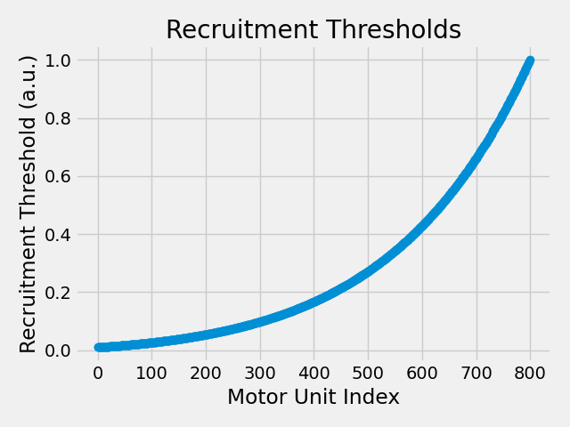
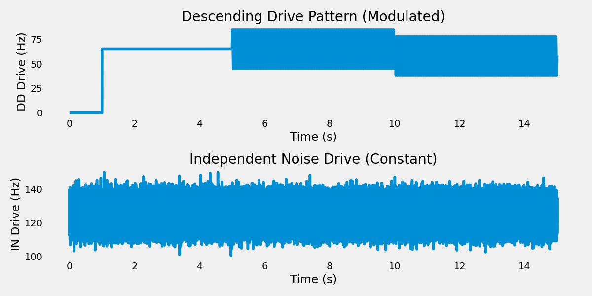

Note
Go to the end to download the full example code.
Run Spinal Network Simulation with Shared Descending Drive#
This example reproduces the computational model from Watanabe et al. (2013), which investigates motor unit synchronization through shared synaptic input and independent noise in a biophysically realistic spinal network.
Note
Scientific Context:
This simulation replicates the key findings from: Watanabe K, Kouzaki M, Moritani T (2013) “Task-dependent influences of somatosensory feedback on the motor unit activity”
The model demonstrates how:
Shared descending drive creates correlated firing between motor units
Independent noise reduces synchronization and increases firing variability
Sinusoidal modulation (20 Hz) of descending drive mimics physiological tremor
Important
Model Architecture:
800 Alpha Motor Neurons: Output pool with physiological recruitment thresholds
400 Descending Drive (DD) neurons: Shared input with 30% connectivity per MN
800 Independent Noise (IN) neurons: One-to-one noise source per MN
Three simulation phases: Constant drive, sinusoidal modulation (DC=65), sinusoidal modulation (DC=58)
Key Parameters (matching Watanabe et al. 2013):
Integration timestep: 0.025 ms (matching paper’s high-resolution requirement)
DD firing rate: ~65 Hz (modulated with 20 Hz sinusoid)
IN firing rate: ~125 Hz (constant, mean ISI = 8 ms)
DD connectivity: 30% (sparse connectivity mimicking physiological convergence)
Simulation duration: 15 seconds (3 phases × 5 seconds each)
Use Case: Reproduce published results on motor unit synchronization, validate spinal network models, study effects of shared vs. independent drive.
Import Libraries#
from pathlib import Path
import joblib
import matplotlib.pyplot as plt
import numpy as np
import quantities as pq
from neuron import h
from myogen import RANDOM_GENERATOR, load_nmodl_mechanisms, simulator
from myogen.simulator.neuron.network import Network
from myogen.simulator.neuron.populations import AlphaMN__Pool, DescendingDrive__Pool
from myogen.simulator.neuron.simulation_runner import SimulationRunner
from myogen.utils.continuous_saver import ContinuousSaver
plt.style.use("fivethirtyeight")
Load NEURON Mechanisms and Dependencies#
Load the compiled NMODL mechanisms required for biophysical neuron modeling and load results from previous examples that serve as inputs to this simulation.
# Load NEURON mechanisms
load_nmodl_mechanisms()
# Setup results directory
save_path = Path("./results")
save_path.mkdir(exist_ok=True)
# Setup continuous saving directory (subdirectory for chunks)
chunks_path = save_path / "watanabe_chunks"
chunks_path.mkdir(exist_ok=True)
Define Simulation Parameters#
These parameters control the temporal and spatial resolution of the simulation, as well as the physiological characteristics of the neural populations and mechanical system.
# Temporal parameters - high resolution for accurate neural integration
dt = 0.025 # ms - Integration timestep
segment_duration__s = 5 # seconds - Duration of each phase (3 phases total)
tstop = segment_duration__s * 3 * 1e3 # ms - Total simulation duration (3 phases)
n_steps = int(tstop / dt)
# Add margin for NEURON's potential overstep
time = np.linspace(0, tstop, n_steps)
print("Simulation parameters:")
print(f"\tSegment duration: {segment_duration__s} s")
print(f"\tTotal duration: {tstop / 1e3} s ({tstop} ms)")
print(f"\tTimestep: {dt} ms")
print(f"\tTime samples: {len(time)}")
Simulation parameters:
Segment duration: 5 s
Total duration: 15.0 s (15000.0 ms)
Timestep: 0.025 ms
Time samples: 600000
Define Neural Population Sizes#
Population sizes are based on physiological estimates from cat and human studies. These numbers represent typical motor pool compositions for a single muscle.
# Motor neurons (output to muscles)
naMN = 800
# Descending drive (cortical input) - shared across motor neurons
nDD = 400 # Total descending drive neurons (30% connectivity to each MN)
DDorder = 16 # Poisson batch size for threshold generation (higher = better statistics)
# Independent noise (IN) - one per motor neuron
nIN = naMN # One independent Poisson noise source per motor neuron
INorder = 16 # Poisson batch size for threshold generation
# Watanabe paper specifies: mean ISI = 8 ms → firing rate = 125 Hz
# This firing rate is controlled by the DDdrive signal (see eachStep callback below)
rt, _ = simulator.RecruitmentThresholds(
N=naMN, recruitment_range__ratio=100, mode="combined", deluca__slope=10
)
plt.plot(rt, "-o")
plt.xlabel("Motor Unit Index")
plt.ylabel("Recruitment Threshold (a.u.)")
plt.title("Recruitment Thresholds")
plt.tight_layout()
plt.show()

Define Descending Drive Patterns#
Create DD drive pattern with three phases: - Phase 1: Constant 65 for first segment (0 to segment_duration__s) - Phase 2: 20 Hz sinusoid with DC=65, amplitude 20 (segment_duration__s to 2*segment_duration__s) - Phase 3: Same 20 Hz sinusoid but DC reduced to 58 (2*segment_duration__s to 3*segment_duration__s)
time_s = time / 1000.0 # Convert to seconds for easier calculation
# Descending drive (DD) - modulated signal
DDdrive = np.full_like(time, 65.0)
# make the first 1 seconds be 0
DDdrive[time_s < 1] = 0.0
# Phase 2: 20 Hz sinusoid with DC=65, amplitude=20 for second segment
phase2_mask = (time_s >= segment_duration__s) & (time_s < 2 * segment_duration__s)
DDdrive[phase2_mask] = 65 + 20 * np.sin(2 * np.pi * 20 * time_s[phase2_mask])
# Phase 3: Same sinusoid for third segment but DC reduced to 58
phase3_mask = time_s >= 2 * segment_duration__s
DDdrive[phase3_mask] = 58 + 20 * np.sin(2 * np.pi * 20 * time_s[phase3_mask])
# Independent noise (IN) - 125 Hz with random variation
# ±1 ms ISI variation: 1/(8-1)=143 Hz to 1/(8+1)=111 Hz, so ±16 Hz range
# Using smaller random noise for smoother variation
INdrive = 125.0 + RANDOM_GENERATOR.normal(0, 5.0, len(time)) # 125 Hz ± ~5 Hz (σ)
plt.figure(figsize=(12, 6))
plt.subplot(2, 1, 1)
plt.plot(time_s, DDdrive)
plt.xlabel("Time (s)")
plt.ylabel("DD Drive (Hz)")
plt.title("Descending Drive Pattern (Modulated)")
plt.grid()
plt.subplot(2, 1, 2)
plt.plot(time_s, INdrive)
plt.xlabel("Time (s)")
plt.ylabel("IN Drive (Hz)")
plt.title("Independent Noise Drive (Constant)")
plt.grid()
plt.tight_layout()
plt.show()

Create Neural Populations#
Create three neural populations: 1. Alpha motor neurons (aMN) - the output neurons controlling muscle 2. Descending drive (DD) - 400 axons with 30% connectivity to each MN 3. Independent noise (IN) - one-to-one Poisson noise source per MN
Define Callback Functions#
These functions handle the integration of different system components during the simulation, including spike events and step-wise updates.
def eachStep(
popD,
ncD,
DDdrive,
INdrive,
step_counter,
tstop,
continuous_saver,
timestep__ms,
):
"""
Step-wise integration function called at each simulation timestep.
Implements the Watanabe paper protocol by driving descending drive (DD)
with a modulated signal and independent noise (IN) with a constant signal.
The Poisson process nature of these populations ensures independent spike trains.
Parameters
----------
popD : dict
Dictionary of neural populations ("DD", "IN", "aMN")
ncD : dict
Dictionary of network connections ("cmd->DD", "cmd->IN")
DDdrive : array
Time-varying modulated drive signal for descending drive (DD) population (Hz)
INdrive : array
Constant drive signal for independent noise (IN) population (Hz)
step_counter : iterator
Simulation step counter
tstop : float
Simulation stop time in ms
continuous_saver : ContinuousSaver
Continuous data saver instance
timestep__ms : float
Integration timestep in milliseconds
"""
# Check if simulation time has exceeded the limit
if h.t >= tstop:
return # Stop processing when simulation time limit reached
i = next(step_counter)
# DESCENDING DRIVE PROCESSING: Convert cortical signals to spikes
# DD receives modulated drive, IN receives constant drive (both generate
# independent spike trains due to their Poisson process nature)
if i < len(DDdrive):
# Drive descending axons (DD) - shared across motor neurons with modulated signal
for DDcell in popD["DD"]:
if DDcell.integrate(DDdrive[i]):
spike_time = h.t + 1
if spike_time < tstop:
ncD["cmd->DD"][DDcell.pool__ID].event(spike_time)
# Drive independent noise sources (IN) - one per motor neuron with constant signal
for INcell in popD["IN"]:
if INcell.integrate(INdrive[i]):
spike_time = h.t + 1
if spike_time < tstop:
ncD["cmd->IN"][INcell.pool__ID].event(spike_time)
# CONTINUOUS SAVING: Record data for this timestep
continuous_saver.record_step(timestep__ms)
Create Neural Network#
Assemble all neural populations into a connected network that implements the Watanabe paper architecture: - DD (400) → aMN (100) with 30% probability (shared descending drive) - IN (100) → aMN (100) one-to-one (independent noise per MN)
network = Network({"DD": DD, "IN": IN, "aMN": aMN})
Configure Neural Connections with Scaled Synaptic Weights#
Two types of inputs to motor neurons (per Watanabe paper): 1. Shared descending drive with sparse connectivity (30%) 2. Independent noise with one-to-one mapping
CRITICAL: Synaptic weights must be scaled by the number of converging connections to avoid over-excitation. With 30% connectivity, each MN receives ~120 DD inputs.
# Calculate scaled weights
DD_connectivity = 0.3
expected_DD_per_MN = int(DD_connectivity * nDD) # 120 connections per MN
# Target total conductances per MN (physiologically realistic)
target_total_DD_conductance__uS = 0.1 * pq.uS # Total DD conductance per MN
target_IN_conductance__uS = 0.05 * pq.uS # IN conductance per MN
# Scale DD weight by number of converging connections
weight_DD__uS = target_total_DD_conductance__uS / expected_DD_per_MN
print("\nSynaptic Weight Scaling:")
print(f"\tDD connections per MN: {expected_DD_per_MN}")
print(f"\tDD weight per connection: {weight_DD__uS:.6f} uS")
print(f"\tTotal DD conductance per MN: {weight_DD__uS * expected_DD_per_MN:.3f} uS")
print(f"\tIN conductance per MN: {target_IN_conductance__uS:.3f} uS")
print(f"\tDD/IN ratio: {(weight_DD__uS * expected_DD_per_MN) / target_IN_conductance__uS:.1f}x")
network.connect(
"DD",
"aMN",
probability=DD_connectivity,
weight__uS=target_total_DD_conductance__uS,
)
# Independent noise: IN → aMN (one-to-one)
network.connect_one_to_one("IN", "aMN", probability=1.0, weight__uS=target_IN_conductance__uS)
Synaptic Weight Scaling:
DD connections per MN: 120
DD weight per connection: 0.000833 uS uS
Total DD conductance per MN: 0.100 uS uS
IN conductance per MN: 0.050 uS uS
DD/IN ratio: 2.0 dimensionlessx
[NetCon[96358], NetCon[96359], NetCon[96360], NetCon[96361], NetCon[96362], NetCon[96363], NetCon[96364], NetCon[96365], NetCon[96366], NetCon[96367], NetCon[96368], NetCon[96369], NetCon[96370], NetCon[96371], NetCon[96372], NetCon[96373], NetCon[96374], NetCon[96375], NetCon[96376], NetCon[96377], NetCon[96378], NetCon[96379], NetCon[96380], NetCon[96381], NetCon[96382], NetCon[96383], NetCon[96384], NetCon[96385], NetCon[96386], NetCon[96387], NetCon[96388], NetCon[96389], NetCon[96390], NetCon[96391], NetCon[96392], NetCon[96393], NetCon[96394], NetCon[96395], NetCon[96396], NetCon[96397], NetCon[96398], NetCon[96399], NetCon[96400], NetCon[96401], NetCon[96402], NetCon[96403], NetCon[96404], NetCon[96405], NetCon[96406], NetCon[96407], NetCon[96408], NetCon[96409], NetCon[96410], NetCon[96411], NetCon[96412], NetCon[96413], NetCon[96414], NetCon[96415], NetCon[96416], NetCon[96417], NetCon[96418], NetCon[96419], NetCon[96420], NetCon[96421], NetCon[96422], NetCon[96423], NetCon[96424], NetCon[96425], NetCon[96426], NetCon[96427], NetCon[96428], NetCon[96429], NetCon[96430], NetCon[96431], NetCon[96432], NetCon[96433], NetCon[96434], NetCon[96435], NetCon[96436], NetCon[96437], NetCon[96438], NetCon[96439], NetCon[96440], NetCon[96441], NetCon[96442], NetCon[96443], NetCon[96444], NetCon[96445], NetCon[96446], NetCon[96447], NetCon[96448], NetCon[96449], NetCon[96450], NetCon[96451], NetCon[96452], NetCon[96453], NetCon[96454], NetCon[96455], NetCon[96456], NetCon[96457], NetCon[96458], NetCon[96459], NetCon[96460], NetCon[96461], NetCon[96462], NetCon[96463], NetCon[96464], NetCon[96465], NetCon[96466], NetCon[96467], NetCon[96468], NetCon[96469], NetCon[96470], NetCon[96471], NetCon[96472], NetCon[96473], NetCon[96474], NetCon[96475], NetCon[96476], NetCon[96477], NetCon[96478], NetCon[96479], NetCon[96480], NetCon[96481], NetCon[96482], NetCon[96483], NetCon[96484], NetCon[96485], NetCon[96486], NetCon[96487], NetCon[96488], NetCon[96489], NetCon[96490], NetCon[96491], NetCon[96492], NetCon[96493], NetCon[96494], NetCon[96495], NetCon[96496], NetCon[96497], NetCon[96498], NetCon[96499], NetCon[96500], NetCon[96501], NetCon[96502], NetCon[96503], NetCon[96504], NetCon[96505], NetCon[96506], NetCon[96507], NetCon[96508], NetCon[96509], NetCon[96510], NetCon[96511], NetCon[96512], NetCon[96513], NetCon[96514], NetCon[96515], NetCon[96516], NetCon[96517], NetCon[96518], NetCon[96519], NetCon[96520], NetCon[96521], NetCon[96522], NetCon[96523], NetCon[96524], NetCon[96525], NetCon[96526], NetCon[96527], NetCon[96528], NetCon[96529], NetCon[96530], NetCon[96531], NetCon[96532], NetCon[96533], NetCon[96534], NetCon[96535], NetCon[96536], NetCon[96537], NetCon[96538], NetCon[96539], NetCon[96540], NetCon[96541], NetCon[96542], NetCon[96543], NetCon[96544], NetCon[96545], NetCon[96546], NetCon[96547], NetCon[96548], NetCon[96549], NetCon[96550], NetCon[96551], NetCon[96552], NetCon[96553], NetCon[96554], NetCon[96555], NetCon[96556], NetCon[96557], NetCon[96558], NetCon[96559], NetCon[96560], NetCon[96561], NetCon[96562], NetCon[96563], NetCon[96564], NetCon[96565], NetCon[96566], NetCon[96567], NetCon[96568], NetCon[96569], NetCon[96570], NetCon[96571], NetCon[96572], NetCon[96573], NetCon[96574], NetCon[96575], NetCon[96576], NetCon[96577], NetCon[96578], NetCon[96579], NetCon[96580], NetCon[96581], NetCon[96582], NetCon[96583], NetCon[96584], NetCon[96585], NetCon[96586], NetCon[96587], NetCon[96588], NetCon[96589], NetCon[96590], NetCon[96591], NetCon[96592], NetCon[96593], NetCon[96594], NetCon[96595], NetCon[96596], NetCon[96597], NetCon[96598], NetCon[96599], NetCon[96600], NetCon[96601], NetCon[96602], NetCon[96603], NetCon[96604], NetCon[96605], NetCon[96606], NetCon[96607], NetCon[96608], NetCon[96609], NetCon[96610], NetCon[96611], NetCon[96612], NetCon[96613], NetCon[96614], NetCon[96615], NetCon[96616], NetCon[96617], NetCon[96618], NetCon[96619], NetCon[96620], NetCon[96621], NetCon[96622], NetCon[96623], NetCon[96624], NetCon[96625], NetCon[96626], NetCon[96627], NetCon[96628], NetCon[96629], NetCon[96630], NetCon[96631], NetCon[96632], NetCon[96633], NetCon[96634], NetCon[96635], NetCon[96636], NetCon[96637], NetCon[96638], NetCon[96639], NetCon[96640], NetCon[96641], NetCon[96642], NetCon[96643], NetCon[96644], NetCon[96645], NetCon[96646], NetCon[96647], NetCon[96648], NetCon[96649], NetCon[96650], NetCon[96651], NetCon[96652], NetCon[96653], NetCon[96654], NetCon[96655], NetCon[96656], NetCon[96657], NetCon[96658], NetCon[96659], NetCon[96660], NetCon[96661], NetCon[96662], NetCon[96663], NetCon[96664], NetCon[96665], NetCon[96666], NetCon[96667], NetCon[96668], NetCon[96669], NetCon[96670], NetCon[96671], NetCon[96672], NetCon[96673], NetCon[96674], NetCon[96675], NetCon[96676], NetCon[96677], NetCon[96678], NetCon[96679], NetCon[96680], NetCon[96681], NetCon[96682], NetCon[96683], NetCon[96684], NetCon[96685], NetCon[96686], NetCon[96687], NetCon[96688], NetCon[96689], NetCon[96690], NetCon[96691], NetCon[96692], NetCon[96693], NetCon[96694], NetCon[96695], NetCon[96696], NetCon[96697], NetCon[96698], NetCon[96699], NetCon[96700], NetCon[96701], NetCon[96702], NetCon[96703], NetCon[96704], NetCon[96705], NetCon[96706], NetCon[96707], NetCon[96708], NetCon[96709], NetCon[96710], NetCon[96711], NetCon[96712], NetCon[96713], NetCon[96714], NetCon[96715], NetCon[96716], NetCon[96717], NetCon[96718], NetCon[96719], NetCon[96720], NetCon[96721], NetCon[96722], NetCon[96723], NetCon[96724], NetCon[96725], NetCon[96726], NetCon[96727], NetCon[96728], NetCon[96729], NetCon[96730], NetCon[96731], NetCon[96732], NetCon[96733], NetCon[96734], NetCon[96735], NetCon[96736], NetCon[96737], NetCon[96738], NetCon[96739], NetCon[96740], NetCon[96741], NetCon[96742], NetCon[96743], NetCon[96744], NetCon[96745], NetCon[96746], NetCon[96747], NetCon[96748], NetCon[96749], NetCon[96750], NetCon[96751], NetCon[96752], NetCon[96753], NetCon[96754], NetCon[96755], NetCon[96756], NetCon[96757], NetCon[96758], NetCon[96759], NetCon[96760], NetCon[96761], NetCon[96762], NetCon[96763], NetCon[96764], NetCon[96765], NetCon[96766], NetCon[96767], NetCon[96768], NetCon[96769], NetCon[96770], NetCon[96771], NetCon[96772], NetCon[96773], NetCon[96774], NetCon[96775], NetCon[96776], NetCon[96777], NetCon[96778], NetCon[96779], NetCon[96780], NetCon[96781], NetCon[96782], NetCon[96783], NetCon[96784], NetCon[96785], NetCon[96786], NetCon[96787], NetCon[96788], NetCon[96789], NetCon[96790], NetCon[96791], NetCon[96792], NetCon[96793], NetCon[96794], NetCon[96795], NetCon[96796], NetCon[96797], NetCon[96798], NetCon[96799], NetCon[96800], NetCon[96801], NetCon[96802], NetCon[96803], NetCon[96804], NetCon[96805], NetCon[96806], NetCon[96807], NetCon[96808], NetCon[96809], NetCon[96810], NetCon[96811], NetCon[96812], NetCon[96813], NetCon[96814], NetCon[96815], NetCon[96816], NetCon[96817], NetCon[96818], NetCon[96819], NetCon[96820], NetCon[96821], NetCon[96822], NetCon[96823], NetCon[96824], NetCon[96825], NetCon[96826], NetCon[96827], NetCon[96828], NetCon[96829], NetCon[96830], NetCon[96831], NetCon[96832], NetCon[96833], NetCon[96834], NetCon[96835], NetCon[96836], NetCon[96837], NetCon[96838], NetCon[96839], NetCon[96840], NetCon[96841], NetCon[96842], NetCon[96843], NetCon[96844], NetCon[96845], NetCon[96846], NetCon[96847], NetCon[96848], NetCon[96849], NetCon[96850], NetCon[96851], NetCon[96852], NetCon[96853], NetCon[96854], NetCon[96855], NetCon[96856], NetCon[96857], NetCon[96858], NetCon[96859], NetCon[96860], NetCon[96861], NetCon[96862], NetCon[96863], NetCon[96864], NetCon[96865], NetCon[96866], NetCon[96867], NetCon[96868], NetCon[96869], NetCon[96870], NetCon[96871], NetCon[96872], NetCon[96873], NetCon[96874], NetCon[96875], NetCon[96876], NetCon[96877], NetCon[96878], NetCon[96879], NetCon[96880], NetCon[96881], NetCon[96882], NetCon[96883], NetCon[96884], NetCon[96885], NetCon[96886], NetCon[96887], NetCon[96888], NetCon[96889], NetCon[96890], NetCon[96891], NetCon[96892], NetCon[96893], NetCon[96894], NetCon[96895], NetCon[96896], NetCon[96897], NetCon[96898], NetCon[96899], NetCon[96900], NetCon[96901], NetCon[96902], NetCon[96903], NetCon[96904], NetCon[96905], NetCon[96906], NetCon[96907], NetCon[96908], NetCon[96909], NetCon[96910], NetCon[96911], NetCon[96912], NetCon[96913], NetCon[96914], NetCon[96915], NetCon[96916], NetCon[96917], NetCon[96918], NetCon[96919], NetCon[96920], NetCon[96921], NetCon[96922], NetCon[96923], NetCon[96924], NetCon[96925], NetCon[96926], NetCon[96927], NetCon[96928], NetCon[96929], NetCon[96930], NetCon[96931], NetCon[96932], NetCon[96933], NetCon[96934], NetCon[96935], NetCon[96936], NetCon[96937], NetCon[96938], NetCon[96939], NetCon[96940], NetCon[96941], NetCon[96942], NetCon[96943], NetCon[96944], NetCon[96945], NetCon[96946], NetCon[96947], NetCon[96948], NetCon[96949], NetCon[96950], NetCon[96951], NetCon[96952], NetCon[96953], NetCon[96954], NetCon[96955], NetCon[96956], NetCon[96957], NetCon[96958], NetCon[96959], NetCon[96960], NetCon[96961], NetCon[96962], NetCon[96963], NetCon[96964], NetCon[96965], NetCon[96966], NetCon[96967], NetCon[96968], NetCon[96969], NetCon[96970], NetCon[96971], NetCon[96972], NetCon[96973], NetCon[96974], NetCon[96975], NetCon[96976], NetCon[96977], NetCon[96978], NetCon[96979], NetCon[96980], NetCon[96981], NetCon[96982], NetCon[96983], NetCon[96984], NetCon[96985], NetCon[96986], NetCon[96987], NetCon[96988], NetCon[96989], NetCon[96990], NetCon[96991], NetCon[96992], NetCon[96993], NetCon[96994], NetCon[96995], NetCon[96996], NetCon[96997], NetCon[96998], NetCon[96999], NetCon[97000], NetCon[97001], NetCon[97002], NetCon[97003], NetCon[97004], NetCon[97005], NetCon[97006], NetCon[97007], NetCon[97008], NetCon[97009], NetCon[97010], NetCon[97011], NetCon[97012], NetCon[97013], NetCon[97014], NetCon[97015], NetCon[97016], NetCon[97017], NetCon[97018], NetCon[97019], NetCon[97020], NetCon[97021], NetCon[97022], NetCon[97023], NetCon[97024], NetCon[97025], NetCon[97026], NetCon[97027], NetCon[97028], NetCon[97029], NetCon[97030], NetCon[97031], NetCon[97032], NetCon[97033], NetCon[97034], NetCon[97035], NetCon[97036], NetCon[97037], NetCon[97038], NetCon[97039], NetCon[97040], NetCon[97041], NetCon[97042], NetCon[97043], NetCon[97044], NetCon[97045], NetCon[97046], NetCon[97047], NetCon[97048], NetCon[97049], NetCon[97050], NetCon[97051], NetCon[97052], NetCon[97053], NetCon[97054], NetCon[97055], NetCon[97056], NetCon[97057], NetCon[97058], NetCon[97059], NetCon[97060], NetCon[97061], NetCon[97062], NetCon[97063], NetCon[97064], NetCon[97065], NetCon[97066], NetCon[97067], NetCon[97068], NetCon[97069], NetCon[97070], NetCon[97071], NetCon[97072], NetCon[97073], NetCon[97074], NetCon[97075], NetCon[97076], NetCon[97077], NetCon[97078], NetCon[97079], NetCon[97080], NetCon[97081], NetCon[97082], NetCon[97083], NetCon[97084], NetCon[97085], NetCon[97086], NetCon[97087], NetCon[97088], NetCon[97089], NetCon[97090], NetCon[97091], NetCon[97092], NetCon[97093], NetCon[97094], NetCon[97095], NetCon[97096], NetCon[97097], NetCon[97098], NetCon[97099], NetCon[97100], NetCon[97101], NetCon[97102], NetCon[97103], NetCon[97104], NetCon[97105], NetCon[97106], NetCon[97107], NetCon[97108], NetCon[97109], NetCon[97110], NetCon[97111], NetCon[97112], NetCon[97113], NetCon[97114], NetCon[97115], NetCon[97116], NetCon[97117], NetCon[97118], NetCon[97119], NetCon[97120], NetCon[97121], NetCon[97122], NetCon[97123], NetCon[97124], NetCon[97125], NetCon[97126], NetCon[97127], NetCon[97128], NetCon[97129], NetCon[97130], NetCon[97131], NetCon[97132], NetCon[97133], NetCon[97134], NetCon[97135], NetCon[97136], NetCon[97137], NetCon[97138], NetCon[97139], NetCon[97140], NetCon[97141], NetCon[97142], NetCon[97143], NetCon[97144], NetCon[97145], NetCon[97146], NetCon[97147], NetCon[97148], NetCon[97149], NetCon[97150], NetCon[97151], NetCon[97152], NetCon[97153], NetCon[97154], NetCon[97155], NetCon[97156], NetCon[97157]]
Configure External Inputs#
Setup external input pathways for both descending drive and independent noise. Both populations receive the same external drive signal but generate independent spike trains due to their Poisson process nature.
network.connect_from_external("cmd", "DD", weight__uS=1.0 * pq.uS)
network.connect_from_external("cmd", "IN", weight__uS=1.0 * pq.uS)
ncD = {
"cmd->DD": network.get_netcons("cmd", "DD"),
"cmd->IN": network.get_netcons("cmd", "IN"),
}
Setup Continuous Saving#
Initialize continuous saver to prevent memory overflow during long simulation. Data will be saved in chunks every 10 seconds of simulation time.
# Record ALL motor neurons (full resolution)
recording_neurons = list(range(0, naMN, 5)) # All 400 neurons
# Use smaller chunks (50s) to keep peak RAM manageable with full recording
# 50 seconds × 400 neurons × 200,000 timesteps × 8 bytes ≈ 640 MB per chunk
chunk_duration_ms = 5000.0 * pq.ms
continuous_saver = ContinuousSaver(
save_path=chunks_path,
chunk_duration__ms=chunk_duration_ms,
populations=network.populations,
recording_config={"aMN": recording_neurons},
)
print("\nContinuous saving configured:")
print(f"\tRecording {len(recording_neurons)} neurons (ALL)")
print(f"\tChunk duration: {chunk_duration_ms / 1000:.1f} seconds")
print("\tEstimated max RAM per chunk: ~640 MB")
print(f"\tTotal chunks expected: {int(tstop / chunk_duration_ms)}")
ContinuousSaver initialized:
Save path: results/watanabe_chunks
Chunk duration: 5000.0 ms ms
Recording config: {'aMN': [0, 5, 10, 15, 20, 25, 30, 35, 40, 45, 50, 55, 60, 65, 70, 75, 80, 85, 90, 95, 100, 105, 110, 115, 120, 125, 130, 135, 140, 145, 150, 155, 160, 165, 170, 175, 180, 185, 190, 195, 200, 205, 210, 215, 220, 225, 230, 235, 240, 245, 250, 255, 260, 265, 270, 275, 280, 285, 290, 295, 300, 305, 310, 315, 320, 325, 330, 335, 340, 345, 350, 355, 360, 365, 370, 375, 380, 385, 390, 395, 400, 405, 410, 415, 420, 425, 430, 435, 440, 445, 450, 455, 460, 465, 470, 475, 480, 485, 490, 495, 500, 505, 510, 515, 520, 525, 530, 535, 540, 545, 550, 555, 560, 565, 570, 575, 580, 585, 590, 595, 600, 605, 610, 615, 620, 625, 630, 635, 640, 645, 650, 655, 660, 665, 670, 675, 680, 685, 690, 695, 700, 705, 710, 715, 720, 725, 730, 735, 740, 745, 750, 755, 760, 765, 770, 775, 780, 785, 790, 795]}
Continuous saving configured:
Recording 160 neurons (ALL)
Chunk duration: 5.0 ms seconds
Estimated max RAM per chunk: ~640 MB
Total chunks expected: 3
Prepare Simulation Models#
Enable Adaptive Integration for Speed#
CVode provides variable timestep integration that automatically reduces dt during fast events (spikes) and increases it during slow periods. This provides 3-5x speedup while maintaining numerical stability and accuracy guarantees.
How it works: - During action potentials: dt drops to ~0.001 ms (fine resolution) - During subthreshold integration: dt increases to ~0.05-0.1 ms (coarse resolution) - Error tolerances ensure accuracy is maintained throughout
Tolerances: - atol (absolute): Maximum allowed absolute error in voltage (mV) - rtol (relative): Maximum allowed relative error (fraction) - Lower values = more accurate but slower; current values are conservative
# CVode adaptive integration - DISABLED for this simulation
#
# Reason: The step callback loops through 200 neurons (DD + IN) which gets
# called at every adaptive timestep. With CVode taking very small steps during
# spikes (dt ~ 0.0001 ms), the callback overhead dominates and slows everything down.
#
# Alternative speedup strategies:
# 1. Use larger fixed dt (0.01-0.025 ms) with secondorder=2 (Crank-Nicolson)
# 2. Reduce callback frequency by only updating drive every N steps
# 3. Move Poisson integration into NEURON mechanisms instead of Python loops
# cv = h.CVode()
# cv.active(1)
# cv.atol(1e-4)
# cv.rtol(1e-3)
# Use second-order Crank-Nicolson integration (closest to Watanabe paper's RK4)
# Note: NEURON does not have built-in RK4 for main simulation loop
# Watanabe paper used fourth-order Runge-Kutta, but NEURON's secondorder=2
# (Crank-Nicolson) provides second-order accuracy which is a reasonable approximation
h.secondorder = 2 # Crank-Nicolson method (second-order accurate)
print("\nUsing Crank-Nicolson integration (secondorder=2)")
print(f"Fixed timestep: {dt} ms")
print("\tNote: Watanabe paper used RK4; NEURON's Crank-Nicolson provides 2nd-order accuracy")
Using Crank-Nicolson integration (secondorder=2)
Fixed timestep: 0.025 ms
Note: Watanabe paper used RK4; NEURON's Crank-Nicolson provides 2nd-order accuracy
Run Spinal Network Simulation#
Execute the complete simulation with all integrated components. With CVode enabled, the ‘dt’ parameter becomes the maximum timestep - NEURON will use smaller steps automatically during fast dynamics.
print("\nStarting spinal network simulation...")
print(f"\tDuration: {tstop} ms")
print(f"\tMax timestep (CVode): {dt} ms")
print(f"\tPopulations: {len(network.populations)}")
runner = SimulationRunner(
network=network,
models={},
step_callback=step_callback,
)
# Motor neuron spike recording thresholds are now fixed in the Network class
# CONTINUOUS SAVING MODE: No membrane recording via SimulationRunner
# Data is recorded continuously via the ContinuousSaver in the step callback
# This keeps peak RAM usage below 100 MB regardless of simulation duration
print("\nRunning simulation with continuous saving (low memory mode)...")
print("\tRecording is handled by ContinuousSaver")
print("\tPeak RAM usage: < 100 MB")
results = runner.run(
duration__ms=tstop * pq.ms,
timestep__ms=dt * pq.ms,
membrane_recording=None, # Continuous saver handles recording
)
print("Simulation completed successfully!")
# Finalize continuous saving (save last chunk and ALL spike data from SimulationRunner)
print("\nFinalizing continuous data saving...")
continuous_saver.finalize(timestep__ms=dt * pq.ms, spike_results=results)
# Save simulation parameters for analysis scripts to use
print("\nSaving simulation parameters...")
simulation_params = {
"segment_duration__s": segment_duration__s,
"tstop__ms": tstop,
"dt__ms": dt,
"n_steps": n_steps,
"naMN": naMN,
"nDD": nDD,
"nIN": nIN,
}
joblib.dump(simulation_params, save_path / "watanabe__simulation_params.pkl")
print(f"Simulation parameters saved to {save_path / 'watanabe__simulation_params.pkl'}")
# Also save spike results separately for backup/compatibility
if results is not None:
print("\nSaving backup spike data...")
joblib.dump(results, save_path / "watanabe__spikes_only.pkl")
print(f"Backup spike data saved to {save_path / 'watanabe__spikes_only.pkl'}")
else:
print("No spike results from SimulationRunner")
Starting spinal network simulation...
Duration: 15000.0 ms
Max timestep (CVode): 0.025 ms
Populations: 3
Running simulation with continuous saving (low memory mode)...
Recording is handled by ContinuousSaver
Peak RAM usage: < 100 MB
Simulation Progress: 0%| | 0/15000.0 [00:00<?, ?ms/s]
Simulation Progress: 0%| | 2.875000000000007/15000.0 [00:00<08:44, 28.57ms/s]
Simulation Progress: 0%| | 6.375000000000057/15000.0 [00:00<07:45, 32.20ms/s]
Simulation Progress: 0%| | 9.74999999999998/15000.0 [00:00<07:36, 32.81ms/s]
Simulation Progress: 0%| | 13.149999999999787/15000.0 [00:00<07:30, 33.24ms/s]
Simulation Progress: 0%| | 16.549999999999596/15000.0 [00:00<07:27, 33.45ms/s]
Simulation Progress: 0%| | 19.949999999999402/15000.0 [00:00<07:26, 33.56ms/s]
Simulation Progress: 0%| | 23.374999999999208/15000.0 [00:00<07:24, 33.73ms/s]
Simulation Progress: 0%| | 26.749999999999016/15000.0 [00:00<07:24, 33.70ms/s]
Simulation Progress: 0%| | 30.124999999998824/15000.0 [00:00<07:28, 33.41ms/s]
Simulation Progress: 0%| | 33.499999999999055/15000.0 [00:01<07:27, 33.46ms/s]
Simulation Progress: 0%| | 36.87499999999982/15000.0 [00:01<07:26, 33.54ms/s]
Simulation Progress: 0%| | 40.25000000000059/15000.0 [00:01<07:26, 33.54ms/s]
Simulation Progress: 0%| | 43.62500000000136/15000.0 [00:01<07:25, 33.57ms/s]
Simulation Progress: 0%| | 47.000000000002125/15000.0 [00:01<07:25, 33.58ms/s]
Simulation Progress: 0%| | 50.4000000000029/15000.0 [00:01<07:23, 33.69ms/s]
Simulation Progress: 0%| | 53.775000000003665/15000.0 [00:01<07:24, 33.66ms/s]
Simulation Progress: 0%| | 57.17500000000444/15000.0 [00:01<07:23, 33.69ms/s]
Simulation Progress: 0%| | 60.60000000000522/15000.0 [00:01<07:21, 33.80ms/s]
Simulation Progress: 0%| | 64.02500000000599/15000.0 [00:01<07:21, 33.84ms/s]
Simulation Progress: 0%| | 67.45000000000677/15000.0 [00:02<07:20, 33.91ms/s]
Simulation Progress: 0%| | 70.85000000000754/15000.0 [00:02<07:22, 33.77ms/s]
Simulation Progress: 0%| | 74.25000000000831/15000.0 [00:02<07:22, 33.70ms/s]
Simulation Progress: 1%| | 77.67500000000909/15000.0 [00:02<07:21, 33.80ms/s]
Simulation Progress: 1%| | 81.07500000000987/15000.0 [00:02<07:21, 33.81ms/s]
Simulation Progress: 1%| | 84.47500000001064/15000.0 [00:02<07:22, 33.74ms/s]
Simulation Progress: 1%| | 87.87500000001141/15000.0 [00:02<07:21, 33.77ms/s]
Simulation Progress: 1%| | 91.27500000001218/15000.0 [00:02<07:21, 33.77ms/s]
Simulation Progress: 1%| | 94.67500000001296/15000.0 [00:02<07:21, 33.75ms/s]
Simulation Progress: 1%| | 98.10000000001374/15000.0 [00:02<07:19, 33.88ms/s]
Simulation Progress: 1%| | 101.50000000001451/15000.0 [00:03<07:19, 33.89ms/s]
Simulation Progress: 1%| | 104.90000000001528/15000.0 [00:03<07:20, 33.80ms/s]
Simulation Progress: 1%| | 108.30000000001606/15000.0 [00:03<07:20, 33.83ms/s]
Simulation Progress: 1%| | 111.72500000001683/15000.0 [00:03<07:19, 33.90ms/s]
Simulation Progress: 1%| | 115.12500000001761/15000.0 [00:03<07:19, 33.90ms/s]
Simulation Progress: 1%| | 118.52500000001838/15000.0 [00:03<07:21, 33.74ms/s]
Simulation Progress: 1%| | 121.92500000001915/15000.0 [00:03<07:20, 33.79ms/s]
Simulation Progress: 1%| | 125.35000000001993/15000.0 [00:03<07:19, 33.86ms/s]
Simulation Progress: 1%| | 128.75000000001984/15000.0 [00:03<07:19, 33.86ms/s]
Simulation Progress: 1%| | 132.15000000001675/15000.0 [00:03<07:20, 33.78ms/s]
Simulation Progress: 1%| | 135.55000000001365/15000.0 [00:04<07:20, 33.77ms/s]
Simulation Progress: 1%| | 138.95000000001056/15000.0 [00:04<07:19, 33.79ms/s]
Simulation Progress: 1%| | 142.35000000000747/15000.0 [00:04<07:20, 33.76ms/s]
Simulation Progress: 1%| | 145.75000000000438/15000.0 [00:04<07:19, 33.80ms/s]
Simulation Progress: 1%| | 149.15000000000128/15000.0 [00:04<07:20, 33.73ms/s]
Simulation Progress: 1%| | 152.5499999999982/15000.0 [00:04<07:19, 33.81ms/s]
Simulation Progress: 1%| | 155.9499999999951/15000.0 [00:04<07:18, 33.83ms/s]
Simulation Progress: 1%| | 159.349999999992/15000.0 [00:04<07:18, 33.86ms/s]
Simulation Progress: 1%| | 162.74999999998892/15000.0 [00:04<07:18, 33.87ms/s]
Simulation Progress: 1%| | 166.14999999998582/15000.0 [00:04<07:18, 33.81ms/s]
Simulation Progress: 1%| | 169.54999999998273/15000.0 [00:05<07:18, 33.79ms/s]
Simulation Progress: 1%| | 172.94999999997964/15000.0 [00:05<07:18, 33.81ms/s]
Simulation Progress: 1%| | 176.34999999997655/15000.0 [00:05<07:18, 33.82ms/s]
Simulation Progress: 1%| | 179.74999999997345/15000.0 [00:05<07:18, 33.82ms/s]
Simulation Progress: 1%| | 183.14999999997036/15000.0 [00:05<07:18, 33.81ms/s]
Simulation Progress: 1%| | 186.54999999996727/15000.0 [00:05<07:17, 33.82ms/s]
Simulation Progress: 1%|▏ | 189.94999999996418/15000.0 [00:05<07:18, 33.80ms/s]
Simulation Progress: 1%|▏ | 193.34999999996108/15000.0 [00:05<07:18, 33.78ms/s]
Simulation Progress: 1%|▏ | 196.77499999995797/15000.0 [00:05<07:16, 33.88ms/s]
Simulation Progress: 1%|▏ | 200.17499999995488/15000.0 [00:05<07:16, 33.87ms/s]
Simulation Progress: 1%|▏ | 203.57499999995179/15000.0 [00:06<07:17, 33.85ms/s]
Simulation Progress: 1%|▏ | 206.9749999999487/15000.0 [00:06<07:16, 33.88ms/s]
Simulation Progress: 1%|▏ | 210.3749999999456/15000.0 [00:06<07:18, 33.74ms/s]
Simulation Progress: 1%|▏ | 213.7749999999425/15000.0 [00:06<07:17, 33.78ms/s]
Simulation Progress: 1%|▏ | 217.17499999993942/15000.0 [00:06<07:17, 33.77ms/s]
Simulation Progress: 1%|▏ | 220.5999999999363/15000.0 [00:06<07:16, 33.84ms/s]
Simulation Progress: 1%|▏ | 223.9999999999332/15000.0 [00:06<07:16, 33.82ms/s]
Simulation Progress: 2%|▏ | 227.39999999993012/15000.0 [00:06<07:17, 33.77ms/s]
Simulation Progress: 2%|▏ | 230.79999999992702/15000.0 [00:06<07:17, 33.80ms/s]
Simulation Progress: 2%|▏ | 234.19999999992393/15000.0 [00:06<07:16, 33.82ms/s]
Simulation Progress: 2%|▏ | 237.59999999992084/15000.0 [00:07<07:17, 33.73ms/s]
Simulation Progress: 2%|▏ | 240.97499999991777/15000.0 [00:07<07:17, 33.73ms/s]
Simulation Progress: 2%|▏ | 244.37499999991468/15000.0 [00:07<07:16, 33.81ms/s]
Simulation Progress: 2%|▏ | 247.77499999991159/15000.0 [00:07<07:16, 33.80ms/s]
Simulation Progress: 2%|▏ | 251.1749999999085/15000.0 [00:07<07:16, 33.80ms/s]
Simulation Progress: 2%|▏ | 254.5749999999054/15000.0 [00:07<07:15, 33.83ms/s]
Simulation Progress: 2%|▏ | 257.9749999999023/15000.0 [00:07<07:15, 33.83ms/s]
Simulation Progress: 2%|▏ | 261.3749999998992/15000.0 [00:07<07:15, 33.86ms/s]
Simulation Progress: 2%|▏ | 264.7999999998961/15000.0 [00:07<07:14, 33.91ms/s]
Simulation Progress: 2%|▏ | 268.199999999893/15000.0 [00:07<07:17, 33.65ms/s]
Simulation Progress: 2%|▏ | 271.6249999998899/15000.0 [00:08<07:15, 33.80ms/s]
Simulation Progress: 2%|▏ | 275.0249999998868/15000.0 [00:08<07:15, 33.80ms/s]
Simulation Progress: 2%|▏ | 278.4249999998837/15000.0 [00:08<07:15, 33.78ms/s]
Simulation Progress: 2%|▏ | 281.8249999998806/15000.0 [00:08<07:15, 33.76ms/s]
Simulation Progress: 2%|▏ | 285.2249999998775/15000.0 [00:08<07:16, 33.75ms/s]
Simulation Progress: 2%|▏ | 288.62499999987443/15000.0 [00:08<07:15, 33.80ms/s]
Simulation Progress: 2%|▏ | 292.02499999987134/15000.0 [00:08<07:14, 33.84ms/s]
Simulation Progress: 2%|▏ | 295.4499999998682/15000.0 [00:08<07:13, 33.90ms/s]
Simulation Progress: 2%|▏ | 298.84999999986513/15000.0 [00:08<07:14, 33.87ms/s]
Simulation Progress: 2%|▏ | 302.24999999986204/15000.0 [00:08<07:16, 33.70ms/s]
Simulation Progress: 2%|▏ | 305.62499999985897/15000.0 [00:09<07:16, 33.70ms/s]
Simulation Progress: 2%|▏ | 308.9999999998559/15000.0 [00:09<07:16, 33.69ms/s]
Simulation Progress: 2%|▏ | 312.3999999998528/15000.0 [00:09<07:15, 33.76ms/s]
Simulation Progress: 2%|▏ | 315.7999999998497/15000.0 [00:09<07:14, 33.79ms/s]
Simulation Progress: 2%|▏ | 319.1999999998466/15000.0 [00:09<07:15, 33.74ms/s]
Simulation Progress: 2%|▏ | 322.59999999984353/15000.0 [00:09<07:14, 33.76ms/s]
Simulation Progress: 2%|▏ | 325.99999999984044/15000.0 [00:09<07:13, 33.82ms/s]
Simulation Progress: 2%|▏ | 329.4249999998373/15000.0 [00:09<07:12, 33.95ms/s]
Simulation Progress: 2%|▏ | 332.82499999983423/15000.0 [00:09<07:12, 33.94ms/s]
Simulation Progress: 2%|▏ | 336.22499999983114/15000.0 [00:09<07:13, 33.85ms/s]
Simulation Progress: 2%|▏ | 339.62499999982805/15000.0 [00:10<07:15, 33.64ms/s]
Simulation Progress: 2%|▏ | 343.02499999982496/15000.0 [00:10<07:14, 33.74ms/s]
Simulation Progress: 2%|▏ | 346.42499999982186/15000.0 [00:10<07:14, 33.75ms/s]
Simulation Progress: 2%|▏ | 349.8249999998188/15000.0 [00:10<07:13, 33.77ms/s]
Simulation Progress: 2%|▏ | 353.2249999998157/15000.0 [00:10<07:13, 33.77ms/s]
Simulation Progress: 2%|▏ | 356.6249999998126/15000.0 [00:10<07:13, 33.79ms/s]
Simulation Progress: 2%|▏ | 360.0249999998095/15000.0 [00:10<07:13, 33.80ms/s]
Simulation Progress: 2%|▏ | 363.4249999998064/15000.0 [00:10<07:12, 33.81ms/s]
Simulation Progress: 2%|▏ | 366.8249999998033/15000.0 [00:10<07:12, 33.86ms/s]
Simulation Progress: 2%|▏ | 370.2249999998002/15000.0 [00:10<07:12, 33.83ms/s]
Simulation Progress: 2%|▏ | 373.6249999997971/15000.0 [00:11<07:12, 33.80ms/s]
Simulation Progress: 3%|▎ | 377.02499999979403/15000.0 [00:11<07:12, 33.82ms/s]
Simulation Progress: 3%|▎ | 380.42499999979094/15000.0 [00:11<07:15, 33.58ms/s]
Simulation Progress: 3%|▎ | 383.82499999978785/15000.0 [00:11<07:14, 33.66ms/s]
Simulation Progress: 3%|▎ | 387.1999999997848/15000.0 [00:11<07:13, 33.69ms/s]
Simulation Progress: 3%|▎ | 390.5999999997817/15000.0 [00:11<07:13, 33.73ms/s]
Simulation Progress: 3%|▎ | 394.0249999997786/15000.0 [00:11<07:11, 33.82ms/s]
Simulation Progress: 3%|▎ | 397.4249999997755/15000.0 [00:11<07:11, 33.85ms/s]
Simulation Progress: 3%|▎ | 400.84999999977236/15000.0 [00:11<07:10, 33.90ms/s]
Simulation Progress: 3%|▎ | 404.2499999997693/15000.0 [00:11<07:10, 33.88ms/s]
Simulation Progress: 3%|▎ | 407.6499999997662/15000.0 [00:12<07:14, 33.60ms/s]
Simulation Progress: 3%|▎ | 411.0249999997631/15000.0 [00:12<07:14, 33.60ms/s]
Simulation Progress: 3%|▎ | 414.42499999976/15000.0 [00:12<07:12, 33.69ms/s]
Simulation Progress: 3%|▎ | 417.8499999997569/15000.0 [00:12<07:11, 33.83ms/s]
Simulation Progress: 3%|▎ | 421.2499999997538/15000.0 [00:12<07:11, 33.78ms/s]
Simulation Progress: 3%|▎ | 424.6749999997507/15000.0 [00:12<07:10, 33.84ms/s]
Simulation Progress: 3%|▎ | 428.0749999997476/15000.0 [00:12<07:14, 33.53ms/s]
Simulation Progress: 3%|▎ | 431.44999999974453/15000.0 [00:12<07:14, 33.51ms/s]
Simulation Progress: 3%|▎ | 434.8749999997414/15000.0 [00:12<07:12, 33.66ms/s]
Simulation Progress: 3%|▎ | 438.2749999997383/15000.0 [00:12<07:11, 33.75ms/s]
Simulation Progress: 3%|▎ | 441.67499999973523/15000.0 [00:13<07:11, 33.72ms/s]
Simulation Progress: 3%|▎ | 445.07499999973214/15000.0 [00:13<07:10, 33.78ms/s]
Simulation Progress: 3%|▎ | 448.47499999972905/15000.0 [00:13<07:10, 33.82ms/s]
Simulation Progress: 3%|▎ | 451.87499999972596/15000.0 [00:13<07:10, 33.81ms/s]
Simulation Progress: 3%|▎ | 455.27499999972287/15000.0 [00:13<07:09, 33.86ms/s]
Simulation Progress: 3%|▎ | 458.6749999997198/15000.0 [00:13<07:09, 33.84ms/s]
Simulation Progress: 3%|▎ | 462.0749999997167/15000.0 [00:13<07:09, 33.87ms/s]
Simulation Progress: 3%|▎ | 465.4749999997136/15000.0 [00:13<07:08, 33.88ms/s]
Simulation Progress: 3%|▎ | 468.8999999997105/15000.0 [00:13<07:08, 33.95ms/s]
Simulation Progress: 3%|▎ | 472.32499999970736/15000.0 [00:13<07:07, 33.96ms/s]
Simulation Progress: 3%|▎ | 475.72499999970427/15000.0 [00:14<07:08, 33.90ms/s]
Simulation Progress: 3%|▎ | 479.1249999997012/15000.0 [00:14<07:08, 33.90ms/s]
Simulation Progress: 3%|▎ | 482.5249999996981/15000.0 [00:14<07:12, 33.59ms/s]
Simulation Progress: 3%|▎ | 485.924999999695/15000.0 [00:14<07:11, 33.67ms/s]
Simulation Progress: 3%|▎ | 489.2999999996919/15000.0 [00:14<07:11, 33.65ms/s]
Simulation Progress: 3%|▎ | 492.6999999996888/15000.0 [00:14<07:09, 33.74ms/s]
Simulation Progress: 3%|▎ | 496.09999999968574/15000.0 [00:14<07:09, 33.80ms/s]
Simulation Progress: 3%|▎ | 499.49999999968264/15000.0 [00:14<07:08, 33.82ms/s]
Simulation Progress: 3%|▎ | 502.89999999967955/15000.0 [00:14<07:08, 33.85ms/s]
Simulation Progress: 3%|▎ | 506.29999999967646/15000.0 [00:14<07:07, 33.88ms/s]
Simulation Progress: 3%|▎ | 509.69999999967337/15000.0 [00:15<07:07, 33.92ms/s]
Simulation Progress: 3%|▎ | 513.0999999996752/15000.0 [00:15<07:07, 33.88ms/s]
Simulation Progress: 3%|▎ | 516.4999999996876/15000.0 [00:15<07:07, 33.86ms/s]
Simulation Progress: 3%|▎ | 519.9249999997/15000.0 [00:15<07:07, 33.91ms/s]
Simulation Progress: 3%|▎ | 523.3249999997124/15000.0 [00:15<07:07, 33.83ms/s]
Simulation Progress: 4%|▎ | 526.7249999997248/15000.0 [00:15<07:07, 33.86ms/s]
Simulation Progress: 4%|▎ | 530.1249999997372/15000.0 [00:15<07:07, 33.88ms/s]
Simulation Progress: 4%|▎ | 533.5249999997495/15000.0 [00:15<07:06, 33.90ms/s]
Simulation Progress: 4%|▎ | 536.949999999762/15000.0 [00:15<07:05, 33.95ms/s]
Simulation Progress: 4%|▎ | 540.3749999997744/15000.0 [00:16<07:05, 33.99ms/s]
Simulation Progress: 4%|▎ | 543.7749999997868/15000.0 [00:16<07:10, 33.60ms/s]
Simulation Progress: 4%|▎ | 547.1499999997991/15000.0 [00:16<07:10, 33.59ms/s]
Simulation Progress: 4%|▎ | 550.5499999998115/15000.0 [00:16<07:09, 33.66ms/s]
Simulation Progress: 4%|▎ | 553.9499999998238/15000.0 [00:16<07:08, 33.74ms/s]
Simulation Progress: 4%|▎ | 557.3249999998361/15000.0 [00:16<07:08, 33.73ms/s]
Simulation Progress: 4%|▎ | 560.7499999998486/15000.0 [00:16<07:06, 33.82ms/s]
Simulation Progress: 4%|▍ | 564.1499999998609/15000.0 [00:16<07:06, 33.86ms/s]
Simulation Progress: 4%|▍ | 567.5499999998733/15000.0 [00:16<07:05, 33.90ms/s]
Simulation Progress: 4%|▍ | 570.9499999998857/15000.0 [00:16<07:05, 33.89ms/s]
Simulation Progress: 4%|▍ | 574.349999999898/15000.0 [00:17<07:06, 33.82ms/s]
Simulation Progress: 4%|▍ | 577.7499999999104/15000.0 [00:17<07:06, 33.82ms/s]
Simulation Progress: 4%|▍ | 581.1499999999228/15000.0 [00:17<07:06, 33.82ms/s]
Simulation Progress: 4%|▍ | 584.5499999999352/15000.0 [00:17<07:05, 33.85ms/s]
Simulation Progress: 4%|▍ | 587.9749999999476/15000.0 [00:17<07:05, 33.90ms/s]
Simulation Progress: 4%|▍ | 591.37499999996/15000.0 [00:17<07:05, 33.84ms/s]
Simulation Progress: 4%|▍ | 594.7999999999724/15000.0 [00:17<07:04, 33.90ms/s]
Simulation Progress: 4%|▍ | 598.2249999999849/15000.0 [00:17<07:03, 33.98ms/s]
Simulation Progress: 4%|▍ | 601.6499999999974/15000.0 [00:17<07:03, 34.00ms/s]
Simulation Progress: 4%|▍ | 605.0500000000097/15000.0 [00:17<07:04, 33.90ms/s]
Simulation Progress: 4%|▍ | 608.4500000000221/15000.0 [00:18<07:10, 33.43ms/s]
Simulation Progress: 4%|▍ | 611.8250000000344/15000.0 [00:18<07:09, 33.50ms/s]
Simulation Progress: 4%|▍ | 615.2250000000467/15000.0 [00:18<07:07, 33.61ms/s]
Simulation Progress: 4%|▍ | 618.6500000000592/15000.0 [00:18<07:06, 33.75ms/s]
Simulation Progress: 4%|▍ | 622.0500000000716/15000.0 [00:18<07:05, 33.79ms/s]
Simulation Progress: 4%|▍ | 625.450000000084/15000.0 [00:18<07:05, 33.81ms/s]
Simulation Progress: 4%|▍ | 628.8500000000963/15000.0 [00:18<07:04, 33.85ms/s]
Simulation Progress: 4%|▍ | 632.2500000001087/15000.0 [00:18<07:04, 33.88ms/s]
Simulation Progress: 4%|▍ | 635.650000000121/15000.0 [00:18<07:04, 33.80ms/s]
Simulation Progress: 4%|▍ | 639.0500000001334/15000.0 [00:18<07:04, 33.83ms/s]
Simulation Progress: 4%|▍ | 642.4500000001458/15000.0 [00:19<07:04, 33.86ms/s]
Simulation Progress: 4%|▍ | 645.8500000001582/15000.0 [00:19<07:04, 33.84ms/s]
Simulation Progress: 4%|▍ | 649.2500000001705/15000.0 [00:19<07:03, 33.87ms/s]
Simulation Progress: 4%|▍ | 652.675000000183/15000.0 [00:19<07:03, 33.91ms/s]
Simulation Progress: 4%|▍ | 656.0750000001954/15000.0 [00:19<07:03, 33.87ms/s]
Simulation Progress: 4%|▍ | 659.4750000002077/15000.0 [00:19<07:03, 33.84ms/s]
Simulation Progress: 4%|▍ | 662.8750000002201/15000.0 [00:19<07:04, 33.79ms/s]
Simulation Progress: 4%|▍ | 666.2750000002325/15000.0 [00:19<07:03, 33.83ms/s]
Simulation Progress: 4%|▍ | 669.7000000002449/15000.0 [00:19<07:02, 33.90ms/s]
Simulation Progress: 4%|▍ | 673.1000000002573/15000.0 [00:19<07:03, 33.86ms/s]
Simulation Progress: 5%|▍ | 676.5250000002698/15000.0 [00:20<07:01, 33.98ms/s]
Simulation Progress: 5%|▍ | 679.9250000002821/15000.0 [00:20<07:02, 33.92ms/s]
Simulation Progress: 5%|▍ | 683.3500000002946/15000.0 [00:20<07:01, 33.95ms/s]
Simulation Progress: 5%|▍ | 686.750000000307/15000.0 [00:20<07:07, 33.45ms/s]
Simulation Progress: 5%|▍ | 690.1500000003193/15000.0 [00:20<07:06, 33.56ms/s]
Simulation Progress: 5%|▍ | 693.5500000003317/15000.0 [00:20<07:04, 33.67ms/s]
Simulation Progress: 5%|▍ | 696.9500000003441/15000.0 [00:20<07:04, 33.70ms/s]
Simulation Progress: 5%|▍ | 700.3500000003564/15000.0 [00:20<07:03, 33.73ms/s]
Simulation Progress: 5%|▍ | 703.7750000003689/15000.0 [00:20<07:02, 33.84ms/s]
Simulation Progress: 5%|▍ | 707.1750000003813/15000.0 [00:20<07:02, 33.83ms/s]
Simulation Progress: 5%|▍ | 710.5750000003936/15000.0 [00:21<07:02, 33.84ms/s]
Simulation Progress: 5%|▍ | 713.975000000406/15000.0 [00:21<07:02, 33.79ms/s]
Simulation Progress: 5%|▍ | 717.4000000004185/15000.0 [00:21<07:01, 33.87ms/s]
Simulation Progress: 5%|▍ | 720.8000000004308/15000.0 [00:21<07:01, 33.87ms/s]
Simulation Progress: 5%|▍ | 724.2000000004432/15000.0 [00:21<07:02, 33.83ms/s]
Simulation Progress: 5%|▍ | 727.6000000004556/15000.0 [00:21<07:01, 33.83ms/s]
Simulation Progress: 5%|▍ | 731.0000000004679/15000.0 [00:21<07:01, 33.85ms/s]
Simulation Progress: 5%|▍ | 734.4250000004804/15000.0 [00:21<07:00, 33.90ms/s]
Simulation Progress: 5%|▍ | 737.8250000004928/15000.0 [00:21<07:01, 33.85ms/s]
Simulation Progress: 5%|▍ | 741.2250000005051/15000.0 [00:21<07:01, 33.84ms/s]
Simulation Progress: 5%|▍ | 744.6250000005175/15000.0 [00:22<07:01, 33.82ms/s]
Simulation Progress: 5%|▍ | 748.0250000005299/15000.0 [00:22<07:03, 33.67ms/s]
Simulation Progress: 5%|▌ | 751.4250000005422/15000.0 [00:22<07:02, 33.72ms/s]
Simulation Progress: 5%|▌ | 754.8500000005547/15000.0 [00:22<07:01, 33.82ms/s]
Simulation Progress: 5%|▌ | 758.2500000005671/15000.0 [00:22<07:00, 33.86ms/s]
Simulation Progress: 5%|▌ | 761.6500000005794/15000.0 [00:22<07:00, 33.89ms/s]
Simulation Progress: 5%|▌ | 765.0500000005918/15000.0 [00:22<06:59, 33.92ms/s]
Simulation Progress: 5%|▌ | 768.4500000006042/15000.0 [00:22<06:59, 33.91ms/s]
Simulation Progress: 5%|▌ | 771.8500000006165/15000.0 [00:22<07:07, 33.27ms/s]
Simulation Progress: 5%|▌ | 775.2500000006289/15000.0 [00:22<07:05, 33.42ms/s]
Simulation Progress: 5%|▌ | 778.6250000006412/15000.0 [00:23<07:04, 33.51ms/s]
Simulation Progress: 5%|▌ | 782.0250000006536/15000.0 [00:23<07:02, 33.62ms/s]
Simulation Progress: 5%|▌ | 785.4250000006659/15000.0 [00:23<07:01, 33.71ms/s]
Simulation Progress: 5%|▌ | 788.8250000006783/15000.0 [00:23<07:00, 33.76ms/s]
Simulation Progress: 5%|▌ | 792.2500000006908/15000.0 [00:23<06:59, 33.83ms/s]
Simulation Progress: 5%|▌ | 795.6500000007031/15000.0 [00:23<07:00, 33.81ms/s]
Simulation Progress: 5%|▌ | 799.0500000007155/15000.0 [00:23<07:00, 33.73ms/s]
Simulation Progress: 5%|▌ | 802.4250000007278/15000.0 [00:23<07:00, 33.74ms/s]
Simulation Progress: 5%|▌ | 805.8250000007401/15000.0 [00:23<06:59, 33.80ms/s]
Simulation Progress: 5%|▌ | 809.2250000007525/15000.0 [00:23<06:59, 33.82ms/s]
Simulation Progress: 5%|▌ | 812.6250000007649/15000.0 [00:24<06:58, 33.86ms/s]
Simulation Progress: 5%|▌ | 816.0250000007773/15000.0 [00:24<06:58, 33.87ms/s]
Simulation Progress: 5%|▌ | 819.4500000007897/15000.0 [00:24<06:57, 33.96ms/s]
Simulation Progress: 5%|▌ | 822.8500000008021/15000.0 [00:24<06:58, 33.89ms/s]
Simulation Progress: 6%|▌ | 826.2500000008145/15000.0 [00:24<06:58, 33.83ms/s]
Simulation Progress: 6%|▌ | 829.6500000008268/15000.0 [00:24<06:58, 33.85ms/s]
Simulation Progress: 6%|▌ | 833.0500000008392/15000.0 [00:24<06:58, 33.87ms/s]
Simulation Progress: 6%|▌ | 836.4500000008516/15000.0 [00:24<06:58, 33.86ms/s]
Simulation Progress: 6%|▌ | 839.8500000008639/15000.0 [00:24<06:58, 33.82ms/s]
Simulation Progress: 6%|▌ | 843.2750000008764/15000.0 [00:24<06:57, 33.89ms/s]
Simulation Progress: 6%|▌ | 846.6750000008888/15000.0 [00:25<06:57, 33.92ms/s]
Simulation Progress: 6%|▌ | 850.0750000009011/15000.0 [00:25<06:57, 33.90ms/s]
Simulation Progress: 6%|▌ | 853.4750000009135/15000.0 [00:25<06:57, 33.86ms/s]
Simulation Progress: 6%|▌ | 856.8750000009259/15000.0 [00:25<06:58, 33.80ms/s]
Simulation Progress: 6%|▌ | 860.2750000009382/15000.0 [00:25<06:57, 33.84ms/s]
Simulation Progress: 6%|▌ | 863.6750000009506/15000.0 [00:25<06:58, 33.78ms/s]
Simulation Progress: 6%|▌ | 867.075000000963/15000.0 [00:25<07:05, 33.19ms/s]
Simulation Progress: 6%|▌ | 870.4750000009753/15000.0 [00:25<07:03, 33.39ms/s]
Simulation Progress: 6%|▌ | 873.9000000009878/15000.0 [00:25<07:00, 33.58ms/s]
Simulation Progress: 6%|▌ | 877.3250000010003/15000.0 [00:25<06:58, 33.75ms/s]
Simulation Progress: 6%|▌ | 880.7250000010126/15000.0 [00:26<06:58, 33.72ms/s]
Simulation Progress: 6%|▌ | 884.125000001025/15000.0 [00:26<06:58, 33.74ms/s]
Simulation Progress: 6%|▌ | 887.5250000010374/15000.0 [00:26<06:57, 33.76ms/s]
Simulation Progress: 6%|▌ | 890.9250000010497/15000.0 [00:26<06:57, 33.78ms/s]
Simulation Progress: 6%|▌ | 894.3250000010621/15000.0 [00:26<06:58, 33.71ms/s]
Simulation Progress: 6%|▌ | 897.7250000010745/15000.0 [00:26<06:58, 33.73ms/s]
Simulation Progress: 6%|▌ | 901.1500000010869/15000.0 [00:26<06:56, 33.81ms/s]
Simulation Progress: 6%|▌ | 904.5500000010993/15000.0 [00:26<06:56, 33.80ms/s]
Simulation Progress: 6%|▌ | 907.9750000011118/15000.0 [00:26<06:55, 33.90ms/s]
Simulation Progress: 6%|▌ | 911.3750000011241/15000.0 [00:26<06:55, 33.90ms/s]
Simulation Progress: 6%|▌ | 914.7750000011365/15000.0 [00:27<06:55, 33.89ms/s]
Simulation Progress: 6%|▌ | 918.1750000011489/15000.0 [00:27<06:55, 33.87ms/s]
Simulation Progress: 6%|▌ | 921.5750000011612/15000.0 [00:27<06:55, 33.88ms/s]
Simulation Progress: 6%|▌ | 924.9750000011736/15000.0 [00:27<06:55, 33.87ms/s]
Simulation Progress: 6%|▌ | 928.375000001186/15000.0 [00:27<06:56, 33.81ms/s]
Simulation Progress: 6%|▌ | 931.8000000011984/15000.0 [00:27<06:55, 33.89ms/s]
Simulation Progress: 6%|▌ | 935.2000000012108/15000.0 [00:27<06:54, 33.92ms/s]
Simulation Progress: 6%|▋ | 938.6000000012232/15000.0 [00:27<06:55, 33.86ms/s]
Simulation Progress: 6%|▋ | 942.0250000012356/15000.0 [00:27<06:54, 33.92ms/s]
Simulation Progress: 6%|▋ | 945.425000001248/15000.0 [00:27<06:55, 33.86ms/s]
Simulation Progress: 6%|▋ | 948.8250000012604/15000.0 [00:28<06:54, 33.87ms/s]
Simulation Progress: 6%|▋ | 952.2250000012727/15000.0 [00:28<06:54, 33.86ms/s]
Simulation Progress: 6%|▋ | 955.6250000012851/15000.0 [00:28<06:54, 33.90ms/s]
Simulation Progress: 6%|▋ | 959.0500000012976/15000.0 [00:28<06:53, 33.94ms/s]
Simulation Progress: 6%|▋ | 962.45000000131/15000.0 [00:28<06:54, 33.88ms/s]
Simulation Progress: 6%|▋ | 965.8500000013223/15000.0 [00:28<06:54, 33.87ms/s]
Simulation Progress: 6%|▋ | 969.2500000013347/15000.0 [00:28<06:55, 33.80ms/s]
Simulation Progress: 6%|▋ | 972.650000001347/15000.0 [00:28<06:55, 33.79ms/s]
Simulation Progress: 7%|▋ | 976.0500000013594/15000.0 [00:28<07:03, 33.10ms/s]
Simulation Progress: 7%|▋ | 979.4500000013718/15000.0 [00:29<07:00, 33.36ms/s]
Simulation Progress: 7%|▋ | 982.8500000013842/15000.0 [00:29<06:58, 33.50ms/s]
Simulation Progress: 7%|▋ | 986.2750000013966/15000.0 [00:29<06:56, 33.66ms/s]
Simulation Progress: 7%|▋ | 989.675000001409/15000.0 [00:29<06:55, 33.74ms/s]
Simulation Progress: 7%|▋ | 993.1000000014214/15000.0 [00:29<06:53, 33.85ms/s]
Simulation Progress: 7%|▋ | 996.5000000014338/15000.0 [00:29<06:54, 33.80ms/s]
Simulation Progress: 7%|▋ | 999.9000000014462/15000.0 [00:29<06:54, 33.81ms/s]
Simulation Progress: 7%|▋ | 1003.3000000014586/15000.0 [00:29<06:59, 33.36ms/s]
Simulation Progress: 7%|▋ | 1006.6500000014707/15000.0 [00:29<07:02, 33.12ms/s]
Simulation Progress: 7%|▋ | 1009.9750000014828/15000.0 [00:29<07:05, 32.91ms/s]
Simulation Progress: 7%|▋ | 1013.2750000014948/15000.0 [00:30<07:09, 32.56ms/s]
Simulation Progress: 7%|▋ | 1016.5500000015068/15000.0 [00:30<07:13, 32.24ms/s]
Simulation Progress: 7%|▋ | 1019.8000000015186/15000.0 [00:30<07:17, 31.96ms/s]
Simulation Progress: 7%|▋ | 1023.0000000015302/15000.0 [00:30<07:19, 31.78ms/s]
Simulation Progress: 7%|▋ | 1026.2000000015419/15000.0 [00:30<07:20, 31.75ms/s]
Simulation Progress: 7%|▋ | 1029.4000000015535/15000.0 [00:30<07:20, 31.72ms/s]
Simulation Progress: 7%|▋ | 1032.575000001565/15000.0 [00:30<07:20, 31.69ms/s]
Simulation Progress: 7%|▋ | 1035.7500000015766/15000.0 [00:30<07:20, 31.68ms/s]
Simulation Progress: 7%|▋ | 1038.9250000015882/15000.0 [00:30<07:21, 31.64ms/s]
Simulation Progress: 7%|▋ | 1042.1000000015997/15000.0 [00:30<07:21, 31.64ms/s]
Simulation Progress: 7%|▋ | 1045.3000000016114/15000.0 [00:31<07:20, 31.68ms/s]
Simulation Progress: 7%|▋ | 1048.475000001623/15000.0 [00:31<07:22, 31.56ms/s]
Simulation Progress: 7%|▋ | 1051.6500000016345/15000.0 [00:31<07:22, 31.54ms/s]
Simulation Progress: 7%|▋ | 1054.825000001646/15000.0 [00:31<07:22, 31.54ms/s]
Simulation Progress: 7%|▋ | 1058.0000000016576/15000.0 [00:31<07:22, 31.51ms/s]
Simulation Progress: 7%|▋ | 1061.175000001669/15000.0 [00:31<07:22, 31.52ms/s]
Simulation Progress: 7%|▋ | 1064.3750000016807/15000.0 [00:31<07:20, 31.61ms/s]
Simulation Progress: 7%|▋ | 1067.5500000016923/15000.0 [00:31<07:20, 31.61ms/s]
Simulation Progress: 7%|▋ | 1070.750000001704/15000.0 [00:31<07:19, 31.69ms/s]
Simulation Progress: 7%|▋ | 1073.9250000017155/15000.0 [00:31<07:21, 31.53ms/s]
Simulation Progress: 7%|▋ | 1077.100000001727/15000.0 [00:32<07:23, 31.42ms/s]
Simulation Progress: 7%|▋ | 1080.2500000017385/15000.0 [00:32<07:26, 31.19ms/s]
Simulation Progress: 7%|▋ | 1083.42500000175/15000.0 [00:32<07:24, 31.33ms/s]
Simulation Progress: 7%|▋ | 1086.6000000017616/15000.0 [00:32<07:22, 31.41ms/s]
Simulation Progress: 7%|▋ | 1089.7750000017732/15000.0 [00:32<07:21, 31.49ms/s]
Simulation Progress: 7%|▋ | 1092.9500000017847/15000.0 [00:32<07:21, 31.51ms/s]
Simulation Progress: 7%|▋ | 1096.1250000017963/15000.0 [00:32<07:20, 31.55ms/s]
Simulation Progress: 7%|▋ | 1099.3000000018078/15000.0 [00:32<07:32, 30.71ms/s]
Simulation Progress: 7%|▋ | 1102.4750000018194/15000.0 [00:32<07:28, 30.99ms/s]
Simulation Progress: 7%|▋ | 1105.6250000018308/15000.0 [00:32<07:26, 31.11ms/s]
Simulation Progress: 7%|▋ | 1108.8000000018424/15000.0 [00:33<07:24, 31.26ms/s]
Simulation Progress: 7%|▋ | 1111.975000001854/15000.0 [00:33<07:22, 31.37ms/s]
Simulation Progress: 7%|▋ | 1115.1500000018655/15000.0 [00:33<07:21, 31.45ms/s]
Simulation Progress: 7%|▋ | 1118.300000001877/15000.0 [00:33<07:21, 31.46ms/s]
Simulation Progress: 7%|▋ | 1121.4750000018885/15000.0 [00:33<07:20, 31.48ms/s]
Simulation Progress: 7%|▋ | 1124.6250000019/15000.0 [00:33<07:21, 31.46ms/s]
Simulation Progress: 8%|▊ | 1127.7750000019114/15000.0 [00:33<07:20, 31.47ms/s]
Simulation Progress: 8%|▊ | 1130.950000001923/15000.0 [00:33<07:20, 31.52ms/s]
Simulation Progress: 8%|▊ | 1134.1250000019345/15000.0 [00:33<07:19, 31.51ms/s]
Simulation Progress: 8%|▊ | 1137.300000001946/15000.0 [00:33<07:19, 31.52ms/s]
Simulation Progress: 8%|▊ | 1140.5000000019577/15000.0 [00:34<07:18, 31.59ms/s]
Simulation Progress: 8%|▊ | 1143.6750000019692/15000.0 [00:34<07:18, 31.63ms/s]
Simulation Progress: 8%|▊ | 1146.8500000019808/15000.0 [00:34<07:19, 31.55ms/s]
Simulation Progress: 8%|▊ | 1150.0250000019923/15000.0 [00:34<07:19, 31.54ms/s]
Simulation Progress: 8%|▊ | 1153.200000002004/15000.0 [00:34<07:19, 31.49ms/s]
Simulation Progress: 8%|▊ | 1156.3750000020154/15000.0 [00:34<07:18, 31.54ms/s]
Simulation Progress: 8%|▊ | 1159.550000002027/15000.0 [00:34<07:19, 31.50ms/s]
Simulation Progress: 8%|▊ | 1162.7500000020386/15000.0 [00:34<07:17, 31.60ms/s]
Simulation Progress: 8%|▊ | 1165.9250000020502/15000.0 [00:34<07:17, 31.60ms/s]
Simulation Progress: 8%|▊ | 1169.1000000020617/15000.0 [00:34<07:17, 31.58ms/s]
Simulation Progress: 8%|▊ | 1172.2750000020733/15000.0 [00:35<07:18, 31.57ms/s]
Simulation Progress: 8%|▊ | 1175.4500000020848/15000.0 [00:35<07:19, 31.48ms/s]
Simulation Progress: 8%|▊ | 1178.6250000020964/15000.0 [00:35<07:18, 31.49ms/s]
Simulation Progress: 8%|▊ | 1181.7750000021078/15000.0 [00:35<07:19, 31.46ms/s]
Simulation Progress: 8%|▊ | 1184.9250000021193/15000.0 [00:35<07:19, 31.46ms/s]
Simulation Progress: 8%|▊ | 1188.125000002131/15000.0 [00:35<07:17, 31.55ms/s]
Simulation Progress: 8%|▊ | 1191.3000000021425/15000.0 [00:35<07:17, 31.53ms/s]
Simulation Progress: 8%|▊ | 1194.475000002154/15000.0 [00:35<07:18, 31.46ms/s]
Simulation Progress: 8%|▊ | 1197.6250000021655/15000.0 [00:35<07:19, 31.43ms/s]
Simulation Progress: 8%|▊ | 1200.800000002177/15000.0 [00:35<07:18, 31.50ms/s]
Simulation Progress: 8%|▊ | 1203.9500000021885/15000.0 [00:36<07:18, 31.46ms/s]
Simulation Progress: 8%|▊ | 1207.1500000022002/15000.0 [00:36<07:17, 31.55ms/s]
Simulation Progress: 8%|▊ | 1210.3250000022117/15000.0 [00:36<07:17, 31.53ms/s]
Simulation Progress: 8%|▊ | 1213.5000000022233/15000.0 [00:36<07:17, 31.52ms/s]
Simulation Progress: 8%|▊ | 1216.6750000022348/15000.0 [00:36<07:18, 31.46ms/s]
Simulation Progress: 8%|▊ | 1219.8250000022463/15000.0 [00:36<07:18, 31.44ms/s]
Simulation Progress: 8%|▊ | 1222.9750000022577/15000.0 [00:36<07:18, 31.45ms/s]
Simulation Progress: 8%|▊ | 1226.1500000022693/15000.0 [00:36<07:17, 31.48ms/s]
Simulation Progress: 8%|▊ | 1229.3250000022808/15000.0 [00:36<07:17, 31.49ms/s]
Simulation Progress: 8%|▊ | 1232.5000000022924/15000.0 [00:36<07:16, 31.53ms/s]
Simulation Progress: 8%|▊ | 1235.675000002304/15000.0 [00:37<07:27, 30.77ms/s]
Simulation Progress: 8%|▊ | 1238.8000000023153/15000.0 [00:37<07:25, 30.90ms/s]
Simulation Progress: 8%|▊ | 1241.9750000023269/15000.0 [00:37<07:22, 31.10ms/s]
Simulation Progress: 8%|▊ | 1245.1500000023384/15000.0 [00:37<07:20, 31.24ms/s]
Simulation Progress: 8%|▊ | 1248.3000000023499/15000.0 [00:37<07:19, 31.26ms/s]
Simulation Progress: 8%|▊ | 1251.4750000023614/15000.0 [00:37<07:18, 31.35ms/s]
Simulation Progress: 8%|▊ | 1254.6250000023729/15000.0 [00:37<07:18, 31.33ms/s]
Simulation Progress: 8%|▊ | 1257.8000000023844/15000.0 [00:37<07:17, 31.44ms/s]
Simulation Progress: 8%|▊ | 1260.975000002396/15000.0 [00:37<07:16, 31.51ms/s]
Simulation Progress: 8%|▊ | 1264.1500000024075/15000.0 [00:37<07:15, 31.51ms/s]
Simulation Progress: 8%|▊ | 1267.3500000024192/15000.0 [00:38<07:14, 31.58ms/s]
Simulation Progress: 8%|▊ | 1270.5250000024307/15000.0 [00:38<07:15, 31.52ms/s]
Simulation Progress: 8%|▊ | 1273.7000000024423/15000.0 [00:38<07:15, 31.50ms/s]
Simulation Progress: 9%|▊ | 1276.8750000024538/15000.0 [00:38<07:15, 31.54ms/s]
Simulation Progress: 9%|▊ | 1280.0500000024654/15000.0 [00:38<07:15, 31.51ms/s]
Simulation Progress: 9%|▊ | 1283.225000002477/15000.0 [00:38<07:16, 31.45ms/s]
Simulation Progress: 9%|▊ | 1286.3750000024884/15000.0 [00:38<07:16, 31.42ms/s]
Simulation Progress: 9%|▊ | 1289.5500000025/15000.0 [00:38<07:15, 31.46ms/s]
Simulation Progress: 9%|▊ | 1292.7250000025115/15000.0 [00:38<07:15, 31.48ms/s]
Simulation Progress: 9%|▊ | 1295.875000002523/15000.0 [00:39<07:15, 31.44ms/s]
Simulation Progress: 9%|▊ | 1299.0250000025344/15000.0 [00:39<07:15, 31.43ms/s]
Simulation Progress: 9%|▊ | 1302.1750000025459/15000.0 [00:39<07:15, 31.44ms/s]
Simulation Progress: 9%|▊ | 1305.3500000025574/15000.0 [00:39<07:14, 31.49ms/s]
Simulation Progress: 9%|▊ | 1308.5000000025689/15000.0 [00:39<07:14, 31.49ms/s]
Simulation Progress: 9%|▊ | 1311.6750000025804/15000.0 [00:39<07:14, 31.52ms/s]
Simulation Progress: 9%|▉ | 1314.850000002592/15000.0 [00:39<07:14, 31.52ms/s]
Simulation Progress: 9%|▉ | 1318.0250000026035/15000.0 [00:39<07:15, 31.44ms/s]
Simulation Progress: 9%|▉ | 1321.200000002615/15000.0 [00:39<07:14, 31.47ms/s]
Simulation Progress: 9%|▉ | 1324.4000000026267/15000.0 [00:39<07:13, 31.56ms/s]
Simulation Progress: 9%|▉ | 1327.5750000026383/15000.0 [00:40<07:13, 31.53ms/s]
Simulation Progress: 9%|▉ | 1330.7500000026498/15000.0 [00:40<07:13, 31.50ms/s]
Simulation Progress: 9%|▉ | 1333.9250000026614/15000.0 [00:40<07:13, 31.52ms/s]
Simulation Progress: 9%|▉ | 1337.100000002673/15000.0 [00:40<07:14, 31.48ms/s]
Simulation Progress: 9%|▉ | 1340.2750000026845/15000.0 [00:40<07:13, 31.49ms/s]
Simulation Progress: 9%|▉ | 1343.450000002696/15000.0 [00:40<07:12, 31.54ms/s]
Simulation Progress: 9%|▉ | 1346.6250000027076/15000.0 [00:40<07:12, 31.54ms/s]
Simulation Progress: 9%|▉ | 1349.8000000027191/15000.0 [00:40<07:12, 31.56ms/s]
Simulation Progress: 9%|▉ | 1352.9750000027307/15000.0 [00:40<07:12, 31.53ms/s]
Simulation Progress: 9%|▉ | 1356.1500000027422/15000.0 [00:40<07:12, 31.56ms/s]
Simulation Progress: 9%|▉ | 1359.3250000027538/15000.0 [00:41<07:12, 31.55ms/s]
Simulation Progress: 9%|▉ | 1362.5000000027653/15000.0 [00:41<07:12, 31.54ms/s]
Simulation Progress: 9%|▉ | 1365.6750000027769/15000.0 [00:41<07:12, 31.51ms/s]
Simulation Progress: 9%|▉ | 1368.8500000027884/15000.0 [00:41<07:12, 31.54ms/s]
Simulation Progress: 9%|▉ | 1372.0250000028/15000.0 [00:41<07:11, 31.58ms/s]
Simulation Progress: 9%|▉ | 1375.2000000028115/15000.0 [00:41<07:11, 31.54ms/s]
Simulation Progress: 9%|▉ | 1378.4000000028232/15000.0 [00:41<07:10, 31.61ms/s]
Simulation Progress: 9%|▉ | 1381.5750000028347/15000.0 [00:41<07:11, 31.54ms/s]
Simulation Progress: 9%|▉ | 1384.7500000028463/15000.0 [00:41<07:12, 31.46ms/s]
Simulation Progress: 9%|▉ | 1387.9000000028577/15000.0 [00:41<07:12, 31.46ms/s]
Simulation Progress: 9%|▉ | 1391.0500000028692/15000.0 [00:42<07:24, 30.59ms/s]
Simulation Progress: 9%|▉ | 1394.2000000028806/15000.0 [00:42<07:21, 30.83ms/s]
Simulation Progress: 9%|▉ | 1397.3750000028922/15000.0 [00:42<07:17, 31.09ms/s]
Simulation Progress: 9%|▉ | 1400.5250000029037/15000.0 [00:42<07:16, 31.16ms/s]
Simulation Progress: 9%|▉ | 1403.675000002915/15000.0 [00:42<07:15, 31.24ms/s]
Simulation Progress: 9%|▉ | 1406.8500000029267/15000.0 [00:42<07:13, 31.37ms/s]
Simulation Progress: 9%|▉ | 1410.0250000029382/15000.0 [00:42<07:11, 31.47ms/s]
Simulation Progress: 9%|▉ | 1413.2000000029498/15000.0 [00:42<07:11, 31.52ms/s]
Simulation Progress: 9%|▉ | 1416.3750000029613/15000.0 [00:42<07:10, 31.56ms/s]
Simulation Progress: 9%|▉ | 1419.5500000029729/15000.0 [00:42<07:10, 31.55ms/s]
Simulation Progress: 9%|▉ | 1422.7250000029844/15000.0 [00:43<07:11, 31.44ms/s]
Simulation Progress: 10%|▉ | 1425.900000002996/15000.0 [00:43<07:11, 31.48ms/s]
Simulation Progress: 10%|▉ | 1429.0500000030074/15000.0 [00:43<07:12, 31.39ms/s]
Simulation Progress: 10%|▉ | 1432.2000000030189/15000.0 [00:43<07:12, 31.36ms/s]
Simulation Progress: 10%|▉ | 1435.3500000030303/15000.0 [00:43<07:13, 31.29ms/s]
Simulation Progress: 10%|▉ | 1438.5000000030418/15000.0 [00:43<07:14, 31.19ms/s]
Simulation Progress: 10%|▉ | 1441.6500000030533/15000.0 [00:43<07:14, 31.23ms/s]
Simulation Progress: 10%|▉ | 1444.7750000030646/15000.0 [00:43<07:14, 31.17ms/s]
Simulation Progress: 10%|▉ | 1447.925000003076/15000.0 [00:43<07:13, 31.26ms/s]
Simulation Progress: 10%|▉ | 1451.0750000030876/15000.0 [00:43<07:12, 31.30ms/s]
Simulation Progress: 10%|▉ | 1454.225000003099/15000.0 [00:44<07:12, 31.29ms/s]
Simulation Progress: 10%|▉ | 1457.4000000031106/15000.0 [00:44<07:11, 31.40ms/s]
Simulation Progress: 10%|▉ | 1460.550000003122/15000.0 [00:44<07:13, 31.23ms/s]
Simulation Progress: 10%|▉ | 1463.7000000031335/15000.0 [00:44<07:12, 31.29ms/s]
Simulation Progress: 10%|▉ | 1466.850000003145/15000.0 [00:44<07:12, 31.28ms/s]
Simulation Progress: 10%|▉ | 1470.0000000031564/15000.0 [00:44<07:12, 31.32ms/s]
Simulation Progress: 10%|▉ | 1473.1500000031679/15000.0 [00:44<07:11, 31.35ms/s]
Simulation Progress: 10%|▉ | 1476.3250000031794/15000.0 [00:44<07:09, 31.46ms/s]
Simulation Progress: 10%|▉ | 1479.4750000031909/15000.0 [00:44<07:10, 31.43ms/s]
Simulation Progress: 10%|▉ | 1482.6500000032024/15000.0 [00:44<07:08, 31.51ms/s]
Simulation Progress: 10%|▉ | 1485.825000003214/15000.0 [00:45<07:10, 31.37ms/s]
Simulation Progress: 10%|▉ | 1488.9750000032254/15000.0 [00:45<07:10, 31.39ms/s]
Simulation Progress: 10%|▉ | 1492.125000003237/15000.0 [00:45<07:10, 31.39ms/s]
Simulation Progress: 10%|▉ | 1495.3000000032484/15000.0 [00:45<07:09, 31.44ms/s]
Simulation Progress: 10%|▉ | 1498.45000000326/15000.0 [00:45<07:09, 31.44ms/s]
Simulation Progress: 10%|█ | 1501.6250000032715/15000.0 [00:45<07:08, 31.51ms/s]
Simulation Progress: 10%|█ | 1504.800000003283/15000.0 [00:45<07:11, 31.29ms/s]
Simulation Progress: 10%|█ | 1507.9500000032945/15000.0 [00:45<07:11, 31.28ms/s]
Simulation Progress: 10%|█ | 1511.125000003306/15000.0 [00:45<07:10, 31.37ms/s]
Simulation Progress: 10%|█ | 1514.2750000033175/15000.0 [00:45<07:09, 31.37ms/s]
Simulation Progress: 10%|█ | 1517.450000003329/15000.0 [00:46<07:08, 31.44ms/s]
Simulation Progress: 10%|█ | 1520.6000000033405/15000.0 [00:46<07:09, 31.40ms/s]
Simulation Progress: 10%|█ | 1523.775000003352/15000.0 [00:46<07:08, 31.46ms/s]
Simulation Progress: 10%|█ | 1526.9250000033635/15000.0 [00:46<07:08, 31.43ms/s]
Simulation Progress: 10%|█ | 1530.075000003375/15000.0 [00:46<07:08, 31.42ms/s]
Simulation Progress: 10%|█ | 1533.2500000033865/15000.0 [00:46<07:07, 31.48ms/s]
Simulation Progress: 10%|█ | 1536.400000003398/15000.0 [00:46<07:08, 31.44ms/s]
Simulation Progress: 10%|█ | 1539.5500000034094/15000.0 [00:46<07:08, 31.38ms/s]
Simulation Progress: 10%|█ | 1542.7000000034209/15000.0 [00:46<07:08, 31.40ms/s]
Simulation Progress: 10%|█ | 1545.8500000034323/15000.0 [00:46<07:08, 31.37ms/s]
Simulation Progress: 10%|█ | 1549.0000000034438/15000.0 [00:47<07:08, 31.37ms/s]
Simulation Progress: 10%|█ | 1552.1500000034553/15000.0 [00:47<07:08, 31.37ms/s]
Simulation Progress: 10%|█ | 1555.3250000034668/15000.0 [00:47<07:07, 31.42ms/s]
Simulation Progress: 10%|█ | 1558.5000000034784/15000.0 [00:47<07:07, 31.47ms/s]
Simulation Progress: 10%|█ | 1561.6500000034898/15000.0 [00:47<07:09, 31.26ms/s]
Simulation Progress: 10%|█ | 1564.8000000035013/15000.0 [00:47<07:22, 30.34ms/s]
Simulation Progress: 10%|█ | 1567.9500000035127/15000.0 [00:47<07:18, 30.63ms/s]
Simulation Progress: 10%|█ | 1571.1000000035242/15000.0 [00:47<07:15, 30.82ms/s]
Simulation Progress: 10%|█ | 1574.2250000035356/15000.0 [00:47<07:13, 30.94ms/s]
Simulation Progress: 11%|█ | 1577.375000003547/15000.0 [00:47<07:11, 31.09ms/s]
Simulation Progress: 11%|█ | 1580.5000000035584/15000.0 [00:48<07:10, 31.14ms/s]
Simulation Progress: 11%|█ | 1583.6500000035699/15000.0 [00:48<07:09, 31.23ms/s]
Simulation Progress: 11%|█ | 1586.8250000035814/15000.0 [00:48<07:07, 31.36ms/s]
Simulation Progress: 11%|█ | 1590.025000003593/15000.0 [00:48<07:05, 31.49ms/s]
Simulation Progress: 11%|█ | 1593.2000000036046/15000.0 [00:48<07:05, 31.51ms/s]
Simulation Progress: 11%|█ | 1596.3750000036162/15000.0 [00:48<07:04, 31.57ms/s]
Simulation Progress: 11%|█ | 1599.5500000036277/15000.0 [00:48<07:05, 31.53ms/s]
Simulation Progress: 11%|█ | 1602.7250000036393/15000.0 [00:48<07:05, 31.51ms/s]
Simulation Progress: 11%|█ | 1605.9000000036508/15000.0 [00:48<07:05, 31.49ms/s]
Simulation Progress: 11%|█ | 1609.0750000036624/15000.0 [00:48<07:04, 31.55ms/s]
Simulation Progress: 11%|█ | 1612.250000003674/15000.0 [00:49<07:03, 31.60ms/s]
Simulation Progress: 11%|█ | 1615.4250000036855/15000.0 [00:49<07:03, 31.57ms/s]
Simulation Progress: 11%|█ | 1618.600000003697/15000.0 [00:49<07:03, 31.62ms/s]
Simulation Progress: 11%|█ | 1621.7750000037086/15000.0 [00:49<07:04, 31.54ms/s]
Simulation Progress: 11%|█ | 1624.95000000372/15000.0 [00:49<07:03, 31.55ms/s]
Simulation Progress: 11%|█ | 1628.1250000037317/15000.0 [00:49<07:03, 31.58ms/s]
Simulation Progress: 11%|█ | 1631.3000000037432/15000.0 [00:49<07:03, 31.57ms/s]
Simulation Progress: 11%|█ | 1634.4750000037548/15000.0 [00:49<07:02, 31.60ms/s]
Simulation Progress: 11%|█ | 1637.6500000037663/15000.0 [00:49<07:03, 31.57ms/s]
Simulation Progress: 11%|█ | 1640.8250000037779/15000.0 [00:49<07:03, 31.58ms/s]
Simulation Progress: 11%|█ | 1644.0000000037894/15000.0 [00:50<07:03, 31.57ms/s]
Simulation Progress: 11%|█ | 1647.175000003801/15000.0 [00:50<07:03, 31.53ms/s]
Simulation Progress: 11%|█ | 1650.3500000038125/15000.0 [00:50<07:03, 31.51ms/s]
Simulation Progress: 11%|█ | 1653.525000003824/15000.0 [00:50<07:04, 31.46ms/s]
Simulation Progress: 11%|█ | 1656.6750000038355/15000.0 [00:50<07:05, 31.33ms/s]
Simulation Progress: 11%|█ | 1659.850000003847/15000.0 [00:50<07:04, 31.42ms/s]
Simulation Progress: 11%|█ | 1663.0000000038585/15000.0 [00:50<07:04, 31.40ms/s]
Simulation Progress: 11%|█ | 1666.17500000387/15000.0 [00:50<07:03, 31.50ms/s]
Simulation Progress: 11%|█ | 1669.3500000038816/15000.0 [00:50<07:03, 31.47ms/s]
Simulation Progress: 11%|█ | 1672.5250000038932/15000.0 [00:51<07:03, 31.50ms/s]
Simulation Progress: 11%|█ | 1675.7000000039047/15000.0 [00:51<07:03, 31.47ms/s]
Simulation Progress: 11%|█ | 1678.8750000039163/15000.0 [00:51<07:02, 31.54ms/s]
Simulation Progress: 11%|█ | 1682.0500000039278/15000.0 [00:51<07:02, 31.51ms/s]
Simulation Progress: 11%|█ | 1685.2250000039394/15000.0 [00:51<07:02, 31.53ms/s]
Simulation Progress: 11%|█▏ | 1688.400000003951/15000.0 [00:51<07:03, 31.45ms/s]
Simulation Progress: 11%|█▏ | 1691.5750000039625/15000.0 [00:51<07:02, 31.48ms/s]
Simulation Progress: 11%|█▏ | 1694.750000003974/15000.0 [00:51<07:02, 31.50ms/s]
Simulation Progress: 11%|█▏ | 1697.9250000039856/15000.0 [00:51<07:02, 31.52ms/s]
Simulation Progress: 11%|█▏ | 1701.1000000039971/15000.0 [00:51<07:01, 31.57ms/s]
Simulation Progress: 11%|█▏ | 1704.2750000040087/15000.0 [00:52<07:01, 31.57ms/s]
Simulation Progress: 11%|█▏ | 1707.4500000040202/15000.0 [00:52<07:06, 31.20ms/s]
Simulation Progress: 11%|█▏ | 1710.6000000040317/15000.0 [00:52<07:04, 31.28ms/s]
Simulation Progress: 11%|█▏ | 1713.7750000040432/15000.0 [00:52<07:03, 31.36ms/s]
Simulation Progress: 11%|█▏ | 1716.9250000040547/15000.0 [00:52<07:03, 31.34ms/s]
Simulation Progress: 11%|█▏ | 1720.1000000040663/15000.0 [00:52<07:02, 31.45ms/s]
Simulation Progress: 11%|█▏ | 1723.2750000040778/15000.0 [00:52<07:01, 31.51ms/s]
Simulation Progress: 12%|█▏ | 1726.4500000040894/15000.0 [00:52<07:01, 31.49ms/s]
Simulation Progress: 12%|█▏ | 1729.6000000041008/15000.0 [00:52<07:01, 31.48ms/s]
Simulation Progress: 12%|█▏ | 1732.7750000041124/15000.0 [00:52<07:00, 31.55ms/s]
Simulation Progress: 12%|█▏ | 1735.950000004124/15000.0 [00:53<07:00, 31.54ms/s]
Simulation Progress: 12%|█▏ | 1739.1250000041355/15000.0 [00:53<07:00, 31.54ms/s]
Simulation Progress: 12%|█▏ | 1742.300000004147/15000.0 [00:53<07:00, 31.51ms/s]
Simulation Progress: 12%|█▏ | 1745.5000000041587/15000.0 [00:53<06:59, 31.59ms/s]
Simulation Progress: 12%|█▏ | 1748.7000000041703/15000.0 [00:53<06:58, 31.65ms/s]
Simulation Progress: 12%|█▏ | 1751.8750000041819/15000.0 [00:53<06:59, 31.56ms/s]
Simulation Progress: 12%|█▏ | 1755.0500000041934/15000.0 [00:53<06:59, 31.59ms/s]
Simulation Progress: 12%|█▏ | 1758.225000004205/15000.0 [00:53<07:11, 30.72ms/s]
Simulation Progress: 12%|█▏ | 1761.3750000042164/15000.0 [00:53<07:08, 30.93ms/s]
Simulation Progress: 12%|█▏ | 1764.550000004228/15000.0 [00:53<07:05, 31.13ms/s]
Simulation Progress: 12%|█▏ | 1767.7000000042394/15000.0 [00:54<07:03, 31.23ms/s]
Simulation Progress: 12%|█▏ | 1770.875000004251/15000.0 [00:54<07:02, 31.33ms/s]
Simulation Progress: 12%|█▏ | 1774.0500000042625/15000.0 [00:54<07:01, 31.41ms/s]
Simulation Progress: 12%|█▏ | 1777.200000004274/15000.0 [00:54<07:00, 31.43ms/s]
Simulation Progress: 12%|█▏ | 1780.3750000042855/15000.0 [00:54<07:00, 31.46ms/s]
Simulation Progress: 12%|█▏ | 1783.525000004297/15000.0 [00:54<07:00, 31.46ms/s]
Simulation Progress: 12%|█▏ | 1786.6750000043085/15000.0 [00:54<06:59, 31.46ms/s]
Simulation Progress: 12%|█▏ | 1789.85000000432/15000.0 [00:54<06:59, 31.49ms/s]
Simulation Progress: 12%|█▏ | 1793.0500000043317/15000.0 [00:54<06:57, 31.60ms/s]
Simulation Progress: 12%|█▏ | 1796.2500000043433/15000.0 [00:54<06:56, 31.67ms/s]
Simulation Progress: 12%|█▏ | 1799.4250000043548/15000.0 [00:55<06:57, 31.65ms/s]
Simulation Progress: 12%|█▏ | 1802.6000000043664/15000.0 [00:55<06:57, 31.63ms/s]
Simulation Progress: 12%|█▏ | 1805.775000004378/15000.0 [00:55<06:58, 31.56ms/s]
Simulation Progress: 12%|█▏ | 1808.9500000043895/15000.0 [00:55<06:58, 31.51ms/s]
Simulation Progress: 12%|█▏ | 1812.125000004401/15000.0 [00:55<06:59, 31.46ms/s]
Simulation Progress: 12%|█▏ | 1815.3000000044126/15000.0 [00:55<06:58, 31.52ms/s]
Simulation Progress: 12%|█▏ | 1818.4750000044241/15000.0 [00:55<06:58, 31.52ms/s]
Simulation Progress: 12%|█▏ | 1821.6750000044358/15000.0 [00:55<06:57, 31.59ms/s]
Simulation Progress: 12%|█▏ | 1824.8500000044473/15000.0 [00:55<06:57, 31.58ms/s]
Simulation Progress: 12%|█▏ | 1828.025000004459/15000.0 [00:55<06:57, 31.53ms/s]
Simulation Progress: 12%|█▏ | 1831.2000000044704/15000.0 [00:56<06:58, 31.50ms/s]
Simulation Progress: 12%|█▏ | 1834.375000004482/15000.0 [00:56<06:57, 31.52ms/s]
Simulation Progress: 12%|█▏ | 1837.5500000044935/15000.0 [00:56<06:59, 31.39ms/s]
Simulation Progress: 12%|█▏ | 1840.700000004505/15000.0 [00:56<06:59, 31.40ms/s]
Simulation Progress: 12%|█▏ | 1843.8750000045166/15000.0 [00:56<06:57, 31.49ms/s]
Simulation Progress: 12%|█▏ | 1847.050000004528/15000.0 [00:56<06:57, 31.54ms/s]
Simulation Progress: 12%|█▏ | 1850.2250000045397/15000.0 [00:56<06:56, 31.58ms/s]
Simulation Progress: 12%|█▏ | 1853.4000000045512/15000.0 [00:56<06:56, 31.57ms/s]
Simulation Progress: 12%|█▏ | 1856.5750000045628/15000.0 [00:56<06:56, 31.59ms/s]
Simulation Progress: 12%|█▏ | 1859.7500000045743/15000.0 [00:56<06:55, 31.60ms/s]
Simulation Progress: 12%|█▏ | 1862.9250000045859/15000.0 [00:57<06:56, 31.56ms/s]
Simulation Progress: 12%|█▏ | 1866.1000000045974/15000.0 [00:57<06:57, 31.46ms/s]
Simulation Progress: 12%|█▏ | 1869.275000004609/15000.0 [00:57<06:57, 31.47ms/s]
Simulation Progress: 12%|█▏ | 1872.4500000046205/15000.0 [00:57<06:56, 31.50ms/s]
Simulation Progress: 13%|█▎ | 1875.625000004632/15000.0 [00:57<06:56, 31.48ms/s]
Simulation Progress: 13%|█▎ | 1878.7750000046435/15000.0 [00:57<06:57, 31.42ms/s]
Simulation Progress: 13%|█▎ | 1881.950000004655/15000.0 [00:57<06:56, 31.49ms/s]
Simulation Progress: 13%|█▎ | 1885.1000000046665/15000.0 [00:57<06:57, 31.45ms/s]
Simulation Progress: 13%|█▎ | 1888.250000004678/15000.0 [00:57<06:56, 31.46ms/s]
Simulation Progress: 13%|█▎ | 1891.4000000046894/15000.0 [00:57<06:56, 31.46ms/s]
Simulation Progress: 13%|█▎ | 1894.550000004701/15000.0 [00:58<06:56, 31.45ms/s]
Simulation Progress: 13%|█▎ | 1897.7000000047124/15000.0 [00:58<06:56, 31.45ms/s]
Simulation Progress: 13%|█▎ | 1900.875000004724/15000.0 [00:58<06:56, 31.49ms/s]
Simulation Progress: 13%|█▎ | 1904.0250000047354/15000.0 [00:58<06:56, 31.48ms/s]
Simulation Progress: 13%|█▎ | 1907.1750000047468/15000.0 [00:58<06:57, 31.40ms/s]
Simulation Progress: 13%|█▎ | 1910.3250000047583/15000.0 [00:58<06:57, 31.37ms/s]
Simulation Progress: 13%|█▎ | 1913.4750000047698/15000.0 [00:58<06:57, 31.38ms/s]
Simulation Progress: 13%|█▎ | 1916.6250000047812/15000.0 [00:58<06:56, 31.38ms/s]
Simulation Progress: 13%|█▎ | 1919.8000000047928/15000.0 [00:58<06:56, 31.42ms/s]
Simulation Progress: 13%|█▎ | 1922.9500000048042/15000.0 [00:58<06:56, 31.42ms/s]
Simulation Progress: 13%|█▎ | 1926.1250000048158/15000.0 [00:59<06:54, 31.52ms/s]
Simulation Progress: 13%|█▎ | 1929.3000000048273/15000.0 [00:59<06:54, 31.55ms/s]
Simulation Progress: 13%|█▎ | 1932.4750000048389/15000.0 [00:59<06:53, 31.57ms/s]
Simulation Progress: 13%|█▎ | 1935.6500000048504/15000.0 [00:59<06:53, 31.59ms/s]
Simulation Progress: 13%|█▎ | 1938.825000004862/15000.0 [00:59<06:54, 31.48ms/s]
Simulation Progress: 13%|█▎ | 1941.9750000048734/15000.0 [00:59<06:58, 31.22ms/s]
Simulation Progress: 13%|█▎ | 1945.1000000048848/15000.0 [00:59<07:07, 30.56ms/s]
Simulation Progress: 13%|█▎ | 1948.175000004896/15000.0 [00:59<07:09, 30.36ms/s]
Simulation Progress: 13%|█▎ | 1951.3500000049075/15000.0 [00:59<07:04, 30.75ms/s]
Simulation Progress: 13%|█▎ | 1954.525000004919/15000.0 [00:59<07:00, 31.02ms/s]
Simulation Progress: 13%|█▎ | 1957.6500000049305/15000.0 [01:00<07:00, 31.03ms/s]
Simulation Progress: 13%|█▎ | 1960.800000004942/15000.0 [01:00<06:58, 31.17ms/s]
Simulation Progress: 13%|█▎ | 1963.9750000049535/15000.0 [01:00<06:56, 31.31ms/s]
Simulation Progress: 13%|█▎ | 1967.125000004965/15000.0 [01:00<06:55, 31.36ms/s]
Simulation Progress: 13%|█▎ | 1970.2750000049764/15000.0 [01:00<06:55, 31.39ms/s]
Simulation Progress: 13%|█▎ | 1973.4250000049879/15000.0 [01:00<06:55, 31.38ms/s]
Simulation Progress: 13%|█▎ | 1976.5750000049993/15000.0 [01:00<06:55, 31.36ms/s]
Simulation Progress: 13%|█▎ | 1979.7250000050108/15000.0 [01:00<07:09, 30.33ms/s]
Simulation Progress: 13%|█▎ | 1982.9000000050223/15000.0 [01:00<07:04, 30.67ms/s]
Simulation Progress: 13%|█▎ | 1986.0500000050338/15000.0 [01:00<07:01, 30.90ms/s]
Simulation Progress: 13%|█▎ | 1989.2250000050453/15000.0 [01:01<06:58, 31.12ms/s]
Simulation Progress: 13%|█▎ | 1992.3750000050568/15000.0 [01:01<06:56, 31.20ms/s]
Simulation Progress: 13%|█▎ | 1995.5250000050683/15000.0 [01:01<06:56, 31.25ms/s]
Simulation Progress: 13%|█▎ | 1998.7000000050798/15000.0 [01:01<06:54, 31.36ms/s]
Simulation Progress: 13%|█▎ | 2001.8750000050914/15000.0 [01:01<06:53, 31.41ms/s]
Simulation Progress: 13%|█▎ | 2005.0250000051028/15000.0 [01:01<06:53, 31.43ms/s]
Simulation Progress: 13%|█▎ | 2008.1750000051143/15000.0 [01:01<06:53, 31.43ms/s]
Simulation Progress: 13%|█▎ | 2011.3250000051257/15000.0 [01:01<06:53, 31.45ms/s]
Simulation Progress: 13%|█▎ | 2014.5000000051373/15000.0 [01:01<06:52, 31.47ms/s]
Simulation Progress: 13%|█▎ | 2017.6750000051488/15000.0 [01:01<06:52, 31.49ms/s]
Simulation Progress: 13%|█▎ | 2020.8250000051603/15000.0 [01:02<06:52, 31.46ms/s]
Simulation Progress: 13%|█▎ | 2023.9750000051718/15000.0 [01:02<06:54, 31.34ms/s]
Simulation Progress: 14%|█▎ | 2027.1250000051832/15000.0 [01:02<06:53, 31.39ms/s]
Simulation Progress: 14%|█▎ | 2030.2750000051947/15000.0 [01:02<06:53, 31.39ms/s]
Simulation Progress: 14%|█▎ | 2033.4500000052062/15000.0 [01:02<06:52, 31.43ms/s]
Simulation Progress: 14%|█▎ | 2036.6250000052178/15000.0 [01:02<06:51, 31.51ms/s]
Simulation Progress: 14%|█▎ | 2039.8000000052293/15000.0 [01:02<06:52, 31.45ms/s]
Simulation Progress: 14%|█▎ | 2042.9500000052408/15000.0 [01:02<06:52, 31.43ms/s]
Simulation Progress: 14%|█▎ | 2046.1250000052523/15000.0 [01:02<06:51, 31.51ms/s]
Simulation Progress: 14%|█▎ | 2049.3000000052402/15000.0 [01:03<06:51, 31.49ms/s]
Simulation Progress: 14%|█▎ | 2052.4500000051944/15000.0 [01:03<06:51, 31.48ms/s]
Simulation Progress: 14%|█▎ | 2055.6000000051486/15000.0 [01:03<06:51, 31.45ms/s]
Simulation Progress: 14%|█▎ | 2058.7750000051024/15000.0 [01:03<06:50, 31.51ms/s]
Simulation Progress: 14%|█▎ | 2061.950000005056/15000.0 [01:03<06:49, 31.56ms/s]
Simulation Progress: 14%|█▍ | 2065.12500000501/15000.0 [01:03<06:49, 31.56ms/s]
Simulation Progress: 14%|█▍ | 2068.3000000049637/15000.0 [01:03<06:49, 31.58ms/s]
Simulation Progress: 14%|█▍ | 2071.4750000049175/15000.0 [01:03<06:50, 31.53ms/s]
Simulation Progress: 14%|█▍ | 2074.6500000048713/15000.0 [01:03<06:51, 31.45ms/s]
Simulation Progress: 14%|█▍ | 2077.825000004825/15000.0 [01:03<06:50, 31.49ms/s]
Simulation Progress: 14%|█▍ | 2080.9750000047793/15000.0 [01:04<06:50, 31.45ms/s]
Simulation Progress: 14%|█▍ | 2084.150000004733/15000.0 [01:04<06:50, 31.50ms/s]
Simulation Progress: 14%|█▍ | 2087.3000000046873/15000.0 [01:04<06:50, 31.46ms/s]
Simulation Progress: 14%|█▍ | 2090.4500000046414/15000.0 [01:04<06:50, 31.46ms/s]
Simulation Progress: 14%|█▍ | 2093.625000004595/15000.0 [01:04<06:49, 31.54ms/s]
Simulation Progress: 14%|█▍ | 2096.800000004549/15000.0 [01:04<06:49, 31.52ms/s]
Simulation Progress: 14%|█▍ | 2099.975000004503/15000.0 [01:04<06:49, 31.49ms/s]
Simulation Progress: 14%|█▍ | 2103.1500000044566/15000.0 [01:04<06:49, 31.49ms/s]
Simulation Progress: 14%|█▍ | 2106.300000004411/15000.0 [01:04<06:50, 31.41ms/s]
Simulation Progress: 14%|█▍ | 2109.4750000043646/15000.0 [01:04<06:49, 31.48ms/s]
Simulation Progress: 14%|█▍ | 2112.6250000043187/15000.0 [01:05<06:49, 31.44ms/s]
Simulation Progress: 14%|█▍ | 2115.775000004273/15000.0 [01:05<06:50, 31.37ms/s]
Simulation Progress: 14%|█▍ | 2118.9500000042267/15000.0 [01:05<06:49, 31.42ms/s]
Simulation Progress: 14%|█▍ | 2122.100000004181/15000.0 [01:05<06:49, 31.44ms/s]
Simulation Progress: 14%|█▍ | 2125.250000004135/15000.0 [01:05<06:49, 31.42ms/s]
Simulation Progress: 14%|█▍ | 2128.400000004089/15000.0 [01:05<06:53, 31.13ms/s]
Simulation Progress: 14%|█▍ | 2131.5500000040433/15000.0 [01:05<06:52, 31.18ms/s]
Simulation Progress: 14%|█▍ | 2134.725000003997/15000.0 [01:05<06:50, 31.31ms/s]
Simulation Progress: 14%|█▍ | 2137.8750000039513/15000.0 [01:05<06:50, 31.36ms/s]
Simulation Progress: 14%|█▍ | 2141.050000003905/15000.0 [01:05<06:48, 31.45ms/s]
Simulation Progress: 14%|█▍ | 2144.2000000038593/15000.0 [01:06<06:48, 31.46ms/s]
Simulation Progress: 14%|█▍ | 2147.375000003813/15000.0 [01:06<06:48, 31.48ms/s]
Simulation Progress: 14%|█▍ | 2150.550000003767/15000.0 [01:06<06:47, 31.53ms/s]
Simulation Progress: 14%|█▍ | 2153.7250000037207/15000.0 [01:06<06:47, 31.56ms/s]
Simulation Progress: 14%|█▍ | 2156.9000000036744/15000.0 [01:06<06:47, 31.53ms/s]
Simulation Progress: 14%|█▍ | 2160.0750000036282/15000.0 [01:06<06:47, 31.51ms/s]
Simulation Progress: 14%|█▍ | 2163.250000003582/15000.0 [01:06<06:47, 31.53ms/s]
Simulation Progress: 14%|█▍ | 2166.425000003536/15000.0 [01:06<06:47, 31.48ms/s]
Simulation Progress: 14%|█▍ | 2169.57500000349/15000.0 [01:06<06:48, 31.39ms/s]
Simulation Progress: 14%|█▍ | 2172.725000003444/15000.0 [01:06<06:48, 31.39ms/s]
Simulation Progress: 15%|█▍ | 2175.900000003398/15000.0 [01:07<06:47, 31.45ms/s]
Simulation Progress: 15%|█▍ | 2179.050000003352/15000.0 [01:07<06:47, 31.46ms/s]
Simulation Progress: 15%|█▍ | 2182.225000003306/15000.0 [01:07<06:47, 31.49ms/s]
Simulation Progress: 15%|█▍ | 2185.4000000032597/15000.0 [01:07<06:46, 31.54ms/s]
Simulation Progress: 15%|█▍ | 2188.5750000032135/15000.0 [01:07<06:46, 31.55ms/s]
Simulation Progress: 15%|█▍ | 2191.7500000031673/15000.0 [01:07<06:46, 31.54ms/s]
Simulation Progress: 15%|█▍ | 2194.925000003121/15000.0 [01:07<06:45, 31.55ms/s]
Simulation Progress: 15%|█▍ | 2198.100000003075/15000.0 [01:07<06:46, 31.48ms/s]
Simulation Progress: 15%|█▍ | 2201.250000003029/15000.0 [01:07<06:46, 31.45ms/s]
Simulation Progress: 15%|█▍ | 2204.425000002983/15000.0 [01:07<06:46, 31.48ms/s]
Simulation Progress: 15%|█▍ | 2207.575000002937/15000.0 [01:08<06:46, 31.44ms/s]
Simulation Progress: 15%|█▍ | 2210.750000002891/15000.0 [01:08<06:46, 31.48ms/s]
Simulation Progress: 15%|█▍ | 2213.9250000028446/15000.0 [01:08<06:45, 31.50ms/s]
Simulation Progress: 15%|█▍ | 2217.125000002798/15000.0 [01:08<06:44, 31.60ms/s]
Simulation Progress: 15%|█▍ | 2220.300000002752/15000.0 [01:08<06:45, 31.55ms/s]
Simulation Progress: 15%|█▍ | 2223.4750000027057/15000.0 [01:08<06:46, 31.46ms/s]
Simulation Progress: 15%|█▍ | 2226.62500000266/15000.0 [01:08<07:03, 30.13ms/s]
Simulation Progress: 15%|█▍ | 2229.775000002614/15000.0 [01:08<06:58, 30.52ms/s]
Simulation Progress: 15%|█▍ | 2232.950000002568/15000.0 [01:08<06:54, 30.81ms/s]
Simulation Progress: 15%|█▍ | 2236.1250000025216/15000.0 [01:08<06:51, 31.00ms/s]
Simulation Progress: 15%|█▍ | 2239.3000000024754/15000.0 [01:09<06:49, 31.17ms/s]
Simulation Progress: 15%|█▍ | 2242.4500000024295/15000.0 [01:09<06:48, 31.26ms/s]
Simulation Progress: 15%|█▍ | 2245.6250000023833/15000.0 [01:09<06:46, 31.35ms/s]
Simulation Progress: 15%|█▍ | 2248.7750000023375/15000.0 [01:09<06:46, 31.33ms/s]
Simulation Progress: 15%|█▌ | 2251.9250000022917/15000.0 [01:09<06:47, 31.31ms/s]
Simulation Progress: 15%|█▌ | 2255.075000002246/15000.0 [01:09<06:46, 31.33ms/s]
Simulation Progress: 15%|█▌ | 2258.2250000022/15000.0 [01:09<06:46, 31.36ms/s]
Simulation Progress: 15%|█▌ | 2261.400000002154/15000.0 [01:09<06:44, 31.46ms/s]
Simulation Progress: 15%|█▌ | 2264.5750000021076/15000.0 [01:09<06:44, 31.51ms/s]
Simulation Progress: 15%|█▌ | 2267.775000002061/15000.0 [01:09<06:43, 31.59ms/s]
Simulation Progress: 15%|█▌ | 2270.950000002015/15000.0 [01:10<06:43, 31.53ms/s]
Simulation Progress: 15%|█▌ | 2274.1250000019686/15000.0 [01:10<06:44, 31.49ms/s]
Simulation Progress: 15%|█▌ | 2277.3000000019224/15000.0 [01:10<06:43, 31.53ms/s]
Simulation Progress: 15%|█▌ | 2280.475000001876/15000.0 [01:10<06:44, 31.44ms/s]
Simulation Progress: 15%|█▌ | 2283.6250000018304/15000.0 [01:10<06:45, 31.35ms/s]
Simulation Progress: 15%|█▌ | 2286.7750000017845/15000.0 [01:10<06:45, 31.33ms/s]
Simulation Progress: 15%|█▌ | 2289.9500000017383/15000.0 [01:10<06:44, 31.40ms/s]
Simulation Progress: 15%|█▌ | 2293.1000000016925/15000.0 [01:10<06:44, 31.38ms/s]
Simulation Progress: 15%|█▌ | 2296.2500000016466/15000.0 [01:10<06:44, 31.41ms/s]
Simulation Progress: 15%|█▌ | 2299.4250000016004/15000.0 [01:10<06:43, 31.48ms/s]
Simulation Progress: 15%|█▌ | 2302.5750000015546/15000.0 [01:11<06:44, 31.39ms/s]
Simulation Progress: 15%|█▌ | 2305.7250000015088/15000.0 [01:11<06:44, 31.37ms/s]
Simulation Progress: 15%|█▌ | 2308.9000000014626/15000.0 [01:11<06:43, 31.47ms/s]
Simulation Progress: 15%|█▌ | 2312.0750000014164/15000.0 [01:11<06:42, 31.51ms/s]
Simulation Progress: 15%|█▌ | 2315.27500000137/15000.0 [01:11<06:41, 31.59ms/s]
Simulation Progress: 15%|█▌ | 2318.4500000013236/15000.0 [01:11<06:42, 31.50ms/s]
Simulation Progress: 15%|█▌ | 2321.6250000012774/15000.0 [01:11<06:42, 31.51ms/s]
Simulation Progress: 15%|█▌ | 2324.800000001231/15000.0 [01:11<06:42, 31.50ms/s]
Simulation Progress: 16%|█▌ | 2327.975000001185/15000.0 [01:11<06:42, 31.46ms/s]
Simulation Progress: 16%|█▌ | 2331.125000001139/15000.0 [01:11<06:44, 31.35ms/s]
Simulation Progress: 16%|█▌ | 2334.2750000010933/15000.0 [01:12<06:44, 31.34ms/s]
Simulation Progress: 16%|█▌ | 2337.4250000010475/15000.0 [01:12<06:47, 31.05ms/s]
Simulation Progress: 16%|█▌ | 2340.5750000010016/15000.0 [01:12<06:46, 31.18ms/s]
Simulation Progress: 16%|█▌ | 2343.725000000956/15000.0 [01:12<06:44, 31.25ms/s]
Simulation Progress: 16%|█▌ | 2346.87500000091/15000.0 [01:12<06:44, 31.29ms/s]
Simulation Progress: 16%|█▌ | 2350.0500000008637/15000.0 [01:12<06:42, 31.39ms/s]
Simulation Progress: 16%|█▌ | 2353.200000000818/15000.0 [01:12<06:43, 31.35ms/s]
Simulation Progress: 16%|█▌ | 2356.350000000772/15000.0 [01:12<06:43, 31.31ms/s]
Simulation Progress: 16%|█▌ | 2359.525000000726/15000.0 [01:12<06:42, 31.39ms/s]
Simulation Progress: 16%|█▌ | 2362.67500000068/15000.0 [01:12<06:42, 31.41ms/s]
Simulation Progress: 16%|█▌ | 2365.825000000634/15000.0 [01:13<06:42, 31.39ms/s]
Simulation Progress: 16%|█▌ | 2369.0250000005876/15000.0 [01:13<06:40, 31.51ms/s]
Simulation Progress: 16%|█▌ | 2372.2000000005414/15000.0 [01:13<06:41, 31.48ms/s]
Simulation Progress: 16%|█▌ | 2375.375000000495/15000.0 [01:13<06:40, 31.52ms/s]
Simulation Progress: 16%|█▌ | 2378.550000000449/15000.0 [01:13<06:40, 31.50ms/s]
Simulation Progress: 16%|█▌ | 2381.700000000403/15000.0 [01:13<06:40, 31.47ms/s]
Simulation Progress: 16%|█▌ | 2384.875000000357/15000.0 [01:13<06:40, 31.52ms/s]
Simulation Progress: 16%|█▌ | 2388.050000000311/15000.0 [01:13<06:40, 31.50ms/s]
Simulation Progress: 16%|█▌ | 2391.2250000002646/15000.0 [01:13<06:41, 31.43ms/s]
Simulation Progress: 16%|█▌ | 2394.4000000002184/15000.0 [01:13<06:40, 31.51ms/s]
Simulation Progress: 16%|█▌ | 2397.575000000172/15000.0 [01:14<06:39, 31.52ms/s]
Simulation Progress: 16%|█▌ | 2400.750000000126/15000.0 [01:14<06:39, 31.52ms/s]
Simulation Progress: 16%|█▌ | 2403.9250000000798/15000.0 [01:14<06:40, 31.49ms/s]
Simulation Progress: 16%|█▌ | 2407.075000000034/15000.0 [01:14<06:40, 31.46ms/s]
Simulation Progress: 16%|█▌ | 2410.2499999999877/15000.0 [01:14<06:39, 31.49ms/s]
Simulation Progress: 16%|█▌ | 2413.399999999942/15000.0 [01:14<06:39, 31.49ms/s]
Simulation Progress: 16%|█▌ | 2416.5749999998957/15000.0 [01:14<06:39, 31.53ms/s]
Simulation Progress: 16%|█▌ | 2419.7499999998495/15000.0 [01:14<06:39, 31.49ms/s]
Simulation Progress: 16%|█▌ | 2422.9249999998033/15000.0 [01:14<06:39, 31.51ms/s]
Simulation Progress: 16%|█▌ | 2426.099999999757/15000.0 [01:14<06:39, 31.49ms/s]
Simulation Progress: 16%|█▌ | 2429.274999999711/15000.0 [01:15<06:39, 31.50ms/s]
Simulation Progress: 16%|█▌ | 2432.4499999996647/15000.0 [01:15<06:39, 31.49ms/s]
Simulation Progress: 16%|█▌ | 2435.599999999619/15000.0 [01:15<06:39, 31.46ms/s]
Simulation Progress: 16%|█▋ | 2438.749999999573/15000.0 [01:15<06:40, 31.40ms/s]
Simulation Progress: 16%|█▋ | 2441.899999999527/15000.0 [01:15<06:39, 31.43ms/s]
Simulation Progress: 16%|█▋ | 2445.0999999994806/15000.0 [01:15<06:37, 31.56ms/s]
Simulation Progress: 16%|█▋ | 2448.2749999994344/15000.0 [01:15<06:36, 31.62ms/s]
Simulation Progress: 16%|█▋ | 2451.449999999388/15000.0 [01:15<06:37, 31.59ms/s]
Simulation Progress: 16%|█▋ | 2454.624999999342/15000.0 [01:15<06:37, 31.58ms/s]
Simulation Progress: 16%|█▋ | 2457.799999999296/15000.0 [01:16<06:37, 31.54ms/s]
Simulation Progress: 16%|█▋ | 2460.9749999992496/15000.0 [01:16<06:38, 31.49ms/s]
Simulation Progress: 16%|█▋ | 2464.1499999992034/15000.0 [01:16<06:37, 31.54ms/s]
Simulation Progress: 16%|█▋ | 2467.324999999157/15000.0 [01:16<06:37, 31.56ms/s]
Simulation Progress: 16%|█▋ | 2470.499999999111/15000.0 [01:16<06:37, 31.54ms/s]
Simulation Progress: 16%|█▋ | 2473.6749999990648/15000.0 [01:16<06:36, 31.56ms/s]
Simulation Progress: 17%|█▋ | 2476.874999999018/15000.0 [01:16<06:35, 31.64ms/s]
Simulation Progress: 17%|█▋ | 2480.049999998972/15000.0 [01:16<06:36, 31.57ms/s]
Simulation Progress: 17%|█▋ | 2483.224999998926/15000.0 [01:16<06:37, 31.47ms/s]
Simulation Progress: 17%|█▋ | 2486.37499999888/15000.0 [01:16<06:37, 31.46ms/s]
Simulation Progress: 17%|█▋ | 2489.5499999988338/15000.0 [01:17<06:37, 31.50ms/s]
Simulation Progress: 17%|█▋ | 2492.7249999987876/15000.0 [01:17<06:36, 31.54ms/s]
Simulation Progress: 17%|█▋ | 2495.8999999987414/15000.0 [01:17<06:36, 31.56ms/s]
Simulation Progress: 17%|█▋ | 2499.099999998695/15000.0 [01:17<06:35, 31.62ms/s]
Simulation Progress: 17%|█▋ | 2502.2749999986486/15000.0 [01:17<06:35, 31.63ms/s]
Simulation Progress: 17%|█▋ | 2505.4499999986024/15000.0 [01:17<06:53, 30.19ms/s]
Simulation Progress: 17%|█▋ | 2508.574999998557/15000.0 [01:17<06:49, 30.47ms/s]
Simulation Progress: 17%|█▋ | 2511.724999998511/15000.0 [01:17<06:46, 30.71ms/s]
Simulation Progress: 17%|█▋ | 2514.8749999984652/15000.0 [01:17<06:44, 30.88ms/s]
Simulation Progress: 17%|█▋ | 2518.0249999984194/15000.0 [01:17<06:41, 31.05ms/s]
Simulation Progress: 17%|█▋ | 2521.1749999983736/15000.0 [01:18<06:40, 31.15ms/s]
Simulation Progress: 17%|█▋ | 2524.3499999983273/15000.0 [01:18<06:39, 31.27ms/s]
Simulation Progress: 17%|█▋ | 2527.524999998281/15000.0 [01:18<06:37, 31.37ms/s]
Simulation Progress: 17%|█▋ | 2530.699999998235/15000.0 [01:18<06:36, 31.43ms/s]
Simulation Progress: 17%|█▋ | 2533.8749999981887/15000.0 [01:18<06:36, 31.46ms/s]
Simulation Progress: 17%|█▋ | 2537.024999998143/15000.0 [01:18<06:36, 31.44ms/s]
Simulation Progress: 17%|█▋ | 2540.174999998097/15000.0 [01:18<06:36, 31.41ms/s]
Simulation Progress: 17%|█▋ | 2543.349999998051/15000.0 [01:18<06:36, 31.44ms/s]
Simulation Progress: 17%|█▋ | 2546.5249999980047/15000.0 [01:18<06:35, 31.52ms/s]
Simulation Progress: 17%|█▋ | 2549.6999999979585/15000.0 [01:18<06:34, 31.52ms/s]
Simulation Progress: 17%|█▋ | 2552.8749999979123/15000.0 [01:19<06:34, 31.53ms/s]
Simulation Progress: 17%|█▋ | 2556.049999997866/15000.0 [01:19<06:35, 31.44ms/s]
Simulation Progress: 17%|█▋ | 2559.19999999782/15000.0 [01:19<06:35, 31.45ms/s]
Simulation Progress: 17%|█▋ | 2562.3499999977744/15000.0 [01:19<06:36, 31.38ms/s]
Simulation Progress: 17%|█▋ | 2565.549999997728/15000.0 [01:19<06:34, 31.51ms/s]
Simulation Progress: 17%|█▋ | 2568.7499999976812/15000.0 [01:19<06:33, 31.62ms/s]
Simulation Progress: 17%|█▋ | 2571.924999997635/15000.0 [01:19<06:34, 31.51ms/s]
Simulation Progress: 17%|█▋ | 2575.099999997589/15000.0 [01:19<06:35, 31.45ms/s]
Simulation Progress: 17%|█▋ | 2578.324999997542/15000.0 [01:19<06:32, 31.63ms/s]
Simulation Progress: 17%|█▋ | 2581.4999999974957/15000.0 [01:19<06:33, 31.59ms/s]
Simulation Progress: 17%|█▋ | 2584.6749999974495/15000.0 [01:20<06:34, 31.51ms/s]
Simulation Progress: 17%|█▋ | 2587.8499999974033/15000.0 [01:20<06:34, 31.46ms/s]
Simulation Progress: 17%|█▋ | 2590.9999999973575/15000.0 [01:20<06:34, 31.47ms/s]
Simulation Progress: 17%|█▋ | 2594.1749999973113/15000.0 [01:20<06:33, 31.53ms/s]
Simulation Progress: 17%|█▋ | 2597.349999997265/15000.0 [01:20<06:33, 31.56ms/s]
Simulation Progress: 17%|█▋ | 2600.524999997219/15000.0 [01:20<06:32, 31.55ms/s]
Simulation Progress: 17%|█▋ | 2603.6999999971727/15000.0 [01:20<06:32, 31.58ms/s]
Simulation Progress: 17%|█▋ | 2606.8749999971265/15000.0 [01:20<06:32, 31.58ms/s]
Simulation Progress: 17%|█▋ | 2610.0499999970802/15000.0 [01:20<06:31, 31.61ms/s]
Simulation Progress: 17%|█▋ | 2613.224999997034/15000.0 [01:20<06:32, 31.54ms/s]
Simulation Progress: 17%|█▋ | 2616.399999996988/15000.0 [01:21<06:33, 31.51ms/s]
Simulation Progress: 17%|█▋ | 2619.5749999969416/15000.0 [01:21<06:32, 31.56ms/s]
Simulation Progress: 17%|█▋ | 2622.7499999968954/15000.0 [01:21<06:32, 31.52ms/s]
Simulation Progress: 18%|█▊ | 2625.9249999968492/15000.0 [01:21<06:31, 31.58ms/s]
Simulation Progress: 18%|█▊ | 2629.099999996803/15000.0 [01:21<06:33, 31.48ms/s]
Simulation Progress: 18%|█▊ | 2632.274999996757/15000.0 [01:21<06:32, 31.51ms/s]
Simulation Progress: 18%|█▊ | 2635.4499999967106/15000.0 [01:21<06:32, 31.52ms/s]
Simulation Progress: 18%|█▊ | 2638.6249999966644/15000.0 [01:21<06:32, 31.49ms/s]
Simulation Progress: 18%|█▊ | 2641.799999996618/15000.0 [01:21<06:32, 31.52ms/s]
Simulation Progress: 18%|█▊ | 2644.974999996572/15000.0 [01:21<06:32, 31.46ms/s]
Simulation Progress: 18%|█▊ | 2648.124999996526/15000.0 [01:22<06:32, 31.43ms/s]
Simulation Progress: 18%|█▊ | 2651.2749999964803/15000.0 [01:22<06:36, 31.15ms/s]
Simulation Progress: 18%|█▊ | 2654.4249999964345/15000.0 [01:22<06:35, 31.18ms/s]
Simulation Progress: 18%|█▊ | 2657.5749999963887/15000.0 [01:22<06:35, 31.23ms/s]
Simulation Progress: 18%|█▊ | 2660.774999996342/15000.0 [01:22<06:32, 31.42ms/s]
Simulation Progress: 18%|█▊ | 2663.9249999962963/15000.0 [01:22<06:32, 31.39ms/s]
Simulation Progress: 18%|█▊ | 2667.09999999625/15000.0 [01:22<06:31, 31.50ms/s]
Simulation Progress: 18%|█▊ | 2670.274999996204/15000.0 [01:22<06:31, 31.47ms/s]
Simulation Progress: 18%|█▊ | 2673.424999996158/15000.0 [01:22<06:32, 31.43ms/s]
Simulation Progress: 18%|█▊ | 2676.599999996112/15000.0 [01:22<06:31, 31.48ms/s]
Simulation Progress: 18%|█▊ | 2679.749999996066/15000.0 [01:23<06:31, 31.46ms/s]
Simulation Progress: 18%|█▊ | 2682.92499999602/15000.0 [01:23<06:31, 31.48ms/s]
Simulation Progress: 18%|█▊ | 2686.0999999959736/15000.0 [01:23<06:31, 31.49ms/s]
Simulation Progress: 18%|█▊ | 2689.2749999959274/15000.0 [01:23<06:30, 31.56ms/s]
Simulation Progress: 18%|█▊ | 2692.449999995881/15000.0 [01:23<06:30, 31.55ms/s]
Simulation Progress: 18%|█▊ | 2695.624999995835/15000.0 [01:23<06:30, 31.49ms/s]
Simulation Progress: 18%|█▊ | 2698.7999999957888/15000.0 [01:23<06:29, 31.55ms/s]
Simulation Progress: 18%|█▊ | 2701.9749999957426/15000.0 [01:23<06:29, 31.54ms/s]
Simulation Progress: 18%|█▊ | 2705.1499999956964/15000.0 [01:23<06:29, 31.58ms/s]
Simulation Progress: 18%|█▊ | 2708.32499999565/15000.0 [01:23<06:28, 31.60ms/s]
Simulation Progress: 18%|█▊ | 2711.499999995604/15000.0 [01:24<06:29, 31.55ms/s]
Simulation Progress: 18%|█▊ | 2714.6749999955578/15000.0 [01:24<06:30, 31.49ms/s]
Simulation Progress: 18%|█▊ | 2717.8499999955116/15000.0 [01:24<06:29, 31.54ms/s]
Simulation Progress: 18%|█▊ | 2721.0249999954654/15000.0 [01:24<06:28, 31.58ms/s]
Simulation Progress: 18%|█▊ | 2724.199999995419/15000.0 [01:24<06:29, 31.55ms/s]
Simulation Progress: 18%|█▊ | 2727.374999995373/15000.0 [01:24<06:28, 31.56ms/s]
Simulation Progress: 18%|█▊ | 2730.5499999953267/15000.0 [01:24<06:28, 31.59ms/s]
Simulation Progress: 18%|█▊ | 2733.7249999952805/15000.0 [01:24<06:28, 31.57ms/s]
Simulation Progress: 18%|█▊ | 2736.8999999952343/15000.0 [01:24<06:28, 31.53ms/s]
Simulation Progress: 18%|█▊ | 2740.074999995188/15000.0 [01:24<06:29, 31.48ms/s]
Simulation Progress: 18%|█▊ | 2743.249999995142/15000.0 [01:25<06:28, 31.55ms/s]
Simulation Progress: 18%|█▊ | 2746.4249999950957/15000.0 [01:25<06:28, 31.52ms/s]
Simulation Progress: 18%|█▊ | 2749.5999999950495/15000.0 [01:25<06:29, 31.48ms/s]
Simulation Progress: 18%|█▊ | 2752.7749999950033/15000.0 [01:25<06:28, 31.55ms/s]
Simulation Progress: 18%|█▊ | 2755.949999994957/15000.0 [01:25<06:29, 31.42ms/s]
Simulation Progress: 18%|█▊ | 2759.124999994911/15000.0 [01:25<06:28, 31.50ms/s]
Simulation Progress: 18%|█▊ | 2762.2999999948647/15000.0 [01:25<06:28, 31.53ms/s]
Simulation Progress: 18%|█▊ | 2765.4749999948185/15000.0 [01:25<06:27, 31.53ms/s]
Simulation Progress: 18%|█▊ | 2768.6499999947723/15000.0 [01:25<06:27, 31.56ms/s]
Simulation Progress: 18%|█▊ | 2771.824999994726/15000.0 [01:25<06:28, 31.50ms/s]
Simulation Progress: 18%|█▊ | 2774.99999999468/15000.0 [01:26<06:28, 31.50ms/s]
Simulation Progress: 19%|█▊ | 2778.149999994634/15000.0 [01:26<06:28, 31.47ms/s]
Simulation Progress: 19%|█▊ | 2781.2999999945882/15000.0 [01:26<06:28, 31.44ms/s]
Simulation Progress: 19%|█▊ | 2784.474999994542/15000.0 [01:26<06:27, 31.53ms/s]
Simulation Progress: 19%|█▊ | 2787.649999994496/15000.0 [01:26<06:26, 31.59ms/s]
Simulation Progress: 19%|█▊ | 2790.8249999944496/15000.0 [01:26<06:27, 31.51ms/s]
Simulation Progress: 19%|█▊ | 2793.9999999944034/15000.0 [01:26<06:26, 31.56ms/s]
Simulation Progress: 19%|█▊ | 2797.174999994357/15000.0 [01:26<06:26, 31.55ms/s]
Simulation Progress: 19%|█▊ | 2800.349999994311/15000.0 [01:26<06:26, 31.53ms/s]
Simulation Progress: 19%|█▊ | 2803.524999994265/15000.0 [01:26<06:26, 31.53ms/s]
Simulation Progress: 19%|█▊ | 2806.6999999942186/15000.0 [01:27<06:26, 31.51ms/s]
Simulation Progress: 19%|█▊ | 2809.8749999941724/15000.0 [01:27<06:26, 31.50ms/s]
Simulation Progress: 19%|█▉ | 2813.049999994126/15000.0 [01:27<06:26, 31.53ms/s]
Simulation Progress: 19%|█▉ | 2816.22499999408/15000.0 [01:27<06:43, 30.23ms/s]
Simulation Progress: 19%|█▉ | 2819.374999994034/15000.0 [01:27<06:38, 30.58ms/s]
Simulation Progress: 19%|█▉ | 2822.4999999939887/15000.0 [01:27<06:35, 30.76ms/s]
Simulation Progress: 19%|█▉ | 2825.649999993943/15000.0 [01:27<06:33, 30.94ms/s]
Simulation Progress: 19%|█▉ | 2828.799999993897/15000.0 [01:27<06:31, 31.10ms/s]
Simulation Progress: 19%|█▉ | 2831.949999993851/15000.0 [01:27<06:30, 31.17ms/s]
Simulation Progress: 19%|█▉ | 2835.124999993805/15000.0 [01:28<06:28, 31.29ms/s]
Simulation Progress: 19%|█▉ | 2838.299999993759/15000.0 [01:28<06:27, 31.36ms/s]
Simulation Progress: 19%|█▉ | 2841.4749999937126/15000.0 [01:28<06:26, 31.42ms/s]
Simulation Progress: 19%|█▉ | 2844.6249999936667/15000.0 [01:28<06:26, 31.42ms/s]
Simulation Progress: 19%|█▉ | 2847.774999993621/15000.0 [01:28<06:26, 31.41ms/s]
Simulation Progress: 19%|█▉ | 2850.924999993575/15000.0 [01:28<06:26, 31.42ms/s]
Simulation Progress: 19%|█▉ | 2854.074999993529/15000.0 [01:28<06:26, 31.42ms/s]
Simulation Progress: 19%|█▉ | 2857.2749999934827/15000.0 [01:28<06:24, 31.54ms/s]
Simulation Progress: 19%|█▉ | 2860.4499999934364/15000.0 [01:28<06:24, 31.58ms/s]
Simulation Progress: 19%|█▉ | 2863.6249999933902/15000.0 [01:28<06:24, 31.58ms/s]
Simulation Progress: 19%|█▉ | 2866.799999993344/15000.0 [01:29<06:24, 31.53ms/s]
Simulation Progress: 19%|█▉ | 2869.974999993298/15000.0 [01:29<06:24, 31.59ms/s]
Simulation Progress: 19%|█▉ | 2873.1499999932516/15000.0 [01:29<06:24, 31.51ms/s]
Simulation Progress: 19%|█▉ | 2876.3249999932054/15000.0 [01:29<06:24, 31.55ms/s]
Simulation Progress: 19%|█▉ | 2879.4999999931592/15000.0 [01:29<06:25, 31.46ms/s]
Simulation Progress: 19%|█▉ | 2882.6499999931134/15000.0 [01:29<06:25, 31.45ms/s]
Simulation Progress: 19%|█▉ | 2885.824999993067/15000.0 [01:29<06:24, 31.49ms/s]
Simulation Progress: 19%|█▉ | 2888.9749999930214/15000.0 [01:29<06:25, 31.44ms/s]
Simulation Progress: 19%|█▉ | 2892.149999992975/15000.0 [01:29<06:24, 31.52ms/s]
Simulation Progress: 19%|█▉ | 2895.324999992929/15000.0 [01:29<06:25, 31.41ms/s]
Simulation Progress: 19%|█▉ | 2898.474999992883/15000.0 [01:30<06:25, 31.42ms/s]
Simulation Progress: 19%|█▉ | 2901.649999992837/15000.0 [01:30<06:24, 31.47ms/s]
Simulation Progress: 19%|█▉ | 2904.8249999927907/15000.0 [01:30<06:23, 31.52ms/s]
Simulation Progress: 19%|█▉ | 2908.024999992744/15000.0 [01:30<06:22, 31.62ms/s]
Simulation Progress: 19%|█▉ | 2911.199999992698/15000.0 [01:30<06:23, 31.55ms/s]
Simulation Progress: 19%|█▉ | 2914.3749999926517/15000.0 [01:30<06:22, 31.56ms/s]
Simulation Progress: 19%|█▉ | 2917.5499999926055/15000.0 [01:30<06:22, 31.56ms/s]
Simulation Progress: 19%|█▉ | 2920.7249999925593/15000.0 [01:30<06:23, 31.52ms/s]
Simulation Progress: 19%|█▉ | 2923.9249999925128/15000.0 [01:30<06:21, 31.62ms/s]
Simulation Progress: 20%|█▉ | 2927.0999999924666/15000.0 [01:30<06:23, 31.45ms/s]
Simulation Progress: 20%|█▉ | 2930.2499999924207/15000.0 [01:31<06:24, 31.41ms/s]
Simulation Progress: 20%|█▉ | 2933.4249999923745/15000.0 [01:31<06:23, 31.46ms/s]
Simulation Progress: 20%|█▉ | 2936.5749999923287/15000.0 [01:31<06:23, 31.46ms/s]
Simulation Progress: 20%|█▉ | 2939.724999992283/15000.0 [01:31<06:24, 31.40ms/s]
Simulation Progress: 20%|█▉ | 2942.8999999922366/15000.0 [01:31<06:23, 31.45ms/s]
Simulation Progress: 20%|█▉ | 2946.0749999921904/15000.0 [01:31<06:22, 31.47ms/s]
Simulation Progress: 20%|█▉ | 2949.2499999921442/15000.0 [01:31<06:22, 31.52ms/s]
Simulation Progress: 20%|█▉ | 2952.424999992098/15000.0 [01:31<06:21, 31.57ms/s]
Simulation Progress: 20%|█▉ | 2955.599999992052/15000.0 [01:31<06:21, 31.55ms/s]
Simulation Progress: 20%|█▉ | 2958.7749999920056/15000.0 [01:31<06:22, 31.49ms/s]
Simulation Progress: 20%|█▉ | 2961.92499999196/15000.0 [01:32<06:22, 31.46ms/s]
Simulation Progress: 20%|█▉ | 2965.074999991914/15000.0 [01:32<06:24, 31.33ms/s]
Simulation Progress: 20%|█▉ | 2968.224999991868/15000.0 [01:32<06:23, 31.37ms/s]
Simulation Progress: 20%|█▉ | 2971.399999991822/15000.0 [01:32<06:22, 31.45ms/s]
Simulation Progress: 20%|█▉ | 2974.549999991776/15000.0 [01:32<06:22, 31.45ms/s]
Simulation Progress: 20%|█▉ | 2977.7499999917295/15000.0 [01:32<06:21, 31.54ms/s]
Simulation Progress: 20%|█▉ | 2980.9249999916833/15000.0 [01:32<06:20, 31.56ms/s]
Simulation Progress: 20%|█▉ | 2984.099999991637/15000.0 [01:32<06:20, 31.56ms/s]
Simulation Progress: 20%|█▉ | 2987.274999991591/15000.0 [01:32<06:21, 31.51ms/s]
Simulation Progress: 20%|█▉ | 2990.4499999915447/15000.0 [01:32<06:21, 31.45ms/s]
Simulation Progress: 20%|█▉ | 2993.599999991499/15000.0 [01:33<06:22, 31.41ms/s]
Simulation Progress: 20%|█▉ | 2996.749999991453/15000.0 [01:33<06:22, 31.41ms/s]
Simulation Progress: 20%|█▉ | 2999.924999991407/15000.0 [01:33<06:21, 31.49ms/s]
Simulation Progress: 20%|██ | 3003.074999991361/15000.0 [01:33<06:21, 31.47ms/s]
Simulation Progress: 20%|██ | 3006.224999991315/15000.0 [01:33<06:21, 31.46ms/s]
Simulation Progress: 20%|██ | 3009.3749999912693/15000.0 [01:33<06:21, 31.44ms/s]
Simulation Progress: 20%|██ | 3012.549999991223/15000.0 [01:33<06:20, 31.52ms/s]
Simulation Progress: 20%|██ | 3015.724999991177/15000.0 [01:33<06:19, 31.56ms/s]
Simulation Progress: 20%|██ | 3018.8999999911307/15000.0 [01:33<06:19, 31.57ms/s]
Simulation Progress: 20%|██ | 3022.0749999910845/15000.0 [01:33<06:18, 31.61ms/s]
Simulation Progress: 20%|██ | 3025.2499999910383/15000.0 [01:34<06:19, 31.53ms/s]
Simulation Progress: 20%|██ | 3028.424999990992/15000.0 [01:34<06:18, 31.59ms/s]
Simulation Progress: 20%|██ | 3031.599999990946/15000.0 [01:34<06:19, 31.57ms/s]
Simulation Progress: 20%|██ | 3034.7749999908997/15000.0 [01:34<06:19, 31.55ms/s]
Simulation Progress: 20%|██ | 3037.9499999908535/15000.0 [01:34<06:19, 31.53ms/s]
Simulation Progress: 20%|██ | 3041.1249999908073/15000.0 [01:34<06:19, 31.52ms/s]
Simulation Progress: 20%|██ | 3044.299999990761/15000.0 [01:34<06:19, 31.54ms/s]
Simulation Progress: 20%|██ | 3047.474999990715/15000.0 [01:34<06:19, 31.47ms/s]
Simulation Progress: 20%|██ | 3050.624999990669/15000.0 [01:34<06:20, 31.41ms/s]
Simulation Progress: 20%|██ | 3053.799999990623/15000.0 [01:34<06:19, 31.45ms/s]
Simulation Progress: 20%|██ | 3056.949999990577/15000.0 [01:35<06:19, 31.46ms/s]
Simulation Progress: 20%|██ | 3060.099999990531/15000.0 [01:35<06:19, 31.46ms/s]
Simulation Progress: 20%|██ | 3063.274999990485/15000.0 [01:35<06:18, 31.53ms/s]
Simulation Progress: 20%|██ | 3066.4499999904388/15000.0 [01:35<06:18, 31.53ms/s]
Simulation Progress: 20%|██ | 3069.6249999903926/15000.0 [01:35<06:17, 31.59ms/s]
Simulation Progress: 20%|██ | 3072.7999999903464/15000.0 [01:35<06:17, 31.59ms/s]
Simulation Progress: 21%|██ | 3075.9749999903/15000.0 [01:35<06:17, 31.56ms/s]
Simulation Progress: 21%|██ | 3079.149999990254/15000.0 [01:35<06:18, 31.52ms/s]
Simulation Progress: 21%|██ | 3082.3249999902077/15000.0 [01:35<06:17, 31.57ms/s]
Simulation Progress: 21%|██ | 3085.524999990161/15000.0 [01:35<06:16, 31.63ms/s]
Simulation Progress: 21%|██ | 3088.699999990115/15000.0 [01:36<06:17, 31.59ms/s]
Simulation Progress: 21%|██ | 3091.8749999900688/15000.0 [01:36<06:24, 31.01ms/s]
Simulation Progress: 21%|██ | 3095.0499999900226/15000.0 [01:36<06:22, 31.16ms/s]
Simulation Progress: 21%|██ | 3098.174999989977/15000.0 [01:36<06:22, 31.12ms/s]
Simulation Progress: 21%|██ | 3101.3249999899313/15000.0 [01:36<06:21, 31.22ms/s]
Simulation Progress: 21%|██ | 3104.4749999898854/15000.0 [01:36<06:20, 31.26ms/s]
Simulation Progress: 21%|██ | 3107.649999989839/15000.0 [01:36<06:19, 31.36ms/s]
Simulation Progress: 21%|██ | 3110.824999989793/15000.0 [01:36<06:18, 31.43ms/s]
Simulation Progress: 21%|██ | 3113.974999989747/15000.0 [01:36<06:18, 31.43ms/s]
Simulation Progress: 21%|██ | 3117.1249999897013/15000.0 [01:36<06:17, 31.44ms/s]
Simulation Progress: 21%|██ | 3120.2749999896555/15000.0 [01:37<06:18, 31.41ms/s]
Simulation Progress: 21%|██ | 3123.4249999896097/15000.0 [01:37<06:18, 31.38ms/s]
Simulation Progress: 21%|██ | 3126.574999989564/15000.0 [01:37<06:18, 31.41ms/s]
Simulation Progress: 21%|██ | 3129.7499999895176/15000.0 [01:37<06:17, 31.44ms/s]
Simulation Progress: 21%|██ | 3132.949999989471/15000.0 [01:37<06:16, 31.56ms/s]
Simulation Progress: 21%|██ | 3136.124999989425/15000.0 [01:37<06:15, 31.59ms/s]
Simulation Progress: 21%|██ | 3139.2999999893786/15000.0 [01:37<06:16, 31.52ms/s]
Simulation Progress: 21%|██ | 3142.4749999893324/15000.0 [01:37<06:16, 31.53ms/s]
Simulation Progress: 21%|██ | 3145.6499999892862/15000.0 [01:37<06:16, 31.51ms/s]
Simulation Progress: 21%|██ | 3148.82499998924/15000.0 [01:37<06:17, 31.41ms/s]
Simulation Progress: 21%|██ | 3151.999999989194/15000.0 [01:38<06:16, 31.47ms/s]
Simulation Progress: 21%|██ | 3155.1749999891476/15000.0 [01:38<06:15, 31.51ms/s]
Simulation Progress: 21%|██ | 3158.3499999891014/15000.0 [01:38<06:15, 31.54ms/s]
Simulation Progress: 21%|██ | 3161.5249999890552/15000.0 [01:38<06:15, 31.49ms/s]
Simulation Progress: 21%|██ | 3164.6749999890094/15000.0 [01:38<06:16, 31.47ms/s]
Simulation Progress: 21%|██ | 3167.849999988963/15000.0 [01:38<06:15, 31.50ms/s]
Simulation Progress: 21%|██ | 3170.9999999889174/15000.0 [01:38<06:37, 29.79ms/s]
Simulation Progress: 21%|██ | 3174.124999988872/15000.0 [01:38<06:31, 30.20ms/s]
Simulation Progress: 21%|██ | 3177.274999988826/15000.0 [01:38<06:27, 30.55ms/s]
Simulation Progress: 21%|██ | 3180.42499998878/15000.0 [01:38<06:23, 30.82ms/s]
Simulation Progress: 21%|██ | 3183.599999988734/15000.0 [01:39<06:20, 31.09ms/s]
Simulation Progress: 21%|██ | 3186.749999988688/15000.0 [01:39<06:18, 31.20ms/s]
Simulation Progress: 21%|██▏ | 3189.924999988642/15000.0 [01:39<06:17, 31.30ms/s]
Simulation Progress: 21%|██▏ | 3193.1249999885954/15000.0 [01:39<06:15, 31.46ms/s]
Simulation Progress: 21%|██▏ | 3196.299999988549/15000.0 [01:39<06:15, 31.48ms/s]
Simulation Progress: 21%|██▏ | 3199.4499999885034/15000.0 [01:39<06:16, 31.37ms/s]
Simulation Progress: 21%|██▏ | 3202.624999988457/15000.0 [01:39<06:15, 31.43ms/s]
Simulation Progress: 21%|██▏ | 3205.799999988411/15000.0 [01:39<06:14, 31.50ms/s]
Simulation Progress: 21%|██▏ | 3208.9999999883644/15000.0 [01:39<06:13, 31.57ms/s]
Simulation Progress: 21%|██▏ | 3212.174999988318/15000.0 [01:40<06:13, 31.56ms/s]
Simulation Progress: 21%|██▏ | 3215.349999988272/15000.0 [01:40<06:13, 31.57ms/s]
Simulation Progress: 21%|██▏ | 3218.5249999882258/15000.0 [01:40<06:13, 31.56ms/s]
Simulation Progress: 21%|██▏ | 3221.6999999881796/15000.0 [01:40<06:13, 31.58ms/s]
Simulation Progress: 21%|██▏ | 3224.8749999881334/15000.0 [01:40<06:13, 31.52ms/s]
Simulation Progress: 22%|██▏ | 3228.049999988087/15000.0 [01:40<06:14, 31.47ms/s]
Simulation Progress: 22%|██▏ | 3231.1999999880413/15000.0 [01:40<06:14, 31.45ms/s]
Simulation Progress: 22%|██▏ | 3234.374999987995/15000.0 [01:40<06:13, 31.50ms/s]
Simulation Progress: 22%|██▏ | 3237.549999987949/15000.0 [01:40<06:14, 31.43ms/s]
Simulation Progress: 22%|██▏ | 3240.699999987903/15000.0 [01:40<06:14, 31.44ms/s]
Simulation Progress: 22%|██▏ | 3243.874999987857/15000.0 [01:41<06:13, 31.47ms/s]
Simulation Progress: 22%|██▏ | 3247.024999987811/15000.0 [01:41<06:14, 31.40ms/s]
Simulation Progress: 22%|██▏ | 3250.174999987765/15000.0 [01:41<06:14, 31.35ms/s]
Simulation Progress: 22%|██▏ | 3253.3249999877194/15000.0 [01:41<06:14, 31.39ms/s]
Simulation Progress: 22%|██▏ | 3256.4749999876735/15000.0 [01:41<06:13, 31.42ms/s]
Simulation Progress: 22%|██▏ | 3259.6249999876277/15000.0 [01:41<06:13, 31.43ms/s]
Simulation Progress: 22%|██▏ | 3262.774999987582/15000.0 [01:41<06:13, 31.44ms/s]
Simulation Progress: 22%|██▏ | 3265.924999987536/15000.0 [01:41<06:13, 31.44ms/s]
Simulation Progress: 22%|██▏ | 3269.07499998749/15000.0 [01:41<06:12, 31.46ms/s]
Simulation Progress: 22%|██▏ | 3272.2249999874443/15000.0 [01:41<06:13, 31.44ms/s]
Simulation Progress: 22%|██▏ | 3275.3749999873985/15000.0 [01:42<06:12, 31.45ms/s]
Simulation Progress: 22%|██▏ | 3278.5249999873527/15000.0 [01:42<06:12, 31.46ms/s]
Simulation Progress: 22%|██▏ | 3281.674999987307/15000.0 [01:42<06:14, 31.27ms/s]
Simulation Progress: 22%|██▏ | 3284.8499999872606/15000.0 [01:42<06:12, 31.41ms/s]
Simulation Progress: 22%|██▏ | 3288.0249999872144/15000.0 [01:42<06:11, 31.48ms/s]
Simulation Progress: 22%|██▏ | 3291.1749999871686/15000.0 [01:42<06:13, 31.39ms/s]
Simulation Progress: 22%|██▏ | 3294.3249999871227/15000.0 [01:42<06:12, 31.42ms/s]
Simulation Progress: 22%|██▏ | 3297.4999999870765/15000.0 [01:42<06:12, 31.45ms/s]
Simulation Progress: 22%|██▏ | 3300.6499999870307/15000.0 [01:42<06:12, 31.39ms/s]
Simulation Progress: 22%|██▏ | 3303.8249999869845/15000.0 [01:42<06:12, 31.43ms/s]
Simulation Progress: 22%|██▏ | 3306.9749999869387/15000.0 [01:43<06:12, 31.40ms/s]
Simulation Progress: 22%|██▏ | 3310.1499999868925/15000.0 [01:43<06:11, 31.48ms/s]
Simulation Progress: 22%|██▏ | 3313.2999999868466/15000.0 [01:43<06:11, 31.46ms/s]
Simulation Progress: 22%|██▏ | 3316.449999986801/15000.0 [01:43<06:11, 31.44ms/s]
Simulation Progress: 22%|██▏ | 3319.6249999867546/15000.0 [01:43<06:11, 31.46ms/s]
Simulation Progress: 22%|██▏ | 3322.7999999867084/15000.0 [01:43<06:10, 31.52ms/s]
Simulation Progress: 22%|██▏ | 3325.974999986662/15000.0 [01:43<06:09, 31.58ms/s]
Simulation Progress: 22%|██▏ | 3329.149999986616/15000.0 [01:43<06:10, 31.54ms/s]
Simulation Progress: 22%|██▏ | 3332.3249999865698/15000.0 [01:43<06:10, 31.50ms/s]
Simulation Progress: 22%|██▏ | 3335.4999999865236/15000.0 [01:43<06:10, 31.48ms/s]
Simulation Progress: 22%|██▏ | 3338.699999986477/15000.0 [01:44<06:09, 31.58ms/s]
Simulation Progress: 22%|██▏ | 3341.874999986431/15000.0 [01:44<06:09, 31.52ms/s]
Simulation Progress: 22%|██▏ | 3345.0499999863846/15000.0 [01:44<06:09, 31.52ms/s]
Simulation Progress: 22%|██▏ | 3348.249999986338/15000.0 [01:44<06:08, 31.62ms/s]
Simulation Progress: 22%|██▏ | 3351.424999986292/15000.0 [01:44<06:09, 31.52ms/s]
Simulation Progress: 22%|██▏ | 3354.5999999862456/15000.0 [01:44<06:09, 31.51ms/s]
Simulation Progress: 22%|██▏ | 3357.7749999861994/15000.0 [01:44<06:09, 31.53ms/s]
Simulation Progress: 22%|██▏ | 3360.949999986153/15000.0 [01:44<06:08, 31.55ms/s]
Simulation Progress: 22%|██▏ | 3364.124999986107/15000.0 [01:44<06:09, 31.50ms/s]
Simulation Progress: 22%|██▏ | 3367.299999986061/15000.0 [01:44<06:09, 31.51ms/s]
Simulation Progress: 22%|██▏ | 3370.4749999860146/15000.0 [01:45<06:09, 31.50ms/s]
Simulation Progress: 22%|██▏ | 3373.6249999859688/15000.0 [01:45<06:09, 31.47ms/s]
Simulation Progress: 23%|██▎ | 3376.774999985923/15000.0 [01:45<06:09, 31.47ms/s]
Simulation Progress: 23%|██▎ | 3379.9499999858767/15000.0 [01:45<06:08, 31.52ms/s]
Simulation Progress: 23%|██▎ | 3383.1249999858305/15000.0 [01:45<06:08, 31.49ms/s]
Simulation Progress: 23%|██▎ | 3386.324999985784/15000.0 [01:45<06:07, 31.58ms/s]
Simulation Progress: 23%|██▎ | 3389.4999999857378/15000.0 [01:45<06:07, 31.61ms/s]
Simulation Progress: 23%|██▎ | 3392.6749999856916/15000.0 [01:45<06:08, 31.52ms/s]
Simulation Progress: 23%|██▎ | 3395.8499999856454/15000.0 [01:45<06:08, 31.50ms/s]
Simulation Progress: 23%|██▎ | 3399.024999985599/15000.0 [01:45<06:07, 31.53ms/s]
Simulation Progress: 23%|██▎ | 3402.199999985553/15000.0 [01:46<06:08, 31.48ms/s]
Simulation Progress: 23%|██▎ | 3405.349999985507/15000.0 [01:46<06:08, 31.42ms/s]
Simulation Progress: 23%|██▎ | 3408.4999999854613/15000.0 [01:46<06:08, 31.44ms/s]
Simulation Progress: 23%|██▎ | 3411.674999985415/15000.0 [01:46<06:07, 31.51ms/s]
Simulation Progress: 23%|██▎ | 3414.849999985369/15000.0 [01:46<06:07, 31.52ms/s]
Simulation Progress: 23%|██▎ | 3418.0499999853223/15000.0 [01:46<06:06, 31.62ms/s]
Simulation Progress: 23%|██▎ | 3421.224999985276/15000.0 [01:46<06:05, 31.66ms/s]
Simulation Progress: 23%|██▎ | 3424.39999998523/15000.0 [01:46<06:06, 31.59ms/s]
Simulation Progress: 23%|██▎ | 3427.5749999851837/15000.0 [01:46<06:06, 31.60ms/s]
Simulation Progress: 23%|██▎ | 3430.7499999851375/15000.0 [01:46<06:07, 31.50ms/s]
Simulation Progress: 23%|██▎ | 3433.8999999850917/15000.0 [01:47<06:07, 31.50ms/s]
Simulation Progress: 23%|██▎ | 3437.0749999850455/15000.0 [01:47<06:06, 31.53ms/s]
Simulation Progress: 23%|██▎ | 3440.2499999849992/15000.0 [01:47<06:06, 31.51ms/s]
Simulation Progress: 23%|██▎ | 3443.424999984953/15000.0 [01:47<06:06, 31.52ms/s]
Simulation Progress: 23%|██▎ | 3446.599999984907/15000.0 [01:47<06:06, 31.51ms/s]
Simulation Progress: 23%|██▎ | 3449.7749999848606/15000.0 [01:47<06:05, 31.57ms/s]
Simulation Progress: 23%|██▎ | 3452.9499999848144/15000.0 [01:47<06:06, 31.53ms/s]
Simulation Progress: 23%|██▎ | 3456.1249999847682/15000.0 [01:47<06:07, 31.45ms/s]
Simulation Progress: 23%|██▎ | 3459.2749999847224/15000.0 [01:47<06:07, 31.44ms/s]
Simulation Progress: 23%|██▎ | 3462.449999984676/15000.0 [01:47<06:06, 31.49ms/s]
Simulation Progress: 23%|██▎ | 3465.62499998463/15000.0 [01:48<06:06, 31.51ms/s]
Simulation Progress: 23%|██▎ | 3468.8249999845834/15000.0 [01:48<06:04, 31.60ms/s]
Simulation Progress: 23%|██▎ | 3471.999999984537/15000.0 [01:48<06:05, 31.58ms/s]
Simulation Progress: 23%|██▎ | 3475.174999984491/15000.0 [01:48<06:04, 31.59ms/s]
Simulation Progress: 23%|██▎ | 3478.3749999844445/15000.0 [01:48<06:03, 31.66ms/s]
Simulation Progress: 23%|██▎ | 3481.5499999843983/15000.0 [01:48<06:05, 31.50ms/s]
Simulation Progress: 23%|██▎ | 3484.724999984352/15000.0 [01:48<06:06, 31.44ms/s]
Simulation Progress: 23%|██▎ | 3487.899999984306/15000.0 [01:48<06:05, 31.47ms/s]
Simulation Progress: 23%|██▎ | 3491.0749999842596/15000.0 [01:48<06:05, 31.53ms/s]
Simulation Progress: 23%|██▎ | 3494.2499999842134/15000.0 [01:48<06:05, 31.51ms/s]
Simulation Progress: 23%|██▎ | 3497.4249999841672/15000.0 [01:49<06:04, 31.52ms/s]
Simulation Progress: 23%|██▎ | 3500.599999984121/15000.0 [01:49<06:05, 31.49ms/s]
Simulation Progress: 23%|██▎ | 3503.774999984075/15000.0 [01:49<06:04, 31.55ms/s]
Simulation Progress: 23%|██▎ | 3506.9499999840286/15000.0 [01:49<06:04, 31.53ms/s]
Simulation Progress: 23%|██▎ | 3510.1249999839824/15000.0 [01:49<06:05, 31.47ms/s]
Simulation Progress: 23%|██▎ | 3513.2749999839366/15000.0 [01:49<06:05, 31.45ms/s]
Simulation Progress: 23%|██▎ | 3516.4249999838908/15000.0 [01:49<06:05, 31.40ms/s]
Simulation Progress: 23%|██▎ | 3519.5999999838446/15000.0 [01:49<06:05, 31.45ms/s]
Simulation Progress: 23%|██▎ | 3522.7749999837984/15000.0 [01:49<06:04, 31.49ms/s]
Simulation Progress: 24%|██▎ | 3525.9249999837525/15000.0 [01:49<06:05, 31.43ms/s]
Simulation Progress: 24%|██▎ | 3529.0999999837063/15000.0 [01:50<06:04, 31.49ms/s]
Simulation Progress: 24%|██▎ | 3532.2499999836605/15000.0 [01:50<06:04, 31.47ms/s]
Simulation Progress: 24%|██▎ | 3535.3999999836146/15000.0 [01:50<06:05, 31.38ms/s]
Simulation Progress: 24%|██▎ | 3538.549999983569/15000.0 [01:50<06:05, 31.35ms/s]
Simulation Progress: 24%|██▎ | 3541.7249999835226/15000.0 [01:50<06:04, 31.43ms/s]
Simulation Progress: 24%|██▎ | 3544.8749999834768/15000.0 [01:50<06:04, 31.42ms/s]
Simulation Progress: 24%|██▎ | 3548.024999983431/15000.0 [01:50<06:04, 31.42ms/s]
Simulation Progress: 24%|██▎ | 3551.174999983385/15000.0 [01:50<06:04, 31.43ms/s]
Simulation Progress: 24%|██▎ | 3554.349999983339/15000.0 [01:50<06:03, 31.45ms/s]
Simulation Progress: 24%|██▎ | 3557.5249999832927/15000.0 [01:50<06:02, 31.52ms/s]
Simulation Progress: 24%|██▎ | 3560.6999999832465/15000.0 [01:51<06:03, 31.47ms/s]
Simulation Progress: 24%|██▍ | 3563.8749999832003/15000.0 [01:51<06:02, 31.52ms/s]
Simulation Progress: 24%|██▍ | 3567.049999983154/15000.0 [01:51<06:27, 29.52ms/s]
Simulation Progress: 24%|██▍ | 3570.224999983108/15000.0 [01:51<06:19, 30.09ms/s]
Simulation Progress: 24%|██▍ | 3573.374999983062/15000.0 [01:51<06:15, 30.47ms/s]
Simulation Progress: 24%|██▍ | 3576.524999983016/15000.0 [01:51<06:12, 30.70ms/s]
Simulation Progress: 24%|██▍ | 3579.69999998297/15000.0 [01:51<06:09, 30.94ms/s]
Simulation Progress: 24%|██▍ | 3582.874999982924/15000.0 [01:51<06:07, 31.11ms/s]
Simulation Progress: 24%|██▍ | 3586.024999982878/15000.0 [01:51<06:05, 31.19ms/s]
Simulation Progress: 24%|██▍ | 3589.174999982832/15000.0 [01:52<06:05, 31.22ms/s]
Simulation Progress: 24%|██▍ | 3592.3249999827863/15000.0 [01:52<06:05, 31.24ms/s]
Simulation Progress: 24%|██▍ | 3595.4749999827404/15000.0 [01:52<06:25, 29.62ms/s]
Simulation Progress: 24%|██▍ | 3598.4749999826968/15000.0 [01:52<06:29, 29.29ms/s]
Simulation Progress: 24%|██▍ | 3601.6499999826506/15000.0 [01:52<06:20, 29.97ms/s]
Simulation Progress: 24%|██▍ | 3604.7999999826047/15000.0 [01:52<06:14, 30.40ms/s]
Simulation Progress: 24%|██▍ | 3607.999999982558/15000.0 [01:52<06:09, 30.80ms/s]
Simulation Progress: 24%|██▍ | 3611.174999982512/15000.0 [01:52<06:06, 31.04ms/s]
Simulation Progress: 24%|██▍ | 3614.324999982466/15000.0 [01:52<06:05, 31.14ms/s]
Simulation Progress: 24%|██▍ | 3617.4749999824203/15000.0 [01:52<06:04, 31.23ms/s]
Simulation Progress: 24%|██▍ | 3620.6249999823744/15000.0 [01:53<06:03, 31.30ms/s]
Simulation Progress: 24%|██▍ | 3623.7749999823286/15000.0 [01:53<06:02, 31.34ms/s]
Simulation Progress: 24%|██▍ | 3626.9499999822824/15000.0 [01:53<06:01, 31.46ms/s]
Simulation Progress: 24%|██▍ | 3630.0999999822366/15000.0 [01:53<06:01, 31.45ms/s]
Simulation Progress: 24%|██▍ | 3633.2749999821904/15000.0 [01:53<06:00, 31.49ms/s]
Simulation Progress: 24%|██▍ | 3636.449999982144/15000.0 [01:53<06:00, 31.54ms/s]
Simulation Progress: 24%|██▍ | 3639.624999982098/15000.0 [01:53<06:00, 31.49ms/s]
Simulation Progress: 24%|██▍ | 3642.774999982052/15000.0 [01:53<06:01, 31.44ms/s]
Simulation Progress: 24%|██▍ | 3645.9249999820063/15000.0 [01:53<06:01, 31.44ms/s]
Simulation Progress: 24%|██▍ | 3649.09999998196/15000.0 [01:53<06:00, 31.50ms/s]
Simulation Progress: 24%|██▍ | 3652.274999981914/15000.0 [01:54<06:00, 31.48ms/s]
Simulation Progress: 24%|██▍ | 3655.4499999818677/15000.0 [01:54<06:00, 31.49ms/s]
Simulation Progress: 24%|██▍ | 3658.6249999818215/15000.0 [01:54<05:59, 31.51ms/s]
Simulation Progress: 24%|██▍ | 3661.7999999817753/15000.0 [01:54<06:00, 31.47ms/s]
Simulation Progress: 24%|██▍ | 3664.974999981729/15000.0 [01:54<05:59, 31.54ms/s]
Simulation Progress: 24%|██▍ | 3668.149999981683/15000.0 [01:54<05:58, 31.58ms/s]
Simulation Progress: 24%|██▍ | 3671.3249999816367/15000.0 [01:54<05:58, 31.57ms/s]
Simulation Progress: 24%|██▍ | 3674.4999999815905/15000.0 [01:54<05:58, 31.56ms/s]
Simulation Progress: 25%|██▍ | 3677.6749999815443/15000.0 [01:54<06:00, 31.42ms/s]
Simulation Progress: 25%|██▍ | 3680.8249999814984/15000.0 [01:54<06:00, 31.43ms/s]
Simulation Progress: 25%|██▍ | 3683.9749999814526/15000.0 [01:55<06:00, 31.43ms/s]
Simulation Progress: 25%|██▍ | 3687.1249999814067/15000.0 [01:55<05:59, 31.44ms/s]
Simulation Progress: 25%|██▍ | 3690.2999999813605/15000.0 [01:55<05:59, 31.48ms/s]
Simulation Progress: 25%|██▍ | 3693.4499999813147/15000.0 [01:55<05:59, 31.43ms/s]
Simulation Progress: 25%|██▍ | 3696.6249999812685/15000.0 [01:55<05:59, 31.46ms/s]
Simulation Progress: 25%|██▍ | 3699.7999999812223/15000.0 [01:55<05:58, 31.48ms/s]
Simulation Progress: 25%|██▍ | 3702.9499999811765/15000.0 [01:55<05:58, 31.48ms/s]
Simulation Progress: 25%|██▍ | 3706.1249999811303/15000.0 [01:55<05:58, 31.52ms/s]
Simulation Progress: 25%|██▍ | 3709.299999981084/15000.0 [01:55<05:57, 31.55ms/s]
Simulation Progress: 25%|██▍ | 3712.474999981038/15000.0 [01:55<05:57, 31.59ms/s]
Simulation Progress: 25%|██▍ | 3715.6499999809917/15000.0 [01:56<05:58, 31.50ms/s]
Simulation Progress: 25%|██▍ | 3718.8249999809454/15000.0 [01:56<05:58, 31.50ms/s]
Simulation Progress: 25%|██▍ | 3721.9999999808992/15000.0 [01:56<05:57, 31.51ms/s]
Simulation Progress: 25%|██▍ | 3725.174999980853/15000.0 [01:56<05:57, 31.58ms/s]
Simulation Progress: 25%|██▍ | 3728.349999980807/15000.0 [01:56<05:57, 31.55ms/s]
Simulation Progress: 25%|██▍ | 3731.5249999807606/15000.0 [01:56<05:56, 31.59ms/s]
Simulation Progress: 25%|██▍ | 3734.6999999807144/15000.0 [01:56<05:56, 31.56ms/s]
Simulation Progress: 25%|██▍ | 3737.8749999806682/15000.0 [01:56<05:56, 31.57ms/s]
Simulation Progress: 25%|██▍ | 3741.049999980622/15000.0 [01:56<05:56, 31.59ms/s]
Simulation Progress: 25%|██▍ | 3744.224999980576/15000.0 [01:56<05:56, 31.54ms/s]
Simulation Progress: 25%|██▍ | 3747.3999999805296/15000.0 [01:57<05:57, 31.45ms/s]
Simulation Progress: 25%|██▌ | 3750.549999980484/15000.0 [01:57<05:57, 31.46ms/s]
Simulation Progress: 25%|██▌ | 3753.699999980438/15000.0 [01:57<05:57, 31.44ms/s]
Simulation Progress: 25%|██▌ | 3756.849999980392/15000.0 [01:57<05:58, 31.40ms/s]
Simulation Progress: 25%|██▌ | 3760.024999980346/15000.0 [01:57<05:57, 31.44ms/s]
Simulation Progress: 25%|██▌ | 3763.1999999802997/15000.0 [01:57<05:56, 31.52ms/s]
Simulation Progress: 25%|██▌ | 3766.3749999802535/15000.0 [01:57<05:56, 31.52ms/s]
Simulation Progress: 25%|██▌ | 3769.5499999802073/15000.0 [01:57<05:56, 31.48ms/s]
Simulation Progress: 25%|██▌ | 3772.6999999801615/15000.0 [01:57<05:56, 31.47ms/s]
Simulation Progress: 25%|██▌ | 3775.8499999801156/15000.0 [01:57<05:56, 31.45ms/s]
Simulation Progress: 25%|██▌ | 3779.0249999800694/15000.0 [01:58<05:56, 31.48ms/s]
Simulation Progress: 25%|██▌ | 3782.1749999800236/15000.0 [01:58<05:56, 31.47ms/s]
Simulation Progress: 25%|██▌ | 3785.374999979977/15000.0 [01:58<05:55, 31.56ms/s]
Simulation Progress: 25%|██▌ | 3788.549999979931/15000.0 [01:58<05:55, 31.56ms/s]
Simulation Progress: 25%|██▌ | 3791.7249999798846/15000.0 [01:58<05:56, 31.44ms/s]
Simulation Progress: 25%|██▌ | 3794.874999979839/15000.0 [01:58<05:57, 31.32ms/s]
Simulation Progress: 25%|██▌ | 3798.024999979793/15000.0 [01:58<05:58, 31.29ms/s]
Simulation Progress: 25%|██▌ | 3801.174999979747/15000.0 [01:58<05:57, 31.31ms/s]
Simulation Progress: 25%|██▌ | 3804.3249999797013/15000.0 [01:58<05:57, 31.34ms/s]
Simulation Progress: 25%|██▌ | 3807.4749999796554/15000.0 [01:58<05:57, 31.33ms/s]
Simulation Progress: 25%|██▌ | 3810.6249999796096/15000.0 [01:59<05:57, 31.32ms/s]
Simulation Progress: 25%|██▌ | 3813.7749999795637/15000.0 [01:59<05:58, 31.23ms/s]
Simulation Progress: 25%|██▌ | 3816.8999999795183/15000.0 [01:59<05:58, 31.22ms/s]
Simulation Progress: 25%|██▌ | 3820.024999979473/15000.0 [01:59<05:58, 31.15ms/s]
Simulation Progress: 25%|██▌ | 3823.174999979427/15000.0 [01:59<05:58, 31.21ms/s]
Simulation Progress: 26%|██▌ | 3826.324999979381/15000.0 [01:59<05:57, 31.29ms/s]
Simulation Progress: 26%|██▌ | 3829.499999979335/15000.0 [01:59<05:56, 31.37ms/s]
Simulation Progress: 26%|██▌ | 3832.649999979289/15000.0 [01:59<05:55, 31.39ms/s]
Simulation Progress: 26%|██▌ | 3835.7999999792432/15000.0 [01:59<05:55, 31.37ms/s]
Simulation Progress: 26%|██▌ | 3838.974999979197/15000.0 [01:59<05:55, 31.42ms/s]
Simulation Progress: 26%|██▌ | 3842.124999979151/15000.0 [02:00<05:55, 31.42ms/s]
Simulation Progress: 26%|██▌ | 3845.299999979105/15000.0 [02:00<05:53, 31.51ms/s]
Simulation Progress: 26%|██▌ | 3848.474999979059/15000.0 [02:00<05:54, 31.46ms/s]
Simulation Progress: 26%|██▌ | 3851.6499999790126/15000.0 [02:00<05:54, 31.48ms/s]
Simulation Progress: 26%|██▌ | 3854.8249999789664/15000.0 [02:00<05:53, 31.56ms/s]
Simulation Progress: 26%|██▌ | 3857.99999997892/15000.0 [02:00<05:53, 31.48ms/s]
Simulation Progress: 26%|██▌ | 3861.174999978874/15000.0 [02:00<05:53, 31.49ms/s]
Simulation Progress: 26%|██▌ | 3864.324999978828/15000.0 [02:00<06:00, 30.89ms/s]
Simulation Progress: 26%|██▌ | 3867.4749999787823/15000.0 [02:00<05:58, 31.07ms/s]
Simulation Progress: 26%|██▌ | 3870.599999978737/15000.0 [02:00<05:58, 31.05ms/s]
Simulation Progress: 26%|██▌ | 3873.7249999786914/15000.0 [02:01<06:16, 29.52ms/s]
Simulation Progress: 26%|██▌ | 3876.699999978648/15000.0 [02:01<06:29, 28.54ms/s]
Simulation Progress: 26%|██▌ | 3879.874999978602/15000.0 [02:01<06:17, 29.44ms/s]
Simulation Progress: 26%|██▌ | 3883.0499999785557/15000.0 [02:01<06:09, 30.07ms/s]
Simulation Progress: 26%|██▌ | 3886.19999997851/15000.0 [02:01<06:05, 30.42ms/s]
Simulation Progress: 26%|██▌ | 3889.3249999784643/15000.0 [02:01<06:02, 30.61ms/s]
Simulation Progress: 26%|██▌ | 3892.499999978418/15000.0 [02:01<05:59, 30.92ms/s]
Simulation Progress: 26%|██▌ | 3895.6499999783723/15000.0 [02:01<05:57, 31.05ms/s]
Simulation Progress: 26%|██▌ | 3898.774999978327/15000.0 [02:01<05:57, 31.03ms/s]
Simulation Progress: 26%|██▌ | 3901.924999978281/15000.0 [02:02<05:56, 31.13ms/s]
Simulation Progress: 26%|██▌ | 3905.099999978235/15000.0 [02:02<05:55, 31.25ms/s]
Simulation Progress: 26%|██▌ | 3908.249999978189/15000.0 [02:02<05:57, 30.99ms/s]
Simulation Progress: 26%|██▌ | 3911.4249999781428/15000.0 [02:02<05:55, 31.18ms/s]
Simulation Progress: 26%|██▌ | 3914.574999978097/15000.0 [02:02<05:54, 31.27ms/s]
Simulation Progress: 26%|██▌ | 3917.724999978051/15000.0 [02:02<05:53, 31.31ms/s]
Simulation Progress: 26%|██▌ | 3920.8749999780052/15000.0 [02:02<05:54, 31.29ms/s]
Simulation Progress: 26%|██▌ | 3924.0249999779594/15000.0 [02:02<05:53, 31.32ms/s]
Simulation Progress: 26%|██▌ | 3927.1749999779136/15000.0 [02:02<05:53, 31.35ms/s]
Simulation Progress: 26%|██▌ | 3930.3249999778677/15000.0 [02:02<05:52, 31.38ms/s]
Simulation Progress: 26%|██▌ | 3933.4999999778215/15000.0 [02:03<05:51, 31.44ms/s]
Simulation Progress: 26%|██▌ | 3936.6749999777753/15000.0 [02:03<05:51, 31.46ms/s]
Simulation Progress: 26%|██▋ | 3939.849999977729/15000.0 [02:03<05:51, 31.47ms/s]
Simulation Progress: 26%|██▋ | 3943.024999977683/15000.0 [02:03<05:51, 31.48ms/s]
Simulation Progress: 26%|██▋ | 3946.1999999776367/15000.0 [02:03<05:50, 31.54ms/s]
Simulation Progress: 26%|██▋ | 3949.39999997759/15000.0 [02:03<05:49, 31.61ms/s]
Simulation Progress: 26%|██▋ | 3952.574999977544/15000.0 [02:03<05:50, 31.54ms/s]
Simulation Progress: 26%|██▋ | 3955.7499999774977/15000.0 [02:03<05:50, 31.51ms/s]
Simulation Progress: 26%|██▋ | 3958.9249999774515/15000.0 [02:03<05:51, 31.43ms/s]
Simulation Progress: 26%|██▋ | 3962.0999999774053/15000.0 [02:03<05:50, 31.49ms/s]
Simulation Progress: 26%|██▋ | 3965.274999977359/15000.0 [02:04<05:49, 31.54ms/s]
Simulation Progress: 26%|██▋ | 3968.449999977313/15000.0 [02:04<05:50, 31.46ms/s]
Simulation Progress: 26%|██▋ | 3971.6249999772667/15000.0 [02:04<05:49, 31.51ms/s]
Simulation Progress: 26%|██▋ | 3974.82499997722/15000.0 [02:04<05:48, 31.60ms/s]
Simulation Progress: 27%|██▋ | 3977.999999977174/15000.0 [02:04<05:49, 31.58ms/s]
Simulation Progress: 27%|██▋ | 3981.1749999771278/15000.0 [02:04<05:49, 31.49ms/s]
Simulation Progress: 27%|██▋ | 3984.324999977082/15000.0 [02:04<05:50, 31.45ms/s]
Simulation Progress: 27%|██▋ | 3987.474999977036/15000.0 [02:04<05:54, 31.04ms/s]
Simulation Progress: 27%|██▋ | 3990.6249999769902/15000.0 [02:04<05:53, 31.17ms/s]
Simulation Progress: 27%|██▋ | 3993.7499999769448/15000.0 [02:04<05:53, 31.18ms/s]
Simulation Progress: 27%|██▋ | 3996.9249999768986/15000.0 [02:05<05:51, 31.30ms/s]
Simulation Progress: 27%|██▋ | 4000.0749999768527/15000.0 [02:05<05:50, 31.34ms/s]
Simulation Progress: 27%|██▋ | 4003.2499999768065/15000.0 [02:05<05:50, 31.40ms/s]
Simulation Progress: 27%|██▋ | 4006.4249999767603/15000.0 [02:05<05:49, 31.44ms/s]
Simulation Progress: 27%|██▋ | 4009.5749999767145/15000.0 [02:05<05:49, 31.44ms/s]
Simulation Progress: 27%|██▋ | 4012.7249999766686/15000.0 [02:05<06:14, 29.33ms/s]
Simulation Progress: 27%|██▋ | 4015.874999976623/15000.0 [02:05<06:07, 29.88ms/s]
Simulation Progress: 27%|██▋ | 4018.9999999765773/15000.0 [02:05<06:02, 30.27ms/s]
Simulation Progress: 27%|██▋ | 4022.174999976531/15000.0 [02:05<05:58, 30.66ms/s]
Simulation Progress: 27%|██▋ | 4025.349999976485/15000.0 [02:05<05:54, 30.94ms/s]
Simulation Progress: 27%|██▋ | 4028.5249999764387/15000.0 [02:06<05:52, 31.11ms/s]
Simulation Progress: 27%|██▋ | 4031.6999999763925/15000.0 [02:06<05:50, 31.26ms/s]
Simulation Progress: 27%|██▋ | 4034.8499999763467/15000.0 [02:06<05:50, 31.28ms/s]
Simulation Progress: 27%|██▋ | 4037.999999976301/15000.0 [02:06<05:50, 31.29ms/s]
Simulation Progress: 27%|██▋ | 4041.1749999762546/15000.0 [02:06<05:49, 31.40ms/s]
Simulation Progress: 27%|██▋ | 4044.324999976209/15000.0 [02:06<05:48, 31.39ms/s]
Simulation Progress: 27%|██▋ | 4047.4999999761626/15000.0 [02:06<05:48, 31.42ms/s]
Simulation Progress: 27%|██▋ | 4050.6499999761168/15000.0 [02:06<05:48, 31.43ms/s]
Simulation Progress: 27%|██▋ | 4053.799999976071/15000.0 [02:06<05:48, 31.44ms/s]
Simulation Progress: 27%|██▋ | 4056.9749999760247/15000.0 [02:06<05:47, 31.49ms/s]
Simulation Progress: 27%|██▋ | 4060.1499999759785/15000.0 [02:07<05:47, 31.49ms/s]
Simulation Progress: 27%|██▋ | 4063.2999999759327/15000.0 [02:07<05:47, 31.46ms/s]
Simulation Progress: 27%|██▋ | 4066.449999975887/15000.0 [02:07<05:47, 31.47ms/s]
Simulation Progress: 27%|██▋ | 4069.599999975841/15000.0 [02:07<05:48, 31.40ms/s]
Simulation Progress: 27%|██▋ | 4072.774999975795/15000.0 [02:07<05:47, 31.43ms/s]
Simulation Progress: 27%|██▋ | 4075.924999975749/15000.0 [02:07<05:47, 31.43ms/s]
Simulation Progress: 27%|██▋ | 4079.074999975703/15000.0 [02:07<05:47, 31.40ms/s]
Simulation Progress: 27%|██▋ | 4082.249999975657/15000.0 [02:07<05:46, 31.47ms/s]
Simulation Progress: 27%|██▋ | 4085.4249999756107/15000.0 [02:07<05:46, 31.52ms/s]
Simulation Progress: 27%|██▋ | 4088.5999999755645/15000.0 [02:07<05:45, 31.56ms/s]
Simulation Progress: 27%|██▋ | 4091.7749999755183/15000.0 [02:08<05:46, 31.50ms/s]
Simulation Progress: 27%|██▋ | 4094.949999975472/15000.0 [02:08<05:47, 31.34ms/s]
Simulation Progress: 27%|██▋ | 4098.099999975427/15000.0 [02:08<05:48, 31.26ms/s]
Simulation Progress: 27%|██▋ | 4101.249999975381/15000.0 [02:08<05:48, 31.30ms/s]
Simulation Progress: 27%|██▋ | 4104.399999975335/15000.0 [02:08<05:48, 31.28ms/s]
Simulation Progress: 27%|██▋ | 4107.574999975289/15000.0 [02:08<05:46, 31.40ms/s]
Simulation Progress: 27%|██▋ | 4110.724999975243/15000.0 [02:08<05:47, 31.36ms/s]
Simulation Progress: 27%|██▋ | 4113.899999975197/15000.0 [02:08<05:46, 31.44ms/s]
Simulation Progress: 27%|██▋ | 4117.049999975151/15000.0 [02:08<05:46, 31.42ms/s]
Simulation Progress: 27%|██▋ | 4120.199999975105/15000.0 [02:08<05:47, 31.32ms/s]
Simulation Progress: 27%|██▋ | 4123.374999975059/15000.0 [02:09<05:46, 31.38ms/s]
Simulation Progress: 28%|██▊ | 4126.524999975013/15000.0 [02:09<05:46, 31.40ms/s]
Simulation Progress: 28%|██▊ | 4129.674999974967/15000.0 [02:09<05:46, 31.40ms/s]
Simulation Progress: 28%|██▊ | 4132.849999974921/15000.0 [02:09<05:45, 31.49ms/s]
Simulation Progress: 28%|██▊ | 4136.024999974875/15000.0 [02:09<05:44, 31.54ms/s]
Simulation Progress: 28%|██▊ | 4139.199999974829/15000.0 [02:09<05:44, 31.52ms/s]
Simulation Progress: 28%|██▊ | 4142.374999974782/15000.0 [02:09<05:45, 31.40ms/s]
Simulation Progress: 28%|██▊ | 4145.549999974736/15000.0 [02:09<05:44, 31.48ms/s]
Simulation Progress: 28%|██▊ | 4148.69999997469/15000.0 [02:09<05:44, 31.48ms/s]
Simulation Progress: 28%|██▊ | 4151.849999974645/15000.0 [02:09<05:44, 31.46ms/s]
Simulation Progress: 28%|██▊ | 4155.024999974598/15000.0 [02:10<05:44, 31.50ms/s]
Simulation Progress: 28%|██▊ | 4158.199999974552/15000.0 [02:10<05:43, 31.52ms/s]
Simulation Progress: 28%|██▊ | 4161.374999974506/15000.0 [02:10<05:44, 31.49ms/s]
Simulation Progress: 28%|██▊ | 4164.54999997446/15000.0 [02:10<05:43, 31.53ms/s]
Simulation Progress: 28%|██▊ | 4167.724999974414/15000.0 [02:10<05:43, 31.53ms/s]
Simulation Progress: 28%|██▊ | 4170.899999974367/15000.0 [02:10<05:44, 31.48ms/s]
Simulation Progress: 28%|██▊ | 4174.074999974321/15000.0 [02:10<05:43, 31.49ms/s]
Simulation Progress: 28%|██▊ | 4177.249999974275/15000.0 [02:10<05:43, 31.54ms/s]
Simulation Progress: 28%|██▊ | 4180.424999974229/15000.0 [02:10<05:42, 31.55ms/s]
Simulation Progress: 28%|██▊ | 4183.5999999741825/15000.0 [02:11<05:43, 31.49ms/s]
Simulation Progress: 28%|██▊ | 4186.774999974136/15000.0 [02:11<05:42, 31.55ms/s]
Simulation Progress: 28%|██▊ | 4189.94999997409/15000.0 [02:11<05:43, 31.49ms/s]
Simulation Progress: 28%|██▊ | 4193.124999974044/15000.0 [02:11<05:42, 31.56ms/s]
Simulation Progress: 28%|██▊ | 4196.299999973998/15000.0 [02:11<05:43, 31.49ms/s]
Simulation Progress: 28%|██▊ | 4199.449999973952/15000.0 [02:11<05:43, 31.48ms/s]
Simulation Progress: 28%|██▊ | 4202.599999973906/15000.0 [02:11<05:43, 31.43ms/s]
Simulation Progress: 28%|██▊ | 4205.74999997386/15000.0 [02:11<05:43, 31.43ms/s]
Simulation Progress: 28%|██▊ | 4208.899999973814/15000.0 [02:11<05:43, 31.40ms/s]
Simulation Progress: 28%|██▊ | 4212.074999973768/15000.0 [02:11<05:42, 31.47ms/s]
Simulation Progress: 28%|██▊ | 4215.249999973722/15000.0 [02:12<05:42, 31.50ms/s]
Simulation Progress: 28%|██▊ | 4218.424999973676/15000.0 [02:12<05:42, 31.49ms/s]
Simulation Progress: 28%|██▊ | 4221.59999997363/15000.0 [02:12<05:42, 31.49ms/s]
Simulation Progress: 28%|██▊ | 4224.749999973584/15000.0 [02:12<05:42, 31.48ms/s]
Simulation Progress: 28%|██▊ | 4227.899999973538/15000.0 [02:12<05:42, 31.47ms/s]
Simulation Progress: 28%|██▊ | 4231.049999973492/15000.0 [02:12<05:42, 31.46ms/s]
Simulation Progress: 28%|██▊ | 4234.199999973446/15000.0 [02:12<05:42, 31.42ms/s]
Simulation Progress: 28%|██▊ | 4237.3749999734/15000.0 [02:12<05:42, 31.45ms/s]
Simulation Progress: 28%|██▊ | 4240.549999973354/15000.0 [02:12<05:41, 31.51ms/s]
Simulation Progress: 28%|██▊ | 4243.724999973308/15000.0 [02:12<05:41, 31.53ms/s]
Simulation Progress: 28%|██▊ | 4246.899999973261/15000.0 [02:13<05:40, 31.59ms/s]
Simulation Progress: 28%|██▊ | 4250.074999973215/15000.0 [02:13<05:40, 31.59ms/s]
Simulation Progress: 28%|██▊ | 4253.249999973169/15000.0 [02:13<05:40, 31.56ms/s]
Simulation Progress: 28%|██▊ | 4256.424999973123/15000.0 [02:13<05:41, 31.47ms/s]
Simulation Progress: 28%|██▊ | 4259.574999973077/15000.0 [02:13<05:41, 31.47ms/s]
Simulation Progress: 28%|██▊ | 4262.724999973031/15000.0 [02:13<05:41, 31.40ms/s]
Simulation Progress: 28%|██▊ | 4265.874999972985/15000.0 [02:13<05:53, 30.32ms/s]
Simulation Progress: 28%|██▊ | 4269.074999972939/15000.0 [02:13<05:48, 30.81ms/s]
Simulation Progress: 28%|██▊ | 4272.2499999728925/15000.0 [02:13<05:45, 31.04ms/s]
Simulation Progress: 29%|██▊ | 4275.424999972846/15000.0 [02:13<05:43, 31.20ms/s]
Simulation Progress: 29%|██▊ | 4278.5999999728/15000.0 [02:14<05:42, 31.30ms/s]
Simulation Progress: 29%|██▊ | 4281.749999972754/15000.0 [02:14<05:42, 31.25ms/s]
Simulation Progress: 29%|██▊ | 4284.924999972708/15000.0 [02:14<05:41, 31.36ms/s]
Simulation Progress: 29%|██▊ | 4288.099999972662/15000.0 [02:14<05:40, 31.41ms/s]
Simulation Progress: 29%|██▊ | 4291.274999972616/15000.0 [02:14<05:39, 31.50ms/s]
Simulation Progress: 29%|██▊ | 4294.4499999725695/15000.0 [02:14<05:39, 31.56ms/s]
Simulation Progress: 29%|██▊ | 4297.624999972523/15000.0 [02:14<05:39, 31.55ms/s]
Simulation Progress: 29%|██▊ | 4300.824999972477/15000.0 [02:14<05:38, 31.61ms/s]
Simulation Progress: 29%|██▊ | 4303.9999999724305/15000.0 [02:14<05:39, 31.48ms/s]
Simulation Progress: 29%|██▊ | 4307.149999972385/15000.0 [02:14<05:40, 31.44ms/s]
Simulation Progress: 29%|██▊ | 4310.324999972338/15000.0 [02:15<05:39, 31.52ms/s]
Simulation Progress: 29%|██▉ | 4313.499999972292/15000.0 [02:15<05:38, 31.59ms/s]
Simulation Progress: 29%|██▉ | 4316.674999972246/15000.0 [02:15<05:37, 31.62ms/s]
Simulation Progress: 29%|██▉ | 4319.8499999722/15000.0 [02:15<05:37, 31.63ms/s]
Simulation Progress: 29%|██▉ | 4323.024999972154/15000.0 [02:15<05:37, 31.62ms/s]
Simulation Progress: 29%|██▉ | 4326.224999972107/15000.0 [02:15<05:37, 31.66ms/s]
Simulation Progress: 29%|██▉ | 4329.399999972061/15000.0 [02:15<05:37, 31.59ms/s]
Simulation Progress: 29%|██▉ | 4332.574999972015/15000.0 [02:15<05:38, 31.50ms/s]
Simulation Progress: 29%|██▉ | 4335.7499999719685/15000.0 [02:15<05:38, 31.54ms/s]
Simulation Progress: 29%|██▉ | 4338.924999971922/15000.0 [02:15<05:38, 31.54ms/s]
Simulation Progress: 29%|██▉ | 4342.099999971876/15000.0 [02:16<05:37, 31.55ms/s]
Simulation Progress: 29%|██▉ | 4345.2999999718295/15000.0 [02:16<05:36, 31.63ms/s]
Simulation Progress: 29%|██▉ | 4348.474999971783/15000.0 [02:16<05:36, 31.64ms/s]
Simulation Progress: 29%|██▉ | 4351.649999971737/15000.0 [02:16<05:37, 31.54ms/s]
Simulation Progress: 29%|██▉ | 4354.824999971691/15000.0 [02:16<05:37, 31.53ms/s]
Simulation Progress: 29%|██▉ | 4357.999999971645/15000.0 [02:16<05:37, 31.54ms/s]
Simulation Progress: 29%|██▉ | 4361.1749999715985/15000.0 [02:16<05:36, 31.59ms/s]
Simulation Progress: 29%|██▉ | 4364.349999971552/15000.0 [02:16<05:37, 31.52ms/s]
Simulation Progress: 29%|██▉ | 4367.524999971506/15000.0 [02:16<05:37, 31.55ms/s]
Simulation Progress: 29%|██▉ | 4370.69999997146/15000.0 [02:16<05:37, 31.54ms/s]
Simulation Progress: 29%|██▉ | 4373.874999971414/15000.0 [02:17<05:37, 31.49ms/s]
Simulation Progress: 29%|██▉ | 4377.0499999713675/15000.0 [02:17<05:36, 31.55ms/s]
Simulation Progress: 29%|██▉ | 4380.249999971321/15000.0 [02:17<05:35, 31.62ms/s]
Simulation Progress: 29%|██▉ | 4383.424999971275/15000.0 [02:17<05:36, 31.54ms/s]
Simulation Progress: 29%|██▉ | 4386.5999999712285/15000.0 [02:17<05:37, 31.47ms/s]
Simulation Progress: 29%|██▉ | 4389.749999971183/15000.0 [02:17<05:37, 31.47ms/s]
Simulation Progress: 29%|██▉ | 4392.9249999711365/15000.0 [02:17<05:36, 31.49ms/s]
Simulation Progress: 29%|██▉ | 4396.09999997109/15000.0 [02:17<05:35, 31.56ms/s]
Simulation Progress: 29%|██▉ | 4399.274999971044/15000.0 [02:17<05:35, 31.57ms/s]
Simulation Progress: 29%|██▉ | 4402.449999970998/15000.0 [02:17<05:36, 31.53ms/s]
Simulation Progress: 29%|██▉ | 4405.649999970951/15000.0 [02:18<05:35, 31.61ms/s]
Simulation Progress: 29%|██▉ | 4408.824999970905/15000.0 [02:18<05:35, 31.61ms/s]
Simulation Progress: 29%|██▉ | 4411.999999970859/15000.0 [02:18<05:35, 31.59ms/s]
Simulation Progress: 29%|██▉ | 4415.174999970813/15000.0 [02:18<05:36, 31.47ms/s]
Simulation Progress: 29%|██▉ | 4418.324999970767/15000.0 [02:18<05:37, 31.36ms/s]
Simulation Progress: 29%|██▉ | 4421.474999970721/15000.0 [02:18<05:36, 31.40ms/s]
Simulation Progress: 29%|██▉ | 4424.624999970675/15000.0 [02:18<05:37, 31.36ms/s]
Simulation Progress: 30%|██▉ | 4427.774999970629/15000.0 [02:18<05:37, 31.35ms/s]
Simulation Progress: 30%|██▉ | 4430.949999970583/15000.0 [02:18<05:36, 31.42ms/s]
Simulation Progress: 30%|██▉ | 4434.124999970537/15000.0 [02:18<05:35, 31.46ms/s]
Simulation Progress: 30%|██▉ | 4437.274999970491/15000.0 [02:19<05:36, 31.41ms/s]
Simulation Progress: 30%|██▉ | 4440.424999970445/15000.0 [02:19<05:36, 31.34ms/s]
Simulation Progress: 30%|██▉ | 4443.574999970399/15000.0 [02:19<05:37, 31.27ms/s]
Simulation Progress: 30%|██▉ | 4446.724999970354/15000.0 [02:19<05:39, 31.13ms/s]
Simulation Progress: 30%|██▉ | 4449.849999970308/15000.0 [02:19<05:39, 31.11ms/s]
Simulation Progress: 30%|██▉ | 4452.974999970263/15000.0 [02:19<05:38, 31.13ms/s]
Simulation Progress: 30%|██▉ | 4456.149999970216/15000.0 [02:19<05:37, 31.26ms/s]
Simulation Progress: 30%|██▉ | 4459.299999970171/15000.0 [02:19<05:36, 31.31ms/s]
Simulation Progress: 30%|██▉ | 4462.474999970124/15000.0 [02:19<05:35, 31.39ms/s]
Simulation Progress: 30%|██▉ | 4465.6249999700785/15000.0 [02:19<05:35, 31.42ms/s]
Simulation Progress: 30%|██▉ | 4468.774999970033/15000.0 [02:20<05:35, 31.36ms/s]
Simulation Progress: 30%|██▉ | 4471.924999969987/15000.0 [02:20<05:35, 31.35ms/s]
Simulation Progress: 30%|██▉ | 4475.074999969941/15000.0 [02:20<05:36, 31.28ms/s]
Simulation Progress: 30%|██▉ | 4478.224999969895/15000.0 [02:20<05:36, 31.29ms/s]
Simulation Progress: 30%|██▉ | 4481.399999969849/15000.0 [02:20<05:34, 31.41ms/s]
Simulation Progress: 30%|██▉ | 4484.599999969802/15000.0 [02:20<05:33, 31.55ms/s]
Simulation Progress: 30%|██▉ | 4487.774999969756/15000.0 [02:20<05:34, 31.45ms/s]
Simulation Progress: 30%|██▉ | 4490.92499996971/15000.0 [02:20<05:34, 31.40ms/s]
Simulation Progress: 30%|██▉ | 4494.0749999696645/15000.0 [02:20<05:35, 31.35ms/s]
Simulation Progress: 30%|██▉ | 4497.224999969619/15000.0 [02:20<05:35, 31.29ms/s]
Simulation Progress: 30%|███ | 4500.3999999695725/15000.0 [02:21<05:34, 31.41ms/s]
Simulation Progress: 30%|███ | 4503.549999969527/15000.0 [02:21<05:34, 31.38ms/s]
Simulation Progress: 30%|███ | 4506.699999969481/15000.0 [02:21<05:34, 31.38ms/s]
Simulation Progress: 30%|███ | 4509.849999969435/15000.0 [02:21<05:34, 31.39ms/s]
Simulation Progress: 30%|███ | 4512.999999969389/15000.0 [02:21<05:59, 29.16ms/s]
Simulation Progress: 30%|███ | 4516.124999969344/15000.0 [02:21<05:52, 29.75ms/s]
Simulation Progress: 30%|███ | 4519.274999969298/15000.0 [02:21<05:46, 30.22ms/s]
Simulation Progress: 30%|███ | 4522.399999969252/15000.0 [02:21<05:43, 30.48ms/s]
Simulation Progress: 30%|███ | 4525.524999969207/15000.0 [02:21<05:41, 30.68ms/s]
Simulation Progress: 30%|███ | 4528.649999969161/15000.0 [02:22<05:39, 30.82ms/s]
Simulation Progress: 30%|███ | 4531.799999969116/15000.0 [02:22<05:38, 30.97ms/s]
Simulation Progress: 30%|███ | 4534.92499996907/15000.0 [02:22<05:38, 30.88ms/s]
Simulation Progress: 30%|███ | 4538.074999969024/15000.0 [02:22<05:37, 31.04ms/s]
Simulation Progress: 30%|███ | 4541.249999968978/15000.0 [02:22<05:35, 31.18ms/s]
Simulation Progress: 30%|███ | 4544.374999968933/15000.0 [02:22<05:35, 31.18ms/s]
Simulation Progress: 30%|███ | 4547.549999968886/15000.0 [02:22<05:33, 31.34ms/s]
Simulation Progress: 30%|███ | 4550.6999999688405/15000.0 [02:22<05:33, 31.34ms/s]
Simulation Progress: 30%|███ | 4553.849999968795/15000.0 [02:22<05:33, 31.35ms/s]
Simulation Progress: 30%|███ | 4556.999999968749/15000.0 [02:22<05:33, 31.33ms/s]
Simulation Progress: 30%|███ | 4560.149999968703/15000.0 [02:23<05:33, 31.32ms/s]
Simulation Progress: 30%|███ | 4563.324999968657/15000.0 [02:23<05:32, 31.39ms/s]
Simulation Progress: 30%|███ | 4566.474999968611/15000.0 [02:23<05:32, 31.38ms/s]
Simulation Progress: 30%|███ | 4569.649999968565/15000.0 [02:23<05:31, 31.42ms/s]
Simulation Progress: 30%|███ | 4572.799999968519/15000.0 [02:23<05:33, 31.31ms/s]
Simulation Progress: 31%|███ | 4575.949999968473/15000.0 [02:23<05:33, 31.28ms/s]
Simulation Progress: 31%|███ | 4579.099999968427/15000.0 [02:23<05:33, 31.27ms/s]
Simulation Progress: 31%|███ | 4582.249999968381/15000.0 [02:23<05:33, 31.22ms/s]
Simulation Progress: 31%|███ | 4585.399999968336/15000.0 [02:23<05:33, 31.26ms/s]
Simulation Progress: 31%|███ | 4588.54999996829/15000.0 [02:23<05:33, 31.24ms/s]
Simulation Progress: 31%|███ | 4591.674999968244/15000.0 [02:24<05:33, 31.23ms/s]
Simulation Progress: 31%|███ | 4594.824999968198/15000.0 [02:24<05:32, 31.26ms/s]
Simulation Progress: 31%|███ | 4597.999999968152/15000.0 [02:24<05:31, 31.40ms/s]
Simulation Progress: 31%|███ | 4601.149999968106/15000.0 [02:24<05:31, 31.34ms/s]
Simulation Progress: 31%|███ | 4604.299999968061/15000.0 [02:24<05:32, 31.31ms/s]
Simulation Progress: 31%|███ | 4607.449999968015/15000.0 [02:24<05:32, 31.23ms/s]
Simulation Progress: 31%|███ | 4610.574999967969/15000.0 [02:24<05:33, 31.17ms/s]
Simulation Progress: 31%|███ | 4613.749999967923/15000.0 [02:24<05:31, 31.29ms/s]
Simulation Progress: 31%|███ | 4616.924999967877/15000.0 [02:24<05:30, 31.38ms/s]
Simulation Progress: 31%|███ | 4620.099999967831/15000.0 [02:24<05:30, 31.44ms/s]
Simulation Progress: 31%|███ | 4623.274999967784/15000.0 [02:25<05:29, 31.52ms/s]
Simulation Progress: 31%|███ | 4626.449999967738/15000.0 [02:25<05:29, 31.53ms/s]
Simulation Progress: 31%|███ | 4629.624999967692/15000.0 [02:25<05:28, 31.55ms/s]
Simulation Progress: 31%|███ | 4632.799999967646/15000.0 [02:25<05:28, 31.55ms/s]
Simulation Progress: 31%|███ | 4635.9749999676/15000.0 [02:25<05:29, 31.48ms/s]
Simulation Progress: 31%|███ | 4639.124999967554/15000.0 [02:25<05:29, 31.46ms/s]
Simulation Progress: 31%|███ | 4642.299999967508/15000.0 [02:25<05:29, 31.47ms/s]
Simulation Progress: 31%|███ | 4645.474999967461/15000.0 [02:25<05:28, 31.48ms/s]
Simulation Progress: 31%|███ | 4648.649999967415/15000.0 [02:25<05:28, 31.51ms/s]
Simulation Progress: 31%|███ | 4651.824999967369/15000.0 [02:25<05:28, 31.47ms/s]
Simulation Progress: 31%|███ | 4654.974999967323/15000.0 [02:26<05:28, 31.46ms/s]
Simulation Progress: 31%|███ | 4658.124999967277/15000.0 [02:26<05:28, 31.44ms/s]
Simulation Progress: 31%|███ | 4661.299999967231/15000.0 [02:26<05:28, 31.46ms/s]
Simulation Progress: 31%|███ | 4664.449999967185/15000.0 [02:26<05:29, 31.37ms/s]
Simulation Progress: 31%|███ | 4667.599999967139/15000.0 [02:26<05:29, 31.32ms/s]
Simulation Progress: 31%|███ | 4670.749999967094/15000.0 [02:26<05:29, 31.36ms/s]
Simulation Progress: 31%|███ | 4673.899999967048/15000.0 [02:26<05:29, 31.34ms/s]
Simulation Progress: 31%|███ | 4677.049999967002/15000.0 [02:26<05:29, 31.32ms/s]
Simulation Progress: 31%|███ | 4680.199999966956/15000.0 [02:26<05:29, 31.36ms/s]
Simulation Progress: 31%|███ | 4683.37499996691/15000.0 [02:26<05:28, 31.43ms/s]
Simulation Progress: 31%|███ | 4686.524999966864/15000.0 [02:27<05:28, 31.43ms/s]
Simulation Progress: 31%|███▏ | 4689.674999966818/15000.0 [02:27<05:28, 31.42ms/s]
Simulation Progress: 31%|███▏ | 4692.849999966772/15000.0 [02:27<05:27, 31.49ms/s]
Simulation Progress: 31%|███▏ | 4695.999999966726/15000.0 [02:27<05:27, 31.42ms/s]
Simulation Progress: 31%|███▏ | 4699.19999996668/15000.0 [02:27<05:26, 31.55ms/s]
Simulation Progress: 31%|███▏ | 4702.374999966633/15000.0 [02:27<05:26, 31.57ms/s]
Simulation Progress: 31%|███▏ | 4705.549999966587/15000.0 [02:27<05:26, 31.55ms/s]
Simulation Progress: 31%|███▏ | 4708.724999966541/15000.0 [02:27<05:25, 31.57ms/s]
Simulation Progress: 31%|███▏ | 4711.899999966495/15000.0 [02:27<05:27, 31.46ms/s]
Simulation Progress: 31%|███▏ | 4715.074999966449/15000.0 [02:27<05:26, 31.47ms/s]
Simulation Progress: 31%|███▏ | 4718.249999966402/15000.0 [02:28<05:26, 31.52ms/s]
Simulation Progress: 31%|███▏ | 4721.424999966356/15000.0 [02:28<05:25, 31.55ms/s]
Simulation Progress: 31%|███▏ | 4724.59999996631/15000.0 [02:28<05:25, 31.54ms/s]
Simulation Progress: 32%|███▏ | 4727.774999966264/15000.0 [02:28<05:25, 31.58ms/s]
Simulation Progress: 32%|███▏ | 4730.949999966218/15000.0 [02:28<05:25, 31.55ms/s]
Simulation Progress: 32%|███▏ | 4734.124999966171/15000.0 [02:28<05:25, 31.56ms/s]
Simulation Progress: 32%|███▏ | 4737.299999966125/15000.0 [02:28<05:25, 31.56ms/s]
Simulation Progress: 32%|███▏ | 4740.474999966079/15000.0 [02:28<05:25, 31.55ms/s]
Simulation Progress: 32%|███▏ | 4743.649999966033/15000.0 [02:28<05:25, 31.52ms/s]
Simulation Progress: 32%|███▏ | 4746.8249999659865/15000.0 [02:28<05:25, 31.48ms/s]
Simulation Progress: 32%|███▏ | 4749.99999996594/15000.0 [02:29<05:24, 31.55ms/s]
Simulation Progress: 32%|███▏ | 4753.174999965894/15000.0 [02:29<05:25, 31.51ms/s]
Simulation Progress: 32%|███▏ | 4756.374999965848/15000.0 [02:29<05:24, 31.60ms/s]
Simulation Progress: 32%|███▏ | 4759.574999965801/15000.0 [02:29<05:23, 31.64ms/s]
Simulation Progress: 32%|███▏ | 4762.749999965755/15000.0 [02:29<05:24, 31.50ms/s]
Simulation Progress: 32%|███▏ | 4765.924999965709/15000.0 [02:29<05:25, 31.45ms/s]
Simulation Progress: 32%|███▏ | 4769.074999965663/15000.0 [02:29<05:25, 31.46ms/s]
Simulation Progress: 32%|███▏ | 4772.224999965617/15000.0 [02:29<05:25, 31.45ms/s]
Simulation Progress: 32%|███▏ | 4775.399999965571/15000.0 [02:29<05:24, 31.52ms/s]
Simulation Progress: 32%|███▏ | 4778.5749999655245/15000.0 [02:29<05:24, 31.50ms/s]
Simulation Progress: 32%|███▏ | 4781.749999965478/15000.0 [02:30<05:24, 31.46ms/s]
Simulation Progress: 32%|███▏ | 4784.924999965432/15000.0 [02:30<05:23, 31.55ms/s]
Simulation Progress: 32%|███▏ | 4788.099999965386/15000.0 [02:30<05:23, 31.57ms/s]
Simulation Progress: 32%|███▏ | 4791.27499996534/15000.0 [02:30<05:23, 31.56ms/s]
Simulation Progress: 32%|███▏ | 4794.4499999652935/15000.0 [02:30<05:23, 31.56ms/s]
Simulation Progress: 32%|███▏ | 4797.624999965247/15000.0 [02:30<05:22, 31.60ms/s]
Simulation Progress: 32%|███▏ | 4800.799999965201/15000.0 [02:30<05:22, 31.58ms/s]
Simulation Progress: 32%|███▏ | 4803.974999965155/15000.0 [02:30<05:23, 31.54ms/s]
Simulation Progress: 32%|███▏ | 4807.149999965109/15000.0 [02:30<05:23, 31.47ms/s]
Simulation Progress: 32%|███▏ | 4810.3249999650625/15000.0 [02:30<05:23, 31.54ms/s]
Simulation Progress: 32%|███▏ | 4813.499999965016/15000.0 [02:31<05:23, 31.48ms/s]
Simulation Progress: 32%|███▏ | 4816.67499996497/15000.0 [02:31<05:22, 31.55ms/s]
Simulation Progress: 32%|███▏ | 4819.849999964924/15000.0 [02:31<05:22, 31.53ms/s]
Simulation Progress: 32%|███▏ | 4823.024999964878/15000.0 [02:31<05:23, 31.44ms/s]
Simulation Progress: 32%|███▏ | 4826.1999999648315/15000.0 [02:31<05:23, 31.47ms/s]
Simulation Progress: 32%|███▏ | 4829.374999964785/15000.0 [02:31<05:22, 31.50ms/s]
Simulation Progress: 32%|███▏ | 4832.549999964739/15000.0 [02:31<05:22, 31.51ms/s]
Simulation Progress: 32%|███▏ | 4835.724999964693/15000.0 [02:31<05:22, 31.52ms/s]
Simulation Progress: 32%|███▏ | 4838.899999964647/15000.0 [02:31<05:22, 31.47ms/s]
Simulation Progress: 32%|███▏ | 4842.0749999646005/15000.0 [02:31<05:22, 31.52ms/s]
Simulation Progress: 32%|███▏ | 4845.274999964554/15000.0 [02:32<05:21, 31.60ms/s]
Simulation Progress: 32%|███▏ | 4848.449999964508/15000.0 [02:32<05:21, 31.55ms/s]
Simulation Progress: 32%|███▏ | 4851.6249999644615/15000.0 [02:32<05:22, 31.47ms/s]
Simulation Progress: 32%|███▏ | 4854.774999964416/15000.0 [02:32<05:22, 31.43ms/s]
Simulation Progress: 32%|███▏ | 4857.92499996437/15000.0 [02:32<05:22, 31.44ms/s]
Simulation Progress: 32%|███▏ | 4861.099999964324/15000.0 [02:32<05:22, 31.46ms/s]
Simulation Progress: 32%|███▏ | 4864.249999964278/15000.0 [02:32<05:22, 31.44ms/s]
Simulation Progress: 32%|███▏ | 4867.424999964232/15000.0 [02:32<05:21, 31.48ms/s]
Simulation Progress: 32%|███▏ | 4870.599999964185/15000.0 [02:32<05:21, 31.53ms/s]
Simulation Progress: 32%|███▏ | 4873.774999964139/15000.0 [02:32<05:21, 31.53ms/s]
Simulation Progress: 33%|███▎ | 4876.949999964093/15000.0 [02:33<05:21, 31.53ms/s]
Simulation Progress: 33%|███▎ | 4880.124999964047/15000.0 [02:33<05:21, 31.47ms/s]
Simulation Progress: 33%|███▎ | 4883.299999964001/15000.0 [02:33<05:21, 31.49ms/s]
Simulation Progress: 33%|███▎ | 4886.449999963955/15000.0 [02:33<05:21, 31.48ms/s]
Simulation Progress: 33%|███▎ | 4889.6249999639085/15000.0 [02:33<05:20, 31.53ms/s]
Simulation Progress: 33%|███▎ | 4892.799999963862/15000.0 [02:33<05:19, 31.59ms/s]
Simulation Progress: 33%|███▎ | 4895.974999963816/15000.0 [02:33<05:19, 31.61ms/s]
Simulation Progress: 33%|███▎ | 4899.14999996377/15000.0 [02:33<05:19, 31.60ms/s]
Simulation Progress: 33%|███▎ | 4902.324999963724/15000.0 [02:33<05:20, 31.52ms/s]
Simulation Progress: 33%|███▎ | 4905.4999999636775/15000.0 [02:33<05:20, 31.49ms/s]
Simulation Progress: 33%|███▎ | 4908.674999963631/15000.0 [02:34<05:20, 31.52ms/s]
Simulation Progress: 33%|███▎ | 4911.849999963585/15000.0 [02:34<05:19, 31.55ms/s]
Simulation Progress: 33%|███▎ | 4915.024999963539/15000.0 [02:34<05:19, 31.54ms/s]
Simulation Progress: 33%|███▎ | 4918.199999963493/15000.0 [02:34<05:20, 31.48ms/s]
Simulation Progress: 33%|███▎ | 4921.3749999634465/15000.0 [02:34<05:19, 31.51ms/s]
Simulation Progress: 33%|███▎ | 4924.5499999634/15000.0 [02:34<05:19, 31.54ms/s]
Simulation Progress: 33%|███▎ | 4927.724999963354/15000.0 [02:34<05:19, 31.54ms/s]
Simulation Progress: 33%|███▎ | 4930.899999963308/15000.0 [02:34<05:20, 31.46ms/s]
Simulation Progress: 33%|███▎ | 4934.049999963262/15000.0 [02:34<05:20, 31.43ms/s]
Simulation Progress: 33%|███▎ | 4937.199999963216/15000.0 [02:34<05:20, 31.40ms/s]
Simulation Progress: 33%|███▎ | 4940.37499996317/15000.0 [02:35<05:19, 31.48ms/s]
Simulation Progress: 33%|███▎ | 4943.549999963124/15000.0 [02:35<05:19, 31.50ms/s]
Simulation Progress: 33%|███▎ | 4946.699999963078/15000.0 [02:35<05:19, 31.46ms/s]
Simulation Progress: 33%|███▎ | 4949.899999963031/15000.0 [02:35<05:18, 31.58ms/s]
Simulation Progress: 33%|███▎ | 4953.074999962985/15000.0 [02:35<05:17, 31.62ms/s]
Simulation Progress: 33%|███▎ | 4956.249999962939/15000.0 [02:35<05:18, 31.52ms/s]
Simulation Progress: 33%|███▎ | 4959.424999962893/15000.0 [02:35<05:18, 31.48ms/s]
Simulation Progress: 33%|███▎ | 4962.574999962847/15000.0 [02:35<05:19, 31.46ms/s]
Simulation Progress: 33%|███▎ | 4965.724999962801/15000.0 [02:35<05:18, 31.47ms/s]
Simulation Progress: 33%|███▎ | 4968.874999962755/15000.0 [02:35<05:19, 31.39ms/s]
Simulation Progress: 33%|███▎ | 4972.049999962709/15000.0 [02:36<05:19, 31.44ms/s]
Simulation Progress: 33%|███▎ | 4975.274999962662/15000.0 [02:36<05:16, 31.63ms/s]
Simulation Progress: 33%|███▎ | 4978.449999962616/15000.0 [02:36<05:16, 31.63ms/s]
Simulation Progress: 33%|███▎ | 4981.62499996257/15000.0 [02:36<05:16, 31.63ms/s]
Simulation Progress: 33%|███▎ | 4984.7999999625235/15000.0 [02:36<05:17, 31.58ms/s]
Simulation Progress: 33%|███▎ | 4987.974999962477/15000.0 [02:36<05:18, 31.46ms/s]
Simulation Progress: 33%|███▎ | 4991.149999962431/15000.0 [02:36<05:17, 31.50ms/s]
Simulation Progress: 33%|███▎ | 4994.324999962385/15000.0 [02:36<05:17, 31.52ms/s]
Simulation Progress: 33%|███▎ | 4997.499999962339/15000.0 [02:36<05:18, 31.44ms/s]Saved chunk 0: 0.0-5000.0 ms (200002 steps, 160 neurons, ~244.1 MB)
Simulation Progress: 33%|███▎ | 5000.024999962302/15000.0 [02:50<05:18, 31.44ms/s]
Simulation Progress: 33%|███▎ | 5000.049999962302/15000.0 [02:50<3:53:06, 1.40s/ms]
Simulation Progress: 33%|███▎ | 5003.099999962257/15000.0 [02:50<2:43:47, 1.02ms/s]
Simulation Progress: 33%|███▎ | 5006.249999962211/15000.0 [02:50<1:54:38, 1.45ms/s]
Simulation Progress: 33%|███▎ | 5009.374999962166/15000.0 [02:50<1:21:15, 2.05ms/s]
Simulation Progress: 33%|███▎ | 5012.4999999621205/15000.0 [02:51<58:11, 2.86ms/s]
Simulation Progress: 33%|███▎ | 5015.649999962075/15000.0 [02:51<42:05, 3.95ms/s]
Simulation Progress: 33%|███▎ | 5018.774999962029/15000.0 [02:51<31:01, 5.36ms/s]
Simulation Progress: 33%|███▎ | 5021.924999961983/15000.0 [02:51<23:14, 7.16ms/s]
Simulation Progress: 34%|███▎ | 5025.049999961938/15000.0 [02:51<17:51, 9.31ms/s]
Simulation Progress: 34%|███▎ | 5028.199999961892/15000.0 [02:51<14:03, 11.82ms/s]
Simulation Progress: 34%|███▎ | 5031.374999961846/15000.0 [02:51<11:23, 14.57ms/s]
Simulation Progress: 34%|███▎ | 5034.5499999618/15000.0 [02:51<09:32, 17.41ms/s]
Simulation Progress: 34%|███▎ | 5037.749999961753/15000.0 [02:51<08:13, 20.19ms/s]
Simulation Progress: 34%|███▎ | 5040.924999961707/15000.0 [02:51<07:19, 22.65ms/s]
Simulation Progress: 34%|███▎ | 5044.12499996166/15000.0 [02:52<06:41, 24.80ms/s]
Simulation Progress: 34%|███▎ | 5047.299999961614/15000.0 [02:52<06:15, 26.53ms/s]
Simulation Progress: 34%|███▎ | 5050.474999961568/15000.0 [02:52<06:01, 27.54ms/s]
Simulation Progress: 34%|███▎ | 5053.649999961522/15000.0 [02:52<05:47, 28.62ms/s]
Simulation Progress: 34%|███▎ | 5056.824999961475/15000.0 [02:52<05:37, 29.44ms/s]
Simulation Progress: 34%|███▎ | 5059.97499996143/15000.0 [02:52<05:31, 29.95ms/s]
Simulation Progress: 34%|███▍ | 5063.124999961384/15000.0 [02:52<05:28, 30.27ms/s]
Simulation Progress: 34%|███▍ | 5066.249999961338/15000.0 [02:52<05:25, 30.49ms/s]
Simulation Progress: 34%|███▍ | 5069.374999961293/15000.0 [02:52<05:23, 30.67ms/s]
Simulation Progress: 34%|███▍ | 5072.524999961247/15000.0 [02:52<05:21, 30.90ms/s]
Simulation Progress: 34%|███▍ | 5075.699999961201/15000.0 [02:53<05:19, 31.10ms/s]
Simulation Progress: 34%|███▍ | 5078.874999961155/15000.0 [02:53<05:17, 31.24ms/s]
Simulation Progress: 34%|███▍ | 5082.074999961108/15000.0 [02:53<05:15, 31.45ms/s]
Simulation Progress: 34%|███▍ | 5085.274999961061/15000.0 [02:53<05:14, 31.57ms/s]
Simulation Progress: 34%|███▍ | 5088.449999961015/15000.0 [02:53<05:13, 31.61ms/s]
Simulation Progress: 34%|███▍ | 5091.624999960969/15000.0 [02:53<05:13, 31.61ms/s]
Simulation Progress: 34%|███▍ | 5094.8249999609225/15000.0 [02:53<05:12, 31.69ms/s]
Simulation Progress: 34%|███▍ | 5098.024999960876/15000.0 [02:53<05:12, 31.72ms/s]
Simulation Progress: 34%|███▍ | 5101.224999960829/15000.0 [02:53<05:11, 31.74ms/s]
Simulation Progress: 34%|███▍ | 5104.424999960783/15000.0 [02:53<05:12, 31.65ms/s]
Simulation Progress: 34%|███▍ | 5107.599999960737/15000.0 [02:54<05:13, 31.59ms/s]
Simulation Progress: 34%|███▍ | 5110.77499996069/15000.0 [02:54<05:13, 31.54ms/s]
Simulation Progress: 34%|███▍ | 5113.949999960644/15000.0 [02:54<05:14, 31.43ms/s]
Simulation Progress: 34%|███▍ | 5117.099999960598/15000.0 [02:54<05:15, 31.31ms/s]
Simulation Progress: 34%|███▍ | 5120.274999960552/15000.0 [02:54<05:14, 31.39ms/s]
Simulation Progress: 34%|███▍ | 5123.449999960506/15000.0 [02:54<05:14, 31.44ms/s]
Simulation Progress: 34%|███▍ | 5126.59999996046/15000.0 [02:54<05:14, 31.43ms/s]
Simulation Progress: 34%|███▍ | 5129.7999999604135/15000.0 [02:54<05:12, 31.54ms/s]
Simulation Progress: 34%|███▍ | 5132.974999960367/15000.0 [02:54<05:12, 31.58ms/s]
Simulation Progress: 34%|███▍ | 5136.19999996032/15000.0 [02:54<05:10, 31.72ms/s]
Simulation Progress: 34%|███▍ | 5139.374999960274/15000.0 [02:55<05:11, 31.69ms/s]
Simulation Progress: 34%|███▍ | 5142.549999960228/15000.0 [02:55<05:11, 31.65ms/s]
Simulation Progress: 34%|███▍ | 5145.749999960181/15000.0 [02:55<05:10, 31.69ms/s]
Simulation Progress: 34%|███▍ | 5148.924999960135/15000.0 [02:55<05:11, 31.60ms/s]
Simulation Progress: 34%|███▍ | 5152.099999960089/15000.0 [02:55<05:11, 31.64ms/s]
Simulation Progress: 34%|███▍ | 5155.274999960043/15000.0 [02:55<05:11, 31.57ms/s]
Simulation Progress: 34%|███▍ | 5158.449999959997/15000.0 [02:55<05:12, 31.44ms/s]
Simulation Progress: 34%|███▍ | 5161.599999959951/15000.0 [02:55<05:12, 31.46ms/s]
Simulation Progress: 34%|███▍ | 5164.749999959905/15000.0 [02:55<05:12, 31.44ms/s]
Simulation Progress: 34%|███▍ | 5167.899999959859/15000.0 [02:55<05:13, 31.36ms/s]
Simulation Progress: 34%|███▍ | 5171.049999959813/15000.0 [02:56<05:13, 31.39ms/s]
Simulation Progress: 34%|███▍ | 5174.199999959767/15000.0 [02:56<05:12, 31.40ms/s]
Simulation Progress: 35%|███▍ | 5177.349999959722/15000.0 [02:56<05:12, 31.39ms/s]
Simulation Progress: 35%|███▍ | 5180.574999959675/15000.0 [02:56<05:10, 31.59ms/s]
Simulation Progress: 35%|███▍ | 5183.774999959628/15000.0 [02:56<05:09, 31.67ms/s]
Simulation Progress: 35%|███▍ | 5186.949999959582/15000.0 [02:56<05:10, 31.58ms/s]
Simulation Progress: 35%|███▍ | 5190.149999959535/15000.0 [02:56<05:09, 31.70ms/s]
Simulation Progress: 35%|███▍ | 5193.349999959489/15000.0 [02:56<05:09, 31.72ms/s]
Simulation Progress: 35%|███▍ | 5196.5249999594425/15000.0 [02:56<05:09, 31.70ms/s]
Simulation Progress: 35%|███▍ | 5199.724999959396/15000.0 [02:56<05:08, 31.76ms/s]
Simulation Progress: 35%|███▍ | 5202.924999959349/15000.0 [02:57<05:09, 31.66ms/s]
Simulation Progress: 35%|███▍ | 5206.099999959303/15000.0 [02:57<05:10, 31.54ms/s]
Simulation Progress: 35%|███▍ | 5209.274999959257/15000.0 [02:57<05:10, 31.53ms/s]
Simulation Progress: 35%|███▍ | 5212.449999959211/15000.0 [02:57<05:12, 31.36ms/s]
Simulation Progress: 35%|███▍ | 5215.599999959165/15000.0 [02:57<05:12, 31.33ms/s]
Simulation Progress: 35%|███▍ | 5218.749999959119/15000.0 [02:57<05:12, 31.35ms/s]
Simulation Progress: 35%|███▍ | 5221.899999959073/15000.0 [02:57<05:11, 31.37ms/s]
Simulation Progress: 35%|███▍ | 5225.074999959027/15000.0 [02:57<05:10, 31.47ms/s]
Simulation Progress: 35%|███▍ | 5228.249999958981/15000.0 [02:57<05:09, 31.54ms/s]
Simulation Progress: 35%|███▍ | 5231.449999958934/15000.0 [02:57<05:08, 31.66ms/s]
Simulation Progress: 35%|███▍ | 5234.624999958888/15000.0 [02:58<05:08, 31.64ms/s]
Simulation Progress: 35%|███▍ | 5237.8249999588415/15000.0 [02:58<05:08, 31.68ms/s]
Simulation Progress: 35%|███▍ | 5241.049999958795/15000.0 [02:58<05:06, 31.82ms/s]
Simulation Progress: 35%|███▍ | 5244.249999958748/15000.0 [02:58<05:06, 31.79ms/s]
Simulation Progress: 35%|███▍ | 5247.4499999587015/15000.0 [02:58<05:06, 31.83ms/s]
Simulation Progress: 35%|███▌ | 5250.649999958655/15000.0 [02:58<05:07, 31.75ms/s]
Simulation Progress: 35%|███▌ | 5253.849999958608/15000.0 [02:58<05:07, 31.72ms/s]
Simulation Progress: 35%|███▌ | 5257.024999958562/15000.0 [02:58<05:14, 30.98ms/s]
Simulation Progress: 35%|███▌ | 5260.174999958516/15000.0 [02:58<05:13, 31.09ms/s]
Simulation Progress: 35%|███▌ | 5263.299999958471/15000.0 [02:58<05:12, 31.12ms/s]
Simulation Progress: 35%|███▌ | 5266.449999958425/15000.0 [02:59<05:12, 31.16ms/s]
Simulation Progress: 35%|███▌ | 5269.624999958379/15000.0 [02:59<05:10, 31.30ms/s]
Simulation Progress: 35%|███▌ | 5272.774999958333/15000.0 [02:59<05:11, 31.28ms/s]
Simulation Progress: 35%|███▌ | 5275.924999958287/15000.0 [02:59<05:10, 31.33ms/s]
Simulation Progress: 35%|███▌ | 5279.099999958241/15000.0 [02:59<05:09, 31.44ms/s]
Simulation Progress: 35%|███▌ | 5282.274999958195/15000.0 [02:59<05:08, 31.47ms/s]
Simulation Progress: 35%|███▌ | 5285.4499999581485/15000.0 [02:59<05:08, 31.51ms/s]
Simulation Progress: 35%|███▌ | 5288.649999958102/15000.0 [02:59<05:07, 31.59ms/s]
Simulation Progress: 35%|███▌ | 5291.824999958056/15000.0 [02:59<05:06, 31.63ms/s]
Simulation Progress: 35%|███▌ | 5295.024999958009/15000.0 [02:59<05:06, 31.71ms/s]
Simulation Progress: 35%|███▌ | 5298.199999957963/15000.0 [03:00<05:06, 31.69ms/s]
Simulation Progress: 35%|███▌ | 5301.374999957917/15000.0 [03:00<05:07, 31.58ms/s]
Simulation Progress: 35%|███▌ | 5304.549999957871/15000.0 [03:00<05:07, 31.53ms/s]
Simulation Progress: 35%|███▌ | 5307.724999957824/15000.0 [03:00<05:07, 31.50ms/s]
Simulation Progress: 35%|███▌ | 5310.899999957778/15000.0 [03:00<05:07, 31.53ms/s]
Simulation Progress: 35%|███▌ | 5314.074999957732/15000.0 [03:00<05:08, 31.43ms/s]
Simulation Progress: 35%|███▌ | 5317.224999957686/15000.0 [03:00<05:09, 31.34ms/s]
Simulation Progress: 35%|███▌ | 5320.39999995764/15000.0 [03:00<05:07, 31.43ms/s]
Simulation Progress: 35%|███▌ | 5323.574999957594/15000.0 [03:00<05:07, 31.46ms/s]
Simulation Progress: 36%|███▌ | 5326.7499999575475/15000.0 [03:00<05:07, 31.50ms/s]
Simulation Progress: 36%|███▌ | 5329.899999957502/15000.0 [03:01<05:07, 31.50ms/s]
Simulation Progress: 36%|███▌ | 5333.099999957455/15000.0 [03:01<05:05, 31.61ms/s]
Simulation Progress: 36%|███▌ | 5336.2999999574085/15000.0 [03:01<05:05, 31.66ms/s]
Simulation Progress: 36%|███▌ | 5339.474999957362/15000.0 [03:01<05:06, 31.51ms/s]
Simulation Progress: 36%|███▌ | 5342.674999957316/15000.0 [03:01<05:05, 31.59ms/s]
Simulation Progress: 36%|███▌ | 5345.899999957269/15000.0 [03:01<05:04, 31.72ms/s]
Simulation Progress: 36%|███▌ | 5349.074999957223/15000.0 [03:01<05:04, 31.66ms/s]
Simulation Progress: 36%|███▌ | 5352.249999957176/15000.0 [03:01<05:05, 31.58ms/s]
Simulation Progress: 36%|███▌ | 5355.42499995713/15000.0 [03:01<05:05, 31.59ms/s]
Simulation Progress: 36%|███▌ | 5358.599999957084/15000.0 [03:01<05:05, 31.61ms/s]
Simulation Progress: 36%|███▌ | 5361.774999957038/15000.0 [03:02<05:05, 31.51ms/s]
Simulation Progress: 36%|███▌ | 5364.949999956992/15000.0 [03:02<05:06, 31.44ms/s]
Simulation Progress: 36%|███▌ | 5368.099999956946/15000.0 [03:02<05:08, 31.27ms/s]
Simulation Progress: 36%|███▌ | 5371.2749999569/15000.0 [03:02<05:07, 31.35ms/s]
Simulation Progress: 36%|███▌ | 5374.449999956853/15000.0 [03:02<05:06, 31.41ms/s]
Simulation Progress: 36%|███▌ | 5377.624999956807/15000.0 [03:02<05:05, 31.47ms/s]
Simulation Progress: 36%|███▌ | 5380.774999956761/15000.0 [03:02<05:06, 31.43ms/s]
Simulation Progress: 36%|███▌ | 5383.974999956715/15000.0 [03:02<05:04, 31.55ms/s]
Simulation Progress: 36%|███▌ | 5387.174999956668/15000.0 [03:02<05:03, 31.68ms/s]
Simulation Progress: 36%|███▌ | 5390.349999956622/15000.0 [03:02<05:03, 31.65ms/s]
Simulation Progress: 36%|███▌ | 5393.574999956575/15000.0 [03:03<05:02, 31.80ms/s]
Simulation Progress: 36%|███▌ | 5396.7749999565285/15000.0 [03:03<05:02, 31.79ms/s]
Simulation Progress: 36%|███▌ | 5399.974999956482/15000.0 [03:03<05:01, 31.81ms/s]
Simulation Progress: 36%|███▌ | 5403.174999956435/15000.0 [03:03<05:01, 31.80ms/s]
Simulation Progress: 36%|███▌ | 5406.374999956389/15000.0 [03:03<05:02, 31.76ms/s]
Simulation Progress: 36%|███▌ | 5409.574999956342/15000.0 [03:03<05:03, 31.65ms/s]
Simulation Progress: 36%|███▌ | 5412.749999956296/15000.0 [03:03<05:03, 31.58ms/s]
Simulation Progress: 36%|███▌ | 5415.92499995625/15000.0 [03:03<05:05, 31.39ms/s]
Simulation Progress: 36%|███▌ | 5419.074999956204/15000.0 [03:03<05:05, 31.36ms/s]
Simulation Progress: 36%|███▌ | 5422.224999956158/15000.0 [03:04<05:05, 31.40ms/s]
Simulation Progress: 36%|███▌ | 5425.399999956112/15000.0 [03:04<05:04, 31.45ms/s]
Simulation Progress: 36%|███▌ | 5428.549999956066/15000.0 [03:04<05:05, 31.35ms/s]
Simulation Progress: 36%|███▌ | 5431.74999995602/15000.0 [03:04<05:03, 31.51ms/s]
Simulation Progress: 36%|███▌ | 5434.949999955973/15000.0 [03:04<05:02, 31.60ms/s]
Simulation Progress: 36%|███▋ | 5438.149999955926/15000.0 [03:04<05:01, 31.68ms/s]
Simulation Progress: 36%|███▋ | 5441.34999995588/15000.0 [03:04<05:01, 31.74ms/s]
Simulation Progress: 36%|███▋ | 5444.524999955834/15000.0 [03:04<05:01, 31.66ms/s]
Simulation Progress: 36%|███▋ | 5447.6999999557875/15000.0 [03:04<05:01, 31.68ms/s]
Simulation Progress: 36%|███▋ | 5450.899999955741/15000.0 [03:04<05:01, 31.70ms/s]
Simulation Progress: 36%|███▋ | 5454.074999955695/15000.0 [03:05<05:01, 31.68ms/s]
Simulation Progress: 36%|███▋ | 5457.2499999556485/15000.0 [03:05<05:01, 31.66ms/s]
Simulation Progress: 36%|███▋ | 5460.424999955602/15000.0 [03:05<05:01, 31.60ms/s]
Simulation Progress: 36%|███▋ | 5463.599999955556/15000.0 [03:05<05:02, 31.56ms/s]
Simulation Progress: 36%|███▋ | 5466.77499995551/15000.0 [03:05<05:03, 31.41ms/s]
Simulation Progress: 36%|███▋ | 5469.924999955464/15000.0 [03:05<05:03, 31.43ms/s]
Simulation Progress: 36%|███▋ | 5473.074999955418/15000.0 [03:05<05:02, 31.45ms/s]
Simulation Progress: 37%|███▋ | 5476.224999955372/15000.0 [03:05<05:03, 31.42ms/s]
Simulation Progress: 37%|███▋ | 5479.3749999553265/15000.0 [03:05<05:03, 31.42ms/s]
Simulation Progress: 37%|███▋ | 5482.524999955281/15000.0 [03:05<05:04, 31.24ms/s]
Simulation Progress: 37%|███▋ | 5485.724999955234/15000.0 [03:06<05:02, 31.44ms/s]
Simulation Progress: 37%|███▋ | 5488.899999955188/15000.0 [03:06<05:02, 31.46ms/s]
Simulation Progress: 37%|███▋ | 5492.124999955141/15000.0 [03:06<05:00, 31.67ms/s]
Simulation Progress: 37%|███▋ | 5495.324999955094/15000.0 [03:06<04:59, 31.70ms/s]
Simulation Progress: 37%|███▋ | 5498.499999955048/15000.0 [03:06<04:59, 31.69ms/s]
Simulation Progress: 37%|███▋ | 5501.674999955002/15000.0 [03:06<04:59, 31.69ms/s]
Simulation Progress: 37%|███▋ | 5504.849999954956/15000.0 [03:06<05:00, 31.63ms/s]
Simulation Progress: 37%|███▋ | 5508.02499995491/15000.0 [03:06<05:00, 31.61ms/s]
Simulation Progress: 37%|███▋ | 5511.199999954863/15000.0 [03:06<05:00, 31.58ms/s]
Simulation Progress: 37%|███▋ | 5514.374999954817/15000.0 [03:06<05:00, 31.59ms/s]
Simulation Progress: 37%|███▋ | 5517.549999954771/15000.0 [03:07<05:01, 31.49ms/s]
Simulation Progress: 37%|███▋ | 5520.699999954725/15000.0 [03:07<05:01, 31.45ms/s]
Simulation Progress: 37%|███▋ | 5523.849999954679/15000.0 [03:07<05:01, 31.41ms/s]
Simulation Progress: 37%|███▋ | 5527.049999954633/15000.0 [03:07<05:00, 31.53ms/s]
Simulation Progress: 37%|███▋ | 5530.224999954587/15000.0 [03:07<05:00, 31.51ms/s]
Simulation Progress: 37%|███▋ | 5533.39999995454/15000.0 [03:07<05:00, 31.55ms/s]
Simulation Progress: 37%|███▋ | 5536.599999954494/15000.0 [03:07<04:58, 31.68ms/s]
Simulation Progress: 37%|███▋ | 5539.774999954448/15000.0 [03:07<04:58, 31.67ms/s]
Simulation Progress: 37%|███▋ | 5542.949999954401/15000.0 [03:07<05:00, 31.51ms/s]
Simulation Progress: 37%|███▋ | 5546.149999954355/15000.0 [03:07<04:59, 31.60ms/s]
Simulation Progress: 37%|███▋ | 5549.324999954309/15000.0 [03:08<04:59, 31.58ms/s]
Simulation Progress: 37%|███▋ | 5552.499999954262/15000.0 [03:08<04:59, 31.53ms/s]
Simulation Progress: 37%|███▋ | 5555.674999954216/15000.0 [03:08<04:59, 31.50ms/s]
Simulation Progress: 37%|███▋ | 5558.84999995417/15000.0 [03:08<05:00, 31.47ms/s]
Simulation Progress: 37%|███▋ | 5561.999999954124/15000.0 [03:08<05:00, 31.43ms/s]
Simulation Progress: 37%|███▋ | 5565.174999954078/15000.0 [03:08<04:59, 31.47ms/s]
Simulation Progress: 37%|███▋ | 5568.324999954032/15000.0 [03:08<05:00, 31.42ms/s]
Simulation Progress: 37%|███▋ | 5571.499999953986/15000.0 [03:08<04:59, 31.45ms/s]
Simulation Progress: 37%|███▋ | 5574.699999953939/15000.0 [03:08<04:58, 31.55ms/s]
Simulation Progress: 37%|███▋ | 5577.874999953893/15000.0 [03:08<04:58, 31.56ms/s]
Simulation Progress: 37%|███▋ | 5581.049999953847/15000.0 [03:09<04:58, 31.57ms/s]
Simulation Progress: 37%|███▋ | 5584.2499999538/15000.0 [03:09<04:57, 31.66ms/s]
Simulation Progress: 37%|███▋ | 5587.449999953754/15000.0 [03:09<04:56, 31.75ms/s]
Simulation Progress: 37%|███▋ | 5590.649999953707/15000.0 [03:09<04:56, 31.77ms/s]
Simulation Progress: 37%|███▋ | 5593.87499995366/15000.0 [03:09<04:55, 31.87ms/s]
Simulation Progress: 37%|███▋ | 5597.074999953614/15000.0 [03:09<04:54, 31.88ms/s]
Simulation Progress: 37%|███▋ | 5600.274999953567/15000.0 [03:09<04:55, 31.81ms/s]
Simulation Progress: 37%|███▋ | 5603.474999953521/15000.0 [03:09<04:56, 31.65ms/s]
Simulation Progress: 37%|███▋ | 5606.649999953474/15000.0 [03:09<04:57, 31.59ms/s]
Simulation Progress: 37%|███▋ | 5609.824999953428/15000.0 [03:09<04:59, 31.33ms/s]
Simulation Progress: 37%|███▋ | 5612.974999953382/15000.0 [03:10<05:00, 31.28ms/s]
Simulation Progress: 37%|███▋ | 5616.124999953337/15000.0 [03:10<05:00, 31.27ms/s]
Simulation Progress: 37%|███▋ | 5619.29999995329/15000.0 [03:10<04:59, 31.36ms/s]
Simulation Progress: 37%|███▋ | 5622.474999953244/15000.0 [03:10<04:58, 31.42ms/s]
Simulation Progress: 38%|███▊ | 5625.649999953198/15000.0 [03:10<04:57, 31.47ms/s]
Simulation Progress: 38%|███▊ | 5628.824999953152/15000.0 [03:10<04:57, 31.54ms/s]
Simulation Progress: 38%|███▊ | 5631.9999999531055/15000.0 [03:10<04:56, 31.56ms/s]
Simulation Progress: 38%|███▊ | 5635.174999953059/15000.0 [03:10<04:56, 31.59ms/s]
Simulation Progress: 38%|███▊ | 5638.349999953013/15000.0 [03:10<04:56, 31.61ms/s]
Simulation Progress: 38%|███▊ | 5641.549999952967/15000.0 [03:10<04:55, 31.68ms/s]
Simulation Progress: 38%|███▊ | 5644.77499995292/15000.0 [03:11<04:54, 31.78ms/s]
Simulation Progress: 38%|███▊ | 5647.974999952873/15000.0 [03:11<04:54, 31.76ms/s]
Simulation Progress: 38%|███▊ | 5651.1749999528265/15000.0 [03:11<04:53, 31.80ms/s]
Simulation Progress: 38%|███▊ | 5654.37499995278/15000.0 [03:11<04:54, 31.70ms/s]
Simulation Progress: 38%|███▊ | 5657.549999952734/15000.0 [03:11<04:55, 31.61ms/s]
Simulation Progress: 38%|███▊ | 5660.7249999526875/15000.0 [03:11<04:55, 31.56ms/s]
Simulation Progress: 38%|███▊ | 5663.899999952641/15000.0 [03:11<04:56, 31.49ms/s]
Simulation Progress: 38%|███▊ | 5667.074999952595/15000.0 [03:11<04:56, 31.53ms/s]
Simulation Progress: 38%|███▊ | 5670.249999952549/15000.0 [03:11<04:55, 31.59ms/s]
Simulation Progress: 38%|███▊ | 5673.424999952503/15000.0 [03:11<04:55, 31.54ms/s]
Simulation Progress: 38%|███▊ | 5676.5999999524565/15000.0 [03:12<04:55, 31.60ms/s]
Simulation Progress: 38%|███▊ | 5679.77499995241/15000.0 [03:12<04:54, 31.60ms/s]
Simulation Progress: 38%|███▊ | 5682.949999952364/15000.0 [03:12<04:54, 31.60ms/s]
Simulation Progress: 38%|███▊ | 5686.124999952318/15000.0 [03:12<04:56, 31.37ms/s]
Simulation Progress: 38%|███▊ | 5689.324999952271/15000.0 [03:12<04:55, 31.49ms/s]
Simulation Progress: 38%|███▊ | 5692.524999952225/15000.0 [03:12<04:54, 31.57ms/s]
Simulation Progress: 38%|███▊ | 5695.724999952178/15000.0 [03:12<04:53, 31.68ms/s]
Simulation Progress: 38%|███▊ | 5698.899999952132/15000.0 [03:12<04:53, 31.66ms/s]
Simulation Progress: 38%|███▊ | 5702.099999952085/15000.0 [03:12<04:53, 31.69ms/s]
Simulation Progress: 38%|███▊ | 5705.274999952039/15000.0 [03:12<04:53, 31.64ms/s]
Simulation Progress: 38%|███▊ | 5708.449999951993/15000.0 [03:13<04:54, 31.56ms/s]
Simulation Progress: 38%|███▊ | 5711.624999951947/15000.0 [03:13<04:54, 31.50ms/s]
Simulation Progress: 38%|███▊ | 5714.799999951901/15000.0 [03:13<04:54, 31.49ms/s]
Simulation Progress: 38%|███▊ | 5717.949999951855/15000.0 [03:13<04:54, 31.48ms/s]
Simulation Progress: 38%|███▊ | 5721.124999951809/15000.0 [03:13<04:54, 31.51ms/s]
Simulation Progress: 38%|███▊ | 5724.299999951762/15000.0 [03:13<04:54, 31.54ms/s]
Simulation Progress: 38%|███▊ | 5727.474999951716/15000.0 [03:13<04:53, 31.57ms/s]
Simulation Progress: 38%|███▊ | 5730.64999995167/15000.0 [03:13<04:53, 31.55ms/s]
Simulation Progress: 38%|███▊ | 5733.824999951624/15000.0 [03:13<04:53, 31.59ms/s]
Simulation Progress: 38%|███▊ | 5736.999999951578/15000.0 [03:13<04:52, 31.62ms/s]
Simulation Progress: 38%|███▊ | 5740.199999951531/15000.0 [03:14<04:52, 31.70ms/s]
Simulation Progress: 38%|███▊ | 5743.3999999514845/15000.0 [03:14<04:51, 31.77ms/s]
Simulation Progress: 38%|███▊ | 5746.599999951438/15000.0 [03:14<04:51, 31.74ms/s]
Simulation Progress: 38%|███▊ | 5749.799999951391/15000.0 [03:14<04:50, 31.79ms/s]
Simulation Progress: 38%|███▊ | 5752.999999951345/15000.0 [03:14<04:51, 31.74ms/s]
Simulation Progress: 38%|███▊ | 5756.174999951299/15000.0 [03:14<04:52, 31.58ms/s]
Simulation Progress: 38%|███▊ | 5759.349999951252/15000.0 [03:14<04:53, 31.47ms/s]
Simulation Progress: 38%|███▊ | 5762.4999999512065/15000.0 [03:14<04:54, 31.42ms/s]
Simulation Progress: 38%|███▊ | 5765.649999951161/15000.0 [03:14<04:54, 31.40ms/s]
Simulation Progress: 38%|███▊ | 5768.8249999511145/15000.0 [03:14<04:53, 31.47ms/s]
Simulation Progress: 38%|███▊ | 5771.974999951069/15000.0 [03:15<04:55, 31.18ms/s]
Simulation Progress: 39%|███▊ | 5775.124999951023/15000.0 [03:15<04:54, 31.27ms/s]
Simulation Progress: 39%|███▊ | 5778.299999950977/15000.0 [03:15<04:54, 31.35ms/s]
Simulation Progress: 39%|███▊ | 5781.49999995093/15000.0 [03:15<04:52, 31.48ms/s]
Simulation Progress: 39%|███▊ | 5784.674999950884/15000.0 [03:15<04:52, 31.51ms/s]
Simulation Progress: 39%|███▊ | 5787.874999950837/15000.0 [03:15<04:51, 31.65ms/s]
Simulation Progress: 39%|███▊ | 5791.074999950791/15000.0 [03:15<04:50, 31.73ms/s]
Simulation Progress: 39%|███▊ | 5794.2499999507445/15000.0 [03:15<04:50, 31.74ms/s]
Simulation Progress: 39%|███▊ | 5797.449999950698/15000.0 [03:15<04:49, 31.74ms/s]
Simulation Progress: 39%|███▊ | 5800.649999950651/15000.0 [03:15<04:49, 31.79ms/s]
Simulation Progress: 39%|███▊ | 5803.849999950605/15000.0 [03:16<04:50, 31.69ms/s]
Simulation Progress: 39%|███▊ | 5807.024999950559/15000.0 [03:16<04:51, 31.59ms/s]
Simulation Progress: 39%|███▊ | 5810.199999950512/15000.0 [03:16<04:51, 31.56ms/s]
Simulation Progress: 39%|███▉ | 5813.374999950466/15000.0 [03:16<04:56, 30.94ms/s]
Simulation Progress: 39%|███▉ | 5816.474999950421/15000.0 [03:16<05:01, 30.45ms/s]
Simulation Progress: 39%|███▉ | 5819.624999950375/15000.0 [03:16<04:58, 30.74ms/s]
Simulation Progress: 39%|███▉ | 5822.799999950329/15000.0 [03:16<04:55, 31.01ms/s]
Simulation Progress: 39%|███▉ | 5825.974999950283/15000.0 [03:16<04:54, 31.17ms/s]
Simulation Progress: 39%|███▉ | 5829.149999950237/15000.0 [03:16<04:52, 31.32ms/s]
Simulation Progress: 39%|███▉ | 5832.299999950191/15000.0 [03:17<04:52, 31.36ms/s]
Simulation Progress: 39%|███▉ | 5835.474999950145/15000.0 [03:17<04:51, 31.44ms/s]
Simulation Progress: 39%|███▉ | 5838.674999950098/15000.0 [03:17<04:50, 31.59ms/s]
Simulation Progress: 39%|███▉ | 5841.849999950052/15000.0 [03:17<04:49, 31.63ms/s]
Simulation Progress: 39%|███▉ | 5845.074999950005/15000.0 [03:17<04:48, 31.79ms/s]
Simulation Progress: 39%|███▉ | 5848.274999949958/15000.0 [03:17<04:47, 31.78ms/s]
Simulation Progress: 39%|███▉ | 5851.474999949912/15000.0 [03:17<04:48, 31.72ms/s]
Simulation Progress: 39%|███▉ | 5854.674999949865/15000.0 [03:17<04:48, 31.75ms/s]
Simulation Progress: 39%|███▉ | 5857.874999949819/15000.0 [03:17<04:48, 31.65ms/s]
Simulation Progress: 39%|███▉ | 5861.049999949772/15000.0 [03:17<04:49, 31.59ms/s]
Simulation Progress: 39%|███▉ | 5864.224999949726/15000.0 [03:18<04:50, 31.49ms/s]
Simulation Progress: 39%|███▉ | 5867.37499994968/15000.0 [03:18<04:53, 31.11ms/s]
Simulation Progress: 39%|███▉ | 5870.549999949634/15000.0 [03:18<04:51, 31.27ms/s]
Simulation Progress: 39%|███▉ | 5873.724999949588/15000.0 [03:18<04:50, 31.36ms/s]
Simulation Progress: 39%|███▉ | 5876.874999949542/15000.0 [03:18<04:50, 31.38ms/s]
Simulation Progress: 39%|███▉ | 5880.074999949496/15000.0 [03:18<04:49, 31.53ms/s]
Simulation Progress: 39%|███▉ | 5883.249999949449/15000.0 [03:18<04:49, 31.54ms/s]
Simulation Progress: 39%|███▉ | 5886.449999949403/15000.0 [03:18<04:48, 31.62ms/s]
Simulation Progress: 39%|███▉ | 5889.649999949356/15000.0 [03:18<04:47, 31.72ms/s]
Simulation Progress: 39%|███▉ | 5892.84999994931/15000.0 [03:18<04:46, 31.74ms/s]
Simulation Progress: 39%|███▉ | 5896.0249999492635/15000.0 [03:19<04:46, 31.74ms/s]
Simulation Progress: 39%|███▉ | 5899.199999949217/15000.0 [03:19<04:46, 31.74ms/s]
Simulation Progress: 39%|███▉ | 5902.374999949171/15000.0 [03:19<04:47, 31.68ms/s]
Simulation Progress: 39%|███▉ | 5905.549999949125/15000.0 [03:19<04:47, 31.63ms/s]
Simulation Progress: 39%|███▉ | 5908.724999949079/15000.0 [03:19<04:48, 31.53ms/s]
Simulation Progress: 39%|███▉ | 5911.8999999490325/15000.0 [03:19<04:49, 31.44ms/s]
Simulation Progress: 39%|███▉ | 5915.049999948987/15000.0 [03:19<04:49, 31.41ms/s]
Simulation Progress: 39%|███▉ | 5918.199999948941/15000.0 [03:19<04:49, 31.42ms/s]
Simulation Progress: 39%|███▉ | 5921.349999948895/15000.0 [03:19<04:49, 31.41ms/s]
Simulation Progress: 39%|███▉ | 5924.524999948849/15000.0 [03:19<04:48, 31.49ms/s]
Simulation Progress: 40%|███▉ | 5927.6999999488025/15000.0 [03:20<04:47, 31.53ms/s]
Simulation Progress: 40%|███▉ | 5930.874999948756/15000.0 [03:20<04:47, 31.55ms/s]
Simulation Progress: 40%|███▉ | 5934.07499994871/15000.0 [03:20<04:46, 31.64ms/s]
Simulation Progress: 40%|███▉ | 5937.274999948663/15000.0 [03:20<04:46, 31.68ms/s]
Simulation Progress: 40%|███▉ | 5940.474999948617/15000.0 [03:20<04:45, 31.73ms/s]
Simulation Progress: 40%|███▉ | 5943.67499994857/15000.0 [03:20<04:44, 31.79ms/s]
Simulation Progress: 40%|███▉ | 5946.8749999485235/15000.0 [03:20<04:44, 31.85ms/s]
Simulation Progress: 40%|███▉ | 5950.074999948477/15000.0 [03:20<04:45, 31.72ms/s]
Simulation Progress: 40%|███▉ | 5953.249999948431/15000.0 [03:20<04:45, 31.68ms/s]
Simulation Progress: 40%|███▉ | 5956.449999948384/15000.0 [03:20<04:45, 31.71ms/s]
Simulation Progress: 40%|███▉ | 5959.624999948338/15000.0 [03:21<04:45, 31.62ms/s]
Simulation Progress: 40%|███▉ | 5962.799999948292/15000.0 [03:21<04:47, 31.46ms/s]
Simulation Progress: 40%|███▉ | 5965.949999948246/15000.0 [03:21<04:47, 31.46ms/s]
Simulation Progress: 40%|███▉ | 5969.0999999482/15000.0 [03:21<04:47, 31.38ms/s]
Simulation Progress: 40%|███▉ | 5972.249999948154/15000.0 [03:21<04:47, 31.39ms/s]
Simulation Progress: 40%|███▉ | 5975.399999948108/15000.0 [03:21<04:52, 30.83ms/s]
Simulation Progress: 40%|███▉ | 5978.524999948063/15000.0 [03:21<04:51, 30.93ms/s]
Simulation Progress: 40%|███▉ | 5981.724999948016/15000.0 [03:21<04:48, 31.23ms/s]
Simulation Progress: 40%|███▉ | 5984.92499994797/15000.0 [03:21<04:46, 31.42ms/s]
Simulation Progress: 40%|███▉ | 5988.149999947923/15000.0 [03:21<04:44, 31.65ms/s]
Simulation Progress: 40%|███▉ | 5991.324999947877/15000.0 [03:22<04:44, 31.65ms/s]
Simulation Progress: 40%|███▉ | 5994.4999999478305/15000.0 [03:22<04:44, 31.65ms/s]
Simulation Progress: 40%|███▉ | 5997.674999947784/15000.0 [03:22<04:45, 31.48ms/s]
Simulation Progress: 40%|████ | 6000.824999947738/15000.0 [03:22<04:46, 31.46ms/s]
Simulation Progress: 40%|████ | 6003.999999947692/15000.0 [03:22<04:45, 31.50ms/s]
Simulation Progress: 40%|████ | 6007.174999947646/15000.0 [03:22<04:46, 31.44ms/s]
Simulation Progress: 40%|████ | 6010.3249999476/15000.0 [03:22<04:46, 31.37ms/s]
Simulation Progress: 40%|████ | 6013.474999947554/15000.0 [03:22<04:46, 31.37ms/s]
Simulation Progress: 40%|████ | 6016.6249999475085/15000.0 [03:22<04:46, 31.32ms/s]
Simulation Progress: 40%|████ | 6019.799999947462/15000.0 [03:22<04:45, 31.42ms/s]
Simulation Progress: 40%|████ | 6022.9499999474165/15000.0 [03:23<04:45, 31.40ms/s]
Simulation Progress: 40%|████ | 6026.099999947371/15000.0 [03:23<04:46, 31.27ms/s]
Simulation Progress: 40%|████ | 6029.274999947324/15000.0 [03:23<04:45, 31.37ms/s]
Simulation Progress: 40%|████ | 6032.474999947278/15000.0 [03:23<04:44, 31.55ms/s]
Simulation Progress: 40%|████ | 6035.649999947232/15000.0 [03:23<04:43, 31.61ms/s]
Simulation Progress: 40%|████ | 6038.849999947185/15000.0 [03:23<04:42, 31.68ms/s]
Simulation Progress: 40%|████ | 6042.024999947139/15000.0 [03:23<04:43, 31.58ms/s]
Simulation Progress: 40%|████ | 6045.224999947092/15000.0 [03:23<04:42, 31.65ms/s]
Simulation Progress: 40%|████ | 6048.449999947045/15000.0 [03:23<04:41, 31.78ms/s]
Simulation Progress: 40%|████ | 6051.649999946999/15000.0 [03:23<04:41, 31.75ms/s]
Simulation Progress: 40%|████ | 6054.849999946952/15000.0 [03:24<04:41, 31.75ms/s]
Simulation Progress: 40%|████ | 6058.049999946906/15000.0 [03:24<04:43, 31.57ms/s]
Simulation Progress: 40%|████ | 6061.2249999468595/15000.0 [03:24<04:44, 31.47ms/s]
Simulation Progress: 40%|████ | 6064.374999946814/15000.0 [03:24<04:44, 31.44ms/s]
Simulation Progress: 40%|████ | 6067.524999946768/15000.0 [03:24<04:44, 31.42ms/s]
Simulation Progress: 40%|████ | 6070.674999946722/15000.0 [03:24<04:44, 31.43ms/s]
Simulation Progress: 40%|████ | 6073.824999946676/15000.0 [03:24<04:44, 31.41ms/s]
Simulation Progress: 41%|████ | 6076.99999994663/15000.0 [03:24<04:43, 31.45ms/s]
Simulation Progress: 41%|████ | 6080.149999946584/15000.0 [03:24<04:43, 31.45ms/s]
Simulation Progress: 41%|████ | 6083.3499999465375/15000.0 [03:24<04:42, 31.59ms/s]
Simulation Progress: 41%|████ | 6086.549999946491/15000.0 [03:25<04:41, 31.63ms/s]
Simulation Progress: 41%|████ | 6089.749999946444/15000.0 [03:25<04:41, 31.69ms/s]
Simulation Progress: 41%|████ | 6092.9749999463975/15000.0 [03:25<04:39, 31.82ms/s]
Simulation Progress: 41%|████ | 6096.174999946351/15000.0 [03:25<04:40, 31.78ms/s]
Simulation Progress: 41%|████ | 6099.374999946304/15000.0 [03:25<04:46, 31.08ms/s]
Simulation Progress: 41%|████ | 6102.549999946258/15000.0 [03:25<04:45, 31.20ms/s]
Simulation Progress: 41%|████ | 6105.674999946213/15000.0 [03:25<04:45, 31.20ms/s]
Simulation Progress: 41%|████ | 6108.874999946166/15000.0 [03:25<04:43, 31.39ms/s]
Simulation Progress: 41%|████ | 6112.02499994612/15000.0 [03:25<04:43, 31.35ms/s]
Simulation Progress: 41%|████ | 6115.174999946074/15000.0 [03:25<04:44, 31.28ms/s]
Simulation Progress: 41%|████ | 6118.324999946029/15000.0 [03:26<04:43, 31.29ms/s]
Simulation Progress: 41%|████ | 6121.474999945983/15000.0 [03:26<04:43, 31.35ms/s]
Simulation Progress: 41%|████ | 6124.6499999459365/15000.0 [03:26<04:42, 31.40ms/s]
Simulation Progress: 41%|████ | 6127.82499994589/15000.0 [03:26<04:41, 31.49ms/s]
Simulation Progress: 41%|████ | 6130.999999945844/15000.0 [03:26<04:41, 31.55ms/s]
Simulation Progress: 41%|████ | 6134.199999945798/15000.0 [03:26<04:40, 31.61ms/s]
Simulation Progress: 41%|████ | 6137.399999945751/15000.0 [03:26<04:39, 31.66ms/s]
Simulation Progress: 41%|████ | 6140.599999945704/15000.0 [03:26<04:39, 31.69ms/s]
Simulation Progress: 41%|████ | 6143.8249999456575/15000.0 [03:26<04:38, 31.80ms/s]
Simulation Progress: 41%|████ | 6147.024999945611/15000.0 [03:26<04:38, 31.76ms/s]
Simulation Progress: 41%|████ | 6150.224999945564/15000.0 [03:27<04:38, 31.77ms/s]
Simulation Progress: 41%|████ | 6153.424999945518/15000.0 [03:27<04:38, 31.79ms/s]
Simulation Progress: 41%|████ | 6156.624999945471/15000.0 [03:27<04:39, 31.63ms/s]
Simulation Progress: 41%|████ | 6159.799999945425/15000.0 [03:27<04:39, 31.62ms/s]
Simulation Progress: 41%|████ | 6162.974999945379/15000.0 [03:27<04:40, 31.52ms/s]
Simulation Progress: 41%|████ | 6166.149999945333/15000.0 [03:27<04:41, 31.41ms/s]
Simulation Progress: 41%|████ | 6169.299999945287/15000.0 [03:27<04:42, 31.29ms/s]
Simulation Progress: 41%|████ | 6172.449999945241/15000.0 [03:27<04:42, 31.26ms/s]
Simulation Progress: 41%|████ | 6175.624999945195/15000.0 [03:27<04:40, 31.41ms/s]
Simulation Progress: 41%|████ | 6178.799999945149/15000.0 [03:28<04:40, 31.46ms/s]
Simulation Progress: 41%|████ | 6181.999999945102/15000.0 [03:28<04:39, 31.58ms/s]
Simulation Progress: 41%|████ | 6185.199999945055/15000.0 [03:28<04:38, 31.68ms/s]
Simulation Progress: 41%|████▏ | 6188.374999945009/15000.0 [03:28<04:38, 31.69ms/s]
Simulation Progress: 41%|████▏ | 6191.574999944963/15000.0 [03:28<04:37, 31.78ms/s]
Simulation Progress: 41%|████▏ | 6194.774999944916/15000.0 [03:28<04:37, 31.77ms/s]
Simulation Progress: 41%|████▏ | 6197.9749999448695/15000.0 [03:28<04:36, 31.79ms/s]
Simulation Progress: 41%|████▏ | 6201.174999944823/15000.0 [03:28<04:37, 31.72ms/s]
Simulation Progress: 41%|████▏ | 6204.349999944777/15000.0 [03:28<04:37, 31.72ms/s]
Simulation Progress: 41%|████▏ | 6207.524999944731/15000.0 [03:28<04:37, 31.67ms/s]
Simulation Progress: 41%|████▏ | 6210.699999944684/15000.0 [03:29<04:38, 31.59ms/s]
Simulation Progress: 41%|████▏ | 6213.874999944638/15000.0 [03:29<04:39, 31.47ms/s]
Simulation Progress: 41%|████▏ | 6217.024999944592/15000.0 [03:29<04:39, 31.40ms/s]
Simulation Progress: 41%|████▏ | 6220.199999944546/15000.0 [03:29<04:39, 31.45ms/s]
Simulation Progress: 41%|████▏ | 6223.3499999445/15000.0 [03:29<04:39, 31.45ms/s]
Simulation Progress: 42%|████▏ | 6226.499999944454/15000.0 [03:29<04:39, 31.41ms/s]
Simulation Progress: 42%|████▏ | 6229.674999944408/15000.0 [03:29<04:38, 31.48ms/s]
Simulation Progress: 42%|████▏ | 6232.874999944362/15000.0 [03:29<04:37, 31.58ms/s]
Simulation Progress: 42%|████▏ | 6236.0499999443155/15000.0 [03:29<04:44, 30.81ms/s]
Simulation Progress: 42%|████▏ | 6239.224999944269/15000.0 [03:29<04:42, 31.05ms/s]
Simulation Progress: 42%|████▏ | 6242.399999944223/15000.0 [03:30<04:40, 31.24ms/s]
Simulation Progress: 42%|████▏ | 6245.5999999441765/15000.0 [03:30<04:38, 31.43ms/s]
Simulation Progress: 42%|████▏ | 6248.79999994413/15000.0 [03:30<04:37, 31.53ms/s]
Simulation Progress: 42%|████▏ | 6251.974999944084/15000.0 [03:30<04:37, 31.57ms/s]
Simulation Progress: 42%|████▏ | 6255.1499999440375/15000.0 [03:30<04:36, 31.61ms/s]
Simulation Progress: 42%|████▏ | 6258.324999943991/15000.0 [03:30<04:36, 31.59ms/s]
Simulation Progress: 42%|████▏ | 6261.499999943945/15000.0 [03:30<04:37, 31.49ms/s]
Simulation Progress: 42%|████▏ | 6264.649999943899/15000.0 [03:30<04:37, 31.42ms/s]
Simulation Progress: 42%|████▏ | 6267.799999943853/15000.0 [03:30<04:38, 31.38ms/s]
Simulation Progress: 42%|████▏ | 6270.949999943808/15000.0 [03:30<04:38, 31.29ms/s]
Simulation Progress: 42%|████▏ | 6274.099999943762/15000.0 [03:31<04:38, 31.35ms/s]
Simulation Progress: 42%|████▏ | 6277.274999943716/15000.0 [03:31<04:37, 31.41ms/s]
Simulation Progress: 42%|████▏ | 6280.449999943669/15000.0 [03:31<04:36, 31.49ms/s]
Simulation Progress: 42%|████▏ | 6283.624999943623/15000.0 [03:31<04:36, 31.55ms/s]
Simulation Progress: 42%|████▏ | 6286.824999943577/15000.0 [03:31<04:35, 31.66ms/s]
Simulation Progress: 42%|████▏ | 6290.02499994353/15000.0 [03:31<04:34, 31.73ms/s]
Simulation Progress: 42%|████▏ | 6293.249999943483/15000.0 [03:31<04:33, 31.84ms/s]
Simulation Progress: 42%|████▏ | 6296.4499999434365/15000.0 [03:31<04:33, 31.84ms/s]
Simulation Progress: 42%|████▏ | 6299.64999994339/15000.0 [03:31<04:33, 31.82ms/s]
Simulation Progress: 42%|████▏ | 6302.849999943343/15000.0 [03:31<04:33, 31.77ms/s]
Simulation Progress: 42%|████▏ | 6306.049999943297/15000.0 [03:32<04:34, 31.71ms/s]
Simulation Progress: 42%|████▏ | 6309.224999943251/15000.0 [03:32<04:34, 31.65ms/s]
Simulation Progress: 42%|████▏ | 6312.399999943204/15000.0 [03:32<04:35, 31.57ms/s]
Simulation Progress: 42%|████▏ | 6315.574999943158/15000.0 [03:32<04:35, 31.56ms/s]
Simulation Progress: 42%|████▏ | 6318.749999943112/15000.0 [03:32<04:36, 31.42ms/s]
Simulation Progress: 42%|████▏ | 6321.924999943066/15000.0 [03:32<04:35, 31.49ms/s]
Simulation Progress: 42%|████▏ | 6325.07499994302/15000.0 [03:32<04:35, 31.45ms/s]
Simulation Progress: 42%|████▏ | 6328.224999942974/15000.0 [03:32<04:36, 31.36ms/s]
Simulation Progress: 42%|████▏ | 6331.399999942928/15000.0 [03:32<04:35, 31.45ms/s]
Simulation Progress: 42%|████▏ | 6334.574999942882/15000.0 [03:32<04:34, 31.52ms/s]
Simulation Progress: 42%|████▏ | 6337.774999942835/15000.0 [03:33<04:34, 31.59ms/s]
Simulation Progress: 42%|████▏ | 6340.974999942789/15000.0 [03:33<04:33, 31.68ms/s]
Simulation Progress: 42%|████▏ | 6344.174999942742/15000.0 [03:33<04:32, 31.74ms/s]
Simulation Progress: 42%|████▏ | 6347.349999942696/15000.0 [03:33<04:32, 31.73ms/s]
Simulation Progress: 42%|████▏ | 6350.549999942649/15000.0 [03:33<04:32, 31.76ms/s]
Simulation Progress: 42%|████▏ | 6353.749999942603/15000.0 [03:33<04:32, 31.72ms/s]
Simulation Progress: 42%|████▏ | 6356.9249999425565/15000.0 [03:33<04:32, 31.69ms/s]
Simulation Progress: 42%|████▏ | 6360.09999994251/15000.0 [03:33<04:33, 31.61ms/s]
Simulation Progress: 42%|████▏ | 6363.274999942464/15000.0 [03:33<04:33, 31.54ms/s]
Simulation Progress: 42%|████▏ | 6366.449999942418/15000.0 [03:33<04:33, 31.56ms/s]
Simulation Progress: 42%|████▏ | 6369.624999942372/15000.0 [03:34<04:33, 31.54ms/s]
Simulation Progress: 42%|████▏ | 6372.7999999423255/15000.0 [03:34<04:34, 31.48ms/s]
Simulation Progress: 43%|████▎ | 6375.974999942279/15000.0 [03:34<04:33, 31.52ms/s]
Simulation Progress: 43%|████▎ | 6379.149999942233/15000.0 [03:34<04:33, 31.50ms/s]
Simulation Progress: 43%|████▎ | 6382.3499999421865/15000.0 [03:34<04:32, 31.61ms/s]
Simulation Progress: 43%|████▎ | 6385.54999994214/15000.0 [03:34<04:32, 31.67ms/s]
Simulation Progress: 43%|████▎ | 6388.724999942094/15000.0 [03:34<04:38, 30.87ms/s]
Simulation Progress: 43%|████▎ | 6391.924999942047/15000.0 [03:34<04:36, 31.15ms/s]
Simulation Progress: 43%|████▎ | 6395.124999942001/15000.0 [03:34<04:34, 31.35ms/s]
Simulation Progress: 43%|████▎ | 6398.299999941954/15000.0 [03:34<04:33, 31.42ms/s]
Simulation Progress: 43%|████▎ | 6401.474999941908/15000.0 [03:35<04:32, 31.50ms/s]
Simulation Progress: 43%|████▎ | 6404.649999941862/15000.0 [03:35<04:33, 31.46ms/s]
Simulation Progress: 43%|████▎ | 6407.799999941816/15000.0 [03:35<04:33, 31.45ms/s]
Simulation Progress: 43%|████▎ | 6410.94999994177/15000.0 [03:35<04:33, 31.38ms/s]
Simulation Progress: 43%|████▎ | 6414.0999999417245/15000.0 [03:35<04:33, 31.39ms/s]
Simulation Progress: 43%|████▎ | 6417.274999941678/15000.0 [03:35<04:33, 31.43ms/s]
Simulation Progress: 43%|████▎ | 6420.424999941632/15000.0 [03:35<04:33, 31.35ms/s]
Simulation Progress: 43%|████▎ | 6423.599999941586/15000.0 [03:35<04:33, 31.39ms/s]
Simulation Progress: 43%|████▎ | 6426.77499994154/15000.0 [03:35<04:32, 31.46ms/s]
Simulation Progress: 43%|████▎ | 6429.949999941494/15000.0 [03:35<04:31, 31.53ms/s]
Simulation Progress: 43%|████▎ | 6433.124999941448/15000.0 [03:36<04:31, 31.51ms/s]
Simulation Progress: 43%|████▎ | 6436.324999941401/15000.0 [03:36<04:30, 31.61ms/s]
Simulation Progress: 43%|████▎ | 6439.5249999413545/15000.0 [03:36<04:30, 31.69ms/s]
Simulation Progress: 43%|████▎ | 6442.724999941308/15000.0 [03:36<04:29, 31.75ms/s]
Simulation Progress: 43%|████▎ | 6445.924999941261/15000.0 [03:36<04:29, 31.73ms/s]
Simulation Progress: 43%|████▎ | 6449.099999941215/15000.0 [03:36<04:29, 31.73ms/s]
Simulation Progress: 43%|████▎ | 6452.274999941169/15000.0 [03:36<04:29, 31.70ms/s]
Simulation Progress: 43%|████▎ | 6455.449999941123/15000.0 [03:36<04:29, 31.69ms/s]
Simulation Progress: 43%|████▎ | 6458.624999941077/15000.0 [03:36<04:29, 31.67ms/s]
Simulation Progress: 43%|████▎ | 6461.79999994103/15000.0 [03:36<04:30, 31.56ms/s]
Simulation Progress: 43%|████▎ | 6464.974999940984/15000.0 [03:37<04:30, 31.57ms/s]
Simulation Progress: 43%|████▎ | 6468.149999940938/15000.0 [03:37<04:30, 31.50ms/s]
Simulation Progress: 43%|████▎ | 6471.324999940892/15000.0 [03:37<04:30, 31.56ms/s]
Simulation Progress: 43%|████▎ | 6474.499999940846/15000.0 [03:37<04:30, 31.49ms/s]
Simulation Progress: 43%|████▎ | 6477.674999940799/15000.0 [03:37<04:30, 31.49ms/s]
Simulation Progress: 43%|████▎ | 6480.874999940753/15000.0 [03:37<04:29, 31.57ms/s]
Simulation Progress: 43%|████▎ | 6484.074999940706/15000.0 [03:37<04:29, 31.65ms/s]
Simulation Progress: 43%|████▎ | 6487.299999940659/15000.0 [03:37<04:27, 31.79ms/s]
Simulation Progress: 43%|████▎ | 6490.499999940613/15000.0 [03:37<04:27, 31.78ms/s]
Simulation Progress: 43%|████▎ | 6493.724999940566/15000.0 [03:37<04:26, 31.89ms/s]
Simulation Progress: 43%|████▎ | 6496.924999940519/15000.0 [03:38<04:27, 31.73ms/s]
Simulation Progress: 43%|████▎ | 6500.099999940473/15000.0 [03:38<04:28, 31.68ms/s]
Simulation Progress: 43%|████▎ | 6503.274999940427/15000.0 [03:38<04:28, 31.65ms/s]
Simulation Progress: 43%|████▎ | 6506.449999940381/15000.0 [03:38<04:29, 31.56ms/s]
Simulation Progress: 43%|████▎ | 6509.624999940334/15000.0 [03:38<04:29, 31.52ms/s]
Simulation Progress: 43%|████▎ | 6512.799999940288/15000.0 [03:38<04:29, 31.52ms/s]
Simulation Progress: 43%|████▎ | 6515.974999940242/15000.0 [03:38<04:29, 31.48ms/s]
Simulation Progress: 43%|████▎ | 6519.124999940196/15000.0 [03:38<04:29, 31.45ms/s]
Simulation Progress: 43%|████▎ | 6522.27499994015/15000.0 [03:38<04:30, 31.35ms/s]
Simulation Progress: 44%|████▎ | 6525.449999940104/15000.0 [03:38<04:29, 31.40ms/s]
Simulation Progress: 44%|████▎ | 6528.624999940058/15000.0 [03:39<04:29, 31.47ms/s]
Simulation Progress: 44%|████▎ | 6531.799999940012/15000.0 [03:39<04:28, 31.55ms/s]
Simulation Progress: 44%|████▎ | 6534.9749999399655/15000.0 [03:39<04:27, 31.60ms/s]
Simulation Progress: 44%|████▎ | 6538.149999939919/15000.0 [03:39<04:27, 31.64ms/s]
Simulation Progress: 44%|████▎ | 6541.324999939873/15000.0 [03:39<04:27, 31.66ms/s]
Simulation Progress: 44%|████▎ | 6544.549999939826/15000.0 [03:39<04:26, 31.79ms/s]
Simulation Progress: 44%|████▎ | 6547.74999993978/15000.0 [03:39<04:26, 31.74ms/s]
Simulation Progress: 44%|████▎ | 6550.924999939733/15000.0 [03:39<04:26, 31.72ms/s]
Simulation Progress: 44%|████▎ | 6554.124999939687/15000.0 [03:39<04:26, 31.75ms/s]
Simulation Progress: 44%|████▎ | 6557.299999939641/15000.0 [03:39<04:26, 31.65ms/s]
Simulation Progress: 44%|████▎ | 6560.474999939594/15000.0 [03:40<04:27, 31.58ms/s]
Simulation Progress: 44%|████▍ | 6563.649999939548/15000.0 [03:40<04:36, 30.52ms/s]
Simulation Progress: 44%|████▍ | 6566.824999939502/15000.0 [03:40<04:33, 30.84ms/s]
Simulation Progress: 44%|████▍ | 6569.949999939457/15000.0 [03:40<04:32, 30.91ms/s]
Simulation Progress: 44%|████▍ | 6573.074999939411/15000.0 [03:40<04:32, 30.97ms/s]
Simulation Progress: 44%|████▍ | 6576.249999939365/15000.0 [03:40<04:30, 31.14ms/s]
Simulation Progress: 44%|████▍ | 6579.424999939319/15000.0 [03:40<04:29, 31.27ms/s]
Simulation Progress: 44%|████▍ | 6582.5999999392725/15000.0 [03:40<04:28, 31.39ms/s]
Simulation Progress: 44%|████▍ | 6585.799999939226/15000.0 [03:40<04:27, 31.50ms/s]
Simulation Progress: 44%|████▍ | 6588.97499993918/15000.0 [03:41<04:26, 31.57ms/s]
Simulation Progress: 44%|████▍ | 6592.199999939133/15000.0 [03:41<04:25, 31.71ms/s]
Simulation Progress: 44%|████▍ | 6595.399999939086/15000.0 [03:41<04:24, 31.78ms/s]
Simulation Progress: 44%|████▍ | 6598.59999993904/15000.0 [03:41<04:24, 31.74ms/s]
Simulation Progress: 44%|████▍ | 6601.799999938993/15000.0 [03:41<04:23, 31.82ms/s]
Simulation Progress: 44%|████▍ | 6604.9999999389465/15000.0 [03:41<04:24, 31.71ms/s]
Simulation Progress: 44%|████▍ | 6608.1749999389/15000.0 [03:41<04:25, 31.60ms/s]
Simulation Progress: 44%|████▍ | 6611.349999938854/15000.0 [03:41<04:26, 31.48ms/s]
Simulation Progress: 44%|████▍ | 6614.499999938808/15000.0 [03:41<04:27, 31.39ms/s]
Simulation Progress: 44%|████▍ | 6617.649999938762/15000.0 [03:41<04:27, 31.33ms/s]
Simulation Progress: 44%|████▍ | 6620.824999938716/15000.0 [03:42<04:26, 31.40ms/s]
Simulation Progress: 44%|████▍ | 6623.97499993867/15000.0 [03:42<04:26, 31.40ms/s]
Simulation Progress: 44%|████▍ | 6627.174999938624/15000.0 [03:42<04:25, 31.49ms/s]
Simulation Progress: 44%|████▍ | 6630.324999938578/15000.0 [03:42<04:29, 31.06ms/s]
Simulation Progress: 44%|████▍ | 6633.524999938531/15000.0 [03:42<04:27, 31.31ms/s]
Simulation Progress: 44%|████▍ | 6636.699999938485/15000.0 [03:42<04:26, 31.44ms/s]
Simulation Progress: 44%|████▍ | 6639.874999938439/15000.0 [03:42<04:25, 31.51ms/s]
Simulation Progress: 44%|████▍ | 6643.0749999383925/15000.0 [03:42<04:24, 31.60ms/s]
Simulation Progress: 44%|████▍ | 6646.249999938346/15000.0 [03:42<04:34, 30.38ms/s]
Simulation Progress: 44%|████▍ | 6649.4249999383/15000.0 [03:42<04:31, 30.73ms/s]
Simulation Progress: 44%|████▍ | 6652.574999938254/15000.0 [03:43<04:29, 30.95ms/s]
Simulation Progress: 44%|████▍ | 6655.774999938208/15000.0 [03:43<04:27, 31.20ms/s]
Simulation Progress: 44%|████▍ | 6658.924999938162/15000.0 [03:43<04:26, 31.25ms/s]
Simulation Progress: 44%|████▍ | 6662.074999938116/15000.0 [03:43<04:27, 31.22ms/s]
Simulation Progress: 44%|████▍ | 6665.22499993807/15000.0 [03:43<04:26, 31.30ms/s]
Simulation Progress: 44%|████▍ | 6668.374999938024/15000.0 [03:43<04:26, 31.30ms/s]
Simulation Progress: 44%|████▍ | 6671.5249999379785/15000.0 [03:43<04:26, 31.30ms/s]
Simulation Progress: 44%|████▍ | 6674.674999937933/15000.0 [03:43<04:25, 31.35ms/s]
Simulation Progress: 45%|████▍ | 6677.849999937886/15000.0 [03:43<04:24, 31.46ms/s]
Simulation Progress: 45%|████▍ | 6681.02499993784/15000.0 [03:43<04:24, 31.50ms/s]
Simulation Progress: 45%|████▍ | 6684.199999937794/15000.0 [03:44<04:23, 31.52ms/s]
Simulation Progress: 45%|████▍ | 6687.399999937747/15000.0 [03:44<04:22, 31.62ms/s]
Simulation Progress: 45%|████▍ | 6690.599999937701/15000.0 [03:44<04:22, 31.68ms/s]
Simulation Progress: 45%|████▍ | 6693.799999937654/15000.0 [03:44<04:21, 31.72ms/s]
Simulation Progress: 45%|████▍ | 6696.999999937608/15000.0 [03:44<04:21, 31.77ms/s]
Simulation Progress: 45%|████▍ | 6700.199999937561/15000.0 [03:44<04:21, 31.73ms/s]
Simulation Progress: 45%|████▍ | 6703.374999937515/15000.0 [03:44<04:21, 31.73ms/s]
Simulation Progress: 45%|████▍ | 6706.549999937469/15000.0 [03:44<04:22, 31.63ms/s]
Simulation Progress: 45%|████▍ | 6709.724999937423/15000.0 [03:44<04:22, 31.54ms/s]
Simulation Progress: 45%|████▍ | 6712.899999937376/15000.0 [03:44<04:22, 31.60ms/s]
Simulation Progress: 45%|████▍ | 6716.07499993733/15000.0 [03:45<04:23, 31.43ms/s]
Simulation Progress: 45%|████▍ | 6719.249999937284/15000.0 [03:45<04:22, 31.49ms/s]
Simulation Progress: 45%|████▍ | 6722.399999937238/15000.0 [03:45<04:23, 31.43ms/s]
Simulation Progress: 45%|████▍ | 6725.549999937192/15000.0 [03:45<04:23, 31.38ms/s]
Simulation Progress: 45%|████▍ | 6728.6999999371465/15000.0 [03:45<04:23, 31.37ms/s]
Simulation Progress: 45%|████▍ | 6731.8749999371/15000.0 [03:45<04:22, 31.44ms/s]
Simulation Progress: 45%|████▍ | 6735.049999937054/15000.0 [03:45<04:22, 31.48ms/s]
Simulation Progress: 45%|████▍ | 6738.2499999370075/15000.0 [03:45<04:21, 31.59ms/s]
Simulation Progress: 45%|████▍ | 6741.449999936961/15000.0 [03:45<04:20, 31.68ms/s]
Simulation Progress: 45%|████▍ | 6744.624999936915/15000.0 [03:45<04:20, 31.65ms/s]
Simulation Progress: 45%|████▍ | 6747.7999999368685/15000.0 [03:46<04:20, 31.65ms/s]
Simulation Progress: 45%|████▌ | 6750.999999936822/15000.0 [03:46<04:20, 31.71ms/s]
Simulation Progress: 45%|████▌ | 6754.199999936775/15000.0 [03:46<04:19, 31.76ms/s]
Simulation Progress: 45%|████▌ | 6757.399999936729/15000.0 [03:46<04:20, 31.64ms/s]
Simulation Progress: 45%|████▌ | 6760.574999936683/15000.0 [03:46<04:29, 30.61ms/s]
Simulation Progress: 45%|████▌ | 6763.724999936637/15000.0 [03:46<04:26, 30.86ms/s]
Simulation Progress: 45%|████▌ | 6766.899999936591/15000.0 [03:46<04:25, 31.07ms/s]
Simulation Progress: 45%|████▌ | 6770.049999936545/15000.0 [03:46<04:24, 31.14ms/s]
Simulation Progress: 45%|████▌ | 6773.199999936499/15000.0 [03:46<04:23, 31.19ms/s]
Simulation Progress: 45%|████▌ | 6776.349999936453/15000.0 [03:46<04:23, 31.26ms/s]
Simulation Progress: 45%|████▌ | 6779.499999936407/15000.0 [03:47<04:22, 31.31ms/s]
Simulation Progress: 45%|████▌ | 6782.674999936361/15000.0 [03:47<04:21, 31.44ms/s]
Simulation Progress: 45%|████▌ | 6785.899999936314/15000.0 [03:47<04:19, 31.62ms/s]
Simulation Progress: 45%|████▌ | 6789.074999936268/15000.0 [03:47<04:19, 31.61ms/s]
Simulation Progress: 45%|████▌ | 6792.274999936221/15000.0 [03:47<04:19, 31.68ms/s]
Simulation Progress: 45%|████▌ | 6795.474999936175/15000.0 [03:47<04:18, 31.77ms/s]
Simulation Progress: 45%|████▌ | 6798.674999936128/15000.0 [03:47<04:18, 31.72ms/s]
Simulation Progress: 45%|████▌ | 6801.849999936082/15000.0 [03:47<04:18, 31.72ms/s]
Simulation Progress: 45%|████▌ | 6805.024999936036/15000.0 [03:47<04:18, 31.68ms/s]
Simulation Progress: 45%|████▌ | 6808.19999993599/15000.0 [03:47<04:19, 31.56ms/s]
Simulation Progress: 45%|████▌ | 6811.374999935943/15000.0 [03:48<04:21, 31.33ms/s]
Simulation Progress: 45%|████▌ | 6814.5249999358975/15000.0 [03:48<04:22, 31.23ms/s]
Simulation Progress: 45%|████▌ | 6817.699999935851/15000.0 [03:48<04:21, 31.33ms/s]
Simulation Progress: 45%|████▌ | 6820.8499999358055/15000.0 [03:48<04:21, 31.30ms/s]
Simulation Progress: 45%|████▌ | 6823.99999993576/15000.0 [03:48<04:20, 31.36ms/s]
Simulation Progress: 46%|████▌ | 6827.1749999357135/15000.0 [03:48<04:20, 31.42ms/s]
Simulation Progress: 46%|████▌ | 6830.349999935667/15000.0 [03:48<04:19, 31.45ms/s]
Simulation Progress: 46%|████▌ | 6833.524999935621/15000.0 [03:48<04:19, 31.49ms/s]
Simulation Progress: 46%|████▌ | 6836.7249999355745/15000.0 [03:48<04:18, 31.60ms/s]
Simulation Progress: 46%|████▌ | 6839.924999935528/15000.0 [03:48<04:17, 31.66ms/s]
Simulation Progress: 46%|████▌ | 6843.124999935481/15000.0 [03:49<04:17, 31.71ms/s]
Simulation Progress: 46%|████▌ | 6846.324999935435/15000.0 [03:49<04:16, 31.75ms/s]
Simulation Progress: 46%|████▌ | 6849.549999935388/15000.0 [03:49<04:16, 31.84ms/s]
Simulation Progress: 46%|████▌ | 6852.749999935341/15000.0 [03:49<04:16, 31.70ms/s]
Simulation Progress: 46%|████▌ | 6855.924999935295/15000.0 [03:49<04:17, 31.59ms/s]
Simulation Progress: 46%|████▌ | 6859.099999935249/15000.0 [03:49<04:17, 31.56ms/s]
Simulation Progress: 46%|████▌ | 6862.274999935203/15000.0 [03:49<04:18, 31.45ms/s]
Simulation Progress: 46%|████▌ | 6865.424999935157/15000.0 [03:49<04:18, 31.42ms/s]
Simulation Progress: 46%|████▌ | 6868.599999935111/15000.0 [03:49<04:18, 31.46ms/s]
Simulation Progress: 46%|████▌ | 6871.749999935065/15000.0 [03:49<04:18, 31.42ms/s]
Simulation Progress: 46%|████▌ | 6874.899999935019/15000.0 [03:50<04:18, 31.41ms/s]
Simulation Progress: 46%|████▌ | 6878.099999934972/15000.0 [03:50<04:17, 31.54ms/s]
Simulation Progress: 46%|████▌ | 6881.274999934926/15000.0 [03:50<04:17, 31.52ms/s]
Simulation Progress: 46%|████▌ | 6884.44999993488/15000.0 [03:50<04:17, 31.53ms/s]
Simulation Progress: 46%|████▌ | 6887.649999934833/15000.0 [03:50<04:16, 31.61ms/s]
Simulation Progress: 46%|████▌ | 6890.849999934787/15000.0 [03:50<04:15, 31.70ms/s]
Simulation Progress: 46%|████▌ | 6894.024999934741/15000.0 [03:50<04:16, 31.57ms/s]
Simulation Progress: 46%|████▌ | 6897.1999999346945/15000.0 [03:50<04:16, 31.56ms/s]
Simulation Progress: 46%|████▌ | 6900.374999934648/15000.0 [03:50<04:17, 31.50ms/s]
Simulation Progress: 46%|████▌ | 6903.524999934602/15000.0 [03:51<04:17, 31.42ms/s]
Simulation Progress: 46%|████▌ | 6906.674999934557/15000.0 [03:51<04:17, 31.39ms/s]
Simulation Progress: 46%|████▌ | 6909.824999934511/15000.0 [03:51<04:18, 31.27ms/s]
Simulation Progress: 46%|████▌ | 6912.974999934465/15000.0 [03:51<04:18, 31.24ms/s]
Simulation Progress: 46%|████▌ | 6916.099999934419/15000.0 [03:51<04:19, 31.18ms/s]
Simulation Progress: 46%|████▌ | 6919.249999934374/15000.0 [03:51<04:18, 31.20ms/s]
Simulation Progress: 46%|████▌ | 6922.374999934328/15000.0 [03:51<04:18, 31.19ms/s]
Simulation Progress: 46%|████▌ | 6925.499999934283/15000.0 [03:51<04:19, 31.15ms/s]
Simulation Progress: 46%|████▌ | 6928.649999934237/15000.0 [03:51<04:18, 31.22ms/s]
Simulation Progress: 46%|████▌ | 6931.774999934191/15000.0 [03:51<04:18, 31.22ms/s]
Simulation Progress: 46%|████▌ | 6934.949999934145/15000.0 [03:52<04:17, 31.35ms/s]
Simulation Progress: 46%|████▋ | 6938.124999934099/15000.0 [03:52<04:16, 31.45ms/s]
Simulation Progress: 46%|████▋ | 6941.324999934052/15000.0 [03:52<04:15, 31.58ms/s]
Simulation Progress: 46%|████▋ | 6944.499999934006/15000.0 [03:52<04:16, 31.39ms/s]
Simulation Progress: 46%|████▋ | 6947.69999993396/15000.0 [03:52<04:15, 31.56ms/s]
Simulation Progress: 46%|████▋ | 6950.874999933913/15000.0 [03:52<04:14, 31.61ms/s]
Simulation Progress: 46%|████▋ | 6954.049999933867/15000.0 [03:52<04:14, 31.57ms/s]
Simulation Progress: 46%|████▋ | 6957.224999933821/15000.0 [03:52<04:15, 31.54ms/s]
Simulation Progress: 46%|████▋ | 6960.399999933775/15000.0 [03:52<04:15, 31.48ms/s]
Simulation Progress: 46%|████▋ | 6963.549999933729/15000.0 [03:52<04:15, 31.42ms/s]
Simulation Progress: 46%|████▋ | 6966.699999933683/15000.0 [03:53<04:15, 31.42ms/s]
Simulation Progress: 46%|████▋ | 6969.849999933637/15000.0 [03:53<04:15, 31.43ms/s]
Simulation Progress: 46%|████▋ | 6973.024999933591/15000.0 [03:53<04:14, 31.49ms/s]
Simulation Progress: 47%|████▋ | 6976.174999933545/15000.0 [03:53<04:15, 31.46ms/s]
Simulation Progress: 47%|████▋ | 6979.324999933499/15000.0 [03:53<04:24, 30.37ms/s]
Simulation Progress: 47%|████▋ | 6982.499999933453/15000.0 [03:53<04:21, 30.70ms/s]
Simulation Progress: 47%|████▋ | 6985.699999933407/15000.0 [03:53<04:18, 31.03ms/s]
Simulation Progress: 47%|████▋ | 6988.89999993336/15000.0 [03:53<04:15, 31.31ms/s]
Simulation Progress: 47%|████▋ | 6992.074999933314/15000.0 [03:53<04:14, 31.42ms/s]
Simulation Progress: 47%|████▋ | 6995.249999933268/15000.0 [03:53<04:14, 31.49ms/s]
Simulation Progress: 47%|████▋ | 6998.424999933221/15000.0 [03:54<04:13, 31.51ms/s]
Simulation Progress: 47%|████▋ | 7001.599999933175/15000.0 [03:54<04:13, 31.53ms/s]
Simulation Progress: 47%|████▋ | 7004.774999933129/15000.0 [03:54<04:13, 31.56ms/s]
Simulation Progress: 47%|████▋ | 7007.949999933083/15000.0 [03:54<04:13, 31.48ms/s]
Simulation Progress: 47%|████▋ | 7011.099999933037/15000.0 [03:54<04:14, 31.41ms/s]
Simulation Progress: 47%|████▋ | 7014.249999932991/15000.0 [03:54<04:14, 31.32ms/s]
Simulation Progress: 47%|████▋ | 7017.424999932945/15000.0 [03:54<04:14, 31.38ms/s]
Simulation Progress: 47%|████▋ | 7020.574999932899/15000.0 [03:54<04:14, 31.41ms/s]
Simulation Progress: 47%|████▋ | 7023.724999932853/15000.0 [03:54<04:14, 31.39ms/s]
Simulation Progress: 47%|████▋ | 7026.899999932807/15000.0 [03:54<04:13, 31.46ms/s]
Simulation Progress: 47%|████▋ | 7030.074999932761/15000.0 [03:55<04:12, 31.51ms/s]
Simulation Progress: 47%|████▋ | 7033.249999932715/15000.0 [03:55<04:12, 31.51ms/s]
Simulation Progress: 47%|████▋ | 7036.449999932668/15000.0 [03:55<04:12, 31.59ms/s]
Simulation Progress: 47%|████▋ | 7039.624999932622/15000.0 [03:55<04:11, 31.61ms/s]
Simulation Progress: 47%|████▋ | 7042.799999932576/15000.0 [03:55<04:11, 31.61ms/s]
Simulation Progress: 47%|████▋ | 7045.999999932529/15000.0 [03:55<04:11, 31.69ms/s]
Simulation Progress: 47%|████▋ | 7049.174999932483/15000.0 [03:55<04:11, 31.58ms/s]
Simulation Progress: 47%|████▋ | 7052.349999932437/15000.0 [03:55<04:11, 31.60ms/s]
Simulation Progress: 47%|████▋ | 7055.5249999323905/15000.0 [03:55<04:11, 31.63ms/s]
Simulation Progress: 47%|████▋ | 7058.699999932344/15000.0 [03:55<04:12, 31.49ms/s]
Simulation Progress: 47%|████▋ | 7061.8499999322985/15000.0 [03:56<04:12, 31.39ms/s]
Simulation Progress: 47%|████▋ | 7064.999999932253/15000.0 [03:56<04:13, 31.29ms/s]
Simulation Progress: 47%|████▋ | 7068.149999932207/15000.0 [03:56<04:13, 31.34ms/s]
Simulation Progress: 47%|████▋ | 7071.324999932161/15000.0 [03:56<04:12, 31.39ms/s]
Simulation Progress: 47%|████▋ | 7074.474999932115/15000.0 [03:56<04:12, 31.38ms/s]
Simulation Progress: 47%|████▋ | 7077.649999932069/15000.0 [03:56<04:11, 31.46ms/s]
Simulation Progress: 47%|████▋ | 7080.824999932022/15000.0 [03:56<04:11, 31.54ms/s]
Simulation Progress: 47%|████▋ | 7083.999999931976/15000.0 [03:56<04:11, 31.49ms/s]
Simulation Progress: 47%|████▋ | 7087.19999993193/15000.0 [03:56<04:10, 31.57ms/s]
Simulation Progress: 47%|████▋ | 7090.374999931883/15000.0 [03:56<04:10, 31.59ms/s]
Simulation Progress: 47%|████▋ | 7093.549999931837/15000.0 [03:57<04:10, 31.56ms/s]
Simulation Progress: 47%|████▋ | 7096.749999931791/15000.0 [03:57<04:09, 31.63ms/s]
Simulation Progress: 47%|████▋ | 7099.949999931744/15000.0 [03:57<04:09, 31.69ms/s]
Simulation Progress: 47%|████▋ | 7103.124999931698/15000.0 [03:57<04:09, 31.64ms/s]
Simulation Progress: 47%|████▋ | 7106.299999931652/15000.0 [03:57<04:09, 31.58ms/s]
Simulation Progress: 47%|████▋ | 7109.474999931605/15000.0 [03:57<04:11, 31.40ms/s]
Simulation Progress: 47%|████▋ | 7112.62499993156/15000.0 [03:57<04:10, 31.43ms/s]
Simulation Progress: 47%|████▋ | 7115.774999931514/15000.0 [03:57<04:11, 31.39ms/s]
Simulation Progress: 47%|████▋ | 7118.924999931468/15000.0 [03:57<04:10, 31.40ms/s]
Simulation Progress: 47%|████▋ | 7122.099999931422/15000.0 [03:57<04:10, 31.49ms/s]
Simulation Progress: 48%|████▊ | 7125.249999931376/15000.0 [03:58<04:10, 31.46ms/s]
Simulation Progress: 48%|████▊ | 7128.39999993133/15000.0 [03:58<04:10, 31.47ms/s]
Simulation Progress: 48%|████▊ | 7131.5999999312835/15000.0 [03:58<04:09, 31.58ms/s]
Simulation Progress: 48%|████▊ | 7134.774999931237/15000.0 [03:58<04:09, 31.53ms/s]
Simulation Progress: 48%|████▊ | 7137.949999931191/15000.0 [03:58<04:08, 31.59ms/s]
Simulation Progress: 48%|████▊ | 7141.1499999311445/15000.0 [03:58<04:08, 31.64ms/s]
Simulation Progress: 48%|████▊ | 7144.349999931098/15000.0 [03:58<04:07, 31.72ms/s]
Simulation Progress: 48%|████▊ | 7147.549999931051/15000.0 [03:58<04:07, 31.79ms/s]
Simulation Progress: 48%|████▊ | 7150.749999931005/15000.0 [03:58<04:07, 31.71ms/s]
Simulation Progress: 48%|████▊ | 7153.924999930959/15000.0 [03:58<04:07, 31.71ms/s]
Simulation Progress: 48%|████▊ | 7157.099999930912/15000.0 [03:59<04:07, 31.68ms/s]
Simulation Progress: 48%|████▊ | 7160.274999930866/15000.0 [03:59<04:08, 31.54ms/s]
Simulation Progress: 48%|████▊ | 7163.44999993082/15000.0 [03:59<04:09, 31.46ms/s]
Simulation Progress: 48%|████▊ | 7166.599999930774/15000.0 [03:59<04:09, 31.40ms/s]
Simulation Progress: 48%|████▊ | 7169.749999930728/15000.0 [03:59<04:09, 31.40ms/s]
Simulation Progress: 48%|████▊ | 7172.8999999306825/15000.0 [03:59<04:09, 31.38ms/s]
Simulation Progress: 48%|████▊ | 7176.074999930636/15000.0 [03:59<04:08, 31.49ms/s]
Simulation Progress: 48%|████▊ | 7179.24999993059/15000.0 [03:59<04:08, 31.52ms/s]
Simulation Progress: 48%|████▊ | 7182.424999930544/15000.0 [03:59<04:07, 31.55ms/s]
Simulation Progress: 48%|████▊ | 7185.599999930498/15000.0 [03:59<04:08, 31.49ms/s]
Simulation Progress: 48%|████▊ | 7188.799999930451/15000.0 [04:00<04:07, 31.59ms/s]
Simulation Progress: 48%|████▊ | 7191.999999930405/15000.0 [04:00<04:06, 31.66ms/s]
Simulation Progress: 48%|████▊ | 7195.199999930358/15000.0 [04:00<04:06, 31.72ms/s]
Simulation Progress: 48%|████▊ | 7198.374999930312/15000.0 [04:00<04:06, 31.68ms/s]
Simulation Progress: 48%|████▊ | 7201.549999930266/15000.0 [04:00<04:06, 31.68ms/s]
Simulation Progress: 48%|████▊ | 7204.724999930219/15000.0 [04:00<04:06, 31.68ms/s]
Simulation Progress: 48%|████▊ | 7207.899999930173/15000.0 [04:00<04:06, 31.66ms/s]
Simulation Progress: 48%|████▊ | 7211.074999930127/15000.0 [04:00<04:06, 31.56ms/s]
Simulation Progress: 48%|████▊ | 7214.249999930081/15000.0 [04:00<04:07, 31.48ms/s]
Simulation Progress: 48%|████▊ | 7217.399999930035/15000.0 [04:00<04:07, 31.40ms/s]
Simulation Progress: 48%|████▊ | 7220.574999929989/15000.0 [04:01<04:07, 31.44ms/s]
Simulation Progress: 48%|████▊ | 7223.724999929943/15000.0 [04:01<04:07, 31.41ms/s]
Simulation Progress: 48%|████▊ | 7226.874999929897/15000.0 [04:01<04:16, 30.33ms/s]
Simulation Progress: 48%|████▊ | 7230.024999929851/15000.0 [04:01<04:13, 30.67ms/s]
Simulation Progress: 48%|████▊ | 7233.199999929805/15000.0 [04:01<04:11, 30.94ms/s]
Simulation Progress: 48%|████▊ | 7236.399999929758/15000.0 [04:01<04:08, 31.20ms/s]
Simulation Progress: 48%|████▊ | 7239.549999929713/15000.0 [04:01<04:08, 31.28ms/s]
Simulation Progress: 48%|████▊ | 7242.724999929666/15000.0 [04:01<04:07, 31.40ms/s]
Simulation Progress: 48%|████▊ | 7245.92499992962/15000.0 [04:01<04:06, 31.52ms/s]
Simulation Progress: 48%|████▊ | 7249.099999929574/15000.0 [04:01<04:05, 31.51ms/s]
Simulation Progress: 48%|████▊ | 7252.274999929527/15000.0 [04:02<04:05, 31.57ms/s]
Simulation Progress: 48%|████▊ | 7255.449999929481/15000.0 [04:02<04:05, 31.61ms/s]
Simulation Progress: 48%|████▊ | 7258.624999929435/15000.0 [04:02<04:08, 31.15ms/s]
Simulation Progress: 48%|████▊ | 7261.774999929389/15000.0 [04:02<04:08, 31.19ms/s]
Simulation Progress: 48%|████▊ | 7264.899999929344/15000.0 [04:02<04:08, 31.18ms/s]
Simulation Progress: 48%|████▊ | 7268.049999929298/15000.0 [04:02<04:07, 31.21ms/s]
Simulation Progress: 48%|████▊ | 7271.174999929252/15000.0 [04:02<04:07, 31.22ms/s]
Simulation Progress: 48%|████▊ | 7274.324999929207/15000.0 [04:02<04:06, 31.28ms/s]
Simulation Progress: 49%|████▊ | 7277.474999929161/15000.0 [04:02<04:06, 31.32ms/s]
Simulation Progress: 49%|████▊ | 7280.6499999291145/15000.0 [04:03<04:05, 31.41ms/s]
Simulation Progress: 49%|████▊ | 7283.849999929068/15000.0 [04:03<04:04, 31.56ms/s]
Simulation Progress: 49%|████▊ | 7287.099999929021/15000.0 [04:03<04:02, 31.77ms/s]
Simulation Progress: 49%|████▊ | 7290.299999928974/15000.0 [04:03<04:02, 31.75ms/s]
Simulation Progress: 49%|████▊ | 7293.474999928928/15000.0 [04:03<04:03, 31.71ms/s]
Simulation Progress: 49%|████▊ | 7296.649999928882/15000.0 [04:03<04:03, 31.70ms/s]
Simulation Progress: 49%|████▊ | 7299.8249999288355/15000.0 [04:03<04:03, 31.65ms/s]
Simulation Progress: 49%|████▊ | 7302.999999928789/15000.0 [04:03<04:03, 31.58ms/s]
Simulation Progress: 49%|████▊ | 7306.174999928743/15000.0 [04:03<04:03, 31.61ms/s]
Simulation Progress: 49%|████▊ | 7309.349999928697/15000.0 [04:03<04:03, 31.56ms/s]
Simulation Progress: 49%|████▉ | 7312.524999928651/15000.0 [04:04<04:04, 31.48ms/s]
Simulation Progress: 49%|████▉ | 7315.674999928605/15000.0 [04:04<04:04, 31.41ms/s]
Simulation Progress: 49%|████▉ | 7318.824999928559/15000.0 [04:04<04:04, 31.36ms/s]
Simulation Progress: 49%|████▉ | 7321.974999928513/15000.0 [04:04<04:05, 31.33ms/s]
Simulation Progress: 49%|████▉ | 7325.124999928467/15000.0 [04:04<04:04, 31.34ms/s]
Simulation Progress: 49%|████▉ | 7328.299999928421/15000.0 [04:04<04:04, 31.42ms/s]
Simulation Progress: 49%|████▉ | 7331.499999928375/15000.0 [04:04<04:03, 31.52ms/s]
Simulation Progress: 49%|████▉ | 7334.674999928328/15000.0 [04:04<04:02, 31.57ms/s]
Simulation Progress: 49%|████▉ | 7337.874999928282/15000.0 [04:04<04:01, 31.68ms/s]
Simulation Progress: 49%|████▉ | 7341.049999928236/15000.0 [04:04<04:02, 31.64ms/s]
Simulation Progress: 49%|████▉ | 7344.224999928189/15000.0 [04:05<04:02, 31.59ms/s]
Simulation Progress: 49%|████▉ | 7347.399999928143/15000.0 [04:05<04:02, 31.59ms/s]
Simulation Progress: 49%|████▉ | 7350.574999928097/15000.0 [04:05<04:02, 31.53ms/s]
Simulation Progress: 49%|████▉ | 7353.749999928051/15000.0 [04:05<04:02, 31.52ms/s]
Simulation Progress: 49%|████▉ | 7356.949999928004/15000.0 [04:05<04:01, 31.61ms/s]
Simulation Progress: 49%|████▉ | 7360.124999927958/15000.0 [04:05<04:02, 31.52ms/s]
Simulation Progress: 49%|████▉ | 7363.299999927912/15000.0 [04:05<04:02, 31.48ms/s]
Simulation Progress: 49%|████▉ | 7366.449999927866/15000.0 [04:05<04:03, 31.36ms/s]
Simulation Progress: 49%|████▉ | 7369.59999992782/15000.0 [04:05<04:03, 31.34ms/s]
Simulation Progress: 49%|████▉ | 7372.749999927774/15000.0 [04:05<04:03, 31.32ms/s]
Simulation Progress: 49%|████▉ | 7375.8999999277285/15000.0 [04:06<04:03, 31.32ms/s]
Simulation Progress: 49%|████▉ | 7379.074999927682/15000.0 [04:06<04:02, 31.40ms/s]
Simulation Progress: 49%|████▉ | 7382.274999927636/15000.0 [04:06<04:01, 31.54ms/s]
Simulation Progress: 49%|████▉ | 7385.474999927589/15000.0 [04:06<04:00, 31.63ms/s]
Simulation Progress: 49%|████▉ | 7388.699999927542/15000.0 [04:06<03:59, 31.74ms/s]
Simulation Progress: 49%|████▉ | 7391.899999927496/15000.0 [04:06<03:59, 31.75ms/s]
Simulation Progress: 49%|████▉ | 7395.099999927449/15000.0 [04:06<03:59, 31.70ms/s]
Simulation Progress: 49%|████▉ | 7398.274999927403/15000.0 [04:06<03:59, 31.68ms/s]
Simulation Progress: 49%|████▉ | 7401.449999927357/15000.0 [04:06<04:00, 31.59ms/s]
Simulation Progress: 49%|████▉ | 7404.6249999273105/15000.0 [04:06<04:00, 31.53ms/s]
Simulation Progress: 49%|████▉ | 7407.799999927264/15000.0 [04:07<04:00, 31.53ms/s]
Simulation Progress: 49%|████▉ | 7410.974999927218/15000.0 [04:07<04:01, 31.44ms/s]
Simulation Progress: 49%|████▉ | 7414.149999927172/15000.0 [04:07<04:01, 31.47ms/s]
Simulation Progress: 49%|████▉ | 7417.299999927126/15000.0 [04:07<04:01, 31.45ms/s]
Simulation Progress: 49%|████▉ | 7420.44999992708/15000.0 [04:07<04:01, 31.34ms/s]
Simulation Progress: 49%|████▉ | 7423.599999927034/15000.0 [04:07<04:02, 31.31ms/s]
Simulation Progress: 50%|████▉ | 7426.7499999269885/15000.0 [04:07<04:01, 31.32ms/s]
Simulation Progress: 50%|████▉ | 7429.899999926943/15000.0 [04:07<04:01, 31.37ms/s]
Simulation Progress: 50%|████▉ | 7433.074999926896/15000.0 [04:07<04:00, 31.43ms/s]
Simulation Progress: 50%|████▉ | 7436.27499992685/15000.0 [04:07<03:59, 31.57ms/s]
Simulation Progress: 50%|████▉ | 7439.449999926804/15000.0 [04:08<03:59, 31.60ms/s]
Simulation Progress: 50%|████▉ | 7442.6249999267575/15000.0 [04:08<03:58, 31.64ms/s]
Simulation Progress: 50%|████▉ | 7445.824999926711/15000.0 [04:08<03:58, 31.70ms/s]
Simulation Progress: 50%|████▉ | 7448.999999926665/15000.0 [04:08<03:58, 31.63ms/s]
Simulation Progress: 50%|████▉ | 7452.1749999266185/15000.0 [04:08<03:58, 31.61ms/s]
Simulation Progress: 50%|████▉ | 7455.349999926572/15000.0 [04:08<03:59, 31.46ms/s]
Simulation Progress: 50%|████▉ | 7458.4999999265265/15000.0 [04:08<03:59, 31.44ms/s]
Simulation Progress: 50%|████▉ | 7461.649999926481/15000.0 [04:08<04:00, 31.35ms/s]
Simulation Progress: 50%|████▉ | 7464.799999926435/15000.0 [04:08<04:00, 31.29ms/s]
Simulation Progress: 50%|████▉ | 7467.949999926389/15000.0 [04:08<04:00, 31.33ms/s]
Simulation Progress: 50%|████▉ | 7471.124999926343/15000.0 [04:09<03:59, 31.39ms/s]
Simulation Progress: 50%|████▉ | 7474.274999926297/15000.0 [04:09<04:00, 31.30ms/s]
Simulation Progress: 50%|████▉ | 7477.424999926251/15000.0 [04:09<04:00, 31.32ms/s]
Simulation Progress: 50%|████▉ | 7480.599999926205/15000.0 [04:09<03:59, 31.44ms/s]
Simulation Progress: 50%|████▉ | 7483.799999926158/15000.0 [04:09<03:58, 31.57ms/s]
Simulation Progress: 50%|████▉ | 7486.999999926112/15000.0 [04:09<03:57, 31.66ms/s]
Simulation Progress: 50%|████▉ | 7490.199999926065/15000.0 [04:09<03:56, 31.69ms/s]
Simulation Progress: 50%|████▉ | 7493.399999926019/15000.0 [04:09<03:56, 31.72ms/s]
Simulation Progress: 50%|████▉ | 7496.599999925972/15000.0 [04:09<03:56, 31.79ms/s]
Simulation Progress: 50%|████▉ | 7499.7999999259255/15000.0 [04:09<03:56, 31.67ms/s]
Simulation Progress: 50%|█████ | 7502.974999925879/15000.0 [04:10<04:06, 30.36ms/s]
Simulation Progress: 50%|█████ | 7506.124999925833/15000.0 [04:10<04:04, 30.63ms/s]
Simulation Progress: 50%|█████ | 7509.274999925788/15000.0 [04:10<04:02, 30.86ms/s]
Simulation Progress: 50%|█████ | 7512.399999925742/15000.0 [04:10<04:01, 30.97ms/s]
Simulation Progress: 50%|█████ | 7515.574999925696/15000.0 [04:10<04:00, 31.14ms/s]
Simulation Progress: 50%|█████ | 7518.69999992565/15000.0 [04:10<04:00, 31.10ms/s]
Simulation Progress: 50%|█████ | 7521.874999925604/15000.0 [04:10<03:59, 31.25ms/s]
Simulation Progress: 50%|█████ | 7525.024999925558/15000.0 [04:10<03:58, 31.31ms/s]
Simulation Progress: 50%|█████ | 7528.199999925512/15000.0 [04:10<03:58, 31.37ms/s]
Simulation Progress: 50%|█████ | 7531.424999925465/15000.0 [04:10<03:56, 31.57ms/s]
Simulation Progress: 50%|█████ | 7534.624999925419/15000.0 [04:11<03:55, 31.70ms/s]
Simulation Progress: 50%|█████ | 7537.7999999253725/15000.0 [04:11<03:55, 31.66ms/s]
Simulation Progress: 50%|█████ | 7540.999999925326/15000.0 [04:11<03:55, 31.71ms/s]
Simulation Progress: 50%|█████ | 7544.199999925279/15000.0 [04:11<03:54, 31.73ms/s]
Simulation Progress: 50%|█████ | 7547.374999925233/15000.0 [04:11<03:55, 31.63ms/s]
Simulation Progress: 50%|█████ | 7550.549999925187/15000.0 [04:11<03:55, 31.61ms/s]
Simulation Progress: 50%|█████ | 7553.724999925141/15000.0 [04:11<03:55, 31.57ms/s]
Simulation Progress: 50%|█████ | 7556.899999925095/15000.0 [04:11<03:56, 31.48ms/s]
Simulation Progress: 50%|█████ | 7560.074999925048/15000.0 [04:11<03:56, 31.49ms/s]
Simulation Progress: 50%|█████ | 7563.2249999250025/15000.0 [04:11<03:56, 31.42ms/s]
Simulation Progress: 50%|█████ | 7566.399999924956/15000.0 [04:12<03:56, 31.45ms/s]
Simulation Progress: 50%|█████ | 7569.5499999249105/15000.0 [04:12<03:56, 31.46ms/s]
Simulation Progress: 50%|█████ | 7572.699999924865/15000.0 [04:12<03:57, 31.34ms/s]
Simulation Progress: 51%|█████ | 7575.874999924818/15000.0 [04:12<03:56, 31.42ms/s]
Simulation Progress: 51%|█████ | 7579.049999924772/15000.0 [04:12<03:55, 31.50ms/s]
Simulation Progress: 51%|█████ | 7582.249999924726/15000.0 [04:12<03:54, 31.61ms/s]
Simulation Progress: 51%|█████ | 7585.449999924679/15000.0 [04:12<03:53, 31.70ms/s]
Simulation Progress: 51%|█████ | 7588.624999924633/15000.0 [04:12<03:54, 31.63ms/s]
Simulation Progress: 51%|█████ | 7591.824999924586/15000.0 [04:12<03:53, 31.69ms/s]
Simulation Progress: 51%|█████ | 7595.02499992454/15000.0 [04:12<03:53, 31.76ms/s]
Simulation Progress: 51%|█████ | 7598.224999924493/15000.0 [04:13<03:53, 31.67ms/s]
Simulation Progress: 51%|█████ | 7601.399999924447/15000.0 [04:13<03:53, 31.67ms/s]
Simulation Progress: 51%|█████ | 7604.574999924401/15000.0 [04:13<03:53, 31.61ms/s]
Simulation Progress: 51%|█████ | 7607.749999924355/15000.0 [04:13<03:54, 31.47ms/s]
Simulation Progress: 51%|█████ | 7610.924999924308/15000.0 [04:13<03:54, 31.52ms/s]
Simulation Progress: 51%|█████ | 7614.099999924262/15000.0 [04:13<03:54, 31.53ms/s]
Simulation Progress: 51%|█████ | 7617.274999924216/15000.0 [04:13<03:55, 31.34ms/s]
Simulation Progress: 51%|█████ | 7620.44999992417/15000.0 [04:13<03:54, 31.42ms/s]
Simulation Progress: 51%|█████ | 7623.624999924124/15000.0 [04:13<03:54, 31.48ms/s]
Simulation Progress: 51%|█████ | 7626.799999924077/15000.0 [04:13<03:53, 31.52ms/s]
Simulation Progress: 51%|█████ | 7629.974999924031/15000.0 [04:14<03:53, 31.57ms/s]
Simulation Progress: 51%|█████ | 7633.174999923985/15000.0 [04:14<03:52, 31.69ms/s]
Simulation Progress: 51%|█████ | 7636.374999923938/15000.0 [04:14<03:52, 31.72ms/s]
Simulation Progress: 51%|█████ | 7639.5749999238915/15000.0 [04:14<03:51, 31.76ms/s]
Simulation Progress: 51%|█████ | 7642.774999923845/15000.0 [04:14<03:51, 31.77ms/s]
Simulation Progress: 51%|█████ | 7645.974999923798/15000.0 [04:14<03:51, 31.76ms/s]
Simulation Progress: 51%|█████ | 7649.174999923752/15000.0 [04:14<03:51, 31.79ms/s]
Simulation Progress: 51%|█████ | 7652.374999923705/15000.0 [04:14<03:51, 31.80ms/s]
Simulation Progress: 51%|█████ | 7655.574999923659/15000.0 [04:14<03:51, 31.70ms/s]
Simulation Progress: 51%|█████ | 7658.749999923612/15000.0 [04:15<03:52, 31.63ms/s]
Simulation Progress: 51%|█████ | 7661.924999923566/15000.0 [04:15<03:53, 31.45ms/s]
Simulation Progress: 51%|█████ | 7665.07499992352/15000.0 [04:15<03:53, 31.39ms/s]
Simulation Progress: 51%|█████ | 7668.249999923474/15000.0 [04:15<03:53, 31.45ms/s]
Simulation Progress: 51%|█████ | 7671.399999923428/15000.0 [04:15<03:53, 31.33ms/s]
Simulation Progress: 51%|█████ | 7674.574999923382/15000.0 [04:15<03:53, 31.38ms/s]
Simulation Progress: 51%|█████ | 7677.774999923336/15000.0 [04:15<03:52, 31.50ms/s]
Simulation Progress: 51%|█████ | 7680.92499992329/15000.0 [04:15<03:52, 31.44ms/s]
Simulation Progress: 51%|█████ | 7684.124999923243/15000.0 [04:15<03:51, 31.56ms/s]
Simulation Progress: 51%|█████ | 7687.349999923196/15000.0 [04:15<03:50, 31.69ms/s]
Simulation Progress: 51%|█████▏ | 7690.52499992315/15000.0 [04:16<03:50, 31.70ms/s]
Simulation Progress: 51%|█████▏ | 7693.7249999231035/15000.0 [04:16<03:50, 31.76ms/s]
Simulation Progress: 51%|█████▏ | 7696.924999923057/15000.0 [04:16<03:50, 31.74ms/s]
Simulation Progress: 51%|█████▏ | 7700.099999923011/15000.0 [04:16<03:50, 31.68ms/s]
Simulation Progress: 51%|█████▏ | 7703.2749999229645/15000.0 [04:16<03:50, 31.67ms/s]
Simulation Progress: 51%|█████▏ | 7706.449999922918/15000.0 [04:16<03:50, 31.61ms/s]
Simulation Progress: 51%|█████▏ | 7709.624999922872/15000.0 [04:16<03:50, 31.59ms/s]
Simulation Progress: 51%|█████▏ | 7712.799999922826/15000.0 [04:16<03:51, 31.44ms/s]
Simulation Progress: 51%|█████▏ | 7715.94999992278/15000.0 [04:16<03:51, 31.43ms/s]
Simulation Progress: 51%|█████▏ | 7719.099999922734/15000.0 [04:16<03:51, 31.44ms/s]
Simulation Progress: 51%|█████▏ | 7722.249999922688/15000.0 [04:17<03:51, 31.46ms/s]
Simulation Progress: 52%|█████▏ | 7725.424999922642/15000.0 [04:17<03:51, 31.49ms/s]
Simulation Progress: 52%|█████▏ | 7728.574999922596/15000.0 [04:17<03:50, 31.48ms/s]
Simulation Progress: 52%|█████▏ | 7731.74999992255/15000.0 [04:17<03:50, 31.52ms/s]
Simulation Progress: 52%|█████▏ | 7734.924999922504/15000.0 [04:17<03:50, 31.56ms/s]
Simulation Progress: 52%|█████▏ | 7738.099999922458/15000.0 [04:17<03:49, 31.60ms/s]
Simulation Progress: 52%|█████▏ | 7741.274999922412/15000.0 [04:17<03:49, 31.64ms/s]
Simulation Progress: 52%|█████▏ | 7744.449999922365/15000.0 [04:17<03:49, 31.67ms/s]
Simulation Progress: 52%|█████▏ | 7747.649999922319/15000.0 [04:17<03:48, 31.70ms/s]
Simulation Progress: 52%|█████▏ | 7750.824999922273/15000.0 [04:17<03:48, 31.72ms/s]
Simulation Progress: 52%|█████▏ | 7753.999999922226/15000.0 [04:18<03:48, 31.66ms/s]
Simulation Progress: 52%|█████▏ | 7757.17499992218/15000.0 [04:18<03:49, 31.52ms/s]
Simulation Progress: 52%|█████▏ | 7760.349999922134/15000.0 [04:18<03:49, 31.49ms/s]
Simulation Progress: 52%|█████▏ | 7763.524999922088/15000.0 [04:18<03:49, 31.51ms/s]
Simulation Progress: 52%|█████▏ | 7766.699999922042/15000.0 [04:18<03:49, 31.48ms/s]
Simulation Progress: 52%|█████▏ | 7769.849999921996/15000.0 [04:18<03:50, 31.43ms/s]
Simulation Progress: 52%|█████▏ | 7772.99999992195/15000.0 [04:18<03:49, 31.44ms/s]
Simulation Progress: 52%|█████▏ | 7776.174999921904/15000.0 [04:18<03:49, 31.50ms/s]
Simulation Progress: 52%|█████▏ | 7779.3499999218575/15000.0 [04:18<03:49, 31.52ms/s]
Simulation Progress: 52%|█████▏ | 7782.524999921811/15000.0 [04:18<03:49, 31.51ms/s]
Simulation Progress: 52%|█████▏ | 7785.724999921765/15000.0 [04:19<03:48, 31.63ms/s]
Simulation Progress: 52%|█████▏ | 7788.924999921718/15000.0 [04:19<03:47, 31.66ms/s]
Simulation Progress: 52%|█████▏ | 7792.124999921672/15000.0 [04:19<03:47, 31.74ms/s]
Simulation Progress: 52%|█████▏ | 7795.324999921625/15000.0 [04:19<03:46, 31.77ms/s]
Simulation Progress: 52%|█████▏ | 7798.5249999215785/15000.0 [04:19<03:46, 31.75ms/s]
Simulation Progress: 52%|█████▏ | 7801.724999921532/15000.0 [04:19<03:47, 31.71ms/s]
Simulation Progress: 52%|█████▏ | 7804.899999921486/15000.0 [04:19<03:47, 31.61ms/s]
Simulation Progress: 52%|█████▏ | 7808.0749999214395/15000.0 [04:19<03:48, 31.53ms/s]
Simulation Progress: 52%|█████▏ | 7811.249999921393/15000.0 [04:19<03:48, 31.49ms/s]
Simulation Progress: 52%|█████▏ | 7814.399999921347/15000.0 [04:19<03:48, 31.42ms/s]
Simulation Progress: 52%|█████▏ | 7817.549999921302/15000.0 [04:20<04:00, 29.82ms/s]
Simulation Progress: 52%|█████▏ | 7820.724999921255/15000.0 [04:20<03:56, 30.34ms/s]
Simulation Progress: 52%|█████▏ | 7823.84999992121/15000.0 [04:20<03:54, 30.60ms/s]
Simulation Progress: 52%|█████▏ | 7826.999999921164/15000.0 [04:20<03:52, 30.86ms/s]
Simulation Progress: 52%|█████▏ | 7830.174999921118/15000.0 [04:20<03:50, 31.05ms/s]
Simulation Progress: 52%|█████▏ | 7833.349999921072/15000.0 [04:20<03:49, 31.23ms/s]
Simulation Progress: 52%|█████▏ | 7836.5249999210255/15000.0 [04:20<03:48, 31.34ms/s]
Simulation Progress: 52%|█████▏ | 7839.724999920979/15000.0 [04:20<03:47, 31.49ms/s]
Simulation Progress: 52%|█████▏ | 7842.924999920932/15000.0 [04:20<03:46, 31.62ms/s]
Simulation Progress: 52%|█████▏ | 7846.099999920886/15000.0 [04:20<03:46, 31.65ms/s]
Simulation Progress: 52%|█████▏ | 7849.27499992084/15000.0 [04:21<03:45, 31.66ms/s]
Simulation Progress: 52%|█████▏ | 7852.449999920794/15000.0 [04:21<03:45, 31.63ms/s]
Simulation Progress: 52%|█████▏ | 7855.6249999207475/15000.0 [04:21<03:45, 31.61ms/s]
Simulation Progress: 52%|█████▏ | 7858.799999920701/15000.0 [04:21<03:46, 31.48ms/s]
Simulation Progress: 52%|█████▏ | 7861.9499999206555/15000.0 [04:21<03:46, 31.46ms/s]
Simulation Progress: 52%|█████▏ | 7865.09999992061/15000.0 [04:21<03:47, 31.40ms/s]
Simulation Progress: 52%|█████▏ | 7868.249999920564/15000.0 [04:21<03:47, 31.35ms/s]
Simulation Progress: 52%|█████▏ | 7871.424999920518/15000.0 [04:21<03:46, 31.43ms/s]
Simulation Progress: 52%|█████▏ | 7874.574999920472/15000.0 [04:21<03:47, 31.38ms/s]
Simulation Progress: 53%|█████▎ | 7877.749999920426/15000.0 [04:21<03:46, 31.45ms/s]
Simulation Progress: 53%|█████▎ | 7880.924999920379/15000.0 [04:22<03:46, 31.47ms/s]
Simulation Progress: 53%|█████▎ | 7884.124999920333/15000.0 [04:22<03:45, 31.56ms/s]
Simulation Progress: 53%|█████▎ | 7887.299999920287/15000.0 [04:22<03:45, 31.58ms/s]
Simulation Progress: 53%|█████▎ | 7890.47499992024/15000.0 [04:22<03:46, 31.35ms/s]
Simulation Progress: 53%|█████▎ | 7893.674999920194/15000.0 [04:22<03:45, 31.49ms/s]
Simulation Progress: 53%|█████▎ | 7896.849999920148/15000.0 [04:22<03:45, 31.53ms/s]
Simulation Progress: 53%|█████▎ | 7900.024999920101/15000.0 [04:22<03:45, 31.52ms/s]
Simulation Progress: 53%|█████▎ | 7903.199999920055/15000.0 [04:22<03:44, 31.55ms/s]
Simulation Progress: 53%|█████▎ | 7906.374999920009/15000.0 [04:22<03:44, 31.53ms/s]
Simulation Progress: 53%|█████▎ | 7909.549999919963/15000.0 [04:22<03:45, 31.49ms/s]
Simulation Progress: 53%|█████▎ | 7912.724999919917/15000.0 [04:23<03:44, 31.51ms/s]
Simulation Progress: 53%|█████▎ | 7915.89999991987/15000.0 [04:23<03:45, 31.41ms/s]
Simulation Progress: 53%|█████▎ | 7919.049999919825/15000.0 [04:23<03:45, 31.39ms/s]
Simulation Progress: 53%|█████▎ | 7922.199999919779/15000.0 [04:23<03:45, 31.41ms/s]
Simulation Progress: 53%|█████▎ | 7925.3749999197325/15000.0 [04:23<03:44, 31.45ms/s]
Simulation Progress: 53%|█████▎ | 7928.574999919686/15000.0 [04:23<03:43, 31.59ms/s]
Simulation Progress: 53%|█████▎ | 7931.74999991964/15000.0 [04:23<03:43, 31.60ms/s]
Simulation Progress: 53%|█████▎ | 7934.949999919593/15000.0 [04:23<03:43, 31.68ms/s]
Simulation Progress: 53%|█████▎ | 7938.124999919547/15000.0 [04:23<03:43, 31.66ms/s]
Simulation Progress: 53%|█████▎ | 7941.3249999195/15000.0 [04:23<03:42, 31.74ms/s]
Simulation Progress: 53%|█████▎ | 7944.524999919454/15000.0 [04:24<03:42, 31.74ms/s]
Simulation Progress: 53%|█████▎ | 7947.724999919407/15000.0 [04:24<03:41, 31.80ms/s]
Simulation Progress: 53%|█████▎ | 7950.924999919361/15000.0 [04:24<03:41, 31.78ms/s]
Simulation Progress: 53%|█████▎ | 7954.124999919314/15000.0 [04:24<03:42, 31.72ms/s]
Simulation Progress: 53%|█████▎ | 7957.299999919268/15000.0 [04:24<03:42, 31.61ms/s]
Simulation Progress: 53%|█████▎ | 7960.474999919222/15000.0 [04:24<03:42, 31.61ms/s]
Simulation Progress: 53%|█████▎ | 7963.649999919176/15000.0 [04:24<03:43, 31.45ms/s]
Simulation Progress: 53%|█████▎ | 7966.79999991913/15000.0 [04:24<03:43, 31.46ms/s]
Simulation Progress: 53%|█████▎ | 7969.949999919084/15000.0 [04:24<03:43, 31.41ms/s]
Simulation Progress: 53%|█████▎ | 7973.124999919038/15000.0 [04:24<03:43, 31.49ms/s]
Simulation Progress: 53%|█████▎ | 7976.2999999189915/15000.0 [04:25<03:42, 31.54ms/s]
Simulation Progress: 53%|█████▎ | 7979.474999918945/15000.0 [04:25<03:42, 31.59ms/s]
Simulation Progress: 53%|█████▎ | 7982.649999918899/15000.0 [04:25<03:41, 31.63ms/s]
Simulation Progress: 53%|█████▎ | 7985.8499999188525/15000.0 [04:25<03:41, 31.71ms/s]
Simulation Progress: 53%|█████▎ | 7989.024999918806/15000.0 [04:25<03:41, 31.65ms/s]
Simulation Progress: 53%|█████▎ | 7992.22499991876/15000.0 [04:25<03:41, 31.69ms/s]
Simulation Progress: 53%|█████▎ | 7995.449999918713/15000.0 [04:25<03:40, 31.78ms/s]
Simulation Progress: 53%|█████▎ | 7998.649999918666/15000.0 [04:25<03:40, 31.74ms/s]
Simulation Progress: 53%|█████▎ | 8001.82499991862/15000.0 [04:25<03:40, 31.71ms/s]
Simulation Progress: 53%|█████▎ | 8004.999999918574/15000.0 [04:25<03:41, 31.64ms/s]
Simulation Progress: 53%|█████▎ | 8008.174999918528/15000.0 [04:26<03:41, 31.56ms/s]
Simulation Progress: 53%|█████▎ | 8011.349999918481/15000.0 [04:26<03:41, 31.48ms/s]
Simulation Progress: 53%|█████▎ | 8014.524999918435/15000.0 [04:26<03:41, 31.52ms/s]
Simulation Progress: 53%|█████▎ | 8017.699999918389/15000.0 [04:26<03:42, 31.44ms/s]
Simulation Progress: 53%|█████▎ | 8020.849999918343/15000.0 [04:26<03:42, 31.39ms/s]
Simulation Progress: 53%|█████▎ | 8023.999999918297/15000.0 [04:26<03:42, 31.40ms/s]
Simulation Progress: 54%|█████▎ | 8027.174999918251/15000.0 [04:26<03:41, 31.49ms/s]
Simulation Progress: 54%|█████▎ | 8030.374999918205/15000.0 [04:26<03:40, 31.62ms/s]
Simulation Progress: 54%|█████▎ | 8033.574999918158/15000.0 [04:26<03:40, 31.66ms/s]
Simulation Progress: 54%|█████▎ | 8036.7749999181115/15000.0 [04:27<03:39, 31.71ms/s]
Simulation Progress: 54%|█████▎ | 8039.974999918065/15000.0 [04:27<03:39, 31.77ms/s]
Simulation Progress: 54%|█████▎ | 8043.174999918018/15000.0 [04:27<03:38, 31.77ms/s]
Simulation Progress: 54%|█████▎ | 8046.374999917972/15000.0 [04:27<03:38, 31.82ms/s]
Simulation Progress: 54%|█████▎ | 8049.574999917925/15000.0 [04:27<03:38, 31.78ms/s]
Simulation Progress: 54%|█████▎ | 8052.774999917879/15000.0 [04:27<03:39, 31.66ms/s]
Simulation Progress: 54%|█████▎ | 8055.949999917832/15000.0 [04:27<03:40, 31.56ms/s]
Simulation Progress: 54%|█████▎ | 8059.124999917786/15000.0 [04:27<03:40, 31.47ms/s]
Simulation Progress: 54%|█████▎ | 8062.27499991774/15000.0 [04:27<03:41, 31.38ms/s]
Simulation Progress: 54%|█████▍ | 8065.424999917695/15000.0 [04:27<03:40, 31.39ms/s]
Simulation Progress: 54%|█████▍ | 8068.574999917649/15000.0 [04:28<03:41, 31.34ms/s]
Simulation Progress: 54%|█████▍ | 8071.7499999176025/15000.0 [04:28<03:40, 31.44ms/s]
Simulation Progress: 54%|█████▍ | 8074.924999917556/15000.0 [04:28<03:40, 31.47ms/s]
Simulation Progress: 54%|█████▍ | 8078.12499991751/15000.0 [04:28<03:39, 31.58ms/s]
Simulation Progress: 54%|█████▍ | 8081.2999999174635/15000.0 [04:28<03:39, 31.56ms/s]
Simulation Progress: 54%|█████▍ | 8084.499999917417/15000.0 [04:28<03:38, 31.67ms/s]
Simulation Progress: 54%|█████▍ | 8087.674999917371/15000.0 [04:28<03:38, 31.67ms/s]
Simulation Progress: 54%|█████▍ | 8090.849999917325/15000.0 [04:28<03:38, 31.66ms/s]
Simulation Progress: 54%|█████▍ | 8094.049999917278/15000.0 [04:28<03:37, 31.75ms/s]
Simulation Progress: 54%|█████▍ | 8097.224999917232/15000.0 [04:28<03:37, 31.67ms/s]
Simulation Progress: 54%|█████▍ | 8100.399999917186/15000.0 [04:29<03:38, 31.64ms/s]
Simulation Progress: 54%|█████▍ | 8103.574999917139/15000.0 [04:29<03:38, 31.53ms/s]
Simulation Progress: 54%|█████▍ | 8106.749999917093/15000.0 [04:29<03:38, 31.53ms/s]
Simulation Progress: 54%|█████▍ | 8109.924999917047/15000.0 [04:29<03:38, 31.52ms/s]
Simulation Progress: 54%|█████▍ | 8113.099999917001/15000.0 [04:29<03:38, 31.50ms/s]
Simulation Progress: 54%|█████▍ | 8116.249999916955/15000.0 [04:29<03:38, 31.48ms/s]
Simulation Progress: 54%|█████▍ | 8119.399999916909/15000.0 [04:29<03:39, 31.37ms/s]
Simulation Progress: 54%|█████▍ | 8122.549999916863/15000.0 [04:29<03:39, 31.34ms/s]
Simulation Progress: 54%|█████▍ | 8125.724999916817/15000.0 [04:29<03:38, 31.41ms/s]
Simulation Progress: 54%|█████▍ | 8128.9249999167705/15000.0 [04:29<03:37, 31.54ms/s]
Simulation Progress: 54%|█████▍ | 8132.099999916724/15000.0 [04:30<03:37, 31.58ms/s]
Simulation Progress: 54%|█████▍ | 8135.324999916677/15000.0 [04:30<03:36, 31.73ms/s]
Simulation Progress: 54%|█████▍ | 8138.499999916631/15000.0 [04:30<03:36, 31.72ms/s]
Simulation Progress: 54%|█████▍ | 8141.699999916585/15000.0 [04:30<03:36, 31.74ms/s]
Simulation Progress: 54%|█████▍ | 8144.924999916538/15000.0 [04:30<03:35, 31.83ms/s]
Simulation Progress: 54%|█████▍ | 8148.124999916491/15000.0 [04:30<03:35, 31.76ms/s]
Simulation Progress: 54%|█████▍ | 8151.3249999164445/15000.0 [04:30<03:36, 31.70ms/s]
Simulation Progress: 54%|█████▍ | 8154.499999916398/15000.0 [04:30<03:36, 31.68ms/s]
Simulation Progress: 54%|█████▍ | 8157.674999916352/15000.0 [04:30<03:36, 31.54ms/s]
Simulation Progress: 54%|█████▍ | 8160.849999916306/15000.0 [04:30<03:36, 31.53ms/s]
Simulation Progress: 54%|█████▍ | 8164.02499991626/15000.0 [04:31<03:37, 31.44ms/s]
Simulation Progress: 54%|█████▍ | 8167.174999916214/15000.0 [04:31<03:37, 31.45ms/s]
Simulation Progress: 54%|█████▍ | 8170.324999916168/15000.0 [04:31<03:49, 29.74ms/s]
Simulation Progress: 54%|█████▍ | 8173.474999916122/15000.0 [04:31<03:46, 30.19ms/s]
Simulation Progress: 55%|█████▍ | 8176.624999916076/15000.0 [04:31<03:43, 30.53ms/s]
Simulation Progress: 55%|█████▍ | 8179.79999991603/15000.0 [04:31<03:41, 30.85ms/s]
Simulation Progress: 55%|█████▍ | 8182.974999915984/15000.0 [04:31<03:39, 31.06ms/s]
Simulation Progress: 55%|█████▍ | 8186.174999915937/15000.0 [04:31<03:37, 31.33ms/s]
Simulation Progress: 55%|█████▍ | 8189.349999915891/15000.0 [04:31<03:36, 31.42ms/s]
Simulation Progress: 55%|█████▍ | 8192.549999915884/15000.0 [04:31<03:35, 31.54ms/s]
Simulation Progress: 55%|█████▍ | 8195.74999991607/15000.0 [04:32<03:34, 31.65ms/s]
Simulation Progress: 55%|█████▍ | 8198.924999916255/15000.0 [04:32<03:34, 31.65ms/s]
Simulation Progress: 55%|█████▍ | 8202.09999991644/15000.0 [04:32<03:34, 31.64ms/s]
Simulation Progress: 55%|█████▍ | 8205.274999916624/15000.0 [04:32<03:36, 31.33ms/s]
Simulation Progress: 55%|█████▍ | 8208.424999916808/15000.0 [04:32<03:36, 31.34ms/s]
Simulation Progress: 55%|█████▍ | 8211.599999916993/15000.0 [04:32<03:36, 31.41ms/s]
Simulation Progress: 55%|█████▍ | 8214.749999917176/15000.0 [04:32<03:36, 31.37ms/s]
Simulation Progress: 55%|█████▍ | 8217.89999991736/15000.0 [04:32<03:36, 31.38ms/s]
Simulation Progress: 55%|█████▍ | 8221.049999917543/15000.0 [04:32<03:36, 31.37ms/s]
Simulation Progress: 55%|█████▍ | 8224.199999917726/15000.0 [04:32<03:35, 31.38ms/s]
Simulation Progress: 55%|█████▍ | 8227.37499991791/15000.0 [04:33<03:35, 31.46ms/s]
Simulation Progress: 55%|█████▍ | 8230.574999918097/15000.0 [04:33<03:34, 31.55ms/s]
Simulation Progress: 55%|█████▍ | 8233.774999918283/15000.0 [04:33<03:33, 31.63ms/s]
Simulation Progress: 55%|█████▍ | 8236.97499991847/15000.0 [04:33<03:33, 31.67ms/s]
Simulation Progress: 55%|█████▍ | 8240.174999918656/15000.0 [04:33<03:32, 31.75ms/s]
Simulation Progress: 55%|█████▍ | 8243.374999918842/15000.0 [04:33<03:32, 31.78ms/s]
Simulation Progress: 55%|█████▍ | 8246.574999919028/15000.0 [04:33<03:33, 31.70ms/s]
Simulation Progress: 55%|█████▍ | 8249.774999919215/15000.0 [04:33<03:32, 31.75ms/s]
Simulation Progress: 55%|█████▌ | 8252.9499999194/15000.0 [04:33<03:33, 31.67ms/s]
Simulation Progress: 55%|█████▌ | 8256.124999919584/15000.0 [04:33<03:33, 31.57ms/s]
Simulation Progress: 55%|█████▌ | 8259.29999991977/15000.0 [04:34<03:33, 31.55ms/s]
Simulation Progress: 55%|█████▌ | 8262.474999919954/15000.0 [04:34<03:33, 31.52ms/s]
Simulation Progress: 55%|█████▌ | 8265.649999920139/15000.0 [04:34<03:34, 31.45ms/s]
Simulation Progress: 55%|█████▌ | 8268.799999920322/15000.0 [04:34<03:33, 31.46ms/s]
Simulation Progress: 55%|█████▌ | 8271.949999920505/15000.0 [04:34<03:34, 31.37ms/s]
Simulation Progress: 55%|█████▌ | 8275.12499992069/15000.0 [04:34<03:33, 31.46ms/s]
Simulation Progress: 55%|█████▌ | 8278.299999920875/15000.0 [04:34<03:33, 31.49ms/s]
Simulation Progress: 55%|█████▌ | 8281.47499992106/15000.0 [04:34<03:32, 31.55ms/s]
Simulation Progress: 55%|█████▌ | 8284.649999921245/15000.0 [04:34<03:32, 31.59ms/s]
Simulation Progress: 55%|█████▌ | 8287.849999921431/15000.0 [04:34<03:31, 31.67ms/s]
Simulation Progress: 55%|█████▌ | 8291.049999921617/15000.0 [04:35<03:31, 31.75ms/s]
Simulation Progress: 55%|█████▌ | 8294.249999921803/15000.0 [04:35<03:31, 31.71ms/s]
Simulation Progress: 55%|█████▌ | 8297.44999992199/15000.0 [04:35<03:31, 31.73ms/s]
Simulation Progress: 55%|█████▌ | 8300.649999922176/15000.0 [04:35<03:30, 31.75ms/s]
Simulation Progress: 55%|█████▌ | 8303.849999922362/15000.0 [04:35<03:31, 31.69ms/s]
Simulation Progress: 55%|█████▌ | 8307.024999922547/15000.0 [04:35<03:31, 31.60ms/s]
Simulation Progress: 55%|█████▌ | 8310.199999922732/15000.0 [04:35<03:32, 31.48ms/s]
Simulation Progress: 55%|█████▌ | 8313.349999922915/15000.0 [04:35<03:32, 31.42ms/s]
Simulation Progress: 55%|█████▌ | 8316.499999923099/15000.0 [04:35<03:33, 31.31ms/s]
Simulation Progress: 55%|█████▌ | 8319.649999923282/15000.0 [04:35<03:33, 31.30ms/s]
Simulation Progress: 55%|█████▌ | 8322.799999923465/15000.0 [04:36<03:33, 31.30ms/s]
Simulation Progress: 56%|█████▌ | 8325.949999923649/15000.0 [04:36<03:33, 31.32ms/s]
Simulation Progress: 56%|█████▌ | 8329.149999923835/15000.0 [04:36<03:32, 31.45ms/s]
Simulation Progress: 56%|█████▌ | 8332.32499992402/15000.0 [04:36<03:31, 31.53ms/s]
Simulation Progress: 56%|█████▌ | 8335.524999924206/15000.0 [04:36<03:30, 31.66ms/s]
Simulation Progress: 56%|█████▌ | 8338.69999992439/15000.0 [04:36<03:30, 31.67ms/s]
Simulation Progress: 56%|█████▌ | 8341.899999924577/15000.0 [04:36<03:29, 31.74ms/s]
Simulation Progress: 56%|█████▌ | 8345.074999924762/15000.0 [04:36<03:29, 31.70ms/s]
Simulation Progress: 56%|█████▌ | 8348.274999924948/15000.0 [04:36<03:29, 31.76ms/s]
Simulation Progress: 56%|█████▌ | 8351.474999925134/15000.0 [04:36<03:29, 31.81ms/s]
Simulation Progress: 56%|█████▌ | 8354.67499992532/15000.0 [04:37<03:29, 31.65ms/s]
Simulation Progress: 56%|█████▌ | 8357.874999925507/15000.0 [04:37<03:29, 31.69ms/s]
Simulation Progress: 56%|█████▌ | 8361.049999925692/15000.0 [04:37<03:30, 31.52ms/s]
Simulation Progress: 56%|█████▌ | 8364.224999925877/15000.0 [04:37<03:31, 31.44ms/s]
Simulation Progress: 56%|█████▌ | 8367.37499992606/15000.0 [04:37<03:31, 31.42ms/s]
Simulation Progress: 56%|█████▌ | 8370.524999926243/15000.0 [04:37<03:30, 31.43ms/s]
Simulation Progress: 56%|█████▌ | 8373.699999926428/15000.0 [04:37<03:30, 31.44ms/s]
Simulation Progress: 56%|█████▌ | 8376.849999926611/15000.0 [04:37<03:30, 31.44ms/s]
Simulation Progress: 56%|█████▌ | 8380.024999926796/15000.0 [04:37<03:30, 31.52ms/s]
Simulation Progress: 56%|█████▌ | 8383.199999926981/15000.0 [04:37<03:30, 31.50ms/s]
Simulation Progress: 56%|█████▌ | 8386.399999927167/15000.0 [04:38<03:29, 31.62ms/s]
Simulation Progress: 56%|█████▌ | 8389.599999927354/15000.0 [04:38<03:28, 31.72ms/s]
Simulation Progress: 56%|█████▌ | 8392.824999927541/15000.0 [04:38<03:27, 31.81ms/s]
Simulation Progress: 56%|█████▌ | 8396.049999927729/15000.0 [04:38<03:27, 31.88ms/s]
Simulation Progress: 56%|█████▌ | 8399.249999927915/15000.0 [04:38<03:27, 31.83ms/s]
Simulation Progress: 56%|█████▌ | 8402.449999928102/15000.0 [04:38<03:27, 31.83ms/s]
Simulation Progress: 56%|█████▌ | 8405.649999928288/15000.0 [04:38<03:27, 31.74ms/s]
Simulation Progress: 56%|█████▌ | 8408.824999928473/15000.0 [04:38<03:28, 31.58ms/s]
Simulation Progress: 56%|█████▌ | 8411.999999928657/15000.0 [04:38<03:29, 31.51ms/s]
Simulation Progress: 56%|█████▌ | 8415.174999928842/15000.0 [04:39<03:28, 31.53ms/s]
Simulation Progress: 56%|█████▌ | 8418.349999929027/15000.0 [04:39<03:29, 31.39ms/s]
Simulation Progress: 56%|█████▌ | 8421.49999992921/15000.0 [04:39<03:29, 31.38ms/s]
Simulation Progress: 56%|█████▌ | 8424.674999929395/15000.0 [04:39<03:29, 31.46ms/s]
Simulation Progress: 56%|█████▌ | 8427.874999929581/15000.0 [04:39<03:28, 31.55ms/s]
Simulation Progress: 56%|█████▌ | 8431.049999929766/15000.0 [04:39<03:28, 31.57ms/s]
Simulation Progress: 56%|█████▌ | 8434.249999929953/15000.0 [04:39<03:27, 31.68ms/s]
Simulation Progress: 56%|█████▌ | 8437.449999930139/15000.0 [04:39<03:26, 31.73ms/s]
Simulation Progress: 56%|█████▋ | 8440.674999930327/15000.0 [04:39<03:25, 31.85ms/s]
Simulation Progress: 56%|█████▋ | 8443.874999930513/15000.0 [04:39<03:25, 31.86ms/s]
Simulation Progress: 56%|█████▋ | 8447.074999930699/15000.0 [04:40<03:25, 31.86ms/s]
Simulation Progress: 56%|█████▋ | 8450.274999930885/15000.0 [04:40<03:25, 31.81ms/s]
Simulation Progress: 56%|█████▋ | 8453.474999931072/15000.0 [04:40<03:26, 31.75ms/s]
Simulation Progress: 56%|█████▋ | 8456.674999931258/15000.0 [04:40<03:26, 31.67ms/s]
Simulation Progress: 56%|█████▋ | 8459.849999931443/15000.0 [04:40<03:26, 31.61ms/s]
Simulation Progress: 56%|█████▋ | 8463.024999931627/15000.0 [04:40<03:27, 31.52ms/s]
Simulation Progress: 56%|█████▋ | 8466.199999931812/15000.0 [04:40<03:27, 31.54ms/s]
Simulation Progress: 56%|█████▋ | 8469.374999931997/15000.0 [04:40<03:27, 31.51ms/s]
Simulation Progress: 56%|█████▋ | 8472.549999932182/15000.0 [04:40<03:27, 31.51ms/s]
Simulation Progress: 57%|█████▋ | 8475.724999932367/15000.0 [04:40<03:26, 31.54ms/s]
Simulation Progress: 57%|█████▋ | 8478.899999932552/15000.0 [04:41<03:26, 31.60ms/s]
Simulation Progress: 57%|█████▋ | 8482.074999932736/15000.0 [04:41<03:26, 31.62ms/s]
Simulation Progress: 57%|█████▋ | 8485.274999932923/15000.0 [04:41<03:25, 31.73ms/s]
Simulation Progress: 57%|█████▋ | 8488.474999933109/15000.0 [04:41<03:24, 31.77ms/s]
Simulation Progress: 57%|█████▋ | 8491.674999933295/15000.0 [04:41<03:24, 31.80ms/s]
Simulation Progress: 57%|█████▋ | 8494.874999933481/15000.0 [04:41<03:24, 31.81ms/s]
Simulation Progress: 57%|█████▋ | 8498.074999933668/15000.0 [04:41<03:24, 31.86ms/s]
Simulation Progress: 57%|█████▋ | 8501.274999933854/15000.0 [04:41<03:24, 31.79ms/s]
Simulation Progress: 57%|█████▋ | 8504.47499993404/15000.0 [04:41<03:24, 31.73ms/s]
Simulation Progress: 57%|█████▋ | 8507.649999934225/15000.0 [04:41<03:24, 31.68ms/s]
Simulation Progress: 57%|█████▋ | 8510.82499993441/15000.0 [04:42<03:25, 31.58ms/s]
Simulation Progress: 57%|█████▋ | 8513.999999934595/15000.0 [04:42<03:25, 31.58ms/s]
Simulation Progress: 57%|█████▋ | 8517.17499993478/15000.0 [04:42<03:25, 31.51ms/s]
Simulation Progress: 57%|█████▋ | 8520.349999934964/15000.0 [04:42<03:28, 31.14ms/s]
Simulation Progress: 57%|█████▋ | 8523.499999935148/15000.0 [04:42<03:27, 31.23ms/s]
Simulation Progress: 57%|█████▋ | 8526.649999935331/15000.0 [04:42<03:27, 31.24ms/s]
Simulation Progress: 57%|█████▋ | 8529.849999935517/15000.0 [04:42<03:25, 31.46ms/s]
Simulation Progress: 57%|█████▋ | 8533.024999935702/15000.0 [04:42<03:25, 31.53ms/s]
Simulation Progress: 57%|█████▋ | 8536.24999993589/15000.0 [04:42<03:24, 31.67ms/s]
Simulation Progress: 57%|█████▋ | 8539.424999936075/15000.0 [04:42<03:23, 31.68ms/s]
Simulation Progress: 57%|█████▋ | 8542.62499993626/15000.0 [04:43<03:23, 31.73ms/s]
Simulation Progress: 57%|█████▋ | 8545.824999936447/15000.0 [04:43<03:23, 31.76ms/s]
Simulation Progress: 57%|█████▋ | 8549.049999936635/15000.0 [04:43<03:22, 31.87ms/s]
Simulation Progress: 57%|█████▋ | 8552.249999936821/15000.0 [04:43<03:23, 31.75ms/s]
Simulation Progress: 57%|█████▋ | 8555.449999937007/15000.0 [04:43<03:23, 31.73ms/s]
Simulation Progress: 57%|█████▋ | 8558.624999937192/15000.0 [04:43<03:23, 31.59ms/s]
Simulation Progress: 57%|█████▋ | 8561.799999937377/15000.0 [04:43<03:24, 31.45ms/s]
Simulation Progress: 57%|█████▋ | 8564.94999993756/15000.0 [04:43<03:37, 29.55ms/s]
Simulation Progress: 57%|█████▋ | 8568.074999937742/15000.0 [04:43<03:34, 30.01ms/s]
Simulation Progress: 57%|█████▋ | 8571.224999937926/15000.0 [04:43<03:31, 30.43ms/s]
Simulation Progress: 57%|█████▋ | 8574.374999938109/15000.0 [04:44<03:29, 30.73ms/s]
Simulation Progress: 57%|█████▋ | 8577.549999938294/15000.0 [04:44<03:27, 31.02ms/s]
Simulation Progress: 57%|█████▋ | 8580.699999938477/15000.0 [04:44<03:26, 31.15ms/s]
Simulation Progress: 57%|█████▋ | 8583.874999938662/15000.0 [04:44<03:24, 31.31ms/s]
Simulation Progress: 57%|█████▋ | 8587.09999993885/15000.0 [04:44<03:23, 31.52ms/s]
Simulation Progress: 57%|█████▋ | 8590.299999939036/15000.0 [04:44<03:22, 31.64ms/s]
Simulation Progress: 57%|█████▋ | 8593.47499993922/15000.0 [04:44<03:22, 31.64ms/s]
Simulation Progress: 57%|█████▋ | 8596.649999939405/15000.0 [04:44<03:22, 31.67ms/s]
Simulation Progress: 57%|█████▋ | 8599.849999939592/15000.0 [04:44<03:21, 31.72ms/s]
Simulation Progress: 57%|█████▋ | 8603.024999939777/15000.0 [04:44<03:22, 31.56ms/s]
Simulation Progress: 57%|█████▋ | 8606.199999939961/15000.0 [04:45<03:22, 31.57ms/s]
Simulation Progress: 57%|█████▋ | 8609.374999940146/15000.0 [04:45<03:22, 31.61ms/s]
Simulation Progress: 57%|█████▋ | 8612.549999940331/15000.0 [04:45<03:23, 31.46ms/s]
Simulation Progress: 57%|█████▋ | 8615.699999940514/15000.0 [04:45<03:23, 31.43ms/s]
Simulation Progress: 57%|█████▋ | 8618.849999940698/15000.0 [04:45<03:23, 31.39ms/s]
Simulation Progress: 57%|█████▋ | 8622.024999940882/15000.0 [04:45<03:22, 31.48ms/s]
Simulation Progress: 58%|█████▊ | 8625.199999941067/15000.0 [04:45<03:22, 31.52ms/s]
Simulation Progress: 58%|█████▊ | 8628.374999941252/15000.0 [04:45<03:22, 31.49ms/s]
Simulation Progress: 58%|█████▊ | 8631.549999941437/15000.0 [04:45<03:21, 31.54ms/s]
Simulation Progress: 58%|█████▊ | 8634.749999941623/15000.0 [04:45<03:21, 31.64ms/s]
Simulation Progress: 58%|█████▊ | 8637.94999994181/15000.0 [04:46<03:20, 31.72ms/s]
Simulation Progress: 58%|█████▊ | 8641.149999941996/15000.0 [04:46<03:19, 31.80ms/s]
Simulation Progress: 58%|█████▊ | 8644.349999942182/15000.0 [04:46<03:19, 31.79ms/s]
Simulation Progress: 58%|█████▊ | 8647.549999942368/15000.0 [04:46<03:19, 31.78ms/s]
Simulation Progress: 58%|█████▊ | 8650.749999942554/15000.0 [04:46<03:20, 31.74ms/s]
Simulation Progress: 58%|█████▊ | 8653.92499994274/15000.0 [04:46<03:20, 31.70ms/s]
Simulation Progress: 58%|█████▊ | 8657.099999942924/15000.0 [04:46<03:20, 31.68ms/s]
Simulation Progress: 58%|█████▊ | 8660.274999943109/15000.0 [04:46<03:21, 31.51ms/s]
Simulation Progress: 58%|█████▊ | 8663.449999943294/15000.0 [04:46<03:22, 31.34ms/s]
Simulation Progress: 58%|█████▊ | 8666.599999943477/15000.0 [04:46<03:22, 31.35ms/s]
Simulation Progress: 58%|█████▊ | 8669.74999994366/15000.0 [04:47<03:21, 31.34ms/s]
Simulation Progress: 58%|█████▊ | 8672.924999943845/15000.0 [04:47<03:21, 31.42ms/s]
Simulation Progress: 58%|█████▊ | 8676.09999994403/15000.0 [04:47<03:20, 31.49ms/s]
Simulation Progress: 58%|█████▊ | 8679.274999944215/15000.0 [04:47<03:20, 31.53ms/s]
Simulation Progress: 58%|█████▊ | 8682.4499999444/15000.0 [04:47<03:20, 31.55ms/s]
Simulation Progress: 58%|█████▊ | 8685.624999944584/15000.0 [04:47<03:20, 31.53ms/s]
Simulation Progress: 58%|█████▊ | 8688.82499994477/15000.0 [04:47<03:19, 31.61ms/s]
Simulation Progress: 58%|█████▊ | 8692.024999944957/15000.0 [04:47<03:18, 31.71ms/s]
Simulation Progress: 58%|█████▊ | 8695.199999945142/15000.0 [04:47<03:19, 31.67ms/s]
Simulation Progress: 58%|█████▊ | 8698.399999945328/15000.0 [04:47<03:18, 31.72ms/s]
Simulation Progress: 58%|█████▊ | 8701.574999945513/15000.0 [04:48<03:18, 31.68ms/s]
Simulation Progress: 58%|█████▊ | 8704.749999945698/15000.0 [04:48<03:19, 31.62ms/s]
Simulation Progress: 58%|█████▊ | 8707.924999945883/15000.0 [04:48<03:19, 31.60ms/s]
Simulation Progress: 58%|█████▊ | 8711.099999946067/15000.0 [04:48<03:19, 31.59ms/s]
Simulation Progress: 58%|█████▊ | 8714.274999946252/15000.0 [04:48<03:20, 31.35ms/s]
Simulation Progress: 58%|█████▊ | 8717.424999946435/15000.0 [04:48<03:20, 31.31ms/s]
Simulation Progress: 58%|█████▊ | 8720.574999946619/15000.0 [04:48<03:20, 31.31ms/s]
Simulation Progress: 58%|█████▊ | 8723.749999946804/15000.0 [04:48<03:19, 31.41ms/s]
Simulation Progress: 58%|█████▊ | 8726.924999946988/15000.0 [04:48<03:19, 31.49ms/s]
Simulation Progress: 58%|█████▊ | 8730.099999947173/15000.0 [04:48<03:18, 31.52ms/s]
Simulation Progress: 58%|█████▊ | 8733.274999947358/15000.0 [04:49<03:18, 31.57ms/s]
Simulation Progress: 58%|█████▊ | 8736.449999947543/15000.0 [04:49<03:18, 31.62ms/s]
Simulation Progress: 58%|█████▊ | 8739.64999994773/15000.0 [04:49<03:17, 31.73ms/s]
Simulation Progress: 58%|█████▊ | 8742.849999947915/15000.0 [04:49<03:16, 31.81ms/s]
Simulation Progress: 58%|█████▊ | 8746.049999948102/15000.0 [04:49<03:16, 31.76ms/s]
Simulation Progress: 58%|█████▊ | 8749.249999948288/15000.0 [04:49<03:17, 31.72ms/s]
Simulation Progress: 58%|█████▊ | 8752.449999948474/15000.0 [04:49<03:16, 31.74ms/s]
Simulation Progress: 58%|█████▊ | 8755.624999948659/15000.0 [04:49<03:17, 31.65ms/s]
Simulation Progress: 58%|█████▊ | 8758.799999948844/15000.0 [04:49<03:17, 31.59ms/s]
Simulation Progress: 58%|█████▊ | 8761.99999994903/15000.0 [04:50<03:16, 31.67ms/s]
Simulation Progress: 58%|█████▊ | 8765.174999949215/15000.0 [04:50<03:17, 31.60ms/s]
Simulation Progress: 58%|█████▊ | 8768.3499999494/15000.0 [04:50<03:17, 31.49ms/s]
Simulation Progress: 58%|█████▊ | 8771.499999949583/15000.0 [04:50<03:18, 31.43ms/s]
Simulation Progress: 58%|█████▊ | 8774.674999949768/15000.0 [04:50<03:17, 31.49ms/s]
Simulation Progress: 59%|█████▊ | 8777.849999949953/15000.0 [04:50<03:17, 31.56ms/s]
Simulation Progress: 59%|█████▊ | 8781.049999950139/15000.0 [04:50<03:16, 31.65ms/s]
Simulation Progress: 59%|█████▊ | 8784.249999950325/15000.0 [04:50<03:15, 31.73ms/s]
Simulation Progress: 59%|█████▊ | 8787.449999950511/15000.0 [04:50<03:15, 31.78ms/s]
Simulation Progress: 59%|█████▊ | 8790.649999950698/15000.0 [04:50<03:15, 31.72ms/s]
Simulation Progress: 59%|█████▊ | 8793.824999950883/15000.0 [04:51<03:20, 30.95ms/s]
Simulation Progress: 59%|█████▊ | 8796.999999951067/15000.0 [04:51<03:18, 31.18ms/s]
Simulation Progress: 59%|█████▊ | 8800.199999951254/15000.0 [04:51<03:17, 31.38ms/s]
Simulation Progress: 59%|█████▊ | 8803.374999951438/15000.0 [04:51<03:17, 31.42ms/s]
Simulation Progress: 59%|█████▊ | 8806.524999951622/15000.0 [04:51<03:17, 31.42ms/s]
Simulation Progress: 59%|█████▊ | 8809.674999951805/15000.0 [04:51<03:17, 31.37ms/s]
Simulation Progress: 59%|█████▉ | 8812.874999951991/15000.0 [04:51<03:16, 31.50ms/s]
Simulation Progress: 59%|█████▉ | 8816.049999952176/15000.0 [04:51<03:16, 31.39ms/s]
Simulation Progress: 59%|█████▉ | 8819.19999995236/15000.0 [04:51<03:17, 31.34ms/s]
Simulation Progress: 59%|█████▉ | 8822.349999952543/15000.0 [04:51<03:17, 31.35ms/s]
Simulation Progress: 59%|█████▉ | 8825.524999952728/15000.0 [04:52<03:16, 31.41ms/s]
Simulation Progress: 59%|█████▉ | 8828.724999952914/15000.0 [04:52<03:15, 31.53ms/s]
Simulation Progress: 59%|█████▉ | 8831.9249999531/15000.0 [04:52<03:14, 31.67ms/s]
Simulation Progress: 59%|█████▉ | 8835.099999953285/15000.0 [04:52<03:16, 31.35ms/s]
Simulation Progress: 59%|█████▉ | 8838.299999953471/15000.0 [04:52<03:15, 31.48ms/s]
Simulation Progress: 59%|█████▉ | 8841.499999953658/15000.0 [04:52<03:14, 31.62ms/s]
Simulation Progress: 59%|█████▉ | 8844.699999953844/15000.0 [04:52<03:14, 31.69ms/s]
Simulation Progress: 59%|█████▉ | 8847.874999954029/15000.0 [04:52<03:14, 31.69ms/s]
Simulation Progress: 59%|█████▉ | 8851.074999954215/15000.0 [04:52<03:13, 31.73ms/s]
Simulation Progress: 59%|█████▉ | 8854.2499999544/15000.0 [04:52<03:13, 31.69ms/s]
Simulation Progress: 59%|█████▉ | 8857.424999954585/15000.0 [04:53<03:14, 31.58ms/s]
Simulation Progress: 59%|█████▉ | 8860.59999995477/15000.0 [04:53<03:14, 31.57ms/s]
Simulation Progress: 59%|█████▉ | 8863.774999954954/15000.0 [04:53<03:14, 31.58ms/s]
Simulation Progress: 59%|█████▉ | 8866.949999955139/15000.0 [04:53<03:15, 31.44ms/s]
Simulation Progress: 59%|█████▉ | 8870.099999955322/15000.0 [04:53<03:14, 31.44ms/s]
Simulation Progress: 59%|█████▉ | 8873.249999955506/15000.0 [04:53<03:15, 31.36ms/s]
Simulation Progress: 59%|█████▉ | 8876.449999955692/15000.0 [04:53<03:14, 31.50ms/s]
Simulation Progress: 59%|█████▉ | 8879.624999955877/15000.0 [04:53<03:14, 31.49ms/s]
Simulation Progress: 59%|█████▉ | 8882.849999956064/15000.0 [04:53<03:13, 31.66ms/s]
Simulation Progress: 59%|█████▉ | 8886.04999995625/15000.0 [04:53<03:12, 31.75ms/s]
Simulation Progress: 59%|█████▉ | 8889.224999956436/15000.0 [04:54<03:13, 31.59ms/s]
Simulation Progress: 59%|█████▉ | 8892.39999995662/15000.0 [04:54<03:13, 31.56ms/s]
Simulation Progress: 59%|█████▉ | 8895.574999956805/15000.0 [04:54<03:13, 31.58ms/s]
Simulation Progress: 59%|█████▉ | 8898.74999995699/15000.0 [04:54<03:13, 31.60ms/s]
Simulation Progress: 59%|█████▉ | 8901.924999957175/15000.0 [04:54<03:12, 31.62ms/s]
Simulation Progress: 59%|█████▉ | 8905.09999995736/15000.0 [04:54<03:13, 31.56ms/s]
Simulation Progress: 59%|█████▉ | 8908.274999957544/15000.0 [04:54<03:13, 31.51ms/s]
Simulation Progress: 59%|█████▉ | 8911.44999995773/15000.0 [04:54<03:13, 31.41ms/s]
Simulation Progress: 59%|█████▉ | 8914.599999957913/15000.0 [04:54<03:13, 31.42ms/s]
Simulation Progress: 59%|█████▉ | 8917.749999958096/15000.0 [04:54<03:13, 31.40ms/s]
Simulation Progress: 59%|█████▉ | 8920.89999995828/15000.0 [04:55<03:13, 31.43ms/s]
Simulation Progress: 59%|█████▉ | 8924.049999958463/15000.0 [04:55<03:13, 31.38ms/s]
Simulation Progress: 60%|█████▉ | 8927.224999958647/15000.0 [04:55<03:13, 31.45ms/s]
Simulation Progress: 60%|█████▉ | 8930.424999958834/15000.0 [04:55<03:12, 31.58ms/s]
Simulation Progress: 60%|█████▉ | 8933.62499995902/15000.0 [04:55<03:11, 31.67ms/s]
Simulation Progress: 60%|█████▉ | 8936.849999959208/15000.0 [04:55<03:10, 31.81ms/s]
Simulation Progress: 60%|█████▉ | 8940.049999959394/15000.0 [04:55<03:10, 31.81ms/s]
Simulation Progress: 60%|█████▉ | 8943.24999995958/15000.0 [04:55<03:10, 31.79ms/s]
Simulation Progress: 60%|█████▉ | 8946.449999959767/15000.0 [04:55<03:10, 31.77ms/s]
Simulation Progress: 60%|█████▉ | 8949.649999959953/15000.0 [04:55<03:11, 31.67ms/s]
Simulation Progress: 60%|█████▉ | 8952.824999960138/15000.0 [04:56<03:11, 31.65ms/s]
Simulation Progress: 60%|█████▉ | 8955.999999960322/15000.0 [04:56<03:11, 31.56ms/s]
Simulation Progress: 60%|█████▉ | 8959.174999960507/15000.0 [04:56<03:11, 31.52ms/s]
Simulation Progress: 60%|█████▉ | 8962.349999960692/15000.0 [04:56<03:11, 31.49ms/s]
Simulation Progress: 60%|█████▉ | 8965.499999960875/15000.0 [04:56<03:12, 31.39ms/s]
Simulation Progress: 60%|█████▉ | 8968.649999961059/15000.0 [04:56<03:12, 31.30ms/s]
Simulation Progress: 60%|█████▉ | 8971.799999961242/15000.0 [04:56<03:12, 31.28ms/s]
Simulation Progress: 60%|█████▉ | 8974.949999961425/15000.0 [04:56<03:12, 31.31ms/s]
Simulation Progress: 60%|█████▉ | 8978.12499996161/15000.0 [04:56<03:11, 31.37ms/s]
Simulation Progress: 60%|█████▉ | 8981.299999961795/15000.0 [04:56<03:11, 31.46ms/s]
Simulation Progress: 60%|█████▉ | 8984.499999961981/15000.0 [04:57<03:10, 31.57ms/s]
Simulation Progress: 60%|█████▉ | 8987.724999962169/15000.0 [04:57<03:09, 31.71ms/s]
Simulation Progress: 60%|█████▉ | 8990.924999962355/15000.0 [04:57<03:09, 31.75ms/s]
Simulation Progress: 60%|█████▉ | 8994.09999996254/15000.0 [04:57<03:09, 31.73ms/s]
Simulation Progress: 60%|█████▉ | 8997.274999962725/15000.0 [04:57<03:09, 31.69ms/s]
Simulation Progress: 60%|██████ | 9000.44999996291/15000.0 [04:57<03:09, 31.70ms/s]
Simulation Progress: 60%|██████ | 9003.624999963095/15000.0 [04:57<03:10, 31.40ms/s]
Simulation Progress: 60%|██████ | 9006.774999963278/15000.0 [04:57<03:10, 31.43ms/s]
Simulation Progress: 60%|██████ | 9009.924999963461/15000.0 [04:57<03:22, 29.54ms/s]
Simulation Progress: 60%|██████ | 9013.074999963645/15000.0 [04:57<03:18, 30.10ms/s]
Simulation Progress: 60%|██████ | 9016.224999963828/15000.0 [04:58<03:16, 30.46ms/s]
Simulation Progress: 60%|██████ | 9019.424999964014/15000.0 [04:58<03:13, 30.85ms/s]
Simulation Progress: 60%|██████ | 9022.599999964199/15000.0 [04:58<03:12, 31.07ms/s]
Simulation Progress: 60%|██████ | 9025.774999964384/15000.0 [04:58<03:11, 31.20ms/s]
Simulation Progress: 60%|██████ | 9028.97499996457/15000.0 [04:58<03:10, 31.37ms/s]
Simulation Progress: 60%|██████ | 9032.174999964756/15000.0 [04:58<03:09, 31.53ms/s]
Simulation Progress: 60%|██████ | 9035.399999964944/15000.0 [04:58<03:08, 31.68ms/s]
Simulation Progress: 60%|██████ | 9038.59999996513/15000.0 [04:58<03:08, 31.71ms/s]
Simulation Progress: 60%|██████ | 9041.824999965318/15000.0 [04:58<03:07, 31.81ms/s]
Simulation Progress: 60%|██████ | 9045.049999965506/15000.0 [04:58<03:06, 31.87ms/s]
Simulation Progress: 60%|██████ | 9048.249999965692/15000.0 [04:59<03:06, 31.91ms/s]
Simulation Progress: 60%|██████ | 9051.449999965878/15000.0 [04:59<03:06, 31.82ms/s]
Simulation Progress: 60%|██████ | 9054.649999966065/15000.0 [04:59<03:07, 31.72ms/s]
Simulation Progress: 60%|██████ | 9057.82499996625/15000.0 [04:59<03:07, 31.67ms/s]
Simulation Progress: 60%|██████ | 9060.999999966434/15000.0 [04:59<03:08, 31.57ms/s]
Simulation Progress: 60%|██████ | 9064.174999966619/15000.0 [04:59<03:08, 31.45ms/s]
Simulation Progress: 60%|██████ | 9067.324999966802/15000.0 [04:59<03:08, 31.45ms/s]
Simulation Progress: 60%|██████ | 9070.474999966986/15000.0 [04:59<03:09, 31.35ms/s]
Simulation Progress: 60%|██████ | 9073.64999996717/15000.0 [04:59<03:08, 31.44ms/s]
Simulation Progress: 61%|██████ | 9076.824999967355/15000.0 [05:00<03:08, 31.47ms/s]
Simulation Progress: 61%|██████ | 9079.99999996754/15000.0 [05:00<03:07, 31.54ms/s]
Simulation Progress: 61%|██████ | 9083.199999967726/15000.0 [05:00<03:06, 31.65ms/s]
Simulation Progress: 61%|██████ | 9086.374999967911/15000.0 [05:00<03:06, 31.68ms/s]
Simulation Progress: 61%|██████ | 9089.574999968097/15000.0 [05:00<03:06, 31.73ms/s]
Simulation Progress: 61%|██████ | 9092.774999968284/15000.0 [05:00<03:05, 31.80ms/s]
Simulation Progress: 61%|██████ | 9095.97499996847/15000.0 [05:00<03:05, 31.81ms/s]
Simulation Progress: 61%|██████ | 9099.174999968656/15000.0 [05:00<03:05, 31.85ms/s]
Simulation Progress: 61%|██████ | 9102.374999968843/15000.0 [05:00<03:05, 31.83ms/s]
Simulation Progress: 61%|██████ | 9105.574999969029/15000.0 [05:00<03:05, 31.75ms/s]
Simulation Progress: 61%|██████ | 9108.774999969215/15000.0 [05:01<03:05, 31.69ms/s]
Simulation Progress: 61%|██████ | 9111.9499999694/15000.0 [05:01<03:06, 31.56ms/s]
Simulation Progress: 61%|██████ | 9115.124999969585/15000.0 [05:01<03:06, 31.58ms/s]
Simulation Progress: 61%|██████ | 9118.29999996977/15000.0 [05:01<03:06, 31.47ms/s]
Simulation Progress: 61%|██████ | 9121.449999969953/15000.0 [05:01<03:07, 31.39ms/s]
Simulation Progress: 61%|██████ | 9124.599999970136/15000.0 [05:01<03:07, 31.42ms/s]
Simulation Progress: 61%|██████ | 9127.74999997032/15000.0 [05:01<03:06, 31.42ms/s]
Simulation Progress: 61%|██████ | 9130.924999970504/15000.0 [05:01<03:06, 31.45ms/s]
Simulation Progress: 61%|██████ | 9134.09999997069/15000.0 [05:01<03:06, 31.50ms/s]
Simulation Progress: 61%|██████ | 9137.274999970874/15000.0 [05:01<03:05, 31.52ms/s]
Simulation Progress: 61%|██████ | 9140.47499997106/15000.0 [05:02<03:05, 31.64ms/s]
Simulation Progress: 61%|██████ | 9143.674999971247/15000.0 [05:02<03:04, 31.72ms/s]
Simulation Progress: 61%|██████ | 9146.849999971431/15000.0 [05:02<03:04, 31.70ms/s]
Simulation Progress: 61%|██████ | 9150.024999971616/15000.0 [05:02<03:04, 31.65ms/s]
Simulation Progress: 61%|██████ | 9153.199999971801/15000.0 [05:02<03:05, 31.60ms/s]
Simulation Progress: 61%|██████ | 9156.374999971986/15000.0 [05:02<03:05, 31.49ms/s]
Simulation Progress: 61%|██████ | 9159.52499997217/15000.0 [05:02<03:05, 31.43ms/s]
Simulation Progress: 61%|██████ | 9162.724999972355/15000.0 [05:02<03:05, 31.52ms/s]
Simulation Progress: 61%|██████ | 9165.89999997254/15000.0 [05:02<03:04, 31.54ms/s]
Simulation Progress: 61%|██████ | 9169.074999972725/15000.0 [05:02<03:04, 31.59ms/s]
Simulation Progress: 61%|██████ | 9172.24999997291/15000.0 [05:03<03:04, 31.56ms/s]
Simulation Progress: 61%|██████ | 9175.449999973096/15000.0 [05:03<03:04, 31.64ms/s]
Simulation Progress: 61%|██████ | 9178.62499997328/15000.0 [05:03<03:04, 31.62ms/s]
Simulation Progress: 61%|██████ | 9181.799999973466/15000.0 [05:03<03:04, 31.62ms/s]
Simulation Progress: 61%|██████ | 9184.999999973652/15000.0 [05:03<03:03, 31.70ms/s]
Simulation Progress: 61%|██████▏ | 9188.199999973838/15000.0 [05:03<03:03, 31.75ms/s]
Simulation Progress: 61%|██████▏ | 9191.399999974024/15000.0 [05:03<03:02, 31.82ms/s]
Simulation Progress: 61%|██████▏ | 9194.59999997421/15000.0 [05:03<03:02, 31.83ms/s]
Simulation Progress: 61%|██████▏ | 9197.824999974398/15000.0 [05:03<03:01, 31.89ms/s]
Simulation Progress: 61%|██████▏ | 9201.024999974585/15000.0 [05:03<03:01, 31.90ms/s]
Simulation Progress: 61%|██████▏ | 9204.224999974771/15000.0 [05:04<03:02, 31.81ms/s]
Simulation Progress: 61%|██████▏ | 9207.424999974957/15000.0 [05:04<03:02, 31.67ms/s]
Simulation Progress: 61%|██████▏ | 9210.599999975142/15000.0 [05:04<03:08, 30.66ms/s]
Simulation Progress: 61%|██████▏ | 9213.749999975325/15000.0 [05:04<03:07, 30.90ms/s]
Simulation Progress: 61%|██████▏ | 9216.899999975509/15000.0 [05:04<03:06, 31.01ms/s]
Simulation Progress: 61%|██████▏ | 9220.049999975692/15000.0 [05:04<03:05, 31.09ms/s]
Simulation Progress: 61%|██████▏ | 9223.199999975875/15000.0 [05:04<03:05, 31.17ms/s]
Simulation Progress: 62%|██████▏ | 9226.324999976057/15000.0 [05:04<03:05, 31.11ms/s]
Simulation Progress: 62%|██████▏ | 9229.47499997624/15000.0 [05:04<03:05, 31.19ms/s]
Simulation Progress: 62%|██████▏ | 9232.649999976426/15000.0 [05:04<03:04, 31.32ms/s]
Simulation Progress: 62%|██████▏ | 9235.799999976609/15000.0 [05:05<03:03, 31.36ms/s]
Simulation Progress: 62%|██████▏ | 9238.974999976794/15000.0 [05:05<03:03, 31.47ms/s]
Simulation Progress: 62%|██████▏ | 9242.149999976979/15000.0 [05:05<03:02, 31.55ms/s]
Simulation Progress: 62%|██████▏ | 9245.324999977163/15000.0 [05:05<03:03, 31.28ms/s]
Simulation Progress: 62%|██████▏ | 9248.52499997735/15000.0 [05:05<03:02, 31.48ms/s]
Simulation Progress: 62%|██████▏ | 9251.674999977533/15000.0 [05:05<03:02, 31.44ms/s]
Simulation Progress: 62%|██████▏ | 9254.87499997772/15000.0 [05:05<03:02, 31.55ms/s]
Simulation Progress: 62%|██████▏ | 9258.049999977904/15000.0 [05:05<03:03, 31.38ms/s]
Simulation Progress: 62%|██████▏ | 9261.199999978087/15000.0 [05:05<03:03, 31.35ms/s]
Simulation Progress: 62%|██████▏ | 9264.34999997827/15000.0 [05:05<03:03, 31.34ms/s]
Simulation Progress: 62%|██████▏ | 9267.499999978454/15000.0 [05:06<03:02, 31.36ms/s]
Simulation Progress: 62%|██████▏ | 9270.649999978637/15000.0 [05:06<03:02, 31.38ms/s]
Simulation Progress: 62%|██████▏ | 9273.79999997882/15000.0 [05:06<03:02, 31.29ms/s]
Simulation Progress: 62%|██████▏ | 9276.949999979004/15000.0 [05:06<03:03, 31.15ms/s]
Simulation Progress: 62%|██████▏ | 9280.099999979187/15000.0 [05:06<03:03, 31.21ms/s]
Simulation Progress: 62%|██████▏ | 9283.22499997937/15000.0 [05:06<03:03, 31.15ms/s]
Simulation Progress: 62%|██████▏ | 9286.399999979554/15000.0 [05:06<03:02, 31.32ms/s]
Simulation Progress: 62%|██████▏ | 9289.549999979738/15000.0 [05:06<03:02, 31.25ms/s]
Simulation Progress: 62%|██████▏ | 9292.69999997992/15000.0 [05:06<03:02, 31.21ms/s]
Simulation Progress: 62%|██████▏ | 9295.824999980103/15000.0 [05:06<03:02, 31.19ms/s]
Simulation Progress: 62%|██████▏ | 9298.949999980285/15000.0 [05:07<03:03, 31.14ms/s]
Simulation Progress: 62%|██████▏ | 9302.099999980468/15000.0 [05:07<03:02, 31.23ms/s]
Simulation Progress: 62%|██████▏ | 9305.274999980653/15000.0 [05:07<03:01, 31.32ms/s]
Simulation Progress: 62%|██████▏ | 9308.424999980836/15000.0 [05:07<03:02, 31.22ms/s]
Simulation Progress: 62%|██████▏ | 9311.57499998102/15000.0 [05:07<03:02, 31.25ms/s]
Simulation Progress: 62%|██████▏ | 9314.699999981201/15000.0 [05:07<03:03, 30.91ms/s]
Simulation Progress: 62%|██████▏ | 9317.824999981383/15000.0 [05:07<03:03, 30.95ms/s]
Simulation Progress: 62%|██████▏ | 9320.924999981564/15000.0 [05:07<03:03, 30.93ms/s]
Simulation Progress: 62%|██████▏ | 9324.049999981746/15000.0 [05:07<03:03, 30.97ms/s]
Simulation Progress: 62%|██████▏ | 9327.149999981926/15000.0 [05:07<03:04, 30.82ms/s]
Simulation Progress: 62%|██████▏ | 9330.29999998211/15000.0 [05:08<03:03, 30.98ms/s]
Simulation Progress: 62%|██████▏ | 9333.449999982293/15000.0 [05:08<03:02, 31.10ms/s]
Simulation Progress: 62%|██████▏ | 9336.624999982478/15000.0 [05:08<03:01, 31.23ms/s]
Simulation Progress: 62%|██████▏ | 9339.774999982661/15000.0 [05:08<03:00, 31.30ms/s]
Simulation Progress: 62%|██████▏ | 9342.924999982844/15000.0 [05:08<03:00, 31.33ms/s]
Simulation Progress: 62%|██████▏ | 9346.074999983028/15000.0 [05:08<03:00, 31.35ms/s]
Simulation Progress: 62%|██████▏ | 9349.224999983211/15000.0 [05:08<03:00, 31.34ms/s]
Simulation Progress: 62%|██████▏ | 9352.374999983394/15000.0 [05:08<03:00, 31.32ms/s]
Simulation Progress: 62%|██████▏ | 9355.524999983578/15000.0 [05:08<03:00, 31.24ms/s]
Simulation Progress: 62%|██████▏ | 9358.64999998376/15000.0 [05:08<03:00, 31.24ms/s]
Simulation Progress: 62%|██████▏ | 9361.774999983942/15000.0 [05:09<03:01, 31.09ms/s]
Simulation Progress: 62%|██████▏ | 9364.899999984123/15000.0 [05:09<03:01, 31.12ms/s]
Simulation Progress: 62%|██████▏ | 9368.024999984305/15000.0 [05:09<03:01, 31.06ms/s]
Simulation Progress: 62%|██████▏ | 9371.149999984487/15000.0 [05:09<03:01, 31.08ms/s]
Simulation Progress: 62%|██████▏ | 9374.27499998467/15000.0 [05:09<03:01, 31.06ms/s]
Simulation Progress: 63%|██████▎ | 9377.424999984853/15000.0 [05:09<03:00, 31.13ms/s]
Simulation Progress: 63%|██████▎ | 9380.624999985039/15000.0 [05:09<02:59, 31.34ms/s]
Simulation Progress: 63%|██████▎ | 9383.774999985222/15000.0 [05:09<02:59, 31.33ms/s]
Simulation Progress: 63%|██████▎ | 9386.924999985406/15000.0 [05:09<02:59, 31.32ms/s]
Simulation Progress: 63%|██████▎ | 9390.074999985589/15000.0 [05:09<02:58, 31.35ms/s]
Simulation Progress: 63%|██████▎ | 9393.249999985774/15000.0 [05:10<02:58, 31.44ms/s]
Simulation Progress: 63%|██████▎ | 9396.399999985957/15000.0 [05:10<02:58, 31.44ms/s]
Simulation Progress: 63%|██████▎ | 9399.574999986142/15000.0 [05:10<02:57, 31.48ms/s]
Simulation Progress: 63%|██████▎ | 9402.724999986325/15000.0 [05:10<02:58, 31.36ms/s]
Simulation Progress: 63%|██████▎ | 9405.874999986509/15000.0 [05:10<02:58, 31.31ms/s]
Simulation Progress: 63%|██████▎ | 9409.024999986692/15000.0 [05:10<02:58, 31.31ms/s]
Simulation Progress: 63%|██████▎ | 9412.174999986875/15000.0 [05:10<02:58, 31.30ms/s]
Simulation Progress: 63%|██████▎ | 9415.374999987062/15000.0 [05:10<02:57, 31.44ms/s]
Simulation Progress: 63%|██████▎ | 9418.524999987245/15000.0 [05:10<02:57, 31.40ms/s]
Simulation Progress: 63%|██████▎ | 9421.674999987428/15000.0 [05:10<02:57, 31.34ms/s]
Simulation Progress: 63%|██████▎ | 9424.849999987613/15000.0 [05:11<02:57, 31.41ms/s]
Simulation Progress: 63%|██████▎ | 9428.0499999878/15000.0 [05:11<02:56, 31.51ms/s]
Simulation Progress: 63%|██████▎ | 9431.224999987984/15000.0 [05:11<02:56, 31.50ms/s]
Simulation Progress: 63%|██████▎ | 9434.399999988169/15000.0 [05:11<02:56, 31.55ms/s]
Simulation Progress: 63%|██████▎ | 9437.574999988354/15000.0 [05:11<02:56, 31.58ms/s]
Simulation Progress: 63%|██████▎ | 9440.77499998854/15000.0 [05:11<02:55, 31.64ms/s]
Simulation Progress: 63%|██████▎ | 9443.974999988726/15000.0 [05:11<02:55, 31.73ms/s]
Simulation Progress: 63%|██████▎ | 9447.174999988913/15000.0 [05:11<02:54, 31.75ms/s]
Simulation Progress: 63%|██████▎ | 9450.374999989099/15000.0 [05:11<02:55, 31.71ms/s]
Simulation Progress: 63%|██████▎ | 9453.549999989284/15000.0 [05:11<02:54, 31.72ms/s]
Simulation Progress: 63%|██████▎ | 9456.724999989468/15000.0 [05:12<02:55, 31.64ms/s]
Simulation Progress: 63%|██████▎ | 9459.899999989653/15000.0 [05:12<02:55, 31.49ms/s]
Simulation Progress: 63%|██████▎ | 9463.074999989838/15000.0 [05:12<02:55, 31.50ms/s]
Simulation Progress: 63%|██████▎ | 9466.249999990023/15000.0 [05:12<02:57, 31.19ms/s]
Simulation Progress: 63%|██████▎ | 9469.399999990206/15000.0 [05:12<02:57, 31.21ms/s]
Simulation Progress: 63%|██████▎ | 9472.54999999039/15000.0 [05:12<02:56, 31.24ms/s]
Simulation Progress: 63%|██████▎ | 9475.674999990571/15000.0 [05:12<02:56, 31.24ms/s]
Simulation Progress: 63%|██████▎ | 9478.824999990755/15000.0 [05:12<02:56, 31.28ms/s]
Simulation Progress: 63%|██████▎ | 9481.99999999094/15000.0 [05:12<02:55, 31.36ms/s]
Simulation Progress: 63%|██████▎ | 9485.174999991124/15000.0 [05:13<02:55, 31.48ms/s]
Simulation Progress: 63%|██████▎ | 9488.324999991308/15000.0 [05:13<02:55, 31.47ms/s]
Simulation Progress: 63%|██████▎ | 9491.549999991495/15000.0 [05:13<02:54, 31.66ms/s]
Simulation Progress: 63%|██████▎ | 9494.72499999168/15000.0 [05:13<02:53, 31.64ms/s]
Simulation Progress: 63%|██████▎ | 9497.899999991865/15000.0 [05:13<02:54, 31.57ms/s]
Simulation Progress: 63%|██████▎ | 9501.07499999205/15000.0 [05:13<02:54, 31.52ms/s]
Simulation Progress: 63%|██████▎ | 9504.249999992235/15000.0 [05:13<02:54, 31.43ms/s]
Simulation Progress: 63%|██████▎ | 9507.399999992418/15000.0 [05:13<02:55, 31.37ms/s]
Simulation Progress: 63%|██████▎ | 9510.549999992601/15000.0 [05:13<02:55, 31.36ms/s]
Simulation Progress: 63%|██████▎ | 9513.699999992785/15000.0 [05:13<03:08, 29.09ms/s]
Simulation Progress: 63%|██████▎ | 9516.799999992965/15000.0 [05:14<03:05, 29.63ms/s]
Simulation Progress: 63%|██████▎ | 9519.949999993149/15000.0 [05:14<03:01, 30.12ms/s]
Simulation Progress: 63%|██████▎ | 9523.124999993333/15000.0 [05:14<02:59, 30.57ms/s]
Simulation Progress: 64%|██████▎ | 9526.299999993518/15000.0 [05:14<02:57, 30.89ms/s]
Simulation Progress: 64%|██████▎ | 9529.449999993702/15000.0 [05:14<02:56, 31.07ms/s]
Simulation Progress: 64%|██████▎ | 9532.624999993886/15000.0 [05:14<02:55, 31.20ms/s]
Simulation Progress: 64%|██████▎ | 9535.824999994073/15000.0 [05:14<02:53, 31.42ms/s]
Simulation Progress: 64%|██████▎ | 9539.024999994259/15000.0 [05:14<02:52, 31.57ms/s]
Simulation Progress: 64%|██████▎ | 9542.199999994444/15000.0 [05:14<02:52, 31.62ms/s]
Simulation Progress: 64%|██████▎ | 9545.374999994629/15000.0 [05:14<02:52, 31.62ms/s]
Simulation Progress: 64%|██████▎ | 9548.549999994813/15000.0 [05:15<02:52, 31.59ms/s]
Simulation Progress: 64%|██████▎ | 9551.724999994998/15000.0 [05:15<02:52, 31.55ms/s]
Simulation Progress: 64%|██████▎ | 9554.899999995183/15000.0 [05:15<02:52, 31.53ms/s]
Simulation Progress: 64%|██████▎ | 9558.074999995368/15000.0 [05:15<02:52, 31.56ms/s]
Simulation Progress: 64%|██████▎ | 9561.249999995553/15000.0 [05:15<02:52, 31.51ms/s]
Simulation Progress: 64%|██████▍ | 9564.424999995737/15000.0 [05:15<02:52, 31.43ms/s]
Simulation Progress: 64%|██████▍ | 9567.57499999592/15000.0 [05:15<02:53, 31.37ms/s]
Simulation Progress: 64%|██████▍ | 9570.724999996104/15000.0 [05:15<02:53, 31.24ms/s]
Simulation Progress: 64%|██████▍ | 9573.874999996287/15000.0 [05:15<02:53, 31.29ms/s]
Simulation Progress: 64%|██████▍ | 9577.049999996472/15000.0 [05:15<02:52, 31.42ms/s]
Simulation Progress: 64%|██████▍ | 9580.199999996656/15000.0 [05:16<02:52, 31.40ms/s]
Simulation Progress: 64%|██████▍ | 9583.37499999684/15000.0 [05:16<02:52, 31.48ms/s]
Simulation Progress: 64%|██████▍ | 9586.524999997024/15000.0 [05:16<02:51, 31.48ms/s]
Simulation Progress: 64%|██████▍ | 9589.72499999721/15000.0 [05:16<02:51, 31.57ms/s]
Simulation Progress: 64%|██████▍ | 9592.924999997396/15000.0 [05:16<02:50, 31.64ms/s]
Simulation Progress: 64%|██████▍ | 9596.099999997581/15000.0 [05:16<02:50, 31.66ms/s]
Simulation Progress: 64%|██████▍ | 9599.274999997766/15000.0 [05:16<02:51, 31.56ms/s]
Simulation Progress: 64%|██████▍ | 9602.44999999795/15000.0 [05:16<02:51, 31.52ms/s]
Simulation Progress: 64%|██████▍ | 9605.624999998136/15000.0 [05:16<02:51, 31.44ms/s]
Simulation Progress: 64%|██████▍ | 9608.774999998319/15000.0 [05:16<02:51, 31.35ms/s]
Simulation Progress: 64%|██████▍ | 9611.924999998502/15000.0 [05:17<02:51, 31.37ms/s]
Simulation Progress: 64%|██████▍ | 9615.074999998686/15000.0 [05:17<02:51, 31.33ms/s]
Simulation Progress: 64%|██████▍ | 9618.224999998869/15000.0 [05:17<02:52, 31.26ms/s]
Simulation Progress: 64%|██████▍ | 9621.374999999052/15000.0 [05:17<02:52, 31.27ms/s]
Simulation Progress: 64%|██████▍ | 9624.549999999237/15000.0 [05:17<02:51, 31.35ms/s]
Simulation Progress: 64%|██████▍ | 9627.724999999422/15000.0 [05:17<02:50, 31.43ms/s]
Simulation Progress: 64%|██████▍ | 9630.899999999607/15000.0 [05:17<02:50, 31.47ms/s]
Simulation Progress: 64%|██████▍ | 9634.074999999792/15000.0 [05:17<02:50, 31.55ms/s]
Simulation Progress: 64%|██████▍ | 9637.249999999976/15000.0 [05:17<02:49, 31.57ms/s]
Simulation Progress: 64%|██████▍ | 9640.450000000163/15000.0 [05:17<02:49, 31.62ms/s]
Simulation Progress: 64%|██████▍ | 9643.625000000347/15000.0 [05:18<02:49, 31.61ms/s]
Simulation Progress: 64%|██████▍ | 9646.800000000532/15000.0 [05:18<02:49, 31.55ms/s]
Simulation Progress: 64%|██████▍ | 9649.975000000717/15000.0 [05:18<02:49, 31.50ms/s]
Simulation Progress: 64%|██████▍ | 9653.150000000902/15000.0 [05:18<02:49, 31.53ms/s]
Simulation Progress: 64%|██████▍ | 9656.325000001087/15000.0 [05:18<02:49, 31.45ms/s]
Simulation Progress: 64%|██████▍ | 9659.47500000127/15000.0 [05:18<02:50, 31.37ms/s]
Simulation Progress: 64%|██████▍ | 9662.625000001453/15000.0 [05:18<02:50, 31.30ms/s]
Simulation Progress: 64%|██████▍ | 9665.775000001637/15000.0 [05:18<02:50, 31.23ms/s]
Simulation Progress: 64%|██████▍ | 9668.900000001819/15000.0 [05:18<02:51, 31.09ms/s]
Simulation Progress: 64%|██████▍ | 9672.050000002002/15000.0 [05:18<02:50, 31.17ms/s]
Simulation Progress: 65%|██████▍ | 9675.200000002185/15000.0 [05:19<02:50, 31.19ms/s]
Simulation Progress: 65%|██████▍ | 9678.37500000237/15000.0 [05:19<02:50, 31.30ms/s]
Simulation Progress: 65%|██████▍ | 9681.525000002553/15000.0 [05:19<02:49, 31.35ms/s]
Simulation Progress: 65%|██████▍ | 9684.700000002738/15000.0 [05:19<02:49, 31.40ms/s]
Simulation Progress: 65%|██████▍ | 9687.875000002923/15000.0 [05:19<02:48, 31.50ms/s]
Simulation Progress: 65%|██████▍ | 9691.050000003108/15000.0 [05:19<02:49, 31.36ms/s]
Simulation Progress: 65%|██████▍ | 9694.200000003291/15000.0 [05:19<02:51, 31.02ms/s]
Simulation Progress: 65%|██████▍ | 9697.325000003473/15000.0 [05:19<02:55, 30.29ms/s]
Simulation Progress: 65%|██████▍ | 9700.500000003658/15000.0 [05:19<02:52, 30.66ms/s]
Simulation Progress: 65%|██████▍ | 9703.675000003843/15000.0 [05:19<02:51, 30.96ms/s]
Simulation Progress: 65%|██████▍ | 9706.825000004026/15000.0 [05:20<02:50, 31.07ms/s]
Simulation Progress: 65%|██████▍ | 9709.950000004208/15000.0 [05:20<02:49, 31.12ms/s]
Simulation Progress: 65%|██████▍ | 9713.100000004391/15000.0 [05:20<02:49, 31.18ms/s]
Simulation Progress: 65%|██████▍ | 9716.225000004573/15000.0 [05:20<02:49, 31.15ms/s]
Simulation Progress: 65%|██████▍ | 9719.350000004755/15000.0 [05:20<02:49, 31.17ms/s]
Simulation Progress: 65%|██████▍ | 9722.52500000494/15000.0 [05:20<02:48, 31.33ms/s]
Simulation Progress: 65%|██████▍ | 9725.675000005123/15000.0 [05:20<02:48, 31.36ms/s]
Simulation Progress: 65%|██████▍ | 9728.850000005308/15000.0 [05:20<02:47, 31.42ms/s]
Simulation Progress: 65%|██████▍ | 9732.025000005493/15000.0 [05:20<02:47, 31.50ms/s]
Simulation Progress: 65%|██████▍ | 9735.22500000568/15000.0 [05:20<02:46, 31.59ms/s]
Simulation Progress: 65%|██████▍ | 9738.400000005864/15000.0 [05:21<02:46, 31.55ms/s]
Simulation Progress: 65%|██████▍ | 9741.60000000605/15000.0 [05:21<02:46, 31.62ms/s]
Simulation Progress: 65%|██████▍ | 9744.775000006235/15000.0 [05:21<02:46, 31.57ms/s]
Simulation Progress: 65%|██████▍ | 9747.975000006421/15000.0 [05:21<02:45, 31.64ms/s]
Simulation Progress: 65%|██████▌ | 9751.150000006606/15000.0 [05:21<02:46, 31.55ms/s]
Simulation Progress: 65%|██████▌ | 9754.325000006791/15000.0 [05:21<02:46, 31.55ms/s]
Simulation Progress: 65%|██████▌ | 9757.500000006976/15000.0 [05:21<02:46, 31.50ms/s]
Simulation Progress: 65%|██████▌ | 9760.65000000716/15000.0 [05:21<02:46, 31.49ms/s]
Simulation Progress: 65%|██████▌ | 9763.800000007343/15000.0 [05:21<02:46, 31.42ms/s]
Simulation Progress: 65%|██████▌ | 9766.950000007526/15000.0 [05:22<02:46, 31.37ms/s]
Simulation Progress: 65%|██████▌ | 9770.10000000771/15000.0 [05:22<02:47, 31.32ms/s]
Simulation Progress: 65%|██████▌ | 9773.275000007894/15000.0 [05:22<02:46, 31.38ms/s]
Simulation Progress: 65%|██████▌ | 9776.425000008077/15000.0 [05:22<02:46, 31.40ms/s]
Simulation Progress: 65%|██████▌ | 9779.57500000826/15000.0 [05:22<02:47, 31.18ms/s]
Simulation Progress: 65%|██████▌ | 9782.725000008444/15000.0 [05:22<02:46, 31.27ms/s]
Simulation Progress: 65%|██████▌ | 9785.900000008629/15000.0 [05:22<02:46, 31.39ms/s]
Simulation Progress: 65%|██████▌ | 9789.075000008814/15000.0 [05:22<02:45, 31.48ms/s]
Simulation Progress: 65%|██████▌ | 9792.225000008997/15000.0 [05:22<02:45, 31.49ms/s]
Simulation Progress: 65%|██████▌ | 9795.425000009183/15000.0 [05:22<02:44, 31.60ms/s]
Simulation Progress: 65%|██████▌ | 9798.600000009368/15000.0 [05:23<02:44, 31.57ms/s]
Simulation Progress: 65%|██████▌ | 9801.775000009553/15000.0 [05:23<02:44, 31.61ms/s]
Simulation Progress: 65%|██████▌ | 9804.950000009738/15000.0 [05:23<02:44, 31.53ms/s]
Simulation Progress: 65%|██████▌ | 9808.125000009923/15000.0 [05:23<02:44, 31.52ms/s]
Simulation Progress: 65%|██████▌ | 9811.300000010107/15000.0 [05:23<02:45, 31.41ms/s]
Simulation Progress: 65%|██████▌ | 9814.45000001029/15000.0 [05:23<02:45, 31.29ms/s]
Simulation Progress: 65%|██████▌ | 9817.600000010474/15000.0 [05:23<02:45, 31.33ms/s]
Simulation Progress: 65%|██████▌ | 9820.750000010657/15000.0 [05:23<02:45, 31.28ms/s]
Simulation Progress: 65%|██████▌ | 9823.90000001084/15000.0 [05:23<02:45, 31.29ms/s]
Simulation Progress: 66%|██████▌ | 9827.075000011026/15000.0 [05:23<02:44, 31.38ms/s]
Simulation Progress: 66%|██████▌ | 9830.225000011209/15000.0 [05:24<02:44, 31.39ms/s]
Simulation Progress: 66%|██████▌ | 9833.375000011392/15000.0 [05:24<02:44, 31.42ms/s]
Simulation Progress: 66%|██████▌ | 9836.575000011579/15000.0 [05:24<02:43, 31.53ms/s]
Simulation Progress: 66%|██████▌ | 9839.750000011763/15000.0 [05:24<02:43, 31.57ms/s]
Simulation Progress: 66%|██████▌ | 9842.95000001195/15000.0 [05:24<02:43, 31.63ms/s]
Simulation Progress: 66%|██████▌ | 9846.125000012134/15000.0 [05:24<02:43, 31.59ms/s]
Simulation Progress: 66%|██████▌ | 9849.30000001232/15000.0 [05:24<02:43, 31.58ms/s]
Simulation Progress: 66%|██████▌ | 9852.475000012504/15000.0 [05:24<02:43, 31.52ms/s]
Simulation Progress: 66%|██████▌ | 9855.650000012689/15000.0 [05:24<02:43, 31.37ms/s]
Simulation Progress: 66%|██████▌ | 9858.800000012872/15000.0 [05:24<02:44, 31.33ms/s]
Simulation Progress: 66%|██████▌ | 9861.950000013056/15000.0 [05:25<02:44, 31.28ms/s]
Simulation Progress: 66%|██████▌ | 9865.100000013239/15000.0 [05:25<02:44, 31.27ms/s]
Simulation Progress: 66%|██████▌ | 9868.250000013422/15000.0 [05:25<02:44, 31.24ms/s]
Simulation Progress: 66%|██████▌ | 9871.400000013606/15000.0 [05:25<02:43, 31.29ms/s]
Simulation Progress: 66%|██████▌ | 9874.57500001379/15000.0 [05:25<02:43, 31.37ms/s]
Simulation Progress: 66%|██████▌ | 9877.750000013975/15000.0 [05:25<02:42, 31.43ms/s]
Simulation Progress: 66%|██████▌ | 9880.900000014159/15000.0 [05:25<02:44, 31.14ms/s]
Simulation Progress: 66%|██████▌ | 9884.075000014343/15000.0 [05:25<02:43, 31.29ms/s]
Simulation Progress: 66%|██████▌ | 9887.250000014528/15000.0 [05:25<02:42, 31.42ms/s]
Simulation Progress: 66%|██████▌ | 9890.400000014712/15000.0 [05:25<02:43, 31.34ms/s]
Simulation Progress: 66%|██████▌ | 9893.575000014896/15000.0 [05:26<02:42, 31.44ms/s]
Simulation Progress: 66%|██████▌ | 9896.750000015081/15000.0 [05:26<02:41, 31.52ms/s]
Simulation Progress: 66%|██████▌ | 9899.925000015266/15000.0 [05:26<02:41, 31.52ms/s]
Simulation Progress: 66%|██████▌ | 9903.10000001545/15000.0 [05:26<02:41, 31.53ms/s]
Simulation Progress: 66%|██████▌ | 9906.275000015636/15000.0 [05:26<02:41, 31.57ms/s]
Simulation Progress: 66%|██████▌ | 9909.45000001582/15000.0 [05:26<02:41, 31.52ms/s]
Simulation Progress: 66%|██████▌ | 9912.625000016005/15000.0 [05:26<02:41, 31.44ms/s]
Simulation Progress: 66%|██████▌ | 9915.775000016189/15000.0 [05:26<02:41, 31.44ms/s]
Simulation Progress: 66%|██████▌ | 9918.925000016372/15000.0 [05:26<02:41, 31.44ms/s]
Simulation Progress: 66%|██████▌ | 9922.075000016555/15000.0 [05:26<02:41, 31.43ms/s]
Simulation Progress: 66%|██████▌ | 9925.225000016739/15000.0 [05:27<02:41, 31.44ms/s]
Simulation Progress: 66%|██████▌ | 9928.375000016922/15000.0 [05:27<02:41, 31.41ms/s]
Simulation Progress: 66%|██████▌ | 9931.550000017107/15000.0 [05:27<02:40, 31.49ms/s]
Simulation Progress: 66%|██████▌ | 9934.725000017292/15000.0 [05:27<02:40, 31.52ms/s]
Simulation Progress: 66%|██████▋ | 9937.95000001748/15000.0 [05:27<02:39, 31.68ms/s]
Simulation Progress: 66%|██████▋ | 9941.150000017666/15000.0 [05:27<02:39, 31.74ms/s]
Simulation Progress: 66%|██████▋ | 9944.32500001785/15000.0 [05:27<02:39, 31.67ms/s]
Simulation Progress: 66%|██████▋ | 9947.500000018035/15000.0 [05:27<02:39, 31.66ms/s]
Simulation Progress: 66%|██████▋ | 9950.67500001822/15000.0 [05:27<02:39, 31.61ms/s]
Simulation Progress: 66%|██████▋ | 9953.850000018405/15000.0 [05:27<02:39, 31.61ms/s]
Simulation Progress: 66%|██████▋ | 9957.02500001859/15000.0 [05:28<02:40, 31.50ms/s]
Simulation Progress: 66%|██████▋ | 9960.200000018775/15000.0 [05:28<02:40, 31.49ms/s]
Simulation Progress: 66%|██████▋ | 9963.350000018958/15000.0 [05:28<02:39, 31.49ms/s]
Simulation Progress: 66%|██████▋ | 9966.500000019141/15000.0 [05:28<02:40, 31.44ms/s]
Simulation Progress: 66%|██████▋ | 9969.650000019325/15000.0 [05:28<02:40, 31.29ms/s]
Simulation Progress: 66%|██████▋ | 9972.800000019508/15000.0 [05:28<02:40, 31.30ms/s]
Simulation Progress: 67%|██████▋ | 9975.975000019693/15000.0 [05:28<02:40, 31.37ms/s]
Simulation Progress: 67%|██████▋ | 9979.125000019876/15000.0 [05:28<02:39, 31.40ms/s]
Simulation Progress: 67%|██████▋ | 9982.30000002006/15000.0 [05:28<02:39, 31.49ms/s]
Simulation Progress: 67%|██████▋ | 9985.500000020247/15000.0 [05:28<02:38, 31.59ms/s]
Simulation Progress: 67%|██████▋ | 9988.700000020433/15000.0 [05:29<02:38, 31.64ms/s]
Simulation Progress: 67%|██████▋ | 9991.90000002062/15000.0 [05:29<02:37, 31.75ms/s]
Simulation Progress: 67%|██████▋ | 9995.100000020806/15000.0 [05:29<02:37, 31.77ms/s]
Simulation Progress: 67%|██████▋ | 9998.300000020992/15000.0 [05:29<02:37, 31.66ms/s]
Simulation Progress: 67%|██████▋ | 10000.025000021093/15000.0 [05:40<02:37, 31.66ms/s]Saved chunk 1: 5000.0-10000.0 ms (200000 steps, 160 neurons, ~244.1 MB)
Simulation Progress: 67%|██████▋ | 10000.050000021094/15000.0 [05:42<2:03:07, 1.48s/ms]
Simulation Progress: 67%|██████▋ | 10003.150000021275/15000.0 [05:42<1:23:56, 1.01s/ms]
Simulation Progress: 67%|██████▋ | 10006.300000021458/15000.0 [05:42<57:51, 1.44ms/s]
Simulation Progress: 67%|██████▋ | 10009.475000021643/15000.0 [05:43<40:23, 2.06ms/s]
Simulation Progress: 67%|██████▋ | 10012.675000021829/15000.0 [05:43<28:34, 2.91ms/s]
Simulation Progress: 67%|██████▋ | 10015.875000022015/15000.0 [05:43<20:32, 4.04ms/s]
Simulation Progress: 67%|██████▋ | 10019.0500000222/15000.0 [05:43<15:04, 5.50ms/s]
Simulation Progress: 67%|██████▋ | 10022.225000022385/15000.0 [05:43<11:18, 7.34ms/s]
Simulation Progress: 67%|██████▋ | 10025.40000002257/15000.0 [05:43<08:40, 9.55ms/s]
Simulation Progress: 67%|██████▋ | 10028.600000022756/15000.0 [05:43<06:50, 12.12ms/s]
Simulation Progress: 67%|██████▋ | 10031.825000022944/15000.0 [05:43<05:32, 14.96ms/s]
Simulation Progress: 67%|██████▋ | 10035.02500002313/15000.0 [05:43<04:38, 17.81ms/s]
Simulation Progress: 67%|██████▋ | 10038.250000023318/15000.0 [05:43<04:00, 20.60ms/s]
Simulation Progress: 67%|██████▋ | 10041.500000023507/15000.0 [05:44<03:34, 23.15ms/s]
Simulation Progress: 67%|██████▋ | 10044.750000023696/15000.0 [05:44<03:15, 25.33ms/s]
Simulation Progress: 67%|██████▋ | 10047.975000023884/15000.0 [05:44<03:03, 26.99ms/s]
Simulation Progress: 67%|██████▋ | 10051.200000024071/15000.0 [05:44<02:55, 28.27ms/s]
Simulation Progress: 67%|██████▋ | 10054.400000024258/15000.0 [05:44<02:48, 29.28ms/s]
Simulation Progress: 67%|██████▋ | 10057.600000024444/15000.0 [05:44<02:44, 29.96ms/s]
Simulation Progress: 67%|██████▋ | 10060.80000002463/15000.0 [05:44<02:42, 30.43ms/s]
Simulation Progress: 67%|██████▋ | 10064.000000024816/15000.0 [05:44<02:40, 30.80ms/s]
Simulation Progress: 67%|██████▋ | 10067.200000025003/15000.0 [05:44<02:39, 30.96ms/s]
Simulation Progress: 67%|██████▋ | 10070.375000025188/15000.0 [05:44<02:38, 31.16ms/s]
Simulation Progress: 67%|██████▋ | 10073.550000025372/15000.0 [05:45<02:37, 31.25ms/s]
Simulation Progress: 67%|██████▋ | 10076.750000025559/15000.0 [05:45<02:36, 31.45ms/s]
Simulation Progress: 67%|██████▋ | 10079.950000025745/15000.0 [05:45<02:35, 31.57ms/s]
Simulation Progress: 67%|██████▋ | 10083.175000025933/15000.0 [05:45<02:34, 31.72ms/s]
Simulation Progress: 67%|██████▋ | 10086.425000026122/15000.0 [05:45<02:34, 31.89ms/s]
Simulation Progress: 67%|██████▋ | 10089.675000026311/15000.0 [05:45<02:33, 32.02ms/s]
Simulation Progress: 67%|██████▋ | 10092.900000026499/15000.0 [05:45<02:33, 32.02ms/s]
Simulation Progress: 67%|██████▋ | 10096.125000026686/15000.0 [05:45<02:33, 32.01ms/s]
Simulation Progress: 67%|██████▋ | 10099.350000026874/15000.0 [05:45<02:33, 31.99ms/s]
Simulation Progress: 67%|██████▋ | 10102.575000027062/15000.0 [05:45<02:32, 32.01ms/s]
Simulation Progress: 67%|██████▋ | 10105.80000002725/15000.0 [05:46<02:33, 31.97ms/s]
Simulation Progress: 67%|██████▋ | 10109.000000027436/15000.0 [05:46<02:33, 31.96ms/s]
Simulation Progress: 67%|██████▋ | 10112.200000027622/15000.0 [05:46<02:33, 31.91ms/s]
Simulation Progress: 67%|██████▋ | 10115.400000027808/15000.0 [05:46<02:33, 31.86ms/s]
Simulation Progress: 67%|██████▋ | 10118.600000027995/15000.0 [05:46<02:33, 31.82ms/s]
Simulation Progress: 67%|██████▋ | 10121.80000002818/15000.0 [05:46<02:33, 31.80ms/s]
Simulation Progress: 68%|██████▊ | 10125.000000028367/15000.0 [05:46<02:33, 31.76ms/s]
Simulation Progress: 68%|██████▊ | 10128.225000028555/15000.0 [05:46<02:32, 31.85ms/s]
Simulation Progress: 68%|██████▊ | 10131.425000028741/15000.0 [05:46<02:32, 31.83ms/s]
Simulation Progress: 68%|██████▊ | 10134.67500002893/15000.0 [05:46<02:31, 32.03ms/s]
Simulation Progress: 68%|██████▊ | 10137.950000029121/15000.0 [05:47<02:30, 32.21ms/s]
Simulation Progress: 68%|██████▊ | 10141.175000029309/15000.0 [05:47<02:30, 32.20ms/s]
Simulation Progress: 68%|██████▊ | 10144.400000029496/15000.0 [05:47<02:31, 32.13ms/s]
Simulation Progress: 68%|██████▊ | 10147.625000029684/15000.0 [05:47<02:30, 32.16ms/s]
Simulation Progress: 68%|██████▊ | 10150.850000029872/15000.0 [05:47<02:31, 32.09ms/s]
Simulation Progress: 68%|██████▊ | 10154.07500003006/15000.0 [05:47<02:31, 32.03ms/s]
Simulation Progress: 68%|██████▊ | 10157.300000030247/15000.0 [05:47<02:31, 31.98ms/s]
Simulation Progress: 68%|██████▊ | 10160.500000030434/15000.0 [05:47<02:31, 31.85ms/s]
Simulation Progress: 68%|██████▊ | 10163.70000003062/15000.0 [05:47<02:32, 31.79ms/s]
Simulation Progress: 68%|██████▊ | 10166.900000030806/15000.0 [05:47<02:32, 31.70ms/s]
Simulation Progress: 68%|██████▊ | 10170.07500003099/15000.0 [05:48<02:32, 31.70ms/s]
Simulation Progress: 68%|██████▊ | 10173.275000031177/15000.0 [05:48<02:31, 31.78ms/s]
Simulation Progress: 68%|██████▊ | 10176.500000031365/15000.0 [05:48<02:31, 31.89ms/s]
Simulation Progress: 68%|██████▊ | 10179.725000031553/15000.0 [05:48<02:30, 31.95ms/s]
Simulation Progress: 68%|██████▊ | 10182.95000003174/15000.0 [05:48<02:30, 32.04ms/s]
Simulation Progress: 68%|██████▊ | 10186.175000031928/15000.0 [05:48<02:30, 32.05ms/s]
Simulation Progress: 68%|██████▊ | 10189.400000032116/15000.0 [05:48<02:30, 31.97ms/s]
Simulation Progress: 68%|██████▊ | 10192.650000032305/15000.0 [05:48<02:29, 32.08ms/s]
Simulation Progress: 68%|██████▊ | 10195.875000032493/15000.0 [05:48<02:29, 32.05ms/s]
Simulation Progress: 68%|██████▊ | 10199.10000003268/15000.0 [05:48<02:29, 32.08ms/s]
Simulation Progress: 68%|██████▊ | 10202.325000032868/15000.0 [05:49<02:29, 32.08ms/s]
Simulation Progress: 68%|██████▊ | 10205.550000033056/15000.0 [05:49<02:29, 32.10ms/s]
Simulation Progress: 68%|██████▊ | 10208.775000033243/15000.0 [05:49<02:29, 31.98ms/s]
Simulation Progress: 68%|██████▊ | 10211.97500003343/15000.0 [05:49<02:30, 31.88ms/s]
Simulation Progress: 68%|██████▊ | 10215.175000033616/15000.0 [05:49<02:30, 31.84ms/s]
Simulation Progress: 68%|██████▊ | 10218.375000033802/15000.0 [05:49<02:30, 31.81ms/s]
Simulation Progress: 68%|██████▊ | 10221.575000033989/15000.0 [05:49<02:30, 31.79ms/s]
Simulation Progress: 68%|██████▊ | 10224.775000034175/15000.0 [05:49<02:30, 31.80ms/s]
Simulation Progress: 68%|██████▊ | 10227.975000034361/15000.0 [05:49<02:30, 31.77ms/s]
Simulation Progress: 68%|██████▊ | 10231.200000034549/15000.0 [05:49<02:29, 31.87ms/s]
Simulation Progress: 68%|██████▊ | 10234.425000034737/15000.0 [05:50<02:29, 31.94ms/s]
Simulation Progress: 68%|██████▊ | 10237.625000034923/15000.0 [05:50<02:29, 31.94ms/s]
Simulation Progress: 68%|██████▊ | 10240.875000035112/15000.0 [05:50<02:28, 32.08ms/s]
Simulation Progress: 68%|██████▊ | 10244.1000000353/15000.0 [05:50<02:28, 32.06ms/s]
Simulation Progress: 68%|██████▊ | 10247.325000035487/15000.0 [05:50<02:28, 32.02ms/s]
Simulation Progress: 68%|██████▊ | 10250.550000035675/15000.0 [05:50<02:28, 31.99ms/s]
Simulation Progress: 68%|██████▊ | 10253.775000035863/15000.0 [05:50<02:28, 32.01ms/s]
Simulation Progress: 68%|██████▊ | 10257.00000003605/15000.0 [05:50<02:28, 31.92ms/s]
Simulation Progress: 68%|██████▊ | 10260.200000036237/15000.0 [05:50<02:28, 31.87ms/s]
Simulation Progress: 68%|██████▊ | 10263.400000036423/15000.0 [05:50<02:28, 31.84ms/s]
Simulation Progress: 68%|██████▊ | 10266.60000003661/15000.0 [05:51<02:28, 31.81ms/s]
Simulation Progress: 68%|██████▊ | 10269.800000036796/15000.0 [05:51<02:28, 31.76ms/s]
Simulation Progress: 68%|██████▊ | 10273.000000036982/15000.0 [05:51<02:28, 31.79ms/s]
Simulation Progress: 69%|██████▊ | 10276.200000037168/15000.0 [05:51<02:28, 31.76ms/s]
Simulation Progress: 69%|██████▊ | 10279.425000037356/15000.0 [05:51<02:28, 31.86ms/s]
Simulation Progress: 69%|██████▊ | 10282.650000037544/15000.0 [05:51<02:27, 31.92ms/s]
Simulation Progress: 69%|██████▊ | 10285.875000037731/15000.0 [05:51<02:27, 32.00ms/s]
Simulation Progress: 69%|██████▊ | 10289.12500003792/15000.0 [05:51<02:26, 32.14ms/s]
Simulation Progress: 69%|██████▊ | 10292.350000038108/15000.0 [05:51<02:26, 32.09ms/s]
Simulation Progress: 69%|██████▊ | 10295.600000038297/15000.0 [05:51<02:26, 32.19ms/s]
Simulation Progress: 69%|██████▊ | 10298.825000038485/15000.0 [05:52<02:26, 32.18ms/s]
Simulation Progress: 69%|██████▊ | 10302.050000038673/15000.0 [05:52<02:26, 32.03ms/s]
Simulation Progress: 69%|██████▊ | 10305.27500003886/15000.0 [05:52<02:26, 31.99ms/s]
Simulation Progress: 69%|██████▊ | 10308.475000039047/15000.0 [05:52<02:28, 31.64ms/s]
Simulation Progress: 69%|██████▊ | 10311.650000039232/15000.0 [05:52<02:28, 31.66ms/s]
Simulation Progress: 69%|██████▉ | 10314.850000039418/15000.0 [05:52<02:27, 31.71ms/s]
Simulation Progress: 69%|██████▉ | 10318.050000039604/15000.0 [05:52<02:27, 31.73ms/s]
Simulation Progress: 69%|██████▉ | 10321.25000003979/15000.0 [05:52<02:27, 31.74ms/s]
Simulation Progress: 69%|██████▉ | 10324.450000039977/15000.0 [05:52<02:27, 31.77ms/s]
Simulation Progress: 69%|██████▉ | 10327.675000040164/15000.0 [05:52<02:26, 31.88ms/s]
Simulation Progress: 69%|██████▉ | 10330.87500004035/15000.0 [05:53<02:26, 31.91ms/s]
Simulation Progress: 69%|██████▉ | 10334.12500004054/15000.0 [05:53<02:25, 32.05ms/s]
Simulation Progress: 69%|██████▉ | 10337.350000040728/15000.0 [05:53<02:25, 32.05ms/s]
Simulation Progress: 69%|██████▉ | 10340.600000040917/15000.0 [05:53<02:24, 32.14ms/s]
Simulation Progress: 69%|██████▉ | 10343.825000041104/15000.0 [05:53<02:24, 32.14ms/s]
Simulation Progress: 69%|██████▉ | 10347.050000041292/15000.0 [05:53<02:24, 32.11ms/s]
Simulation Progress: 69%|██████▉ | 10350.27500004148/15000.0 [05:53<02:24, 32.12ms/s]
Simulation Progress: 69%|██████▉ | 10353.500000041668/15000.0 [05:53<02:24, 32.05ms/s]
Simulation Progress: 69%|██████▉ | 10356.725000041855/15000.0 [05:53<02:25, 32.01ms/s]
Simulation Progress: 69%|██████▉ | 10359.950000042043/15000.0 [05:54<02:25, 31.96ms/s]
Simulation Progress: 69%|██████▉ | 10363.15000004223/15000.0 [05:54<02:25, 31.87ms/s]
Simulation Progress: 69%|██████▉ | 10366.350000042416/15000.0 [05:54<02:25, 31.82ms/s]
Simulation Progress: 69%|██████▉ | 10369.550000042602/15000.0 [05:54<02:25, 31.77ms/s]
Simulation Progress: 69%|██████▉ | 10372.750000042788/15000.0 [05:54<02:25, 31.74ms/s]
Simulation Progress: 69%|██████▉ | 10375.950000042974/15000.0 [05:54<02:25, 31.79ms/s]
Simulation Progress: 69%|██████▉ | 10379.175000043162/15000.0 [05:54<02:24, 31.88ms/s]
Simulation Progress: 69%|██████▉ | 10382.375000043348/15000.0 [05:54<02:25, 31.84ms/s]
Simulation Progress: 69%|██████▉ | 10385.600000043536/15000.0 [05:54<02:24, 31.91ms/s]
Simulation Progress: 69%|██████▉ | 10388.850000043725/15000.0 [05:54<02:24, 32.01ms/s]
Simulation Progress: 69%|██████▉ | 10392.075000043913/15000.0 [05:55<02:24, 31.98ms/s]
Simulation Progress: 69%|██████▉ | 10395.3000000441/15000.0 [05:55<02:23, 32.01ms/s]
Simulation Progress: 69%|██████▉ | 10398.525000044288/15000.0 [05:55<02:23, 32.07ms/s]
Simulation Progress: 69%|██████▉ | 10401.750000044476/15000.0 [05:55<02:23, 32.13ms/s]
Simulation Progress: 69%|██████▉ | 10404.975000044664/15000.0 [05:55<02:23, 32.07ms/s]
Simulation Progress: 69%|██████▉ | 10408.200000044852/15000.0 [05:55<02:23, 32.05ms/s]
Simulation Progress: 69%|██████▉ | 10411.42500004504/15000.0 [05:55<02:23, 31.92ms/s]
Simulation Progress: 69%|██████▉ | 10414.625000045226/15000.0 [05:55<02:23, 31.85ms/s]
Simulation Progress: 69%|██████▉ | 10417.825000045412/15000.0 [05:55<02:24, 31.82ms/s]
Simulation Progress: 69%|██████▉ | 10421.025000045598/15000.0 [05:55<02:23, 31.81ms/s]
Simulation Progress: 69%|██████▉ | 10424.225000045784/15000.0 [05:56<02:23, 31.86ms/s]
Simulation Progress: 70%|██████▉ | 10427.42500004597/15000.0 [05:56<02:23, 31.87ms/s]
Simulation Progress: 70%|██████▉ | 10430.625000046157/15000.0 [05:56<02:23, 31.86ms/s]
Simulation Progress: 70%|██████▉ | 10433.875000046346/15000.0 [05:56<02:22, 32.04ms/s]
Simulation Progress: 70%|██████▉ | 10437.100000046534/15000.0 [05:56<02:22, 32.10ms/s]
Simulation Progress: 70%|██████▉ | 10440.325000046721/15000.0 [05:56<02:21, 32.13ms/s]
Simulation Progress: 70%|██████▉ | 10443.55000004691/15000.0 [05:56<02:21, 32.11ms/s]
Simulation Progress: 70%|██████▉ | 10446.775000047097/15000.0 [05:56<02:21, 32.10ms/s]
Simulation Progress: 70%|██████▉ | 10450.000000047285/15000.0 [05:56<02:21, 32.05ms/s]
Simulation Progress: 70%|██████▉ | 10453.225000047472/15000.0 [05:56<02:21, 32.03ms/s]
Simulation Progress: 70%|██████▉ | 10456.45000004766/15000.0 [05:57<02:21, 32.01ms/s]
Simulation Progress: 70%|██████▉ | 10459.675000047848/15000.0 [05:57<02:22, 31.87ms/s]
Simulation Progress: 70%|██████▉ | 10462.875000048034/15000.0 [05:57<02:22, 31.79ms/s]
Simulation Progress: 70%|██████▉ | 10466.07500004822/15000.0 [05:57<02:22, 31.73ms/s]
Simulation Progress: 70%|██████▉ | 10469.250000048405/15000.0 [05:57<02:22, 31.72ms/s]
Simulation Progress: 70%|██████▉ | 10472.450000048591/15000.0 [05:57<02:22, 31.74ms/s]
Simulation Progress: 70%|██████▉ | 10475.67500004878/15000.0 [05:57<02:22, 31.84ms/s]
Simulation Progress: 70%|██████▉ | 10478.875000048965/15000.0 [05:57<02:21, 31.85ms/s]
Simulation Progress: 70%|██████▉ | 10482.075000049152/15000.0 [05:57<02:22, 31.72ms/s]
Simulation Progress: 70%|██████▉ | 10485.250000049336/15000.0 [05:57<02:22, 31.72ms/s]
Simulation Progress: 70%|██████▉ | 10488.475000049524/15000.0 [05:58<02:21, 31.86ms/s]
Simulation Progress: 70%|██████▉ | 10491.725000049713/15000.0 [05:58<02:20, 31.99ms/s]
Simulation Progress: 70%|██████▉ | 10494.950000049901/15000.0 [05:58<02:20, 32.06ms/s]
Simulation Progress: 70%|██████▉ | 10498.20000005009/15000.0 [05:58<02:20, 32.14ms/s]
Simulation Progress: 70%|███████ | 10501.425000050278/15000.0 [05:58<02:20, 32.07ms/s]
Simulation Progress: 70%|███████ | 10504.650000050466/15000.0 [05:58<02:20, 32.10ms/s]
Simulation Progress: 70%|███████ | 10507.875000050653/15000.0 [05:58<02:21, 31.82ms/s]
Simulation Progress: 70%|███████ | 10511.07500005084/15000.0 [05:58<02:21, 31.82ms/s]
Simulation Progress: 70%|███████ | 10514.275000051026/15000.0 [05:58<02:21, 31.81ms/s]
Simulation Progress: 70%|███████ | 10517.475000051212/15000.0 [05:58<02:21, 31.75ms/s]
Simulation Progress: 70%|███████ | 10520.675000051398/15000.0 [05:59<02:20, 31.78ms/s]
Simulation Progress: 70%|███████ | 10523.875000051585/15000.0 [05:59<02:21, 31.73ms/s]
Simulation Progress: 70%|███████ | 10527.075000051771/15000.0 [05:59<02:20, 31.78ms/s]
Simulation Progress: 70%|███████ | 10530.300000051959/15000.0 [05:59<02:20, 31.86ms/s]
Simulation Progress: 70%|███████ | 10533.525000052146/15000.0 [05:59<02:19, 31.97ms/s]
Simulation Progress: 70%|███████ | 10536.750000052334/15000.0 [05:59<02:19, 32.04ms/s]
Simulation Progress: 70%|███████ | 10540.000000052523/15000.0 [05:59<02:18, 32.17ms/s]
Simulation Progress: 70%|███████ | 10543.225000052711/15000.0 [05:59<02:19, 32.00ms/s]
Simulation Progress: 70%|███████ | 10546.425000052897/15000.0 [05:59<02:19, 31.98ms/s]
Simulation Progress: 70%|███████ | 10549.650000053085/15000.0 [05:59<02:18, 32.05ms/s]
Simulation Progress: 70%|███████ | 10552.875000053273/15000.0 [06:00<02:18, 32.03ms/s]
Simulation Progress: 70%|███████ | 10556.10000005346/15000.0 [06:00<02:19, 31.91ms/s]
Simulation Progress: 70%|███████ | 10559.325000053648/15000.0 [06:00<02:18, 31.95ms/s]
Simulation Progress: 70%|███████ | 10562.525000053834/15000.0 [06:00<02:18, 31.94ms/s]
Simulation Progress: 70%|███████ | 10565.72500005402/15000.0 [06:00<02:19, 31.86ms/s]
Simulation Progress: 70%|███████ | 10568.925000054207/15000.0 [06:00<02:19, 31.80ms/s]
Simulation Progress: 70%|███████ | 10572.125000054393/15000.0 [06:00<02:19, 31.81ms/s]
Simulation Progress: 71%|███████ | 10575.32500005458/15000.0 [06:00<02:19, 31.83ms/s]
Simulation Progress: 71%|███████ | 10578.550000054767/15000.0 [06:00<02:18, 31.94ms/s]
Simulation Progress: 71%|███████ | 10581.775000054955/15000.0 [06:00<02:18, 31.97ms/s]
Simulation Progress: 71%|███████ | 10585.025000055144/15000.0 [06:01<02:17, 32.06ms/s]
Simulation Progress: 71%|███████ | 10588.275000055333/15000.0 [06:01<02:17, 32.15ms/s]
Simulation Progress: 71%|███████ | 10591.500000055521/15000.0 [06:01<02:16, 32.18ms/s]
Simulation Progress: 71%|███████ | 10594.75000005571/15000.0 [06:01<02:16, 32.24ms/s]
Simulation Progress: 71%|███████ | 10598.0000000559/15000.0 [06:01<02:16, 32.26ms/s]
Simulation Progress: 71%|███████ | 10601.250000056089/15000.0 [06:01<02:16, 32.21ms/s]
Simulation Progress: 71%|███████ | 10604.475000056276/15000.0 [06:01<02:17, 32.06ms/s]
Simulation Progress: 71%|███████ | 10607.700000056464/15000.0 [06:01<02:17, 31.95ms/s]
Simulation Progress: 71%|███████ | 10610.90000005665/15000.0 [06:01<02:18, 31.64ms/s]
Simulation Progress: 71%|███████ | 10614.100000056837/15000.0 [06:01<02:18, 31.72ms/s]
Simulation Progress: 71%|███████ | 10617.300000057023/15000.0 [06:02<02:18, 31.76ms/s]
Simulation Progress: 71%|███████ | 10620.500000057209/15000.0 [06:02<02:17, 31.75ms/s]
Simulation Progress: 71%|███████ | 10623.700000057395/15000.0 [06:02<02:17, 31.72ms/s]
Simulation Progress: 71%|███████ | 10626.900000057582/15000.0 [06:02<02:17, 31.75ms/s]
Simulation Progress: 71%|███████ | 10630.100000057768/15000.0 [06:02<02:18, 31.64ms/s]
Simulation Progress: 71%|███████ | 10633.350000057957/15000.0 [06:02<02:17, 31.87ms/s]
Simulation Progress: 71%|███████ | 10636.600000058146/15000.0 [06:02<02:16, 31.98ms/s]
Simulation Progress: 71%|███████ | 10639.825000058334/15000.0 [06:02<02:16, 32.01ms/s]
Simulation Progress: 71%|███████ | 10643.075000058523/15000.0 [06:02<02:15, 32.10ms/s]
Simulation Progress: 71%|███████ | 10646.30000005871/15000.0 [06:02<02:15, 32.13ms/s]
Simulation Progress: 71%|███████ | 10649.525000058899/15000.0 [06:03<02:15, 32.13ms/s]
Simulation Progress: 71%|███████ | 10652.750000059086/15000.0 [06:03<02:15, 32.03ms/s]
Simulation Progress: 71%|███████ | 10655.975000059274/15000.0 [06:03<02:15, 32.06ms/s]
Simulation Progress: 71%|███████ | 10659.200000059462/15000.0 [06:03<02:15, 31.95ms/s]
Simulation Progress: 71%|███████ | 10662.400000059648/15000.0 [06:03<02:15, 31.96ms/s]
Simulation Progress: 71%|███████ | 10665.600000059834/15000.0 [06:03<02:15, 31.92ms/s]
Simulation Progress: 71%|███████ | 10668.80000006002/15000.0 [06:03<02:15, 31.90ms/s]
Simulation Progress: 71%|███████ | 10672.000000060207/15000.0 [06:03<02:16, 31.82ms/s]
Simulation Progress: 71%|███████ | 10675.200000060393/15000.0 [06:03<02:15, 31.84ms/s]
Simulation Progress: 71%|███████ | 10678.40000006058/15000.0 [06:03<02:15, 31.87ms/s]
Simulation Progress: 71%|███████ | 10681.625000060767/15000.0 [06:04<02:15, 31.97ms/s]
Simulation Progress: 71%|███████ | 10684.825000060953/15000.0 [06:04<02:15, 31.89ms/s]
Simulation Progress: 71%|███████▏ | 10688.02500006114/15000.0 [06:04<02:27, 29.15ms/s]
Simulation Progress: 71%|███████▏ | 10691.12500006132/15000.0 [06:04<02:25, 29.66ms/s]
Simulation Progress: 71%|███████▏ | 10694.325000061506/15000.0 [06:04<02:22, 30.30ms/s]
Simulation Progress: 71%|███████▏ | 10697.525000061692/15000.0 [06:04<02:19, 30.74ms/s]
Simulation Progress: 71%|███████▏ | 10700.75000006188/15000.0 [06:04<02:18, 31.14ms/s]
Simulation Progress: 71%|███████▏ | 10703.925000062065/15000.0 [06:04<02:17, 31.30ms/s]
Simulation Progress: 71%|███████▏ | 10707.075000062248/15000.0 [06:04<02:17, 31.31ms/s]
Simulation Progress: 71%|███████▏ | 10710.275000062435/15000.0 [06:05<02:16, 31.46ms/s]
Simulation Progress: 71%|███████▏ | 10713.45000006262/15000.0 [06:05<02:16, 31.45ms/s]
Simulation Progress: 71%|███████▏ | 10716.625000062804/15000.0 [06:05<02:15, 31.51ms/s]
Simulation Progress: 71%|███████▏ | 10719.800000062989/15000.0 [06:05<02:15, 31.49ms/s]
Simulation Progress: 71%|███████▏ | 10722.975000063174/15000.0 [06:05<02:15, 31.55ms/s]
Simulation Progress: 72%|███████▏ | 10726.150000063359/15000.0 [06:05<02:15, 31.61ms/s]
Simulation Progress: 72%|███████▏ | 10729.325000063543/15000.0 [06:05<02:14, 31.64ms/s]
Simulation Progress: 72%|███████▏ | 10732.52500006373/15000.0 [06:05<02:14, 31.74ms/s]
Simulation Progress: 72%|███████▏ | 10735.725000063916/15000.0 [06:05<02:14, 31.76ms/s]
Simulation Progress: 72%|███████▏ | 10738.950000064104/15000.0 [06:05<02:13, 31.85ms/s]
Simulation Progress: 72%|███████▏ | 10742.15000006429/15000.0 [06:06<02:13, 31.87ms/s]
Simulation Progress: 72%|███████▏ | 10745.350000064476/15000.0 [06:06<02:13, 31.85ms/s]
Simulation Progress: 72%|███████▏ | 10748.575000064664/15000.0 [06:06<02:13, 31.91ms/s]
Simulation Progress: 72%|███████▏ | 10751.77500006485/15000.0 [06:06<02:13, 31.93ms/s]
Simulation Progress: 72%|███████▏ | 10754.975000065037/15000.0 [06:06<02:13, 31.81ms/s]
Simulation Progress: 72%|███████▏ | 10758.175000065223/15000.0 [06:06<02:13, 31.78ms/s]
Simulation Progress: 72%|███████▏ | 10761.375000065409/15000.0 [06:06<02:13, 31.78ms/s]
Simulation Progress: 72%|███████▏ | 10764.575000065595/15000.0 [06:06<02:13, 31.70ms/s]
Simulation Progress: 72%|███████▏ | 10767.75000006578/15000.0 [06:06<02:14, 31.54ms/s]
Simulation Progress: 72%|███████▏ | 10770.925000065965/15000.0 [06:06<02:15, 31.24ms/s]
Simulation Progress: 72%|███████▏ | 10774.10000006615/15000.0 [06:07<02:14, 31.34ms/s]
Simulation Progress: 72%|███████▏ | 10777.275000066335/15000.0 [06:07<02:14, 31.46ms/s]
Simulation Progress: 72%|███████▏ | 10780.500000066522/15000.0 [06:07<02:13, 31.65ms/s]
Simulation Progress: 72%|███████▏ | 10783.700000066709/15000.0 [06:07<02:12, 31.74ms/s]
Simulation Progress: 72%|███████▏ | 10786.875000066893/15000.0 [06:07<02:12, 31.73ms/s]
Simulation Progress: 72%|███████▏ | 10790.07500006708/15000.0 [06:07<02:12, 31.80ms/s]
Simulation Progress: 72%|███████▏ | 10793.275000067266/15000.0 [06:07<02:12, 31.80ms/s]
Simulation Progress: 72%|███████▏ | 10796.475000067452/15000.0 [06:07<02:12, 31.74ms/s]
Simulation Progress: 72%|███████▏ | 10799.675000067638/15000.0 [06:07<02:12, 31.79ms/s]
Simulation Progress: 72%|███████▏ | 10802.875000067825/15000.0 [06:07<02:12, 31.71ms/s]
Simulation Progress: 72%|███████▏ | 10806.05000006801/15000.0 [06:08<02:12, 31.69ms/s]
Simulation Progress: 72%|███████▏ | 10809.225000068194/15000.0 [06:08<02:12, 31.67ms/s]
Simulation Progress: 72%|███████▏ | 10812.400000068379/15000.0 [06:08<02:12, 31.69ms/s]
Simulation Progress: 72%|███████▏ | 10815.575000068564/15000.0 [06:08<02:12, 31.59ms/s]
Simulation Progress: 72%|███████▏ | 10818.750000068749/15000.0 [06:08<02:12, 31.58ms/s]
Simulation Progress: 72%|███████▏ | 10821.925000068934/15000.0 [06:08<02:12, 31.61ms/s]
Simulation Progress: 72%|███████▏ | 10825.100000069118/15000.0 [06:08<02:12, 31.60ms/s]
Simulation Progress: 72%|███████▏ | 10828.300000069305/15000.0 [06:08<02:11, 31.69ms/s]
Simulation Progress: 72%|███████▏ | 10831.50000006949/15000.0 [06:08<02:11, 31.75ms/s]
Simulation Progress: 72%|███████▏ | 10834.725000069679/15000.0 [06:08<02:10, 31.89ms/s]
Simulation Progress: 72%|███████▏ | 10837.925000069865/15000.0 [06:09<02:10, 31.85ms/s]
Simulation Progress: 72%|███████▏ | 10841.125000070051/15000.0 [06:09<02:10, 31.86ms/s]
Simulation Progress: 72%|███████▏ | 10844.350000070239/15000.0 [06:09<02:10, 31.91ms/s]
Simulation Progress: 72%|███████▏ | 10847.550000070425/15000.0 [06:09<02:11, 31.70ms/s]
Simulation Progress: 72%|███████▏ | 10850.750000070611/15000.0 [06:09<02:10, 31.73ms/s]
Simulation Progress: 72%|███████▏ | 10853.950000070798/15000.0 [06:09<02:10, 31.80ms/s]
Simulation Progress: 72%|███████▏ | 10857.150000070984/15000.0 [06:09<02:10, 31.72ms/s]
Simulation Progress: 72%|███████▏ | 10860.325000071169/15000.0 [06:09<02:10, 31.70ms/s]
Simulation Progress: 72%|███████▏ | 10863.500000071353/15000.0 [06:09<02:10, 31.68ms/s]
Simulation Progress: 72%|███████▏ | 10866.675000071538/15000.0 [06:09<02:11, 31.45ms/s]
Simulation Progress: 72%|███████▏ | 10869.825000071722/15000.0 [06:10<02:11, 31.44ms/s]
Simulation Progress: 72%|███████▏ | 10873.000000071906/15000.0 [06:10<02:11, 31.48ms/s]
Simulation Progress: 73%|███████▎ | 10876.175000072091/15000.0 [06:10<02:10, 31.56ms/s]
Simulation Progress: 73%|███████▎ | 10879.350000072276/15000.0 [06:10<02:10, 31.61ms/s]
Simulation Progress: 73%|███████▎ | 10882.550000072462/15000.0 [06:10<02:09, 31.72ms/s]
Simulation Progress: 73%|███████▎ | 10885.750000072649/15000.0 [06:10<02:09, 31.79ms/s]
Simulation Progress: 73%|███████▎ | 10888.950000072835/15000.0 [06:10<02:09, 31.84ms/s]
Simulation Progress: 73%|███████▎ | 10892.150000073021/15000.0 [06:10<02:08, 31.86ms/s]
Simulation Progress: 73%|███████▎ | 10895.375000073209/15000.0 [06:10<02:08, 31.92ms/s]
Simulation Progress: 73%|███████▎ | 10898.575000073395/15000.0 [06:10<02:08, 31.90ms/s]
Simulation Progress: 73%|███████▎ | 10901.775000073581/15000.0 [06:11<02:08, 31.88ms/s]
Simulation Progress: 73%|███████▎ | 10905.00000007377/15000.0 [06:11<02:08, 31.92ms/s]
Simulation Progress: 73%|███████▎ | 10908.200000073955/15000.0 [06:11<02:08, 31.86ms/s]
Simulation Progress: 73%|███████▎ | 10911.400000074142/15000.0 [06:11<02:08, 31.70ms/s]
Simulation Progress: 73%|███████▎ | 10914.575000074326/15000.0 [06:11<02:09, 31.62ms/s]
Simulation Progress: 73%|███████▎ | 10917.750000074511/15000.0 [06:11<02:09, 31.61ms/s]
Simulation Progress: 73%|███████▎ | 10920.950000074698/15000.0 [06:11<02:08, 31.67ms/s]
Simulation Progress: 73%|███████▎ | 10924.125000074882/15000.0 [06:11<02:08, 31.65ms/s]
Simulation Progress: 73%|███████▎ | 10927.300000075067/15000.0 [06:11<02:08, 31.67ms/s]
Simulation Progress: 73%|███████▎ | 10930.500000075253/15000.0 [06:11<02:08, 31.74ms/s]
Simulation Progress: 73%|███████▎ | 10933.70000007544/15000.0 [06:12<02:08, 31.76ms/s]
Simulation Progress: 73%|███████▎ | 10936.925000075627/15000.0 [06:12<02:07, 31.85ms/s]
Simulation Progress: 73%|███████▎ | 10940.150000075815/15000.0 [06:12<02:07, 31.93ms/s]
Simulation Progress: 73%|███████▎ | 10943.400000076004/15000.0 [06:12<02:06, 32.06ms/s]
Simulation Progress: 73%|███████▎ | 10946.625000076192/15000.0 [06:12<02:07, 31.69ms/s]
Simulation Progress: 73%|███████▎ | 10949.800000076377/15000.0 [06:12<02:07, 31.70ms/s]
Simulation Progress: 73%|███████▎ | 10952.975000076562/15000.0 [06:12<02:07, 31.63ms/s]
Simulation Progress: 73%|███████▎ | 10956.150000076746/15000.0 [06:12<02:07, 31.64ms/s]
Simulation Progress: 73%|███████▎ | 10959.325000076931/15000.0 [06:12<02:07, 31.58ms/s]
Simulation Progress: 73%|███████▎ | 10962.500000077116/15000.0 [06:12<02:07, 31.56ms/s]
Simulation Progress: 73%|███████▎ | 10965.6750000773/15000.0 [06:13<02:07, 31.57ms/s]
Simulation Progress: 73%|███████▎ | 10968.850000077486/15000.0 [06:13<02:07, 31.61ms/s]
Simulation Progress: 73%|███████▎ | 10972.02500007767/15000.0 [06:13<02:07, 31.51ms/s]
Simulation Progress: 73%|███████▎ | 10975.200000077855/15000.0 [06:13<02:08, 31.32ms/s]
Simulation Progress: 73%|███████▎ | 10978.37500007804/15000.0 [06:13<02:07, 31.45ms/s]
Simulation Progress: 73%|███████▎ | 10981.550000078225/15000.0 [06:13<02:07, 31.51ms/s]
Simulation Progress: 73%|███████▎ | 10984.72500007841/15000.0 [06:13<02:08, 31.36ms/s]
Simulation Progress: 73%|███████▎ | 10987.900000078595/15000.0 [06:13<02:07, 31.47ms/s]
Simulation Progress: 73%|███████▎ | 10991.125000078782/15000.0 [06:13<02:06, 31.68ms/s]
Simulation Progress: 73%|███████▎ | 10994.300000078967/15000.0 [06:13<02:06, 31.68ms/s]
Simulation Progress: 73%|███████▎ | 10997.500000079153/15000.0 [06:14<02:05, 31.77ms/s]
Simulation Progress: 73%|███████▎ | 11000.70000007934/15000.0 [06:14<02:05, 31.78ms/s]
Simulation Progress: 73%|███████▎ | 11003.925000079527/15000.0 [06:14<02:05, 31.85ms/s]
Simulation Progress: 73%|███████▎ | 11007.125000079714/15000.0 [06:14<02:05, 31.86ms/s]
Simulation Progress: 73%|███████▎ | 11010.3250000799/15000.0 [06:14<02:05, 31.81ms/s]
Simulation Progress: 73%|███████▎ | 11013.525000080086/15000.0 [06:14<02:05, 31.72ms/s]
Simulation Progress: 73%|███████▎ | 11016.725000080272/15000.0 [06:14<02:05, 31.77ms/s]
Simulation Progress: 73%|███████▎ | 11019.925000080459/15000.0 [06:14<02:05, 31.64ms/s]
Simulation Progress: 73%|███████▎ | 11023.100000080643/15000.0 [06:14<02:05, 31.65ms/s]
Simulation Progress: 74%|███████▎ | 11026.30000008083/15000.0 [06:14<02:05, 31.69ms/s]
Simulation Progress: 74%|███████▎ | 11029.475000081015/15000.0 [06:15<02:05, 31.64ms/s]
Simulation Progress: 74%|███████▎ | 11032.6750000812/15000.0 [06:15<02:05, 31.73ms/s]
Simulation Progress: 74%|███████▎ | 11035.900000081388/15000.0 [06:15<02:04, 31.81ms/s]
Simulation Progress: 74%|███████▎ | 11039.125000081576/15000.0 [06:15<02:04, 31.91ms/s]
Simulation Progress: 74%|███████▎ | 11042.325000081762/15000.0 [06:15<02:04, 31.87ms/s]
Simulation Progress: 74%|███████▎ | 11045.575000081952/15000.0 [06:15<02:03, 32.00ms/s]
Simulation Progress: 74%|███████▎ | 11048.775000082138/15000.0 [06:15<02:03, 31.94ms/s]
Simulation Progress: 74%|███████▎ | 11051.975000082324/15000.0 [06:15<02:03, 31.87ms/s]
Simulation Progress: 74%|███████▎ | 11055.17500008251/15000.0 [06:15<02:04, 31.75ms/s]
Simulation Progress: 74%|███████▎ | 11058.375000082697/15000.0 [06:15<02:04, 31.62ms/s]
Simulation Progress: 74%|███████▎ | 11061.550000082882/15000.0 [06:16<02:04, 31.52ms/s]
Simulation Progress: 74%|███████▍ | 11064.725000083066/15000.0 [06:16<02:04, 31.55ms/s]
Simulation Progress: 74%|███████▍ | 11067.925000083253/15000.0 [06:16<02:04, 31.62ms/s]
Simulation Progress: 74%|███████▍ | 11071.100000083437/15000.0 [06:16<02:04, 31.61ms/s]
Simulation Progress: 74%|███████▍ | 11074.300000083624/15000.0 [06:16<02:03, 31.69ms/s]
Simulation Progress: 74%|███████▍ | 11077.475000083808/15000.0 [06:16<02:03, 31.71ms/s]
Simulation Progress: 74%|███████▍ | 11080.675000083995/15000.0 [06:16<02:03, 31.72ms/s]
Simulation Progress: 74%|███████▍ | 11083.875000084181/15000.0 [06:16<02:03, 31.80ms/s]
Simulation Progress: 74%|███████▍ | 11087.100000084369/15000.0 [06:16<02:02, 31.90ms/s]
Simulation Progress: 74%|███████▍ | 11090.300000084555/15000.0 [06:16<02:02, 31.89ms/s]
Simulation Progress: 74%|███████▍ | 11093.525000084743/15000.0 [06:17<02:02, 31.95ms/s]
Simulation Progress: 74%|███████▍ | 11096.75000008493/15000.0 [06:17<02:02, 31.98ms/s]
Simulation Progress: 74%|███████▍ | 11099.950000085117/15000.0 [06:17<02:04, 31.37ms/s]
Simulation Progress: 74%|███████▍ | 11103.125000085302/15000.0 [06:17<02:03, 31.45ms/s]
Simulation Progress: 74%|███████▍ | 11106.300000085486/15000.0 [06:17<02:03, 31.50ms/s]
Simulation Progress: 74%|███████▍ | 11109.475000085671/15000.0 [06:17<02:03, 31.55ms/s]
Simulation Progress: 74%|███████▍ | 11112.650000085856/15000.0 [06:17<02:03, 31.53ms/s]
Simulation Progress: 74%|███████▍ | 11115.82500008604/15000.0 [06:17<02:03, 31.55ms/s]
Simulation Progress: 74%|███████▍ | 11119.000000086226/15000.0 [06:17<02:02, 31.60ms/s]
Simulation Progress: 74%|███████▍ | 11122.17500008641/15000.0 [06:18<02:02, 31.64ms/s]
Simulation Progress: 74%|███████▍ | 11125.350000086595/15000.0 [06:18<02:02, 31.58ms/s]
Simulation Progress: 74%|███████▍ | 11128.550000086781/15000.0 [06:18<02:02, 31.65ms/s]
Simulation Progress: 74%|███████▍ | 11131.750000086968/15000.0 [06:18<02:01, 31.72ms/s]
Simulation Progress: 74%|███████▍ | 11134.975000087155/15000.0 [06:18<02:01, 31.82ms/s]
Simulation Progress: 74%|███████▍ | 11138.175000087342/15000.0 [06:18<02:01, 31.87ms/s]
Simulation Progress: 74%|███████▍ | 11141.40000008753/15000.0 [06:18<02:00, 31.91ms/s]
Simulation Progress: 74%|███████▍ | 11144.600000087716/15000.0 [06:18<02:00, 31.92ms/s]
Simulation Progress: 74%|███████▍ | 11147.825000087903/15000.0 [06:18<02:00, 31.96ms/s]
Simulation Progress: 74%|███████▍ | 11151.02500008809/15000.0 [06:18<02:00, 31.93ms/s]
Simulation Progress: 74%|███████▍ | 11154.225000088276/15000.0 [06:19<02:00, 31.85ms/s]
Simulation Progress: 74%|███████▍ | 11157.425000088462/15000.0 [06:19<02:00, 31.77ms/s]
Simulation Progress: 74%|███████▍ | 11160.625000088648/15000.0 [06:19<02:01, 31.69ms/s]
Simulation Progress: 74%|███████▍ | 11163.825000088835/15000.0 [06:19<02:00, 31.72ms/s]
Simulation Progress: 74%|███████▍ | 11167.00000008902/15000.0 [06:19<02:01, 31.65ms/s]
Simulation Progress: 74%|███████▍ | 11170.175000089204/15000.0 [06:19<02:01, 31.58ms/s]
Simulation Progress: 74%|███████▍ | 11173.35000008939/15000.0 [06:19<02:02, 31.33ms/s]
Simulation Progress: 75%|███████▍ | 11176.500000089572/15000.0 [06:19<02:02, 31.20ms/s]
Simulation Progress: 75%|███████▍ | 11179.72500008976/15000.0 [06:19<02:01, 31.45ms/s]
Simulation Progress: 75%|███████▍ | 11182.925000089946/15000.0 [06:19<02:00, 31.58ms/s]
Simulation Progress: 75%|███████▍ | 11186.150000090134/15000.0 [06:20<02:00, 31.74ms/s]
Simulation Progress: 75%|███████▍ | 11189.35000009032/15000.0 [06:20<01:59, 31.80ms/s]
Simulation Progress: 75%|███████▍ | 11192.550000090507/15000.0 [06:20<01:59, 31.82ms/s]
Simulation Progress: 75%|███████▍ | 11195.750000090693/15000.0 [06:20<01:59, 31.81ms/s]
Simulation Progress: 75%|███████▍ | 11198.95000009088/15000.0 [06:20<01:59, 31.74ms/s]
Simulation Progress: 75%|███████▍ | 11202.175000091067/15000.0 [06:20<01:59, 31.83ms/s]
Simulation Progress: 75%|███████▍ | 11205.375000091253/15000.0 [06:20<01:59, 31.76ms/s]
Simulation Progress: 75%|███████▍ | 11208.57500009144/15000.0 [06:20<01:59, 31.67ms/s]
Simulation Progress: 75%|███████▍ | 11211.750000091624/15000.0 [06:20<01:59, 31.63ms/s]
Simulation Progress: 75%|███████▍ | 11214.92500009181/15000.0 [06:20<02:00, 31.51ms/s]
Simulation Progress: 75%|███████▍ | 11218.100000091994/15000.0 [06:21<02:00, 31.48ms/s]
Simulation Progress: 75%|███████▍ | 11221.275000092179/15000.0 [06:21<01:59, 31.55ms/s]
Simulation Progress: 75%|███████▍ | 11224.450000092364/15000.0 [06:21<01:59, 31.59ms/s]
Simulation Progress: 75%|███████▍ | 11227.625000092548/15000.0 [06:21<01:59, 31.50ms/s]
Simulation Progress: 75%|███████▍ | 11230.800000092733/15000.0 [06:21<01:59, 31.50ms/s]
Simulation Progress: 75%|███████▍ | 11234.02500009292/15000.0 [06:21<01:58, 31.68ms/s]
Simulation Progress: 75%|███████▍ | 11237.200000093106/15000.0 [06:21<02:00, 31.19ms/s]
Simulation Progress: 75%|███████▍ | 11240.425000093293/15000.0 [06:21<01:59, 31.46ms/s]
Simulation Progress: 75%|███████▍ | 11243.62500009348/15000.0 [06:21<01:58, 31.60ms/s]
Simulation Progress: 75%|███████▍ | 11246.825000093666/15000.0 [06:21<01:58, 31.70ms/s]
Simulation Progress: 75%|███████▌ | 11250.025000093852/15000.0 [06:22<01:58, 31.74ms/s]
Simulation Progress: 75%|███████▌ | 11253.200000094037/15000.0 [06:22<01:58, 31.71ms/s]
Simulation Progress: 75%|███████▌ | 11256.375000094222/15000.0 [06:22<01:58, 31.68ms/s]
Simulation Progress: 75%|███████▌ | 11259.550000094407/15000.0 [06:22<01:58, 31.61ms/s]
Simulation Progress: 75%|███████▌ | 11262.725000094591/15000.0 [06:22<01:59, 31.16ms/s]
Simulation Progress: 75%|███████▌ | 11265.900000094776/15000.0 [06:22<01:59, 31.33ms/s]
Simulation Progress: 75%|███████▌ | 11269.05000009496/15000.0 [06:22<01:59, 31.34ms/s]
Simulation Progress: 75%|███████▌ | 11272.225000095144/15000.0 [06:22<01:58, 31.41ms/s]
Simulation Progress: 75%|███████▌ | 11275.40000009533/15000.0 [06:22<01:58, 31.46ms/s]
Simulation Progress: 75%|███████▌ | 11278.600000095515/15000.0 [06:22<01:57, 31.58ms/s]
Simulation Progress: 75%|███████▌ | 11281.800000095702/15000.0 [06:23<01:57, 31.63ms/s]
Simulation Progress: 75%|███████▌ | 11285.000000095888/15000.0 [06:23<01:57, 31.73ms/s]
Simulation Progress: 75%|███████▌ | 11288.225000096076/15000.0 [06:23<01:56, 31.87ms/s]
Simulation Progress: 75%|███████▌ | 11291.425000096262/15000.0 [06:23<01:56, 31.91ms/s]
Simulation Progress: 75%|███████▌ | 11294.65000009645/15000.0 [06:23<01:56, 31.94ms/s]
Simulation Progress: 75%|███████▌ | 11297.850000096636/15000.0 [06:23<01:55, 31.96ms/s]
Simulation Progress: 75%|███████▌ | 11301.050000096822/15000.0 [06:23<01:55, 31.94ms/s]
Simulation Progress: 75%|███████▌ | 11304.250000097009/15000.0 [06:23<01:55, 31.87ms/s]
Simulation Progress: 75%|███████▌ | 11307.450000097195/15000.0 [06:23<01:56, 31.75ms/s]
Simulation Progress: 75%|███████▌ | 11310.650000097381/15000.0 [06:23<01:56, 31.71ms/s]
Simulation Progress: 75%|███████▌ | 11313.825000097566/15000.0 [06:24<01:56, 31.68ms/s]
Simulation Progress: 75%|███████▌ | 11317.00000009775/15000.0 [06:24<01:56, 31.69ms/s]
Simulation Progress: 75%|███████▌ | 11320.175000097935/15000.0 [06:24<01:56, 31.70ms/s]
Simulation Progress: 75%|███████▌ | 11323.35000009812/15000.0 [06:24<01:56, 31.65ms/s]
Simulation Progress: 76%|███████▌ | 11326.575000098308/15000.0 [06:24<01:55, 31.80ms/s]
Simulation Progress: 76%|███████▌ | 11329.775000098494/15000.0 [06:24<01:55, 31.70ms/s]
Simulation Progress: 76%|███████▌ | 11332.97500009868/15000.0 [06:24<01:55, 31.72ms/s]
Simulation Progress: 76%|███████▌ | 11336.200000098868/15000.0 [06:24<01:55, 31.81ms/s]
Simulation Progress: 76%|███████▌ | 11339.425000099056/15000.0 [06:24<01:54, 31.89ms/s]
Simulation Progress: 76%|███████▌ | 11342.625000099242/15000.0 [06:24<01:55, 31.80ms/s]
Simulation Progress: 76%|███████▌ | 11345.825000099429/15000.0 [06:25<01:54, 31.84ms/s]
Simulation Progress: 76%|███████▌ | 11349.050000099616/15000.0 [06:25<01:54, 31.90ms/s]
Simulation Progress: 76%|███████▌ | 11352.250000099802/15000.0 [06:25<01:54, 31.83ms/s]
Simulation Progress: 76%|███████▌ | 11355.450000099989/15000.0 [06:25<01:54, 31.72ms/s]
Simulation Progress: 76%|███████▌ | 11358.625000100174/15000.0 [06:25<01:54, 31.72ms/s]
Simulation Progress: 76%|███████▌ | 11361.800000100358/15000.0 [06:25<01:54, 31.64ms/s]
Simulation Progress: 76%|███████▌ | 11364.975000100543/15000.0 [06:25<01:55, 31.59ms/s]
Simulation Progress: 76%|███████▌ | 11368.150000100728/15000.0 [06:25<01:55, 31.45ms/s]
Simulation Progress: 76%|███████▌ | 11371.300000100911/15000.0 [06:25<01:55, 31.45ms/s]
Simulation Progress: 76%|███████▌ | 11374.475000101096/15000.0 [06:25<01:55, 31.47ms/s]
Simulation Progress: 76%|███████▌ | 11377.650000101281/15000.0 [06:26<01:54, 31.53ms/s]
Simulation Progress: 76%|███████▌ | 11380.825000101466/15000.0 [06:26<01:54, 31.56ms/s]
Simulation Progress: 76%|███████▌ | 11384.050000101653/15000.0 [06:26<01:54, 31.71ms/s]
Simulation Progress: 76%|███████▌ | 11387.25000010184/15000.0 [06:26<01:53, 31.75ms/s]
Simulation Progress: 76%|███████▌ | 11390.425000102025/15000.0 [06:26<01:56, 30.91ms/s]
Simulation Progress: 76%|███████▌ | 11393.62500010221/15000.0 [06:26<01:55, 31.17ms/s]
Simulation Progress: 76%|███████▌ | 11396.825000102397/15000.0 [06:26<01:54, 31.39ms/s]
Simulation Progress: 76%|███████▌ | 11400.025000102583/15000.0 [06:26<01:54, 31.52ms/s]
Simulation Progress: 76%|███████▌ | 11403.200000102768/15000.0 [06:26<01:53, 31.57ms/s]
Simulation Progress: 76%|███████▌ | 11406.400000102954/15000.0 [06:26<01:53, 31.70ms/s]
Simulation Progress: 76%|███████▌ | 11409.57500010314/15000.0 [06:27<01:53, 31.63ms/s]
Simulation Progress: 76%|███████▌ | 11412.750000103324/15000.0 [06:27<01:53, 31.56ms/s]
Simulation Progress: 76%|███████▌ | 11415.925000103509/15000.0 [06:27<01:53, 31.54ms/s]
Simulation Progress: 76%|███████▌ | 11419.100000103694/15000.0 [06:27<01:53, 31.48ms/s]
Simulation Progress: 76%|███████▌ | 11422.275000103878/15000.0 [06:27<01:53, 31.52ms/s]
Simulation Progress: 76%|███████▌ | 11425.450000104063/15000.0 [06:27<01:53, 31.57ms/s]
Simulation Progress: 76%|███████▌ | 11428.65000010425/15000.0 [06:27<01:52, 31.63ms/s]
Simulation Progress: 76%|███████▌ | 11431.850000104436/15000.0 [06:27<01:52, 31.70ms/s]
Simulation Progress: 76%|███████▌ | 11435.050000104622/15000.0 [06:27<01:52, 31.72ms/s]
Simulation Progress: 76%|███████▋ | 11438.250000104808/15000.0 [06:27<01:52, 31.79ms/s]
Simulation Progress: 76%|███████▋ | 11441.500000104998/15000.0 [06:28<01:51, 31.94ms/s]
Simulation Progress: 76%|███████▋ | 11444.725000105185/15000.0 [06:28<01:51, 31.96ms/s]
Simulation Progress: 76%|███████▋ | 11447.925000105372/15000.0 [06:28<01:51, 31.95ms/s]
Simulation Progress: 76%|███████▋ | 11451.125000105558/15000.0 [06:28<01:51, 31.87ms/s]
Simulation Progress: 76%|███████▋ | 11454.325000105744/15000.0 [06:28<01:51, 31.82ms/s]
Simulation Progress: 76%|███████▋ | 11457.52500010593/15000.0 [06:28<01:51, 31.80ms/s]
Simulation Progress: 76%|███████▋ | 11460.725000106117/15000.0 [06:28<01:51, 31.64ms/s]
Simulation Progress: 76%|███████▋ | 11463.900000106301/15000.0 [06:28<01:51, 31.59ms/s]
Simulation Progress: 76%|███████▋ | 11467.075000106486/15000.0 [06:28<01:51, 31.59ms/s]
Simulation Progress: 76%|███████▋ | 11470.250000106671/15000.0 [06:29<01:51, 31.57ms/s]
Simulation Progress: 76%|███████▋ | 11473.425000106856/15000.0 [06:29<01:51, 31.57ms/s]
Simulation Progress: 77%|███████▋ | 11476.650000107044/15000.0 [06:29<01:51, 31.71ms/s]
Simulation Progress: 77%|███████▋ | 11479.85000010723/15000.0 [06:29<01:50, 31.79ms/s]
Simulation Progress: 77%|███████▋ | 11483.050000107416/15000.0 [06:29<01:50, 31.77ms/s]
Simulation Progress: 77%|███████▋ | 11486.250000107602/15000.0 [06:29<01:50, 31.79ms/s]
Simulation Progress: 77%|███████▋ | 11489.450000107789/15000.0 [06:29<01:50, 31.84ms/s]
Simulation Progress: 77%|███████▋ | 11492.675000107976/15000.0 [06:29<01:49, 31.90ms/s]
Simulation Progress: 77%|███████▋ | 11495.875000108163/15000.0 [06:29<01:51, 31.56ms/s]
Simulation Progress: 77%|███████▋ | 11499.050000108347/15000.0 [06:29<01:50, 31.60ms/s]
Simulation Progress: 77%|███████▋ | 11502.225000108532/15000.0 [06:30<01:50, 31.64ms/s]
Simulation Progress: 77%|███████▋ | 11505.400000108717/15000.0 [06:30<01:50, 31.65ms/s]
Simulation Progress: 77%|███████▋ | 11508.575000108902/15000.0 [06:30<01:50, 31.62ms/s]
Simulation Progress: 77%|███████▋ | 11511.750000109087/15000.0 [06:30<01:50, 31.59ms/s]
Simulation Progress: 77%|███████▋ | 11514.925000109271/15000.0 [06:30<01:50, 31.57ms/s]
Simulation Progress: 77%|███████▋ | 11518.100000109456/15000.0 [06:30<01:50, 31.61ms/s]
Simulation Progress: 77%|███████▋ | 11521.275000109641/15000.0 [06:30<01:50, 31.51ms/s]
Simulation Progress: 77%|███████▋ | 11524.450000109826/15000.0 [06:30<01:50, 31.54ms/s]
Simulation Progress: 77%|███████▋ | 11527.650000110012/15000.0 [06:30<01:49, 31.62ms/s]
Simulation Progress: 77%|███████▋ | 11530.850000110198/15000.0 [06:30<01:49, 31.68ms/s]
Simulation Progress: 77%|███████▋ | 11534.075000110386/15000.0 [06:31<01:49, 31.79ms/s]
Simulation Progress: 77%|███████▋ | 11537.275000110572/15000.0 [06:31<01:48, 31.84ms/s]
Simulation Progress: 77%|███████▋ | 11540.475000110759/15000.0 [06:31<01:48, 31.89ms/s]
Simulation Progress: 77%|███████▋ | 11543.700000110946/15000.0 [06:31<01:48, 31.98ms/s]
Simulation Progress: 77%|███████▋ | 11546.900000111133/15000.0 [06:31<01:47, 31.98ms/s]
Simulation Progress: 77%|███████▋ | 11550.100000111319/15000.0 [06:31<01:48, 31.89ms/s]
Simulation Progress: 77%|███████▋ | 11553.300000111505/15000.0 [06:31<01:48, 31.80ms/s]
Simulation Progress: 77%|███████▋ | 11556.500000111691/15000.0 [06:31<01:49, 31.51ms/s]
Simulation Progress: 77%|███████▋ | 11559.675000111876/15000.0 [06:31<01:49, 31.55ms/s]
Simulation Progress: 77%|███████▋ | 11562.850000112061/15000.0 [06:31<01:51, 30.69ms/s]
Simulation Progress: 77%|███████▋ | 11566.000000112244/15000.0 [06:32<01:51, 30.92ms/s]
Simulation Progress: 77%|███████▋ | 11569.150000112428/15000.0 [06:32<01:50, 31.08ms/s]
Simulation Progress: 77%|███████▋ | 11572.325000112613/15000.0 [06:32<01:49, 31.21ms/s]
Simulation Progress: 77%|███████▋ | 11575.525000112799/15000.0 [06:32<01:49, 31.38ms/s]
Simulation Progress: 77%|███████▋ | 11578.700000112984/15000.0 [06:32<01:48, 31.42ms/s]
Simulation Progress: 77%|███████▋ | 11581.90000011317/15000.0 [06:32<01:48, 31.55ms/s]
Simulation Progress: 77%|███████▋ | 11585.125000113358/15000.0 [06:32<01:47, 31.69ms/s]
Simulation Progress: 77%|███████▋ | 11588.350000113545/15000.0 [06:32<01:47, 31.83ms/s]
Simulation Progress: 77%|███████▋ | 11591.575000113733/15000.0 [06:32<01:46, 31.90ms/s]
Simulation Progress: 77%|███████▋ | 11594.77500011392/15000.0 [06:32<01:46, 31.84ms/s]
Simulation Progress: 77%|███████▋ | 11597.975000114106/15000.0 [06:33<01:46, 31.81ms/s]
Simulation Progress: 77%|███████▋ | 11601.175000114292/15000.0 [06:33<01:46, 31.86ms/s]
Simulation Progress: 77%|███████▋ | 11604.375000114478/15000.0 [06:33<01:46, 31.85ms/s]
Simulation Progress: 77%|███████▋ | 11607.575000114664/15000.0 [06:33<01:47, 31.69ms/s]
Simulation Progress: 77%|███████▋ | 11610.75000011485/15000.0 [06:33<01:47, 31.63ms/s]
Simulation Progress: 77%|███████▋ | 11613.925000115034/15000.0 [06:33<01:47, 31.64ms/s]
Simulation Progress: 77%|███████▋ | 11617.100000115219/15000.0 [06:33<01:47, 31.59ms/s]
Simulation Progress: 77%|███████▋ | 11620.275000115404/15000.0 [06:33<01:47, 31.55ms/s]
Simulation Progress: 77%|███████▋ | 11623.450000115588/15000.0 [06:33<01:46, 31.57ms/s]
Simulation Progress: 78%|███████▊ | 11626.625000115773/15000.0 [06:33<01:46, 31.60ms/s]
Simulation Progress: 78%|███████▊ | 11629.800000115958/15000.0 [06:34<01:46, 31.52ms/s]
Simulation Progress: 78%|███████▊ | 11632.975000116143/15000.0 [06:34<01:46, 31.57ms/s]
Simulation Progress: 78%|███████▊ | 11636.150000116328/15000.0 [06:34<01:46, 31.61ms/s]
Simulation Progress: 78%|███████▊ | 11639.325000116512/15000.0 [06:34<01:46, 31.63ms/s]
Simulation Progress: 78%|███████▊ | 11642.525000116699/15000.0 [06:34<01:45, 31.71ms/s]
Simulation Progress: 78%|███████▊ | 11645.725000116885/15000.0 [06:34<01:45, 31.77ms/s]
Simulation Progress: 78%|███████▊ | 11648.925000117071/15000.0 [06:34<01:45, 31.71ms/s]
Simulation Progress: 78%|███████▊ | 11652.100000117256/15000.0 [06:34<01:45, 31.68ms/s]
Simulation Progress: 78%|███████▊ | 11655.27500011744/15000.0 [06:34<01:45, 31.67ms/s]
Simulation Progress: 78%|███████▊ | 11658.450000117626/15000.0 [06:34<01:45, 31.66ms/s]
Simulation Progress: 78%|███████▊ | 11661.62500011781/15000.0 [06:35<01:45, 31.65ms/s]
Simulation Progress: 78%|███████▊ | 11664.800000117995/15000.0 [06:35<01:45, 31.65ms/s]
Simulation Progress: 78%|███████▊ | 11667.97500011818/15000.0 [06:35<01:45, 31.63ms/s]
Simulation Progress: 78%|███████▊ | 11671.150000118365/15000.0 [06:35<01:45, 31.52ms/s]
Simulation Progress: 78%|███████▊ | 11674.32500011855/15000.0 [06:35<01:45, 31.50ms/s]
Simulation Progress: 78%|███████▊ | 11677.500000118735/15000.0 [06:35<01:45, 31.47ms/s]
Simulation Progress: 78%|███████▊ | 11680.70000011892/15000.0 [06:35<01:44, 31.62ms/s]
Simulation Progress: 78%|███████▊ | 11683.900000119107/15000.0 [06:35<01:44, 31.70ms/s]
Simulation Progress: 78%|███████▊ | 11687.075000119292/15000.0 [06:35<01:44, 31.68ms/s]
Simulation Progress: 78%|███████▊ | 11690.275000119478/15000.0 [06:35<01:44, 31.75ms/s]
Simulation Progress: 78%|███████▊ | 11693.500000119666/15000.0 [06:36<01:43, 31.85ms/s]
Simulation Progress: 78%|███████▊ | 11696.700000119852/15000.0 [06:36<01:43, 31.82ms/s]
Simulation Progress: 78%|███████▊ | 11699.900000120038/15000.0 [06:36<01:43, 31.79ms/s]
Simulation Progress: 78%|███████▊ | 11703.100000120225/15000.0 [06:36<01:43, 31.71ms/s]
Simulation Progress: 78%|███████▊ | 11706.27500012041/15000.0 [06:36<01:44, 31.61ms/s]
Simulation Progress: 78%|███████▊ | 11709.450000120594/15000.0 [06:36<01:44, 31.47ms/s]
Simulation Progress: 78%|███████▊ | 11712.625000120779/15000.0 [06:36<01:44, 31.50ms/s]
Simulation Progress: 78%|███████▊ | 11715.800000120964/15000.0 [06:36<01:44, 31.53ms/s]
Simulation Progress: 78%|███████▊ | 11718.975000121149/15000.0 [06:36<01:44, 31.51ms/s]
Simulation Progress: 78%|███████▊ | 11722.150000121334/15000.0 [06:36<01:43, 31.57ms/s]
Simulation Progress: 78%|███████▊ | 11725.325000121518/15000.0 [06:37<01:43, 31.56ms/s]
Simulation Progress: 78%|███████▊ | 11728.525000121705/15000.0 [06:37<01:43, 31.65ms/s]
Simulation Progress: 78%|███████▊ | 11731.750000121892/15000.0 [06:37<01:42, 31.76ms/s]
Simulation Progress: 78%|███████▊ | 11734.97500012208/15000.0 [06:37<01:42, 31.85ms/s]
Simulation Progress: 78%|███████▊ | 11738.200000122268/15000.0 [06:37<01:42, 31.93ms/s]
Simulation Progress: 78%|███████▊ | 11741.400000122454/15000.0 [06:37<01:42, 31.85ms/s]
Simulation Progress: 78%|███████▊ | 11744.60000012264/15000.0 [06:37<01:42, 31.81ms/s]
Simulation Progress: 78%|███████▊ | 11747.800000122827/15000.0 [06:37<01:43, 31.57ms/s]
Simulation Progress: 78%|███████▊ | 11750.975000123011/15000.0 [06:37<01:42, 31.62ms/s]
Simulation Progress: 78%|███████▊ | 11754.150000123196/15000.0 [06:37<01:42, 31.57ms/s]
Simulation Progress: 78%|███████▊ | 11757.325000123381/15000.0 [06:38<01:43, 31.39ms/s]
Simulation Progress: 78%|███████▊ | 11760.475000123564/15000.0 [06:38<01:46, 30.50ms/s]
Simulation Progress: 78%|███████▊ | 11763.625000123748/15000.0 [06:38<01:45, 30.73ms/s]
Simulation Progress: 78%|███████▊ | 11766.775000123931/15000.0 [06:38<01:44, 30.91ms/s]
Simulation Progress: 78%|███████▊ | 11769.950000124116/15000.0 [06:38<01:43, 31.12ms/s]
Simulation Progress: 78%|███████▊ | 11773.075000124298/15000.0 [06:38<01:43, 31.11ms/s]
Simulation Progress: 79%|███████▊ | 11776.225000124481/15000.0 [06:38<01:43, 31.18ms/s]
Simulation Progress: 79%|███████▊ | 11779.400000124666/15000.0 [06:38<01:42, 31.35ms/s]
Simulation Progress: 79%|███████▊ | 11782.600000124852/15000.0 [06:38<01:42, 31.47ms/s]
Simulation Progress: 79%|███████▊ | 11785.800000125038/15000.0 [06:38<01:41, 31.60ms/s]
Simulation Progress: 79%|███████▊ | 11789.025000125226/15000.0 [06:39<01:41, 31.74ms/s]
Simulation Progress: 79%|███████▊ | 11792.225000125412/15000.0 [06:39<01:40, 31.79ms/s]
Simulation Progress: 79%|███████▊ | 11795.4500001256/15000.0 [06:39<01:40, 31.86ms/s]
Simulation Progress: 79%|███████▊ | 11798.650000125786/15000.0 [06:39<01:40, 31.77ms/s]
Simulation Progress: 79%|███████▊ | 11801.850000125973/15000.0 [06:39<01:40, 31.73ms/s]
Simulation Progress: 79%|███████▊ | 11805.025000126157/15000.0 [06:39<01:40, 31.69ms/s]
Simulation Progress: 79%|███████▊ | 11808.200000126342/15000.0 [06:39<01:40, 31.65ms/s]
Simulation Progress: 79%|███████▊ | 11811.375000126527/15000.0 [06:39<01:40, 31.58ms/s]
Simulation Progress: 79%|███████▉ | 11814.550000126712/15000.0 [06:39<01:41, 31.46ms/s]
Simulation Progress: 79%|███████▉ | 11817.725000126897/15000.0 [06:39<01:41, 31.47ms/s]
Simulation Progress: 79%|███████▉ | 11820.87500012708/15000.0 [06:40<01:41, 31.37ms/s]
Simulation Progress: 79%|███████▉ | 11824.050000127265/15000.0 [06:40<01:41, 31.44ms/s]
Simulation Progress: 79%|███████▉ | 11827.200000127448/15000.0 [06:40<01:40, 31.44ms/s]
Simulation Progress: 79%|███████▉ | 11830.350000127632/15000.0 [06:40<01:40, 31.41ms/s]
Simulation Progress: 79%|███████▉ | 11833.525000127816/15000.0 [06:40<01:40, 31.50ms/s]
Simulation Progress: 79%|███████▉ | 11836.725000128003/15000.0 [06:40<01:40, 31.58ms/s]
Simulation Progress: 79%|███████▉ | 11839.900000128187/15000.0 [06:40<01:39, 31.61ms/s]
Simulation Progress: 79%|███████▉ | 11843.075000128372/15000.0 [06:40<01:39, 31.60ms/s]
Simulation Progress: 79%|███████▉ | 11846.250000128557/15000.0 [06:40<01:39, 31.64ms/s]
Simulation Progress: 79%|███████▉ | 11849.425000128742/15000.0 [06:41<01:39, 31.62ms/s]
Simulation Progress: 79%|███████▉ | 11852.600000128927/15000.0 [06:41<01:39, 31.57ms/s]
Simulation Progress: 79%|███████▉ | 11855.775000129112/15000.0 [06:41<01:39, 31.57ms/s]
Simulation Progress: 79%|███████▉ | 11858.950000129296/15000.0 [06:41<01:39, 31.49ms/s]
Simulation Progress: 79%|███████▉ | 11862.10000012948/15000.0 [06:41<01:39, 31.44ms/s]
Simulation Progress: 79%|███████▉ | 11865.275000129664/15000.0 [06:41<01:39, 31.52ms/s]
Simulation Progress: 79%|███████▉ | 11868.45000012985/15000.0 [06:41<01:39, 31.44ms/s]
Simulation Progress: 79%|███████▉ | 11871.625000130034/15000.0 [06:41<01:39, 31.48ms/s]
Simulation Progress: 79%|███████▉ | 11874.775000130217/15000.0 [06:41<01:39, 31.45ms/s]
Simulation Progress: 79%|███████▉ | 11877.9250001304/15000.0 [06:41<01:39, 31.36ms/s]
Simulation Progress: 79%|███████▉ | 11881.075000130584/15000.0 [06:42<01:39, 31.38ms/s]
Simulation Progress: 79%|███████▉ | 11884.250000130769/15000.0 [06:42<01:39, 31.44ms/s]
Simulation Progress: 79%|███████▉ | 11887.425000130954/15000.0 [06:42<01:38, 31.47ms/s]
Simulation Progress: 79%|███████▉ | 11890.62500013114/15000.0 [06:42<01:38, 31.57ms/s]
Simulation Progress: 79%|███████▉ | 11893.800000131325/15000.0 [06:42<01:38, 31.60ms/s]
Simulation Progress: 79%|███████▉ | 11896.97500013151/15000.0 [06:42<01:38, 31.44ms/s]
Simulation Progress: 79%|███████▉ | 11900.150000131694/15000.0 [06:42<01:38, 31.47ms/s]
Simulation Progress: 79%|███████▉ | 11903.300000131878/15000.0 [06:42<01:38, 31.44ms/s]
Simulation Progress: 79%|███████▉ | 11906.475000132063/15000.0 [06:42<01:38, 31.49ms/s]
Simulation Progress: 79%|███████▉ | 11909.625000132246/15000.0 [06:42<01:38, 31.42ms/s]
Simulation Progress: 79%|███████▉ | 11912.77500013243/15000.0 [06:43<01:38, 31.37ms/s]
Simulation Progress: 79%|███████▉ | 11915.925000132613/15000.0 [06:43<01:38, 31.36ms/s]
Simulation Progress: 79%|███████▉ | 11919.100000132798/15000.0 [06:43<01:37, 31.45ms/s]
Simulation Progress: 79%|███████▉ | 11922.300000132984/15000.0 [06:43<01:37, 31.55ms/s]
Simulation Progress: 80%|███████▉ | 11925.475000133169/15000.0 [06:43<01:37, 31.51ms/s]
Simulation Progress: 80%|███████▉ | 11928.650000133353/15000.0 [06:43<01:37, 31.54ms/s]
Simulation Progress: 80%|███████▉ | 11931.85000013354/15000.0 [06:43<01:37, 31.61ms/s]
Simulation Progress: 80%|███████▉ | 11935.025000133724/15000.0 [06:43<01:37, 31.36ms/s]
Simulation Progress: 80%|███████▉ | 11938.250000133912/15000.0 [06:43<01:37, 31.55ms/s]
Simulation Progress: 80%|███████▉ | 11941.425000134097/15000.0 [06:43<01:36, 31.60ms/s]
Simulation Progress: 80%|███████▉ | 11944.625000134283/15000.0 [06:44<01:36, 31.65ms/s]
Simulation Progress: 80%|███████▉ | 11947.800000134468/15000.0 [06:44<01:36, 31.61ms/s]
Simulation Progress: 80%|███████▉ | 11950.975000134653/15000.0 [06:44<01:36, 31.65ms/s]
Simulation Progress: 80%|███████▉ | 11954.150000134838/15000.0 [06:44<01:36, 31.62ms/s]
Simulation Progress: 80%|███████▉ | 11957.325000135022/15000.0 [06:44<01:36, 31.63ms/s]
Simulation Progress: 80%|███████▉ | 11960.500000135207/15000.0 [06:44<01:36, 31.60ms/s]
Simulation Progress: 80%|███████▉ | 11963.675000135392/15000.0 [06:44<01:36, 31.53ms/s]
Simulation Progress: 80%|███████▉ | 11966.850000135577/15000.0 [06:44<01:36, 31.54ms/s]
Simulation Progress: 80%|███████▉ | 11970.025000135762/15000.0 [06:44<01:35, 31.58ms/s]
Simulation Progress: 80%|███████▉ | 11973.200000135947/15000.0 [06:44<01:35, 31.63ms/s]
Simulation Progress: 80%|███████▉ | 11976.375000136131/15000.0 [06:45<01:35, 31.65ms/s]
Simulation Progress: 80%|███████▉ | 11979.550000136316/15000.0 [06:45<01:38, 30.78ms/s]
Simulation Progress: 80%|███████▉ | 11982.725000136501/15000.0 [06:45<01:37, 31.03ms/s]
Simulation Progress: 80%|███████▉ | 11985.900000136686/15000.0 [06:45<01:36, 31.24ms/s]
Simulation Progress: 80%|███████▉ | 11989.07500013687/15000.0 [06:45<01:35, 31.37ms/s]
Simulation Progress: 80%|███████▉ | 11992.300000137058/15000.0 [06:45<01:35, 31.57ms/s]
Simulation Progress: 80%|███████▉ | 11995.500000137245/15000.0 [06:45<01:34, 31.63ms/s]
Simulation Progress: 80%|███████▉ | 11998.67500013743/15000.0 [06:45<01:34, 31.66ms/s]
Simulation Progress: 80%|████████ | 12001.900000137617/15000.0 [06:45<01:34, 31.77ms/s]
Simulation Progress: 80%|████████ | 12005.100000137803/15000.0 [06:45<01:34, 31.61ms/s]
Simulation Progress: 80%|████████ | 12008.30000013799/15000.0 [06:46<01:34, 31.68ms/s]
Simulation Progress: 80%|████████ | 12011.475000138174/15000.0 [06:46<01:34, 31.55ms/s]
Simulation Progress: 80%|████████ | 12014.65000013836/15000.0 [06:46<01:34, 31.46ms/s]
Simulation Progress: 80%|████████ | 12017.800000138543/15000.0 [06:46<01:37, 30.66ms/s]
Simulation Progress: 80%|████████ | 12020.875000138722/15000.0 [06:46<01:37, 30.58ms/s]
Simulation Progress: 80%|████████ | 12024.050000138906/15000.0 [06:46<01:36, 30.85ms/s]
Simulation Progress: 80%|████████ | 12027.225000139091/15000.0 [06:46<01:35, 31.05ms/s]
Simulation Progress: 80%|████████ | 12030.425000139277/15000.0 [06:46<01:34, 31.29ms/s]
Simulation Progress: 80%|████████ | 12033.600000139462/15000.0 [06:46<01:34, 31.42ms/s]
Simulation Progress: 80%|████████ | 12036.82500013965/15000.0 [06:46<01:33, 31.61ms/s]
Simulation Progress: 80%|████████ | 12040.050000139838/15000.0 [06:47<01:33, 31.78ms/s]
Simulation Progress: 80%|████████ | 12043.250000140024/15000.0 [06:47<01:32, 31.80ms/s]
Simulation Progress: 80%|████████ | 12046.45000014021/15000.0 [06:47<01:32, 31.86ms/s]
Simulation Progress: 80%|████████ | 12049.650000140397/15000.0 [06:47<01:32, 31.78ms/s]
Simulation Progress: 80%|████████ | 12052.850000140583/15000.0 [06:47<01:32, 31.81ms/s]
Simulation Progress: 80%|████████ | 12056.050000140769/15000.0 [06:47<01:32, 31.74ms/s]
Simulation Progress: 80%|████████ | 12059.225000140954/15000.0 [06:47<01:32, 31.74ms/s]
Simulation Progress: 80%|████████ | 12062.400000141139/15000.0 [06:47<01:33, 31.57ms/s]
Simulation Progress: 80%|████████ | 12065.575000141323/15000.0 [06:47<01:33, 31.47ms/s]
Simulation Progress: 80%|████████ | 12068.750000141508/15000.0 [06:47<01:33, 31.51ms/s]
Simulation Progress: 80%|████████ | 12071.925000141693/15000.0 [06:48<01:32, 31.54ms/s]
Simulation Progress: 81%|████████ | 12075.12500014188/15000.0 [06:48<01:32, 31.62ms/s]
Simulation Progress: 81%|████████ | 12078.325000142066/15000.0 [06:48<01:32, 31.72ms/s]
Simulation Progress: 81%|████████ | 12081.50000014225/15000.0 [06:48<01:32, 31.67ms/s]
Simulation Progress: 81%|████████ | 12084.700000142437/15000.0 [06:48<01:31, 31.74ms/s]
Simulation Progress: 81%|████████ | 12087.900000142623/15000.0 [06:48<01:31, 31.80ms/s]
Simulation Progress: 81%|████████ | 12091.10000014281/15000.0 [06:48<01:31, 31.81ms/s]
Simulation Progress: 81%|████████ | 12094.300000142995/15000.0 [06:48<01:31, 31.83ms/s]
Simulation Progress: 81%|████████ | 12097.500000143182/15000.0 [06:48<01:31, 31.88ms/s]
Simulation Progress: 81%|████████ | 12100.700000143368/15000.0 [06:48<01:31, 31.84ms/s]
Simulation Progress: 81%|████████ | 12103.925000143556/15000.0 [06:49<01:30, 31.94ms/s]
Simulation Progress: 81%|████████ | 12107.125000143742/15000.0 [06:49<01:31, 31.78ms/s]
Simulation Progress: 81%|████████ | 12110.325000143928/15000.0 [06:49<01:31, 31.71ms/s]
Simulation Progress: 81%|████████ | 12113.500000144113/15000.0 [06:49<01:31, 31.60ms/s]
Simulation Progress: 81%|████████ | 12116.675000144298/15000.0 [06:49<01:31, 31.55ms/s]
Simulation Progress: 81%|████████ | 12119.850000144483/15000.0 [06:49<01:31, 31.48ms/s]
Simulation Progress: 81%|████████ | 12123.025000144668/15000.0 [06:49<01:31, 31.51ms/s]
Simulation Progress: 81%|████████ | 12126.200000144852/15000.0 [06:49<01:31, 31.39ms/s]
Simulation Progress: 81%|████████ | 12129.375000145037/15000.0 [06:49<01:31, 31.49ms/s]
Simulation Progress: 81%|████████ | 12132.550000145222/15000.0 [06:49<01:30, 31.55ms/s]
Simulation Progress: 81%|████████ | 12135.750000145408/15000.0 [06:50<01:30, 31.66ms/s]
Simulation Progress: 81%|████████ | 12138.975000145596/15000.0 [06:50<01:30, 31.79ms/s]
Simulation Progress: 81%|████████ | 12142.175000145782/15000.0 [06:50<01:30, 31.52ms/s]
Simulation Progress: 81%|████████ | 12145.40000014597/15000.0 [06:50<01:30, 31.68ms/s]
Simulation Progress: 81%|████████ | 12148.600000146156/15000.0 [06:50<01:29, 31.73ms/s]
Simulation Progress: 81%|████████ | 12151.775000146341/15000.0 [06:50<01:30, 31.56ms/s]
Simulation Progress: 81%|████████ | 12154.950000146526/15000.0 [06:50<01:30, 31.58ms/s]
Simulation Progress: 81%|████████ | 12158.12500014671/15000.0 [06:50<01:30, 31.48ms/s]
Simulation Progress: 81%|████████ | 12161.275000146894/15000.0 [06:50<01:30, 31.39ms/s]
Simulation Progress: 81%|████████ | 12164.425000147077/15000.0 [06:50<01:30, 31.24ms/s]
Simulation Progress: 81%|████████ | 12167.55000014726/15000.0 [06:51<01:30, 31.17ms/s]
Simulation Progress: 81%|████████ | 12170.675000147441/15000.0 [06:51<01:30, 31.17ms/s]
Simulation Progress: 81%|████████ | 12173.825000147624/15000.0 [06:51<01:30, 31.21ms/s]
Simulation Progress: 81%|████████ | 12177.00000014781/15000.0 [06:51<01:30, 31.31ms/s]
Simulation Progress: 81%|████████ | 12180.175000147994/15000.0 [06:51<01:29, 31.41ms/s]
Simulation Progress: 81%|████████ | 12183.37500014818/15000.0 [06:51<01:29, 31.53ms/s]
Simulation Progress: 81%|████████ | 12186.575000148367/15000.0 [06:51<01:28, 31.62ms/s]
Simulation Progress: 81%|████████▏ | 12189.775000148553/15000.0 [06:51<01:28, 31.71ms/s]
Simulation Progress: 81%|████████▏ | 12192.97500014874/15000.0 [06:51<01:28, 31.74ms/s]
Simulation Progress: 81%|████████▏ | 12196.175000148925/15000.0 [06:52<01:28, 31.75ms/s]
Simulation Progress: 81%|████████▏ | 12199.375000149112/15000.0 [06:52<01:28, 31.62ms/s]
Simulation Progress: 81%|████████▏ | 12202.575000149298/15000.0 [06:52<01:28, 31.67ms/s]
Simulation Progress: 81%|████████▏ | 12205.750000149483/15000.0 [06:52<01:28, 31.43ms/s]
Simulation Progress: 81%|████████▏ | 12208.900000149666/15000.0 [06:52<01:29, 31.36ms/s]
Simulation Progress: 81%|████████▏ | 12212.05000014985/15000.0 [06:52<01:29, 31.32ms/s]
Simulation Progress: 81%|████████▏ | 12215.225000150034/15000.0 [06:52<01:28, 31.38ms/s]
Simulation Progress: 81%|████████▏ | 12218.375000150218/15000.0 [06:52<01:28, 31.41ms/s]
Simulation Progress: 81%|████████▏ | 12221.550000150402/15000.0 [06:52<01:28, 31.48ms/s]
Simulation Progress: 81%|████████▏ | 12224.750000150589/15000.0 [06:52<01:27, 31.57ms/s]
Simulation Progress: 82%|████████▏ | 12227.925000150773/15000.0 [06:53<01:30, 30.49ms/s]
Simulation Progress: 82%|████████▏ | 12231.12500015096/15000.0 [06:53<01:29, 30.89ms/s]
Simulation Progress: 82%|████████▏ | 12234.350000151147/15000.0 [06:53<01:28, 31.22ms/s]
Simulation Progress: 82%|████████▏ | 12237.575000151335/15000.0 [06:53<01:27, 31.48ms/s]
Simulation Progress: 82%|████████▏ | 12240.775000151521/15000.0 [06:53<01:27, 31.57ms/s]
Simulation Progress: 82%|████████▏ | 12244.00000015171/15000.0 [06:53<01:26, 31.73ms/s]
Simulation Progress: 82%|████████▏ | 12247.200000151895/15000.0 [06:53<01:26, 31.80ms/s]
Simulation Progress: 82%|████████▏ | 12250.400000152082/15000.0 [06:53<01:26, 31.77ms/s]
Simulation Progress: 82%|████████▏ | 12253.600000152268/15000.0 [06:53<01:26, 31.70ms/s]
Simulation Progress: 82%|████████▏ | 12256.775000152453/15000.0 [06:53<01:26, 31.62ms/s]
Simulation Progress: 82%|████████▏ | 12259.950000152638/15000.0 [06:54<01:26, 31.52ms/s]
Simulation Progress: 82%|████████▏ | 12263.125000152822/15000.0 [06:54<01:26, 31.55ms/s]
Simulation Progress: 82%|████████▏ | 12266.300000153007/15000.0 [06:54<01:26, 31.51ms/s]
Simulation Progress: 82%|████████▏ | 12269.475000153192/15000.0 [06:54<01:26, 31.56ms/s]
Simulation Progress: 82%|████████▏ | 12272.650000153377/15000.0 [06:54<01:26, 31.55ms/s]
Simulation Progress: 82%|████████▏ | 12275.825000153562/15000.0 [06:54<01:26, 31.42ms/s]
Simulation Progress: 82%|████████▏ | 12279.025000153748/15000.0 [06:54<01:26, 31.52ms/s]
Simulation Progress: 82%|████████▏ | 12282.225000153934/15000.0 [06:54<01:25, 31.65ms/s]
Simulation Progress: 82%|████████▏ | 12285.400000154119/15000.0 [06:54<01:25, 31.64ms/s]
Simulation Progress: 82%|████████▏ | 12288.625000154307/15000.0 [06:54<01:25, 31.82ms/s]
Simulation Progress: 82%|████████▏ | 12291.825000154493/15000.0 [06:55<01:25, 31.78ms/s]
Simulation Progress: 82%|████████▏ | 12295.02500015468/15000.0 [06:55<01:25, 31.75ms/s]
Simulation Progress: 82%|████████▏ | 12298.225000154865/15000.0 [06:55<01:25, 31.75ms/s]
Simulation Progress: 82%|████████▏ | 12301.40000015505/15000.0 [06:55<01:25, 31.70ms/s]
Simulation Progress: 82%|████████▏ | 12304.575000155235/15000.0 [06:55<01:25, 31.60ms/s]
Simulation Progress: 82%|████████▏ | 12307.75000015542/15000.0 [06:55<01:25, 31.55ms/s]
Simulation Progress: 82%|████████▏ | 12310.925000155605/15000.0 [06:55<01:25, 31.54ms/s]
Simulation Progress: 82%|████████▏ | 12314.10000015579/15000.0 [06:55<01:25, 31.34ms/s]
Simulation Progress: 82%|████████▏ | 12317.275000155974/15000.0 [06:55<01:25, 31.41ms/s]
Simulation Progress: 82%|████████▏ | 12320.425000156158/15000.0 [06:55<01:25, 31.42ms/s]
Simulation Progress: 82%|████████▏ | 12323.600000156343/15000.0 [06:56<01:24, 31.50ms/s]
Simulation Progress: 82%|████████▏ | 12326.800000156529/15000.0 [06:56<01:24, 31.58ms/s]
Simulation Progress: 82%|████████▏ | 12330.000000156715/15000.0 [06:56<01:24, 31.70ms/s]
Simulation Progress: 82%|████████▏ | 12333.1750001569/15000.0 [06:56<01:24, 31.71ms/s]
Simulation Progress: 82%|████████▏ | 12336.350000157085/15000.0 [06:56<01:24, 31.66ms/s]
Simulation Progress: 82%|████████▏ | 12339.52500015727/15000.0 [06:56<01:24, 31.65ms/s]
Simulation Progress: 82%|████████▏ | 12342.725000157456/15000.0 [06:56<01:23, 31.69ms/s]
Simulation Progress: 82%|████████▏ | 12345.950000157643/15000.0 [06:56<01:23, 31.81ms/s]
Simulation Progress: 82%|████████▏ | 12349.175000157831/15000.0 [06:56<01:23, 31.87ms/s]
Simulation Progress: 82%|████████▏ | 12352.375000158017/15000.0 [06:56<01:23, 31.76ms/s]
Simulation Progress: 82%|████████▏ | 12355.575000158204/15000.0 [06:57<01:23, 31.74ms/s]
Simulation Progress: 82%|████████▏ | 12358.750000158389/15000.0 [06:57<01:23, 31.66ms/s]
Simulation Progress: 82%|████████▏ | 12361.925000158573/15000.0 [06:57<01:23, 31.54ms/s]
Simulation Progress: 82%|████████▏ | 12365.100000158758/15000.0 [06:57<01:24, 31.36ms/s]
Simulation Progress: 82%|████████▏ | 12368.250000158941/15000.0 [06:57<01:23, 31.38ms/s]
Simulation Progress: 82%|████████▏ | 12371.400000159125/15000.0 [06:57<01:23, 31.35ms/s]
Simulation Progress: 82%|████████▏ | 12374.57500015931/15000.0 [06:57<01:23, 31.44ms/s]
Simulation Progress: 83%|████████▎ | 12377.750000159494/15000.0 [06:57<01:23, 31.53ms/s]
Simulation Progress: 83%|████████▎ | 12380.95000015968/15000.0 [06:57<01:22, 31.61ms/s]
Simulation Progress: 83%|████████▎ | 12384.125000159866/15000.0 [06:57<01:22, 31.63ms/s]
Simulation Progress: 83%|████████▎ | 12387.325000160052/15000.0 [06:58<01:22, 31.70ms/s]
Simulation Progress: 83%|████████▎ | 12390.55000016024/15000.0 [06:58<01:22, 31.79ms/s]
Simulation Progress: 83%|████████▎ | 12393.750000160426/15000.0 [06:58<01:21, 31.79ms/s]
Simulation Progress: 83%|████████▎ | 12396.950000160612/15000.0 [06:58<01:21, 31.83ms/s]
Simulation Progress: 83%|████████▎ | 12400.150000160798/15000.0 [06:58<01:21, 31.78ms/s]
Simulation Progress: 83%|████████▎ | 12403.350000160985/15000.0 [06:58<01:21, 31.71ms/s]
Simulation Progress: 83%|████████▎ | 12406.52500016117/15000.0 [06:58<01:21, 31.71ms/s]
Simulation Progress: 83%|████████▎ | 12409.700000161354/15000.0 [06:58<01:21, 31.68ms/s]
Simulation Progress: 83%|████████▎ | 12412.875000161539/15000.0 [06:58<01:22, 31.53ms/s]
Simulation Progress: 83%|████████▎ | 12416.050000161724/15000.0 [06:58<01:22, 31.45ms/s]
Simulation Progress: 83%|████████▎ | 12419.200000161907/15000.0 [06:59<01:22, 31.40ms/s]
Simulation Progress: 83%|████████▎ | 12422.35000016209/15000.0 [06:59<01:22, 31.42ms/s]
Simulation Progress: 83%|████████▎ | 12425.500000162274/15000.0 [06:59<01:22, 31.39ms/s]
Simulation Progress: 83%|████████▎ | 12428.650000162457/15000.0 [06:59<01:22, 31.33ms/s]
Simulation Progress: 83%|████████▎ | 12431.80000016264/15000.0 [06:59<01:22, 31.28ms/s]
Simulation Progress: 83%|████████▎ | 12434.975000162825/15000.0 [06:59<01:21, 31.37ms/s]
Simulation Progress: 83%|████████▎ | 12438.175000163012/15000.0 [06:59<01:21, 31.56ms/s]
Simulation Progress: 83%|████████▎ | 12441.350000163196/15000.0 [06:59<01:20, 31.60ms/s]
Simulation Progress: 83%|████████▎ | 12444.525000163381/15000.0 [06:59<01:20, 31.61ms/s]
Simulation Progress: 83%|████████▎ | 12447.700000163566/15000.0 [06:59<01:20, 31.52ms/s]
Simulation Progress: 83%|████████▎ | 12450.87500016375/15000.0 [07:00<01:20, 31.54ms/s]
Simulation Progress: 83%|████████▎ | 12454.050000163936/15000.0 [07:00<01:20, 31.56ms/s]
Simulation Progress: 83%|████████▎ | 12457.22500016412/15000.0 [07:00<01:20, 31.43ms/s]
Simulation Progress: 83%|████████▎ | 12460.375000164304/15000.0 [07:00<01:20, 31.42ms/s]
Simulation Progress: 83%|████████▎ | 12463.525000164487/15000.0 [07:00<01:20, 31.34ms/s]
Simulation Progress: 83%|████████▎ | 12466.67500016467/15000.0 [07:00<01:21, 31.01ms/s]
Simulation Progress: 83%|████████▎ | 12469.825000164854/15000.0 [07:00<01:21, 31.09ms/s]
Simulation Progress: 83%|████████▎ | 12472.950000165036/15000.0 [07:00<01:21, 31.14ms/s]
Simulation Progress: 83%|████████▎ | 12476.075000165218/15000.0 [07:00<01:21, 31.11ms/s]
Simulation Progress: 83%|████████▎ | 12479.250000165403/15000.0 [07:00<01:20, 31.22ms/s]
Simulation Progress: 83%|████████▎ | 12482.400000165586/15000.0 [07:01<01:20, 31.25ms/s]
Simulation Progress: 83%|████████▎ | 12485.57500016577/15000.0 [07:01<01:20, 31.34ms/s]
Simulation Progress: 83%|████████▎ | 12488.750000165955/15000.0 [07:01<01:19, 31.40ms/s]
Simulation Progress: 83%|████████▎ | 12491.950000166142/15000.0 [07:01<01:19, 31.51ms/s]
Simulation Progress: 83%|████████▎ | 12495.125000166327/15000.0 [07:01<01:19, 31.53ms/s]
Simulation Progress: 83%|████████▎ | 12498.300000166511/15000.0 [07:01<01:19, 31.46ms/s]
Simulation Progress: 83%|████████▎ | 12501.450000166695/15000.0 [07:01<01:19, 31.41ms/s]
Simulation Progress: 83%|████████▎ | 12504.600000166878/15000.0 [07:01<01:23, 29.81ms/s]
Simulation Progress: 83%|████████▎ | 12507.700000167059/15000.0 [07:01<01:22, 30.13ms/s]
Simulation Progress: 83%|████████▎ | 12510.850000167242/15000.0 [07:02<01:21, 30.46ms/s]
Simulation Progress: 83%|████████▎ | 12513.975000167424/15000.0 [07:02<01:21, 30.63ms/s]
Simulation Progress: 83%|████████▎ | 12517.100000167606/15000.0 [07:02<01:20, 30.76ms/s]
Simulation Progress: 83%|████████▎ | 12520.225000167788/15000.0 [07:02<01:20, 30.88ms/s]
Simulation Progress: 83%|████████▎ | 12523.400000167972/15000.0 [07:02<01:19, 31.11ms/s]
Simulation Progress: 84%|████████▎ | 12526.525000168154/15000.0 [07:02<01:19, 31.03ms/s]
Simulation Progress: 84%|████████▎ | 12529.675000168338/15000.0 [07:02<01:19, 31.16ms/s]
Simulation Progress: 84%|████████▎ | 12532.850000168522/15000.0 [07:02<01:18, 31.28ms/s]
Simulation Progress: 84%|████████▎ | 12536.000000168706/15000.0 [07:02<01:18, 31.20ms/s]
Simulation Progress: 84%|████████▎ | 12539.15000016889/15000.0 [07:02<01:18, 31.21ms/s]
Simulation Progress: 84%|████████▎ | 12542.350000169075/15000.0 [07:03<01:18, 31.38ms/s]
Simulation Progress: 84%|████████▎ | 12545.52500016926/15000.0 [07:03<01:18, 31.42ms/s]
Simulation Progress: 84%|████████▎ | 12548.725000169447/15000.0 [07:03<01:17, 31.56ms/s]
Simulation Progress: 84%|████████▎ | 12551.900000169631/15000.0 [07:03<01:17, 31.50ms/s]
Simulation Progress: 84%|████████▎ | 12555.075000169816/15000.0 [07:03<01:17, 31.41ms/s]
Simulation Progress: 84%|████████▎ | 12558.22500017/15000.0 [07:03<01:18, 31.26ms/s]
Simulation Progress: 84%|████████▎ | 12561.375000170183/15000.0 [07:03<01:18, 31.18ms/s]
Simulation Progress: 84%|████████▍ | 12564.500000170365/15000.0 [07:03<01:18, 31.20ms/s]
Simulation Progress: 84%|████████▍ | 12567.650000170548/15000.0 [07:03<01:17, 31.28ms/s]
Simulation Progress: 84%|████████▍ | 12570.800000170731/15000.0 [07:03<01:18, 31.14ms/s]
Simulation Progress: 84%|████████▍ | 12573.925000170913/15000.0 [07:04<01:17, 31.11ms/s]
Simulation Progress: 84%|████████▍ | 12577.075000171097/15000.0 [07:04<01:17, 31.18ms/s]
Simulation Progress: 84%|████████▍ | 12580.200000171279/15000.0 [07:04<01:18, 30.75ms/s]
Simulation Progress: 84%|████████▍ | 12583.375000171463/15000.0 [07:04<01:17, 31.00ms/s]
Simulation Progress: 84%|████████▍ | 12586.525000171647/15000.0 [07:04<01:17, 31.08ms/s]
Simulation Progress: 84%|████████▍ | 12589.67500017183/15000.0 [07:04<01:17, 31.19ms/s]
Simulation Progress: 84%|████████▍ | 12592.875000172016/15000.0 [07:04<01:16, 31.37ms/s]
Simulation Progress: 84%|████████▍ | 12596.075000172203/15000.0 [07:04<01:16, 31.53ms/s]
Simulation Progress: 84%|████████▍ | 12599.250000172387/15000.0 [07:04<01:16, 31.55ms/s]
Simulation Progress: 84%|████████▍ | 12602.425000172572/15000.0 [07:04<01:16, 31.52ms/s]
Simulation Progress: 84%|████████▍ | 12605.600000172757/15000.0 [07:05<01:16, 31.46ms/s]
Simulation Progress: 84%|████████▍ | 12608.75000017294/15000.0 [07:05<01:16, 31.38ms/s]
Simulation Progress: 84%|████████▍ | 12611.925000173125/15000.0 [07:05<01:15, 31.46ms/s]
Simulation Progress: 84%|████████▍ | 12615.075000173309/15000.0 [07:05<01:15, 31.41ms/s]
Simulation Progress: 84%|████████▍ | 12618.250000173493/15000.0 [07:05<01:15, 31.49ms/s]
Simulation Progress: 84%|████████▍ | 12621.400000173677/15000.0 [07:05<01:15, 31.41ms/s]
Simulation Progress: 84%|████████▍ | 12624.575000173862/15000.0 [07:05<01:15, 31.49ms/s]
Simulation Progress: 84%|████████▍ | 12627.750000174046/15000.0 [07:05<01:15, 31.53ms/s]
Simulation Progress: 84%|████████▍ | 12630.950000174233/15000.0 [07:05<01:14, 31.63ms/s]
Simulation Progress: 84%|████████▍ | 12634.150000174419/15000.0 [07:05<01:14, 31.73ms/s]
Simulation Progress: 84%|████████▍ | 12637.375000174607/15000.0 [07:06<01:14, 31.82ms/s]
Simulation Progress: 84%|████████▍ | 12640.575000174793/15000.0 [07:06<01:14, 31.77ms/s]
Simulation Progress: 84%|████████▍ | 12643.77500017498/15000.0 [07:06<01:14, 31.79ms/s]
Simulation Progress: 84%|████████▍ | 12647.000000175167/15000.0 [07:06<01:13, 31.88ms/s]
Simulation Progress: 84%|████████▍ | 12650.200000175353/15000.0 [07:06<01:13, 31.84ms/s]
Simulation Progress: 84%|████████▍ | 12653.40000017554/15000.0 [07:06<01:14, 31.69ms/s]
Simulation Progress: 84%|████████▍ | 12656.575000175724/15000.0 [07:06<01:14, 31.61ms/s]
Simulation Progress: 84%|████████▍ | 12659.750000175909/15000.0 [07:06<01:14, 31.54ms/s]
Simulation Progress: 84%|████████▍ | 12662.925000176094/15000.0 [07:06<01:14, 31.55ms/s]
Simulation Progress: 84%|████████▍ | 12666.100000176279/15000.0 [07:06<01:14, 31.41ms/s]
Simulation Progress: 84%|████████▍ | 12669.250000176462/15000.0 [07:07<01:14, 31.43ms/s]
Simulation Progress: 84%|████████▍ | 12672.425000176647/15000.0 [07:07<01:13, 31.49ms/s]
Simulation Progress: 85%|████████▍ | 12675.600000176832/15000.0 [07:07<01:13, 31.50ms/s]
Simulation Progress: 85%|████████▍ | 12678.775000177016/15000.0 [07:07<01:13, 31.43ms/s]
Simulation Progress: 85%|████████▍ | 12681.950000177201/15000.0 [07:07<01:13, 31.52ms/s]
Simulation Progress: 85%|████████▍ | 12685.125000177386/15000.0 [07:07<01:13, 31.55ms/s]
Simulation Progress: 85%|████████▍ | 12688.325000177572/15000.0 [07:07<01:13, 31.64ms/s]
Simulation Progress: 85%|████████▍ | 12691.500000177757/15000.0 [07:07<01:13, 31.48ms/s]
Simulation Progress: 85%|████████▍ | 12694.675000177942/15000.0 [07:07<01:13, 31.52ms/s]
Simulation Progress: 85%|████████▍ | 12697.850000178127/15000.0 [07:07<01:13, 31.46ms/s]
Simulation Progress: 85%|████████▍ | 12701.00000017831/15000.0 [07:08<01:13, 31.47ms/s]
Simulation Progress: 85%|████████▍ | 12704.175000178495/15000.0 [07:08<01:12, 31.49ms/s]
Simulation Progress: 85%|████████▍ | 12707.325000178678/15000.0 [07:08<01:13, 31.18ms/s]
Simulation Progress: 85%|████████▍ | 12710.500000178863/15000.0 [07:08<01:13, 31.32ms/s]
Simulation Progress: 85%|████████▍ | 12713.70000017905/15000.0 [07:08<01:12, 31.45ms/s]
Simulation Progress: 85%|████████▍ | 12716.850000179233/15000.0 [07:08<01:12, 31.38ms/s]
Simulation Progress: 85%|████████▍ | 12720.025000179417/15000.0 [07:08<01:12, 31.42ms/s]
Simulation Progress: 85%|████████▍ | 12723.1750001796/15000.0 [07:08<01:12, 31.38ms/s]
Simulation Progress: 85%|████████▍ | 12726.350000179786/15000.0 [07:08<01:12, 31.45ms/s]
Simulation Progress: 85%|████████▍ | 12729.52500017997/15000.0 [07:08<01:12, 31.53ms/s]
Simulation Progress: 85%|████████▍ | 12732.700000180155/15000.0 [07:09<01:11, 31.58ms/s]
Simulation Progress: 85%|████████▍ | 12735.900000180342/15000.0 [07:09<01:11, 31.68ms/s]
Simulation Progress: 85%|████████▍ | 12739.12500018053/15000.0 [07:09<01:11, 31.79ms/s]
Simulation Progress: 85%|████████▍ | 12742.375000180718/15000.0 [07:09<01:10, 31.94ms/s]
Simulation Progress: 85%|████████▍ | 12745.575000180905/15000.0 [07:09<01:10, 31.87ms/s]
Simulation Progress: 85%|████████▍ | 12748.775000181091/15000.0 [07:09<01:10, 31.84ms/s]
Simulation Progress: 85%|████████▌ | 12751.975000181277/15000.0 [07:09<01:10, 31.77ms/s]
Simulation Progress: 85%|████████▌ | 12755.175000181463/15000.0 [07:09<01:10, 31.69ms/s]
Simulation Progress: 85%|████████▌ | 12758.350000181648/15000.0 [07:09<01:10, 31.63ms/s]
Simulation Progress: 85%|████████▌ | 12761.525000181833/15000.0 [07:09<01:10, 31.53ms/s]
Simulation Progress: 85%|████████▌ | 12764.700000182018/15000.0 [07:10<01:11, 31.43ms/s]
Simulation Progress: 85%|████████▌ | 12767.850000182201/15000.0 [07:10<01:11, 31.41ms/s]
Simulation Progress: 85%|████████▌ | 12771.000000182385/15000.0 [07:10<01:11, 31.32ms/s]
Simulation Progress: 85%|████████▌ | 12774.150000182568/15000.0 [07:10<01:11, 31.31ms/s]
Simulation Progress: 85%|████████▌ | 12777.325000182753/15000.0 [07:10<01:10, 31.38ms/s]
Simulation Progress: 85%|████████▌ | 12780.525000182939/15000.0 [07:10<01:10, 31.55ms/s]
Simulation Progress: 85%|████████▌ | 12783.700000183124/15000.0 [07:10<01:10, 31.60ms/s]
Simulation Progress: 85%|████████▌ | 12786.875000183309/15000.0 [07:10<01:10, 31.50ms/s]
Simulation Progress: 85%|████████▌ | 12790.050000183493/15000.0 [07:10<01:10, 31.53ms/s]
Simulation Progress: 85%|████████▌ | 12793.25000018368/15000.0 [07:10<01:09, 31.61ms/s]
Simulation Progress: 85%|████████▌ | 12796.450000183866/15000.0 [07:11<01:09, 31.71ms/s]
Simulation Progress: 85%|████████▌ | 12799.650000184052/15000.0 [07:11<01:09, 31.75ms/s]
Simulation Progress: 85%|████████▌ | 12802.825000184237/15000.0 [07:11<01:09, 31.70ms/s]
Simulation Progress: 85%|████████▌ | 12806.025000184423/15000.0 [07:11<01:09, 31.74ms/s]
Simulation Progress: 85%|████████▌ | 12809.200000184608/15000.0 [07:11<01:09, 31.74ms/s]
Simulation Progress: 85%|████████▌ | 12812.375000184793/15000.0 [07:11<01:09, 31.65ms/s]
Simulation Progress: 85%|████████▌ | 12815.550000184978/15000.0 [07:11<01:09, 31.50ms/s]
Simulation Progress: 85%|████████▌ | 12818.725000185163/15000.0 [07:11<01:12, 29.93ms/s]
Simulation Progress: 85%|████████▌ | 12821.825000185343/15000.0 [07:11<01:12, 30.19ms/s]
Simulation Progress: 85%|████████▌ | 12824.975000185526/15000.0 [07:12<01:11, 30.57ms/s]
Simulation Progress: 86%|████████▌ | 12828.12500018571/15000.0 [07:12<01:10, 30.81ms/s]
Simulation Progress: 86%|████████▌ | 12831.300000185895/15000.0 [07:12<01:09, 31.08ms/s]
Simulation Progress: 86%|████████▌ | 12834.47500018608/15000.0 [07:12<01:09, 31.26ms/s]
Simulation Progress: 86%|████████▌ | 12837.650000186264/15000.0 [07:12<01:08, 31.35ms/s]
Simulation Progress: 86%|████████▌ | 12840.800000186448/15000.0 [07:12<01:08, 31.39ms/s]
Simulation Progress: 86%|████████▌ | 12843.975000186632/15000.0 [07:12<01:08, 31.50ms/s]
Simulation Progress: 86%|████████▌ | 12847.150000186817/15000.0 [07:12<01:08, 31.56ms/s]
Simulation Progress: 86%|████████▌ | 12850.325000187002/15000.0 [07:12<01:08, 31.57ms/s]
Simulation Progress: 86%|████████▌ | 12853.500000187187/15000.0 [07:12<01:08, 31.46ms/s]
Simulation Progress: 86%|████████▌ | 12856.65000018737/15000.0 [07:13<01:08, 31.36ms/s]
Simulation Progress: 86%|████████▌ | 12859.800000187553/15000.0 [07:13<01:08, 31.35ms/s]
Simulation Progress: 86%|████████▌ | 12862.950000187737/15000.0 [07:13<01:08, 31.38ms/s]
Simulation Progress: 86%|████████▌ | 12866.10000018792/15000.0 [07:13<01:08, 31.35ms/s]
Simulation Progress: 86%|████████▌ | 12869.250000188104/15000.0 [07:13<01:08, 31.24ms/s]
Simulation Progress: 86%|████████▌ | 12872.400000188287/15000.0 [07:13<01:07, 31.31ms/s]
Simulation Progress: 86%|████████▌ | 12875.55000018847/15000.0 [07:13<01:07, 31.28ms/s]
Simulation Progress: 86%|████████▌ | 12878.700000188654/15000.0 [07:13<01:07, 31.33ms/s]
Simulation Progress: 86%|████████▌ | 12881.850000188837/15000.0 [07:13<01:07, 31.17ms/s]
Simulation Progress: 86%|████████▌ | 12885.050000189023/15000.0 [07:13<01:07, 31.36ms/s]
Simulation Progress: 86%|████████▌ | 12888.225000189208/15000.0 [07:14<01:07, 31.45ms/s]
Simulation Progress: 86%|████████▌ | 12891.400000189393/15000.0 [07:14<01:06, 31.52ms/s]
Simulation Progress: 86%|████████▌ | 12894.600000189579/15000.0 [07:14<01:06, 31.60ms/s]
Simulation Progress: 86%|████████▌ | 12897.775000189764/15000.0 [07:14<01:06, 31.50ms/s]
Simulation Progress: 86%|████████▌ | 12900.950000189949/15000.0 [07:14<01:06, 31.54ms/s]
Simulation Progress: 86%|████████▌ | 12904.125000190134/15000.0 [07:14<01:06, 31.53ms/s]
Simulation Progress: 86%|████████▌ | 12907.300000190318/15000.0 [07:14<01:06, 31.48ms/s]
Simulation Progress: 86%|████████▌ | 12910.450000190502/15000.0 [07:14<01:06, 31.40ms/s]
Simulation Progress: 86%|████████▌ | 12913.600000190685/15000.0 [07:14<01:06, 31.28ms/s]
Simulation Progress: 86%|████████▌ | 12916.750000190868/15000.0 [07:14<01:06, 31.23ms/s]
Simulation Progress: 86%|████████▌ | 12919.87500019105/15000.0 [07:15<01:06, 31.22ms/s]
Simulation Progress: 86%|████████▌ | 12923.050000191235/15000.0 [07:15<01:06, 31.33ms/s]
Simulation Progress: 86%|████████▌ | 12926.200000191418/15000.0 [07:15<01:06, 31.35ms/s]
Simulation Progress: 86%|████████▌ | 12929.400000191605/15000.0 [07:15<01:05, 31.50ms/s]
Simulation Progress: 86%|████████▌ | 12932.600000191791/15000.0 [07:15<01:05, 31.61ms/s]
Simulation Progress: 86%|████████▌ | 12935.775000191976/15000.0 [07:15<01:05, 31.60ms/s]
Simulation Progress: 86%|████████▋ | 12938.95000019216/15000.0 [07:15<01:05, 31.63ms/s]
Simulation Progress: 86%|████████▋ | 12942.150000192347/15000.0 [07:15<01:04, 31.70ms/s]
Simulation Progress: 86%|████████▋ | 12945.325000192532/15000.0 [07:15<01:04, 31.65ms/s]
Simulation Progress: 86%|████████▋ | 12948.500000192716/15000.0 [07:15<01:04, 31.59ms/s]
Simulation Progress: 86%|████████▋ | 12951.675000192901/15000.0 [07:16<01:04, 31.56ms/s]
Simulation Progress: 86%|████████▋ | 12954.850000193086/15000.0 [07:16<01:04, 31.55ms/s]
Simulation Progress: 86%|████████▋ | 12958.02500019327/15000.0 [07:16<01:04, 31.45ms/s]
Simulation Progress: 86%|████████▋ | 12961.175000193454/15000.0 [07:16<01:04, 31.43ms/s]
Simulation Progress: 86%|████████▋ | 12964.350000193639/15000.0 [07:16<01:04, 31.48ms/s]
Simulation Progress: 86%|████████▋ | 12967.500000193822/15000.0 [07:16<01:04, 31.40ms/s]
Simulation Progress: 86%|████████▋ | 12970.650000194006/15000.0 [07:16<01:04, 31.30ms/s]
Simulation Progress: 86%|████████▋ | 12973.80000019419/15000.0 [07:16<01:04, 31.31ms/s]
Simulation Progress: 87%|████████▋ | 12976.975000194374/15000.0 [07:16<01:04, 31.38ms/s]
Simulation Progress: 87%|████████▋ | 12980.150000194559/15000.0 [07:16<01:04, 31.43ms/s]
Simulation Progress: 87%|████████▋ | 12983.325000194744/15000.0 [07:17<01:04, 31.50ms/s]
Simulation Progress: 87%|████████▋ | 12986.52500019493/15000.0 [07:17<01:03, 31.63ms/s]
Simulation Progress: 87%|████████▋ | 12989.725000195116/15000.0 [07:17<01:03, 31.73ms/s]
Simulation Progress: 87%|████████▋ | 12992.9000001953/15000.0 [07:17<01:03, 31.71ms/s]
Simulation Progress: 87%|████████▋ | 12996.075000195486/15000.0 [07:17<01:03, 31.65ms/s]
Simulation Progress: 87%|████████▋ | 12999.25000019567/15000.0 [07:17<01:03, 31.61ms/s]
Simulation Progress: 87%|████████▋ | 13002.425000195855/15000.0 [07:17<01:03, 31.56ms/s]
Simulation Progress: 87%|████████▋ | 13005.60000019604/15000.0 [07:17<01:03, 31.51ms/s]
Simulation Progress: 87%|████████▋ | 13008.775000196225/15000.0 [07:17<01:03, 31.52ms/s]
Simulation Progress: 87%|████████▋ | 13011.95000019641/15000.0 [07:17<01:03, 31.43ms/s]
Simulation Progress: 87%|████████▋ | 13015.100000196593/15000.0 [07:18<01:03, 31.36ms/s]
Simulation Progress: 87%|████████▋ | 13018.250000196776/15000.0 [07:18<01:03, 31.37ms/s]
Simulation Progress: 87%|████████▋ | 13021.40000019696/15000.0 [07:18<01:03, 31.37ms/s]
Simulation Progress: 87%|████████▋ | 13024.575000197145/15000.0 [07:18<01:02, 31.41ms/s]
Simulation Progress: 87%|████████▋ | 13027.75000019733/15000.0 [07:18<01:02, 31.46ms/s]
Simulation Progress: 87%|████████▋ | 13030.925000197514/15000.0 [07:18<01:02, 31.52ms/s]
Simulation Progress: 87%|████████▋ | 13034.100000197699/15000.0 [07:18<01:02, 31.55ms/s]
Simulation Progress: 87%|████████▋ | 13037.275000197884/15000.0 [07:18<01:02, 31.53ms/s]
Simulation Progress: 87%|████████▋ | 13040.450000198069/15000.0 [07:18<01:02, 31.57ms/s]
Simulation Progress: 87%|████████▋ | 13043.625000198253/15000.0 [07:18<01:01, 31.61ms/s]
Simulation Progress: 87%|████████▋ | 13046.800000198438/15000.0 [07:19<01:01, 31.61ms/s]
Simulation Progress: 87%|████████▋ | 13049.975000198623/15000.0 [07:19<01:01, 31.63ms/s]
Simulation Progress: 87%|████████▋ | 13053.150000198808/15000.0 [07:19<01:01, 31.56ms/s]
Simulation Progress: 87%|████████▋ | 13056.325000198993/15000.0 [07:19<01:01, 31.56ms/s]
Simulation Progress: 87%|████████▋ | 13059.500000199178/15000.0 [07:19<01:01, 31.46ms/s]
Simulation Progress: 87%|████████▋ | 13062.65000019936/15000.0 [07:19<01:01, 31.41ms/s]
Simulation Progress: 87%|████████▋ | 13065.800000199544/15000.0 [07:19<01:01, 31.33ms/s]
Simulation Progress: 87%|████████▋ | 13068.950000199728/15000.0 [07:19<01:01, 31.36ms/s]
Simulation Progress: 87%|████████▋ | 13072.100000199911/15000.0 [07:19<01:01, 31.21ms/s]
Simulation Progress: 87%|████████▋ | 13075.275000200096/15000.0 [07:19<01:01, 31.36ms/s]
Simulation Progress: 87%|████████▋ | 13078.45000020028/15000.0 [07:20<01:01, 31.45ms/s]
Simulation Progress: 87%|████████▋ | 13081.600000200464/15000.0 [07:20<01:00, 31.45ms/s]
Simulation Progress: 87%|████████▋ | 13084.80000020065/15000.0 [07:20<01:00, 31.56ms/s]
Simulation Progress: 87%|████████▋ | 13087.975000200835/15000.0 [07:20<01:00, 31.60ms/s]
Simulation Progress: 87%|████████▋ | 13091.200000201023/15000.0 [07:20<01:00, 31.76ms/s]
Simulation Progress: 87%|████████▋ | 13094.42500020121/15000.0 [07:20<00:59, 31.88ms/s]
Simulation Progress: 87%|████████▋ | 13097.625000201397/15000.0 [07:20<00:59, 31.75ms/s]
Simulation Progress: 87%|████████▋ | 13100.825000201583/15000.0 [07:20<00:59, 31.82ms/s]
Simulation Progress: 87%|████████▋ | 13104.02500020177/15000.0 [07:20<00:59, 31.69ms/s]
Simulation Progress: 87%|████████▋ | 13107.200000201954/15000.0 [07:20<00:59, 31.64ms/s]
Simulation Progress: 87%|████████▋ | 13110.375000202139/15000.0 [07:21<01:00, 31.40ms/s]
Simulation Progress: 87%|████████▋ | 13113.525000202322/15000.0 [07:21<01:00, 31.39ms/s]
Simulation Progress: 87%|████████▋ | 13116.675000202506/15000.0 [07:21<00:59, 31.42ms/s]
Simulation Progress: 87%|████████▋ | 13119.825000202689/15000.0 [07:21<00:59, 31.44ms/s]
Simulation Progress: 87%|████████▋ | 13123.025000202875/15000.0 [07:21<00:59, 31.58ms/s]
Simulation Progress: 88%|████████▊ | 13126.20000020306/15000.0 [07:21<00:59, 31.56ms/s]
Simulation Progress: 88%|████████▊ | 13129.375000203245/15000.0 [07:21<00:59, 31.59ms/s]
Simulation Progress: 88%|████████▊ | 13132.55000020343/15000.0 [07:21<00:59, 31.63ms/s]
Simulation Progress: 88%|████████▊ | 13135.775000203617/15000.0 [07:21<00:58, 31.75ms/s]
Simulation Progress: 88%|████████▊ | 13138.975000203804/15000.0 [07:21<00:58, 31.79ms/s]
Simulation Progress: 88%|████████▊ | 13142.17500020399/15000.0 [07:22<00:58, 31.80ms/s]
Simulation Progress: 88%|████████▊ | 13145.375000204176/15000.0 [07:22<00:58, 31.77ms/s]
Simulation Progress: 88%|████████▊ | 13148.575000204362/15000.0 [07:22<00:58, 31.79ms/s]
Simulation Progress: 88%|████████▊ | 13151.775000204549/15000.0 [07:22<00:58, 31.76ms/s]
Simulation Progress: 88%|████████▊ | 13154.975000204735/15000.0 [07:22<00:58, 31.63ms/s]
Simulation Progress: 88%|████████▊ | 13158.15000020492/15000.0 [07:22<00:58, 31.56ms/s]
Simulation Progress: 88%|████████▊ | 13161.325000205105/15000.0 [07:22<00:58, 31.58ms/s]
Simulation Progress: 88%|████████▊ | 13164.50000020529/15000.0 [07:22<00:58, 31.53ms/s]
Simulation Progress: 88%|████████▊ | 13167.675000205474/15000.0 [07:22<00:58, 31.52ms/s]
Simulation Progress: 88%|████████▊ | 13170.850000205659/15000.0 [07:23<01:00, 30.01ms/s]
Simulation Progress: 88%|████████▊ | 13174.025000205844/15000.0 [07:23<00:59, 30.44ms/s]
Simulation Progress: 88%|████████▊ | 13177.175000206027/15000.0 [07:23<00:59, 30.73ms/s]
Simulation Progress: 88%|████████▊ | 13180.350000206212/15000.0 [07:23<00:58, 31.00ms/s]
Simulation Progress: 88%|████████▊ | 13183.550000206398/15000.0 [07:23<00:58, 31.28ms/s]
Simulation Progress: 88%|████████▊ | 13186.725000206583/15000.0 [07:23<00:57, 31.39ms/s]
Simulation Progress: 88%|████████▊ | 13189.95000020677/15000.0 [07:23<00:57, 31.64ms/s]
Simulation Progress: 88%|████████▊ | 13193.125000206956/15000.0 [07:23<00:57, 31.63ms/s]
Simulation Progress: 88%|████████▊ | 13196.30000020714/15000.0 [07:23<00:56, 31.66ms/s]
Simulation Progress: 88%|████████▊ | 13199.475000207325/15000.0 [07:23<00:56, 31.68ms/s]
Simulation Progress: 88%|████████▊ | 13202.65000020751/15000.0 [07:24<00:56, 31.64ms/s]
Simulation Progress: 88%|████████▊ | 13205.825000207695/15000.0 [07:24<00:56, 31.64ms/s]
Simulation Progress: 88%|████████▊ | 13209.00000020788/15000.0 [07:24<00:56, 31.59ms/s]
Simulation Progress: 88%|████████▊ | 13212.175000208064/15000.0 [07:24<00:56, 31.52ms/s]
Simulation Progress: 88%|████████▊ | 13215.35000020825/15000.0 [07:24<00:56, 31.49ms/s]
Simulation Progress: 88%|████████▊ | 13218.500000208433/15000.0 [07:24<00:56, 31.49ms/s]
Simulation Progress: 88%|████████▊ | 13221.650000208616/15000.0 [07:24<00:56, 31.46ms/s]
Simulation Progress: 88%|████████▊ | 13224.8250002088/15000.0 [07:24<00:56, 31.49ms/s]
Simulation Progress: 88%|████████▊ | 13228.000000208986/15000.0 [07:24<00:56, 31.50ms/s]
Simulation Progress: 88%|████████▊ | 13231.17500020917/15000.0 [07:24<00:56, 31.56ms/s]
Simulation Progress: 88%|████████▊ | 13234.375000209357/15000.0 [07:25<00:55, 31.66ms/s]
Simulation Progress: 88%|████████▊ | 13237.550000209541/15000.0 [07:25<00:55, 31.63ms/s]
Simulation Progress: 88%|████████▊ | 13240.750000209728/15000.0 [07:25<00:55, 31.72ms/s]
Simulation Progress: 88%|████████▊ | 13243.925000209912/15000.0 [07:25<00:55, 31.70ms/s]
Simulation Progress: 88%|████████▊ | 13247.125000210099/15000.0 [07:25<00:55, 31.77ms/s]
Simulation Progress: 88%|████████▊ | 13250.325000210285/15000.0 [07:25<00:55, 31.75ms/s]
Simulation Progress: 88%|████████▊ | 13253.50000021047/15000.0 [07:25<00:55, 31.70ms/s]
Simulation Progress: 88%|████████▊ | 13256.675000210655/15000.0 [07:25<00:55, 31.68ms/s]
Simulation Progress: 88%|████████▊ | 13259.85000021084/15000.0 [07:25<00:55, 31.33ms/s]
Simulation Progress: 88%|████████▊ | 13263.000000211023/15000.0 [07:25<00:55, 31.37ms/s]
Simulation Progress: 88%|████████▊ | 13266.150000211206/15000.0 [07:26<00:55, 31.40ms/s]
Simulation Progress: 88%|████████▊ | 13269.30000021139/15000.0 [07:26<00:55, 31.34ms/s]
Simulation Progress: 88%|████████▊ | 13272.500000211576/15000.0 [07:26<00:54, 31.49ms/s]
Simulation Progress: 89%|████████▊ | 13275.65000021176/15000.0 [07:26<00:54, 31.42ms/s]
Simulation Progress: 89%|████████▊ | 13278.825000211944/15000.0 [07:26<00:54, 31.49ms/s]
Simulation Progress: 89%|████████▊ | 13282.050000212132/15000.0 [07:26<00:54, 31.66ms/s]
Simulation Progress: 89%|████████▊ | 13285.225000212316/15000.0 [07:26<00:54, 31.62ms/s]
Simulation Progress: 89%|████████▊ | 13288.425000212503/15000.0 [07:26<00:53, 31.73ms/s]
Simulation Progress: 89%|████████▊ | 13291.600000212688/15000.0 [07:26<00:53, 31.69ms/s]
Simulation Progress: 89%|████████▊ | 13294.775000212872/15000.0 [07:26<00:53, 31.69ms/s]
Simulation Progress: 89%|████████▊ | 13297.975000213059/15000.0 [07:27<00:53, 31.77ms/s]
Simulation Progress: 89%|████████▊ | 13301.175000213245/15000.0 [07:27<00:53, 31.74ms/s]
Simulation Progress: 89%|████████▊ | 13304.375000213431/15000.0 [07:27<00:53, 31.76ms/s]
Simulation Progress: 89%|████████▊ | 13307.575000213617/15000.0 [07:27<00:53, 31.66ms/s]
Simulation Progress: 89%|████████▊ | 13310.750000213802/15000.0 [07:27<00:53, 31.55ms/s]
Simulation Progress: 89%|████████▉ | 13313.925000213987/15000.0 [07:27<00:53, 31.48ms/s]
Simulation Progress: 89%|████████▉ | 13317.07500021417/15000.0 [07:27<00:53, 31.47ms/s]
Simulation Progress: 89%|████████▉ | 13320.225000214354/15000.0 [07:27<00:53, 31.46ms/s]
Simulation Progress: 89%|████████▉ | 13323.42500021454/15000.0 [07:27<00:53, 31.57ms/s]
Simulation Progress: 89%|████████▉ | 13326.600000214725/15000.0 [07:27<00:53, 31.51ms/s]
Simulation Progress: 89%|████████▉ | 13329.77500021491/15000.0 [07:28<00:52, 31.54ms/s]
Simulation Progress: 89%|████████▉ | 13332.975000215096/15000.0 [07:28<00:52, 31.64ms/s]
Simulation Progress: 89%|████████▉ | 13336.200000215284/15000.0 [07:28<00:52, 31.80ms/s]
Simulation Progress: 89%|████████▉ | 13339.40000021547/15000.0 [07:28<00:52, 31.86ms/s]
Simulation Progress: 89%|████████▉ | 13342.600000215656/15000.0 [07:28<00:52, 31.79ms/s]
Simulation Progress: 89%|████████▉ | 13345.800000215842/15000.0 [07:28<00:52, 31.78ms/s]
Simulation Progress: 89%|████████▉ | 13349.000000216029/15000.0 [07:28<00:51, 31.82ms/s]
Simulation Progress: 89%|████████▉ | 13352.200000216215/15000.0 [07:28<00:51, 31.82ms/s]
Simulation Progress: 89%|████████▉ | 13355.400000216401/15000.0 [07:28<00:51, 31.74ms/s]
Simulation Progress: 89%|████████▉ | 13358.575000216586/15000.0 [07:28<00:51, 31.62ms/s]
Simulation Progress: 89%|████████▉ | 13361.75000021677/15000.0 [07:29<00:51, 31.59ms/s]
Simulation Progress: 89%|████████▉ | 13364.925000216956/15000.0 [07:29<00:51, 31.63ms/s]
Simulation Progress: 89%|████████▉ | 13368.10000021714/15000.0 [07:29<00:51, 31.59ms/s]
Simulation Progress: 89%|████████▉ | 13371.275000217325/15000.0 [07:29<00:51, 31.49ms/s]
Simulation Progress: 89%|████████▉ | 13374.45000021751/15000.0 [07:29<00:51, 31.51ms/s]
Simulation Progress: 89%|████████▉ | 13377.625000217695/15000.0 [07:29<00:51, 31.47ms/s]
Simulation Progress: 89%|████████▉ | 13380.775000217878/15000.0 [07:29<00:53, 30.29ms/s]
Simulation Progress: 89%|████████▉ | 13383.975000218064/15000.0 [07:29<00:52, 30.78ms/s]
Simulation Progress: 89%|████████▉ | 13387.200000218252/15000.0 [07:29<00:51, 31.15ms/s]
Simulation Progress: 89%|████████▉ | 13390.400000218438/15000.0 [07:29<00:51, 31.36ms/s]
Simulation Progress: 89%|████████▉ | 13393.575000218623/15000.0 [07:30<00:51, 31.47ms/s]
Simulation Progress: 89%|████████▉ | 13396.77500021881/15000.0 [07:30<00:50, 31.63ms/s]
Simulation Progress: 89%|████████▉ | 13399.975000218996/15000.0 [07:30<00:50, 31.67ms/s]
Simulation Progress: 89%|████████▉ | 13403.15000021918/15000.0 [07:30<00:50, 31.64ms/s]
Simulation Progress: 89%|████████▉ | 13406.325000219365/15000.0 [07:30<00:50, 31.65ms/s]
Simulation Progress: 89%|████████▉ | 13409.50000021955/15000.0 [07:30<00:50, 31.62ms/s]
Simulation Progress: 89%|████████▉ | 13412.675000219735/15000.0 [07:30<00:50, 31.47ms/s]
Simulation Progress: 89%|████████▉ | 13415.825000219918/15000.0 [07:30<00:50, 31.41ms/s]
Simulation Progress: 89%|████████▉ | 13419.025000220105/15000.0 [07:30<00:50, 31.51ms/s]
Simulation Progress: 89%|████████▉ | 13422.20000022029/15000.0 [07:30<00:50, 31.55ms/s]
Simulation Progress: 90%|████████▉ | 13425.375000220474/15000.0 [07:31<00:50, 31.49ms/s]
Simulation Progress: 90%|████████▉ | 13428.550000220659/15000.0 [07:31<00:49, 31.51ms/s]
Simulation Progress: 90%|████████▉ | 13431.725000220844/15000.0 [07:31<00:49, 31.38ms/s]
Simulation Progress: 90%|████████▉ | 13434.92500022103/15000.0 [07:31<00:49, 31.50ms/s]
Simulation Progress: 90%|████████▉ | 13438.150000221218/15000.0 [07:31<00:49, 31.72ms/s]
Simulation Progress: 90%|████████▉ | 13441.325000221403/15000.0 [07:31<00:49, 31.71ms/s]
Simulation Progress: 90%|████████▉ | 13444.525000221589/15000.0 [07:31<00:48, 31.76ms/s]
Simulation Progress: 90%|████████▉ | 13447.725000221775/15000.0 [07:31<00:48, 31.75ms/s]
Simulation Progress: 90%|████████▉ | 13450.90000022196/15000.0 [07:31<00:49, 31.49ms/s]
Simulation Progress: 90%|████████▉ | 13454.075000222145/15000.0 [07:31<00:49, 31.54ms/s]
Simulation Progress: 90%|████████▉ | 13457.275000222331/15000.0 [07:32<00:48, 31.65ms/s]
Simulation Progress: 90%|████████▉ | 13460.450000222516/15000.0 [07:32<00:48, 31.54ms/s]
Simulation Progress: 90%|████████▉ | 13463.6250002227/15000.0 [07:32<00:48, 31.59ms/s]
Simulation Progress: 90%|████████▉ | 13466.800000222886/15000.0 [07:32<00:48, 31.53ms/s]
Simulation Progress: 90%|████████▉ | 13469.97500022307/15000.0 [07:32<00:48, 31.38ms/s]
Simulation Progress: 90%|████████▉ | 13473.150000223255/15000.0 [07:32<00:48, 31.42ms/s]
Simulation Progress: 90%|████████▉ | 13476.300000223438/15000.0 [07:32<00:48, 31.44ms/s]
Simulation Progress: 90%|████████▉ | 13479.500000223625/15000.0 [07:32<00:48, 31.53ms/s]
Simulation Progress: 90%|████████▉ | 13482.67500022381/15000.0 [07:32<00:48, 31.53ms/s]
Simulation Progress: 90%|████████▉ | 13485.900000223997/15000.0 [07:32<00:47, 31.68ms/s]
Simulation Progress: 90%|████████▉ | 13489.100000224184/15000.0 [07:33<00:47, 31.74ms/s]
Simulation Progress: 90%|████████▉ | 13492.325000224371/15000.0 [07:33<00:47, 31.82ms/s]
Simulation Progress: 90%|████████▉ | 13495.550000224559/15000.0 [07:33<00:47, 31.91ms/s]
Simulation Progress: 90%|████████▉ | 13498.750000224745/15000.0 [07:33<00:47, 31.81ms/s]
Simulation Progress: 90%|█████████ | 13501.950000224932/15000.0 [07:33<00:47, 31.78ms/s]
Simulation Progress: 90%|█████████ | 13505.150000225118/15000.0 [07:33<00:47, 31.71ms/s]
Simulation Progress: 90%|█████████ | 13508.325000225303/15000.0 [07:33<00:47, 31.71ms/s]
Simulation Progress: 90%|█████████ | 13511.500000225487/15000.0 [07:33<00:46, 31.70ms/s]
Simulation Progress: 90%|█████████ | 13514.675000225672/15000.0 [07:33<00:46, 31.62ms/s]
Simulation Progress: 90%|█████████ | 13517.850000225857/15000.0 [07:33<00:47, 31.52ms/s]
Simulation Progress: 90%|█████████ | 13521.025000226042/15000.0 [07:34<00:46, 31.48ms/s]
Simulation Progress: 90%|█████████ | 13524.200000226227/15000.0 [07:34<00:46, 31.53ms/s]
Simulation Progress: 90%|█████████ | 13527.375000226411/15000.0 [07:34<00:46, 31.51ms/s]
Simulation Progress: 90%|█████████ | 13530.550000226596/15000.0 [07:34<00:46, 31.56ms/s]
Simulation Progress: 90%|█████████ | 13533.750000226783/15000.0 [07:34<00:46, 31.66ms/s]
Simulation Progress: 90%|█████████ | 13536.950000226969/15000.0 [07:34<00:46, 31.70ms/s]
Simulation Progress: 90%|█████████ | 13540.125000227154/15000.0 [07:34<00:46, 31.56ms/s]
Simulation Progress: 90%|█████████ | 13543.300000227338/15000.0 [07:34<00:46, 31.59ms/s]
Simulation Progress: 90%|█████████ | 13546.500000227525/15000.0 [07:34<00:45, 31.65ms/s]
Simulation Progress: 90%|█████████ | 13549.67500022771/15000.0 [07:34<00:45, 31.64ms/s]
Simulation Progress: 90%|█████████ | 13552.900000227897/15000.0 [07:35<00:45, 31.77ms/s]
Simulation Progress: 90%|█████████ | 13556.100000228083/15000.0 [07:35<00:45, 31.70ms/s]
Simulation Progress: 90%|█████████ | 13559.275000228268/15000.0 [07:35<00:45, 31.59ms/s]
Simulation Progress: 90%|█████████ | 13562.450000228453/15000.0 [07:35<00:45, 31.59ms/s]
Simulation Progress: 90%|█████████ | 13565.625000228638/15000.0 [07:35<00:48, 29.74ms/s]
Simulation Progress: 90%|█████████ | 13568.75000022882/15000.0 [07:35<00:47, 30.17ms/s]
Simulation Progress: 90%|█████████ | 13571.900000229003/15000.0 [07:35<00:46, 30.54ms/s]
Simulation Progress: 91%|█████████ | 13575.075000229188/15000.0 [07:35<00:46, 30.85ms/s]
Simulation Progress: 91%|█████████ | 13578.225000229371/15000.0 [07:35<00:45, 31.01ms/s]
Simulation Progress: 91%|█████████ | 13581.400000229556/15000.0 [07:36<00:45, 31.22ms/s]
Simulation Progress: 91%|█████████ | 13584.600000229742/15000.0 [07:36<00:45, 31.44ms/s]
Simulation Progress: 91%|█████████ | 13587.800000229929/15000.0 [07:36<00:44, 31.60ms/s]
Simulation Progress: 91%|█████████ | 13591.025000230116/15000.0 [07:36<00:44, 31.74ms/s]
Simulation Progress: 91%|█████████ | 13594.225000230303/15000.0 [07:36<00:44, 31.74ms/s]
Simulation Progress: 91%|█████████ | 13597.425000230489/15000.0 [07:36<00:44, 31.74ms/s]
Simulation Progress: 91%|█████████ | 13600.625000230675/15000.0 [07:36<00:44, 31.73ms/s]
Simulation Progress: 91%|█████████ | 13603.80000023086/15000.0 [07:36<00:44, 31.69ms/s]
Simulation Progress: 91%|█████████ | 13606.975000231045/15000.0 [07:36<00:43, 31.68ms/s]
Simulation Progress: 91%|█████████ | 13610.15000023123/15000.0 [07:36<00:43, 31.60ms/s]
Simulation Progress: 91%|█████████ | 13613.325000231414/15000.0 [07:37<00:44, 31.50ms/s]
Simulation Progress: 91%|█████████ | 13616.5000002316/15000.0 [07:37<00:44, 31.41ms/s]
Simulation Progress: 91%|█████████ | 13619.650000231783/15000.0 [07:37<00:43, 31.41ms/s]
Simulation Progress: 91%|█████████ | 13622.825000231967/15000.0 [07:37<00:43, 31.51ms/s]
Simulation Progress: 91%|█████████ | 13626.000000232152/15000.0 [07:37<00:43, 31.53ms/s]
Simulation Progress: 91%|█████████ | 13629.200000232338/15000.0 [07:37<00:43, 31.62ms/s]
Simulation Progress: 91%|█████████ | 13632.400000232525/15000.0 [07:37<00:43, 31.66ms/s]
Simulation Progress: 91%|█████████ | 13635.625000232712/15000.0 [07:37<00:42, 31.78ms/s]
Simulation Progress: 91%|█████████ | 13638.825000232899/15000.0 [07:37<00:43, 31.53ms/s]
Simulation Progress: 91%|█████████ | 13642.000000233083/15000.0 [07:37<00:43, 31.55ms/s]
Simulation Progress: 91%|█████████ | 13645.20000023327/15000.0 [07:38<00:42, 31.68ms/s]
Simulation Progress: 91%|█████████ | 13648.400000233456/15000.0 [07:38<00:42, 31.72ms/s]
Simulation Progress: 91%|█████████ | 13651.600000233642/15000.0 [07:38<00:42, 31.79ms/s]
Simulation Progress: 91%|█████████ | 13654.800000233829/15000.0 [07:38<00:42, 31.71ms/s]
Simulation Progress: 91%|█████████ | 13657.975000234013/15000.0 [07:38<00:42, 31.67ms/s]
Simulation Progress: 91%|█████████ | 13661.150000234198/15000.0 [07:38<00:42, 31.60ms/s]
Simulation Progress: 91%|█████████ | 13664.325000234383/15000.0 [07:38<00:42, 31.48ms/s]
Simulation Progress: 91%|█████████ | 13667.475000234566/15000.0 [07:38<00:42, 31.47ms/s]
Simulation Progress: 91%|█████████ | 13670.650000234751/15000.0 [07:38<00:42, 31.51ms/s]
Simulation Progress: 91%|█████████ | 13673.825000234936/15000.0 [07:38<00:42, 31.52ms/s]
Simulation Progress: 91%|█████████ | 13677.00000023512/15000.0 [07:39<00:41, 31.58ms/s]
Simulation Progress: 91%|█████████ | 13680.200000235307/15000.0 [07:39<00:41, 31.65ms/s]
Simulation Progress: 91%|█████████ | 13683.400000235493/15000.0 [07:39<00:41, 31.72ms/s]
Simulation Progress: 91%|█████████ | 13686.625000235681/15000.0 [07:39<00:41, 31.82ms/s]
Simulation Progress: 91%|█████████▏| 13689.825000235867/15000.0 [07:39<00:41, 31.80ms/s]
Simulation Progress: 91%|█████████▏| 13693.025000236054/15000.0 [07:39<00:41, 31.84ms/s]
Simulation Progress: 91%|█████████▏| 13696.22500023624/15000.0 [07:39<00:40, 31.88ms/s]
Simulation Progress: 91%|█████████▏| 13699.425000236426/15000.0 [07:39<00:40, 31.75ms/s]
Simulation Progress: 91%|█████████▏| 13702.625000236612/15000.0 [07:39<00:41, 31.63ms/s]
Simulation Progress: 91%|█████████▏| 13705.800000236797/15000.0 [07:39<00:41, 31.56ms/s]
Simulation Progress: 91%|█████████▏| 13708.975000236982/15000.0 [07:40<00:40, 31.51ms/s]
Simulation Progress: 91%|█████████▏| 13712.150000237167/15000.0 [07:40<00:40, 31.48ms/s]
Simulation Progress: 91%|█████████▏| 13715.30000023735/15000.0 [07:40<00:40, 31.44ms/s]
Simulation Progress: 91%|█████████▏| 13718.475000237535/15000.0 [07:40<00:40, 31.47ms/s]
Simulation Progress: 91%|█████████▏| 13721.65000023772/15000.0 [07:40<00:40, 31.50ms/s]
Simulation Progress: 91%|█████████▏| 13724.825000237905/15000.0 [07:40<00:40, 31.52ms/s]
Simulation Progress: 92%|█████████▏| 13728.00000023809/15000.0 [07:40<00:40, 31.52ms/s]
Simulation Progress: 92%|█████████▏| 13731.225000238277/15000.0 [07:40<00:40, 31.66ms/s]
Simulation Progress: 92%|█████████▏| 13734.425000238463/15000.0 [07:40<00:39, 31.72ms/s]
Simulation Progress: 92%|█████████▏| 13737.62500023865/15000.0 [07:40<00:39, 31.75ms/s]
Simulation Progress: 92%|█████████▏| 13740.825000238836/15000.0 [07:41<00:39, 31.77ms/s]
Simulation Progress: 92%|█████████▏| 13744.025000239022/15000.0 [07:41<00:39, 31.82ms/s]
Simulation Progress: 92%|█████████▏| 13747.225000239208/15000.0 [07:41<00:39, 31.83ms/s]
Simulation Progress: 92%|█████████▏| 13750.425000239395/15000.0 [07:41<00:39, 31.80ms/s]
Simulation Progress: 92%|█████████▏| 13753.625000239581/15000.0 [07:41<00:39, 31.76ms/s]
Simulation Progress: 92%|█████████▏| 13756.825000239767/15000.0 [07:41<00:39, 31.56ms/s]
Simulation Progress: 92%|█████████▏| 13760.000000239952/15000.0 [07:41<00:39, 31.47ms/s]
Simulation Progress: 92%|█████████▏| 13763.150000240135/15000.0 [07:41<00:39, 31.46ms/s]
Simulation Progress: 92%|█████████▏| 13766.300000240319/15000.0 [07:41<00:39, 31.44ms/s]
Simulation Progress: 92%|█████████▏| 13769.475000240504/15000.0 [07:41<00:39, 31.47ms/s]
Simulation Progress: 92%|█████████▏| 13772.650000240688/15000.0 [07:42<00:38, 31.53ms/s]
Simulation Progress: 92%|█████████▏| 13775.850000240875/15000.0 [07:42<00:38, 31.66ms/s]
Simulation Progress: 92%|█████████▏| 13779.02500024106/15000.0 [07:42<00:38, 31.56ms/s]
Simulation Progress: 92%|█████████▏| 13782.200000241244/15000.0 [07:42<00:38, 31.55ms/s]
Simulation Progress: 92%|█████████▏| 13785.375000241429/15000.0 [07:42<00:38, 31.34ms/s]
Simulation Progress: 92%|█████████▏| 13788.550000241614/15000.0 [07:42<00:38, 31.43ms/s]
Simulation Progress: 92%|█████████▏| 13791.7500002418/15000.0 [07:42<00:38, 31.57ms/s]
Simulation Progress: 92%|█████████▏| 13794.950000241986/15000.0 [07:42<00:38, 31.69ms/s]
Simulation Progress: 92%|█████████▏| 13798.125000242171/15000.0 [07:42<00:37, 31.68ms/s]
Simulation Progress: 92%|█████████▏| 13801.350000242359/15000.0 [07:42<00:37, 31.80ms/s]
Simulation Progress: 92%|█████████▏| 13804.550000242545/15000.0 [07:43<00:37, 31.73ms/s]
Simulation Progress: 92%|█████████▏| 13807.72500024273/15000.0 [07:43<00:37, 31.70ms/s]
Simulation Progress: 92%|█████████▏| 13810.900000242915/15000.0 [07:43<00:37, 31.57ms/s]
Simulation Progress: 92%|█████████▏| 13814.0750002431/15000.0 [07:43<00:37, 31.56ms/s]
Simulation Progress: 92%|█████████▏| 13817.250000243284/15000.0 [07:43<00:37, 31.53ms/s]
Simulation Progress: 92%|█████████▏| 13820.42500024347/15000.0 [07:43<00:37, 31.43ms/s]
Simulation Progress: 92%|█████████▏| 13823.625000243655/15000.0 [07:43<00:37, 31.53ms/s]
Simulation Progress: 92%|█████████▏| 13826.80000024384/15000.0 [07:43<00:37, 31.53ms/s]
Simulation Progress: 92%|█████████▏| 13829.975000244025/15000.0 [07:43<00:37, 31.36ms/s]
Simulation Progress: 92%|█████████▏| 13833.175000244211/15000.0 [07:43<00:37, 31.49ms/s]
Simulation Progress: 92%|█████████▏| 13836.350000244396/15000.0 [07:44<00:36, 31.57ms/s]
Simulation Progress: 92%|█████████▏| 13839.550000244582/15000.0 [07:44<00:36, 31.68ms/s]
Simulation Progress: 92%|█████████▏| 13842.750000244769/15000.0 [07:44<00:36, 31.70ms/s]
Simulation Progress: 92%|█████████▏| 13845.975000244956/15000.0 [07:44<00:36, 31.80ms/s]
Simulation Progress: 92%|█████████▏| 13849.175000245143/15000.0 [07:44<00:36, 31.77ms/s]
Simulation Progress: 92%|█████████▏| 13852.375000245329/15000.0 [07:44<00:36, 31.72ms/s]
Simulation Progress: 92%|█████████▏| 13855.550000245514/15000.0 [07:44<00:36, 31.66ms/s]
Simulation Progress: 92%|█████████▏| 13858.725000245699/15000.0 [07:44<00:36, 31.66ms/s]
Simulation Progress: 92%|█████████▏| 13861.900000245883/15000.0 [07:44<00:35, 31.65ms/s]
Simulation Progress: 92%|█████████▏| 13865.075000246068/15000.0 [07:44<00:36, 31.52ms/s]
Simulation Progress: 92%|█████████▏| 13868.250000246253/15000.0 [07:45<00:35, 31.50ms/s]
Simulation Progress: 92%|█████████▏| 13871.425000246438/15000.0 [07:45<00:35, 31.56ms/s]
Simulation Progress: 92%|█████████▏| 13874.600000246623/15000.0 [07:45<00:35, 31.51ms/s]
Simulation Progress: 93%|█████████▎| 13877.800000246809/15000.0 [07:45<00:35, 31.59ms/s]
Simulation Progress: 93%|█████████▎| 13881.000000246995/15000.0 [07:45<00:35, 31.70ms/s]
Simulation Progress: 93%|█████████▎| 13884.17500024718/15000.0 [07:45<00:35, 31.70ms/s]
Simulation Progress: 93%|█████████▎| 13887.400000247368/15000.0 [07:45<00:34, 31.85ms/s]
Simulation Progress: 93%|█████████▎| 13890.600000247554/15000.0 [07:45<00:34, 31.84ms/s]
Simulation Progress: 93%|█████████▎| 13893.80000024774/15000.0 [07:45<00:34, 31.80ms/s]
Simulation Progress: 93%|█████████▎| 13897.000000247926/15000.0 [07:45<00:34, 31.75ms/s]
Simulation Progress: 93%|█████████▎| 13900.200000248113/15000.0 [07:46<00:34, 31.69ms/s]
Simulation Progress: 93%|█████████▎| 13903.400000248299/15000.0 [07:46<00:34, 31.76ms/s]
Simulation Progress: 93%|█████████▎| 13906.600000248485/15000.0 [07:46<00:34, 31.75ms/s]
Simulation Progress: 93%|█████████▎| 13909.77500024867/15000.0 [07:46<00:34, 31.67ms/s]
Simulation Progress: 93%|█████████▎| 13912.950000248855/15000.0 [07:46<00:34, 31.66ms/s]
Simulation Progress: 93%|█████████▎| 13916.12500024904/15000.0 [07:46<00:34, 31.59ms/s]
Simulation Progress: 93%|█████████▎| 13919.300000249224/15000.0 [07:46<00:34, 31.45ms/s]
Simulation Progress: 93%|█████████▎| 13922.450000249408/15000.0 [07:46<00:34, 31.44ms/s]
Simulation Progress: 93%|█████████▎| 13925.600000249591/15000.0 [07:46<00:34, 31.43ms/s]
Simulation Progress: 93%|█████████▎| 13928.775000249776/15000.0 [07:47<00:34, 31.50ms/s]
Simulation Progress: 93%|█████████▎| 13931.975000249962/15000.0 [07:47<00:33, 31.64ms/s]
Simulation Progress: 93%|█████████▎| 13935.150000250147/15000.0 [07:47<00:33, 31.65ms/s]
Simulation Progress: 93%|█████████▎| 13938.350000250333/15000.0 [07:47<00:33, 31.72ms/s]
Simulation Progress: 93%|█████████▎| 13941.525000250518/15000.0 [07:47<00:33, 31.72ms/s]
Simulation Progress: 93%|█████████▎| 13944.725000250704/15000.0 [07:47<00:33, 31.74ms/s]
Simulation Progress: 93%|█████████▎| 13947.90000025089/15000.0 [07:47<00:33, 31.69ms/s]
Simulation Progress: 93%|█████████▎| 13951.075000251074/15000.0 [07:47<00:33, 31.68ms/s]
Simulation Progress: 93%|█████████▎| 13954.27500025126/15000.0 [07:47<00:32, 31.72ms/s]
Simulation Progress: 93%|█████████▎| 13957.450000251445/15000.0 [07:47<00:32, 31.66ms/s]
Simulation Progress: 93%|█████████▎| 13960.62500025163/15000.0 [07:48<00:32, 31.62ms/s]
Simulation Progress: 93%|█████████▎| 13963.800000251815/15000.0 [07:48<00:32, 31.57ms/s]
Simulation Progress: 93%|█████████▎| 13966.975000252/15000.0 [07:48<00:32, 31.46ms/s]
Simulation Progress: 93%|█████████▎| 13970.150000252184/15000.0 [07:48<00:32, 31.48ms/s]
Simulation Progress: 93%|█████████▎| 13973.300000252368/15000.0 [07:48<00:32, 31.47ms/s]
Simulation Progress: 93%|█████████▎| 13976.475000252552/15000.0 [07:48<00:32, 31.48ms/s]
Simulation Progress: 93%|█████████▎| 13979.675000252739/15000.0 [07:48<00:32, 31.57ms/s]
Simulation Progress: 93%|█████████▎| 13982.875000252925/15000.0 [07:48<00:32, 31.66ms/s]
Simulation Progress: 93%|█████████▎| 13986.075000253111/15000.0 [07:48<00:31, 31.74ms/s]
Simulation Progress: 93%|█████████▎| 13989.250000253296/15000.0 [07:48<00:31, 31.64ms/s]
Simulation Progress: 93%|█████████▎| 13992.500000253485/15000.0 [07:49<00:31, 31.83ms/s]
Simulation Progress: 93%|█████████▎| 13995.700000253672/15000.0 [07:49<00:31, 31.81ms/s]
Simulation Progress: 93%|█████████▎| 13998.900000253858/15000.0 [07:49<00:31, 31.75ms/s]
Simulation Progress: 93%|█████████▎| 14002.100000254044/15000.0 [07:49<00:31, 31.64ms/s]
Simulation Progress: 93%|█████████▎| 14005.275000254229/15000.0 [07:49<00:31, 31.59ms/s]
Simulation Progress: 93%|█████████▎| 14008.450000254414/15000.0 [07:49<00:31, 31.60ms/s]
Simulation Progress: 93%|█████████▎| 14011.625000254598/15000.0 [07:49<00:33, 29.62ms/s]
Simulation Progress: 93%|█████████▎| 14014.775000254782/15000.0 [07:49<00:32, 30.14ms/s]
Simulation Progress: 93%|█████████▎| 14017.875000254962/15000.0 [07:49<00:32, 30.37ms/s]
Simulation Progress: 93%|█████████▎| 14021.000000255144/15000.0 [07:49<00:31, 30.60ms/s]
Simulation Progress: 93%|█████████▎| 14024.20000025533/15000.0 [07:50<00:31, 30.95ms/s]
Simulation Progress: 94%|█████████▎| 14027.375000255515/15000.0 [07:50<00:31, 31.13ms/s]
Simulation Progress: 94%|█████████▎| 14030.575000255702/15000.0 [07:50<00:30, 31.38ms/s]
Simulation Progress: 94%|█████████▎| 14033.725000255885/15000.0 [07:50<00:30, 31.41ms/s]
Simulation Progress: 94%|█████████▎| 14036.90000025607/15000.0 [07:50<00:30, 31.50ms/s]
Simulation Progress: 94%|█████████▎| 14040.075000256254/15000.0 [07:50<00:30, 31.55ms/s]
Simulation Progress: 94%|█████████▎| 14043.325000256444/15000.0 [07:50<00:30, 31.77ms/s]
Simulation Progress: 94%|█████████▎| 14046.52500025663/15000.0 [07:50<00:30, 31.73ms/s]
Simulation Progress: 94%|█████████▎| 14049.700000256815/15000.0 [07:50<00:30, 31.65ms/s]
Simulation Progress: 94%|█████████▎| 14052.875000257/15000.0 [07:50<00:29, 31.67ms/s]
Simulation Progress: 94%|█████████▎| 14056.050000257184/15000.0 [07:51<00:29, 31.66ms/s]
Simulation Progress: 94%|█████████▎| 14059.22500025737/15000.0 [07:51<00:29, 31.48ms/s]
Simulation Progress: 94%|█████████▎| 14062.375000257553/15000.0 [07:51<00:29, 31.39ms/s]
Simulation Progress: 94%|█████████▍| 14065.525000257736/15000.0 [07:51<00:29, 31.35ms/s]
Simulation Progress: 94%|█████████▍| 14068.67500025792/15000.0 [07:51<00:29, 31.38ms/s]
Simulation Progress: 94%|█████████▍| 14071.825000258103/15000.0 [07:51<00:29, 31.34ms/s]
Simulation Progress: 94%|█████████▍| 14074.975000258286/15000.0 [07:51<00:29, 31.37ms/s]
Simulation Progress: 94%|█████████▍| 14078.12500025847/15000.0 [07:51<00:29, 31.26ms/s]
Simulation Progress: 94%|█████████▍| 14081.350000258657/15000.0 [07:51<00:29, 31.52ms/s]
Simulation Progress: 94%|█████████▍| 14084.550000258843/15000.0 [07:51<00:28, 31.66ms/s]
Simulation Progress: 94%|█████████▍| 14087.75000025903/15000.0 [07:52<00:28, 31.74ms/s]
Simulation Progress: 94%|█████████▍| 14090.950000259216/15000.0 [07:52<00:28, 31.77ms/s]
Simulation Progress: 94%|█████████▍| 14094.150000259402/15000.0 [07:52<00:28, 31.83ms/s]
Simulation Progress: 94%|█████████▍| 14097.400000259591/15000.0 [07:52<00:28, 31.99ms/s]
Simulation Progress: 94%|█████████▍| 14100.600000259778/15000.0 [07:52<00:28, 31.86ms/s]
Simulation Progress: 94%|█████████▍| 14103.800000259964/15000.0 [07:52<00:28, 31.71ms/s]
Simulation Progress: 94%|█████████▍| 14107.00000026015/15000.0 [07:52<00:28, 31.73ms/s]
Simulation Progress: 94%|█████████▍| 14110.175000260335/15000.0 [07:52<00:28, 31.54ms/s]
Simulation Progress: 94%|█████████▍| 14113.35000026052/15000.0 [07:52<00:28, 31.49ms/s]
Simulation Progress: 94%|█████████▍| 14116.500000260703/15000.0 [07:52<00:28, 31.44ms/s]
Simulation Progress: 94%|█████████▍| 14119.675000260888/15000.0 [07:53<00:27, 31.47ms/s]
Simulation Progress: 94%|█████████▍| 14122.850000261073/15000.0 [07:53<00:27, 31.49ms/s]
Simulation Progress: 94%|█████████▍| 14126.000000261256/15000.0 [07:53<00:27, 31.48ms/s]
Simulation Progress: 94%|█████████▍| 14129.225000261444/15000.0 [07:53<00:27, 31.66ms/s]
Simulation Progress: 94%|█████████▍| 14132.42500026163/15000.0 [07:53<00:27, 31.72ms/s]
Simulation Progress: 94%|█████████▍| 14135.650000261818/15000.0 [07:53<00:27, 31.81ms/s]
Simulation Progress: 94%|█████████▍| 14138.875000262005/15000.0 [07:53<00:27, 31.88ms/s]
Simulation Progress: 94%|█████████▍| 14142.075000262192/15000.0 [07:53<00:26, 31.83ms/s]
Simulation Progress: 94%|█████████▍| 14145.275000262378/15000.0 [07:53<00:26, 31.82ms/s]
Simulation Progress: 94%|█████████▍| 14148.475000262564/15000.0 [07:53<00:26, 31.85ms/s]
Simulation Progress: 94%|█████████▍| 14151.67500026275/15000.0 [07:54<00:26, 31.78ms/s]
Simulation Progress: 94%|█████████▍| 14154.875000262937/15000.0 [07:54<00:26, 31.82ms/s]
Simulation Progress: 94%|█████████▍| 14158.075000263123/15000.0 [07:54<00:26, 31.76ms/s]
Simulation Progress: 94%|█████████▍| 14161.27500026331/15000.0 [07:54<00:26, 31.57ms/s]
Simulation Progress: 94%|█████████▍| 14164.450000263494/15000.0 [07:54<00:26, 31.56ms/s]
Simulation Progress: 94%|█████████▍| 14167.625000263679/15000.0 [07:54<00:26, 31.57ms/s]
Simulation Progress: 94%|█████████▍| 14170.800000263864/15000.0 [07:54<00:26, 31.46ms/s]
Simulation Progress: 94%|█████████▍| 14173.950000264047/15000.0 [07:54<00:26, 31.44ms/s]
Simulation Progress: 95%|█████████▍| 14177.150000264233/15000.0 [07:54<00:26, 31.58ms/s]
Simulation Progress: 95%|█████████▍| 14180.325000264418/15000.0 [07:54<00:26, 31.52ms/s]
Simulation Progress: 95%|█████████▍| 14183.525000264604/15000.0 [07:55<00:25, 31.65ms/s]
Simulation Progress: 95%|█████████▍| 14186.750000264792/15000.0 [07:55<00:25, 31.77ms/s]
Simulation Progress: 95%|█████████▍| 14190.000000264981/15000.0 [07:55<00:25, 31.91ms/s]
Simulation Progress: 95%|█████████▍| 14193.200000265168/15000.0 [07:55<00:25, 31.91ms/s]
Simulation Progress: 95%|█████████▍| 14196.425000265355/15000.0 [07:55<00:25, 31.95ms/s]
Simulation Progress: 95%|█████████▍| 14199.625000265542/15000.0 [07:55<00:25, 31.92ms/s]
Simulation Progress: 95%|█████████▍| 14202.825000265728/15000.0 [07:55<00:25, 31.85ms/s]
Simulation Progress: 95%|█████████▍| 14206.025000265914/15000.0 [07:55<00:24, 31.85ms/s]
Simulation Progress: 95%|█████████▍| 14209.2250002661/15000.0 [07:55<00:25, 31.49ms/s]
Simulation Progress: 95%|█████████▍| 14212.400000266285/15000.0 [07:55<00:24, 31.52ms/s]
Simulation Progress: 95%|█████████▍| 14215.600000266471/15000.0 [07:56<00:24, 31.59ms/s]
Simulation Progress: 95%|█████████▍| 14218.775000266656/15000.0 [07:56<00:24, 31.53ms/s]
Simulation Progress: 95%|█████████▍| 14221.950000266841/15000.0 [07:56<00:24, 31.57ms/s]
Simulation Progress: 95%|█████████▍| 14225.150000267027/15000.0 [07:56<00:24, 31.63ms/s]
Simulation Progress: 95%|█████████▍| 14228.350000267214/15000.0 [07:56<00:24, 31.71ms/s]
Simulation Progress: 95%|█████████▍| 14231.5500002674/15000.0 [07:56<00:24, 31.78ms/s]
Simulation Progress: 95%|█████████▍| 14234.750000267586/15000.0 [07:56<00:24, 31.82ms/s]
Simulation Progress: 95%|█████████▍| 14237.975000267774/15000.0 [07:56<00:23, 31.88ms/s]
Simulation Progress: 95%|█████████▍| 14241.17500026796/15000.0 [07:56<00:23, 31.89ms/s]
Simulation Progress: 95%|█████████▍| 14244.375000268146/15000.0 [07:56<00:23, 31.85ms/s]
Simulation Progress: 95%|█████████▍| 14247.575000268333/15000.0 [07:57<00:23, 31.87ms/s]
Simulation Progress: 95%|█████████▌| 14250.775000268519/15000.0 [07:57<00:23, 31.89ms/s]
Simulation Progress: 95%|█████████▌| 14253.975000268705/15000.0 [07:57<00:23, 31.84ms/s]
Simulation Progress: 95%|█████████▌| 14257.175000268891/15000.0 [07:57<00:23, 31.73ms/s]
Simulation Progress: 95%|█████████▌| 14260.375000269078/15000.0 [07:57<00:23, 31.77ms/s]
Simulation Progress: 95%|█████████▌| 14263.575000269264/15000.0 [07:57<00:23, 31.70ms/s]
Simulation Progress: 95%|█████████▌| 14266.750000269449/15000.0 [07:57<00:23, 31.58ms/s]
Simulation Progress: 95%|█████████▌| 14269.925000269634/15000.0 [07:57<00:23, 31.57ms/s]
Simulation Progress: 95%|█████████▌| 14273.100000269818/15000.0 [07:57<00:23, 31.58ms/s]
Simulation Progress: 95%|█████████▌| 14276.275000270003/15000.0 [07:58<00:22, 31.56ms/s]
Simulation Progress: 95%|█████████▌| 14279.450000270188/15000.0 [07:58<00:22, 31.53ms/s]
Simulation Progress: 95%|█████████▌| 14282.650000270374/15000.0 [07:58<00:22, 31.62ms/s]
Simulation Progress: 95%|█████████▌| 14285.85000027056/15000.0 [07:58<00:22, 31.69ms/s]
Simulation Progress: 95%|█████████▌| 14289.075000270748/15000.0 [07:58<00:22, 31.78ms/s]
Simulation Progress: 95%|█████████▌| 14292.300000270936/15000.0 [07:58<00:22, 31.88ms/s]
Simulation Progress: 95%|█████████▌| 14295.500000271122/15000.0 [07:58<00:22, 31.91ms/s]
Simulation Progress: 95%|█████████▌| 14298.700000271308/15000.0 [07:58<00:22, 31.87ms/s]
Simulation Progress: 95%|█████████▌| 14301.900000271495/15000.0 [07:58<00:21, 31.81ms/s]
Simulation Progress: 95%|█████████▌| 14305.100000271681/15000.0 [07:58<00:21, 31.76ms/s]
Simulation Progress: 95%|█████████▌| 14308.300000271867/15000.0 [07:59<00:21, 31.65ms/s]
Simulation Progress: 95%|█████████▌| 14311.475000272052/15000.0 [07:59<00:21, 31.66ms/s]
Simulation Progress: 95%|█████████▌| 14314.650000272237/15000.0 [07:59<00:23, 29.10ms/s]
Simulation Progress: 95%|█████████▌| 14317.62500027241/15000.0 [07:59<00:23, 29.25ms/s]
Simulation Progress: 95%|█████████▌| 14320.775000272593/15000.0 [07:59<00:22, 29.88ms/s]
Simulation Progress: 95%|█████████▌| 14323.925000272777/15000.0 [07:59<00:22, 30.28ms/s]
Simulation Progress: 96%|█████████▌| 14327.125000272963/15000.0 [07:59<00:21, 30.76ms/s]
Simulation Progress: 96%|█████████▌| 14330.275000273146/15000.0 [07:59<00:21, 30.98ms/s]
Simulation Progress: 96%|█████████▌| 14333.475000273333/15000.0 [07:59<00:21, 31.22ms/s]
Simulation Progress: 96%|█████████▌| 14336.675000273519/15000.0 [07:59<00:21, 31.39ms/s]
Simulation Progress: 96%|█████████▌| 14339.875000273705/15000.0 [08:00<00:20, 31.56ms/s]
Simulation Progress: 96%|█████████▌| 14343.075000273891/15000.0 [08:00<00:20, 31.64ms/s]
Simulation Progress: 96%|█████████▌| 14346.30000027408/15000.0 [08:00<00:20, 31.76ms/s]
Simulation Progress: 96%|█████████▌| 14349.500000274265/15000.0 [08:00<00:20, 31.81ms/s]
Simulation Progress: 96%|█████████▌| 14352.725000274453/15000.0 [08:00<00:20, 31.87ms/s]
Simulation Progress: 96%|█████████▌| 14355.92500027464/15000.0 [08:00<00:20, 31.83ms/s]
Simulation Progress: 96%|█████████▌| 14359.125000274826/15000.0 [08:00<00:20, 31.76ms/s]
Simulation Progress: 96%|█████████▌| 14362.325000275012/15000.0 [08:00<00:20, 31.64ms/s]
Simulation Progress: 96%|█████████▌| 14365.500000275197/15000.0 [08:00<00:20, 31.58ms/s]
Simulation Progress: 96%|█████████▌| 14368.675000275382/15000.0 [08:00<00:19, 31.60ms/s]
Simulation Progress: 96%|█████████▌| 14371.850000275566/15000.0 [08:01<00:19, 31.56ms/s]
Simulation Progress: 96%|█████████▌| 14375.025000275751/15000.0 [08:01<00:19, 31.57ms/s]
Simulation Progress: 96%|█████████▌| 14378.250000275939/15000.0 [08:01<00:19, 31.73ms/s]
Simulation Progress: 96%|█████████▌| 14381.425000276124/15000.0 [08:01<00:19, 31.69ms/s]
Simulation Progress: 96%|█████████▌| 14384.62500027631/15000.0 [08:01<00:19, 31.77ms/s]
Simulation Progress: 96%|█████████▌| 14387.850000276498/15000.0 [08:01<00:19, 31.85ms/s]
Simulation Progress: 96%|█████████▌| 14391.050000276684/15000.0 [08:01<00:19, 31.89ms/s]
Simulation Progress: 96%|█████████▌| 14394.275000276872/15000.0 [08:01<00:18, 31.95ms/s]
Simulation Progress: 96%|█████████▌| 14397.50000027706/15000.0 [08:01<00:18, 32.00ms/s]
Simulation Progress: 96%|█████████▌| 14400.700000277246/15000.0 [08:01<00:18, 31.66ms/s]
Simulation Progress: 96%|█████████▌| 14403.900000277432/15000.0 [08:02<00:18, 31.68ms/s]
Simulation Progress: 96%|█████████▌| 14407.075000277617/15000.0 [08:02<00:18, 31.66ms/s]
Simulation Progress: 96%|█████████▌| 14410.250000277802/15000.0 [08:02<00:18, 31.67ms/s]
Simulation Progress: 96%|█████████▌| 14413.425000277986/15000.0 [08:02<00:18, 31.60ms/s]
Simulation Progress: 96%|█████████▌| 14416.600000278171/15000.0 [08:02<00:18, 31.56ms/s]
Simulation Progress: 96%|█████████▌| 14419.775000278356/15000.0 [08:02<00:18, 31.19ms/s]
Simulation Progress: 96%|█████████▌| 14422.95000027854/15000.0 [08:02<00:18, 31.34ms/s]
Simulation Progress: 96%|█████████▌| 14426.125000278726/15000.0 [08:02<00:18, 31.40ms/s]
Simulation Progress: 96%|█████████▌| 14429.325000278912/15000.0 [08:02<00:18, 31.54ms/s]
Simulation Progress: 96%|█████████▌| 14432.5500002791/15000.0 [08:02<00:17, 31.70ms/s]
Simulation Progress: 96%|█████████▌| 14435.725000279284/15000.0 [08:03<00:17, 31.67ms/s]
Simulation Progress: 96%|█████████▋| 14438.92500027947/15000.0 [08:03<00:17, 31.70ms/s]
Simulation Progress: 96%|█████████▋| 14442.125000279657/15000.0 [08:03<00:17, 31.75ms/s]
Simulation Progress: 96%|█████████▋| 14445.350000279845/15000.0 [08:03<00:17, 31.89ms/s]
Simulation Progress: 96%|█████████▋| 14448.55000028003/15000.0 [08:03<00:17, 31.89ms/s]
Simulation Progress: 96%|█████████▋| 14451.775000280219/15000.0 [08:03<00:17, 31.94ms/s]
Simulation Progress: 96%|█████████▋| 14454.975000280405/15000.0 [08:03<00:17, 31.88ms/s]
Simulation Progress: 96%|█████████▋| 14458.175000280591/15000.0 [08:03<00:17, 31.81ms/s]
Simulation Progress: 96%|█████████▋| 14461.375000280777/15000.0 [08:03<00:17, 31.67ms/s]
Simulation Progress: 96%|█████████▋| 14464.550000280962/15000.0 [08:03<00:16, 31.66ms/s]
Simulation Progress: 96%|█████████▋| 14467.725000281147/15000.0 [08:04<00:17, 31.24ms/s]
Simulation Progress: 96%|█████████▋| 14470.850000281329/15000.0 [08:04<00:16, 31.15ms/s]
Simulation Progress: 96%|█████████▋| 14474.025000281514/15000.0 [08:04<00:16, 31.30ms/s]
Simulation Progress: 97%|█████████▋| 14477.2250002817/15000.0 [08:04<00:16, 31.46ms/s]
Simulation Progress: 97%|█████████▋| 14480.450000281888/15000.0 [08:04<00:16, 31.65ms/s]
Simulation Progress: 97%|█████████▋| 14483.650000282074/15000.0 [08:04<00:16, 31.71ms/s]
Simulation Progress: 97%|█████████▋| 14486.875000282262/15000.0 [08:04<00:16, 31.81ms/s]
Simulation Progress: 97%|█████████▋| 14490.10000028245/15000.0 [08:04<00:15, 31.90ms/s]
Simulation Progress: 97%|█████████▋| 14493.300000282636/15000.0 [08:04<00:15, 31.83ms/s]
Simulation Progress: 97%|█████████▋| 14496.500000282822/15000.0 [08:04<00:15, 31.87ms/s]
Simulation Progress: 97%|█████████▋| 14499.700000283008/15000.0 [08:05<00:15, 31.88ms/s]
Simulation Progress: 97%|█████████▋| 14502.900000283194/15000.0 [08:05<00:15, 31.88ms/s]
Simulation Progress: 97%|█████████▋| 14506.10000028338/15000.0 [08:05<00:15, 31.73ms/s]
Simulation Progress: 97%|█████████▋| 14509.275000283566/15000.0 [08:05<00:15, 31.65ms/s]
Simulation Progress: 97%|█████████▋| 14512.45000028375/15000.0 [08:05<00:16, 29.44ms/s]
Simulation Progress: 97%|█████████▋| 14515.600000283934/15000.0 [08:05<00:16, 30.02ms/s]
Simulation Progress: 97%|█████████▋| 14518.775000284119/15000.0 [08:05<00:15, 30.50ms/s]
Simulation Progress: 97%|█████████▋| 14521.950000284303/15000.0 [08:05<00:15, 30.83ms/s]
Simulation Progress: 97%|█████████▋| 14525.125000284488/15000.0 [08:05<00:15, 31.05ms/s]
Simulation Progress: 97%|█████████▋| 14528.300000284673/15000.0 [08:06<00:15, 31.25ms/s]
Simulation Progress: 97%|█████████▋| 14531.52500028486/15000.0 [08:06<00:14, 31.47ms/s]
Simulation Progress: 97%|█████████▋| 14534.750000285048/15000.0 [08:06<00:14, 31.66ms/s]
Simulation Progress: 97%|█████████▋| 14537.950000285235/15000.0 [08:06<00:14, 31.72ms/s]
Simulation Progress: 97%|█████████▋| 14541.15000028542/15000.0 [08:06<00:14, 31.74ms/s]
Simulation Progress: 97%|█████████▋| 14544.375000285609/15000.0 [08:06<00:14, 31.87ms/s]
Simulation Progress: 97%|█████████▋| 14547.575000285795/15000.0 [08:06<00:14, 31.90ms/s]
Simulation Progress: 97%|█████████▋| 14550.775000285981/15000.0 [08:06<00:14, 31.74ms/s]
Simulation Progress: 97%|█████████▋| 14553.975000286167/15000.0 [08:06<00:14, 31.75ms/s]
Simulation Progress: 97%|█████████▋| 14557.175000286354/15000.0 [08:06<00:13, 31.67ms/s]
Simulation Progress: 97%|█████████▋| 14560.350000286538/15000.0 [08:07<00:13, 31.64ms/s]
Simulation Progress: 97%|█████████▋| 14563.525000286723/15000.0 [08:07<00:13, 31.64ms/s]
Simulation Progress: 97%|█████████▋| 14566.700000286908/15000.0 [08:07<00:13, 31.63ms/s]
Simulation Progress: 97%|█████████▋| 14569.875000287093/15000.0 [08:07<00:13, 31.65ms/s]
Simulation Progress: 97%|█████████▋| 14573.050000287278/15000.0 [08:07<00:13, 31.63ms/s]
Simulation Progress: 97%|█████████▋| 14576.225000287463/15000.0 [08:07<00:13, 31.60ms/s]
Simulation Progress: 97%|█████████▋| 14579.425000287649/15000.0 [08:07<00:13, 31.65ms/s]
Simulation Progress: 97%|█████████▋| 14582.650000287837/15000.0 [08:07<00:13, 31.77ms/s]
Simulation Progress: 97%|█████████▋| 14585.850000288023/15000.0 [08:07<00:13, 31.79ms/s]
Simulation Progress: 97%|█████████▋| 14589.050000288209/15000.0 [08:07<00:13, 31.40ms/s]
Simulation Progress: 97%|█████████▋| 14592.250000288395/15000.0 [08:08<00:12, 31.54ms/s]
Simulation Progress: 97%|█████████▋| 14595.475000288583/15000.0 [08:08<00:12, 31.69ms/s]
Simulation Progress: 97%|█████████▋| 14598.650000288768/15000.0 [08:08<00:12, 31.67ms/s]
Simulation Progress: 97%|█████████▋| 14601.825000288953/15000.0 [08:08<00:12, 31.66ms/s]
Simulation Progress: 97%|█████████▋| 14605.000000289137/15000.0 [08:08<00:12, 31.56ms/s]
Simulation Progress: 97%|█████████▋| 14608.175000289322/15000.0 [08:08<00:12, 31.49ms/s]
Simulation Progress: 97%|█████████▋| 14611.350000289507/15000.0 [08:08<00:12, 31.53ms/s]
Simulation Progress: 97%|█████████▋| 14614.525000289692/15000.0 [08:08<00:12, 31.47ms/s]
Simulation Progress: 97%|█████████▋| 14617.675000289875/15000.0 [08:08<00:12, 31.41ms/s]
Simulation Progress: 97%|█████████▋| 14620.825000290059/15000.0 [08:08<00:12, 31.35ms/s]
Simulation Progress: 97%|█████████▋| 14623.975000290242/15000.0 [08:09<00:12, 31.32ms/s]
Simulation Progress: 98%|█████████▊| 14627.125000290425/15000.0 [08:09<00:11, 31.33ms/s]
Simulation Progress: 98%|█████████▊| 14630.30000029061/15000.0 [08:09<00:11, 31.38ms/s]
Simulation Progress: 98%|█████████▊| 14633.475000290795/15000.0 [08:09<00:11, 31.46ms/s]
Simulation Progress: 98%|█████████▊| 14636.700000290983/15000.0 [08:09<00:11, 31.66ms/s]
Simulation Progress: 98%|█████████▊| 14639.900000291169/15000.0 [08:09<00:11, 31.71ms/s]
Simulation Progress: 98%|█████████▊| 14643.075000291354/15000.0 [08:09<00:11, 31.39ms/s]
Simulation Progress: 98%|█████████▊| 14646.225000291537/15000.0 [08:09<00:11, 31.35ms/s]
Simulation Progress: 98%|█████████▊| 14649.37500029172/15000.0 [08:09<00:11, 31.35ms/s]
Simulation Progress: 98%|█████████▊| 14652.525000291904/15000.0 [08:09<00:11, 31.30ms/s]
Simulation Progress: 98%|█████████▊| 14655.675000292087/15000.0 [08:10<00:11, 31.18ms/s]
Simulation Progress: 98%|█████████▊| 14658.82500029227/15000.0 [08:10<00:10, 31.21ms/s]
Simulation Progress: 98%|█████████▊| 14661.950000292452/15000.0 [08:10<00:10, 31.15ms/s]
Simulation Progress: 98%|█████████▊| 14665.075000292634/15000.0 [08:10<00:10, 31.17ms/s]
Simulation Progress: 98%|█████████▊| 14668.225000292818/15000.0 [08:10<00:10, 31.24ms/s]
Simulation Progress: 98%|█████████▊| 14671.375000293001/15000.0 [08:10<00:10, 31.31ms/s]
Simulation Progress: 98%|█████████▊| 14674.525000293184/15000.0 [08:10<00:10, 31.27ms/s]
Simulation Progress: 98%|█████████▊| 14677.70000029337/15000.0 [08:10<00:10, 31.37ms/s]
Simulation Progress: 98%|█████████▊| 14680.875000293554/15000.0 [08:10<00:10, 31.47ms/s]
Simulation Progress: 98%|█████████▊| 14684.050000293739/15000.0 [08:10<00:10, 31.54ms/s]
Simulation Progress: 98%|█████████▊| 14687.250000293925/15000.0 [08:11<00:09, 31.65ms/s]
Simulation Progress: 98%|█████████▊| 14690.450000294111/15000.0 [08:11<00:09, 31.68ms/s]
Simulation Progress: 98%|█████████▊| 14693.650000294298/15000.0 [08:11<00:09, 31.76ms/s]
Simulation Progress: 98%|█████████▊| 14696.850000294484/15000.0 [08:11<00:09, 31.65ms/s]
Simulation Progress: 98%|█████████▊| 14700.025000294669/15000.0 [08:11<00:09, 31.65ms/s]
Simulation Progress: 98%|█████████▊| 14703.200000294853/15000.0 [08:11<00:09, 31.61ms/s]
Simulation Progress: 98%|█████████▊| 14706.375000295038/15000.0 [08:11<00:09, 31.51ms/s]
Simulation Progress: 98%|█████████▊| 14709.550000295223/15000.0 [08:11<00:09, 31.48ms/s]
Simulation Progress: 98%|█████████▊| 14712.700000295406/15000.0 [08:11<00:09, 31.49ms/s]
Simulation Progress: 98%|█████████▊| 14715.85000029559/15000.0 [08:11<00:09, 31.41ms/s]
Simulation Progress: 98%|█████████▊| 14719.025000295775/15000.0 [08:12<00:08, 31.47ms/s]
Simulation Progress: 98%|█████████▊| 14722.175000295958/15000.0 [08:12<00:08, 31.38ms/s]
Simulation Progress: 98%|█████████▊| 14725.325000296141/15000.0 [08:12<00:08, 31.30ms/s]
Simulation Progress: 98%|█████████▊| 14728.525000296328/15000.0 [08:12<00:08, 31.45ms/s]
Simulation Progress: 98%|█████████▊| 14731.700000296512/15000.0 [08:12<00:08, 31.51ms/s]
Simulation Progress: 98%|█████████▊| 14734.875000296697/15000.0 [08:12<00:08, 31.48ms/s]
Simulation Progress: 98%|█████████▊| 14738.100000296885/15000.0 [08:12<00:08, 31.68ms/s]
Simulation Progress: 98%|█████████▊| 14741.300000297071/15000.0 [08:12<00:08, 31.70ms/s]
Simulation Progress: 98%|█████████▊| 14744.500000297257/15000.0 [08:12<00:08, 31.75ms/s]
Simulation Progress: 98%|█████████▊| 14747.700000297444/15000.0 [08:12<00:07, 31.71ms/s]
Simulation Progress: 98%|█████████▊| 14750.875000297629/15000.0 [08:13<00:07, 31.67ms/s]
Simulation Progress: 98%|█████████▊| 14754.075000297815/15000.0 [08:13<00:07, 31.69ms/s]
Simulation Progress: 98%|█████████▊| 14757.250000298/15000.0 [08:13<00:07, 31.62ms/s]
Simulation Progress: 98%|█████████▊| 14760.425000298184/15000.0 [08:13<00:07, 31.59ms/s]
Simulation Progress: 98%|█████████▊| 14763.60000029837/15000.0 [08:13<00:07, 31.57ms/s]
Simulation Progress: 98%|█████████▊| 14766.775000298554/15000.0 [08:13<00:07, 31.54ms/s]
Simulation Progress: 98%|█████████▊| 14769.950000298739/15000.0 [08:13<00:07, 31.57ms/s]
Simulation Progress: 98%|█████████▊| 14773.125000298924/15000.0 [08:13<00:07, 31.50ms/s]
Simulation Progress: 99%|█████████▊| 14776.32500029911/15000.0 [08:13<00:07, 31.58ms/s]
Simulation Progress: 99%|█████████▊| 14779.500000299295/15000.0 [08:13<00:07, 31.45ms/s]
Simulation Progress: 99%|█████████▊| 14782.700000299481/15000.0 [08:14<00:06, 31.58ms/s]
Simulation Progress: 99%|█████████▊| 14785.925000299669/15000.0 [08:14<00:06, 31.70ms/s]
Simulation Progress: 99%|█████████▊| 14789.150000299856/15000.0 [08:14<00:06, 31.82ms/s]
Simulation Progress: 99%|█████████▊| 14792.350000300043/15000.0 [08:14<00:06, 31.81ms/s]
Simulation Progress: 99%|█████████▊| 14795.550000300229/15000.0 [08:14<00:06, 31.72ms/s]
Simulation Progress: 99%|█████████▊| 14798.725000300414/15000.0 [08:14<00:06, 31.68ms/s]
Simulation Progress: 99%|█████████▊| 14801.900000300599/15000.0 [08:14<00:06, 31.67ms/s]
Simulation Progress: 99%|█████████▊| 14805.075000300783/15000.0 [08:14<00:06, 31.56ms/s]
Simulation Progress: 99%|█████████▊| 14808.250000300968/15000.0 [08:14<00:06, 31.56ms/s]
Simulation Progress: 99%|█████████▊| 14811.425000301153/15000.0 [08:14<00:05, 31.56ms/s]
Simulation Progress: 99%|█████████▉| 14814.600000301338/15000.0 [08:15<00:05, 31.53ms/s]
Simulation Progress: 99%|█████████▉| 14817.775000301523/15000.0 [08:15<00:05, 31.60ms/s]
Simulation Progress: 99%|█████████▉| 14820.950000301707/15000.0 [08:15<00:05, 31.58ms/s]
Simulation Progress: 99%|█████████▉| 14824.125000301892/15000.0 [08:15<00:05, 31.61ms/s]
Simulation Progress: 99%|█████████▉| 14827.300000302077/15000.0 [08:15<00:05, 31.64ms/s]
Simulation Progress: 99%|█████████▉| 14830.500000302263/15000.0 [08:15<00:05, 31.74ms/s]
Simulation Progress: 99%|█████████▉| 14833.70000030245/15000.0 [08:15<00:05, 31.78ms/s]
Simulation Progress: 99%|█████████▉| 14836.900000302636/15000.0 [08:15<00:05, 31.80ms/s]
Simulation Progress: 99%|█████████▉| 14840.125000302824/15000.0 [08:15<00:05, 31.89ms/s]
Simulation Progress: 99%|█████████▉| 14843.32500030301/15000.0 [08:15<00:04, 31.89ms/s]
Simulation Progress: 99%|█████████▉| 14846.525000303196/15000.0 [08:16<00:04, 31.80ms/s]
Simulation Progress: 99%|█████████▉| 14849.750000303384/15000.0 [08:16<00:04, 31.91ms/s]
Simulation Progress: 99%|█████████▉| 14852.95000030357/15000.0 [08:16<00:04, 31.85ms/s]
Simulation Progress: 99%|█████████▉| 14856.150000303756/15000.0 [08:16<00:04, 31.80ms/s]
Simulation Progress: 99%|█████████▉| 14859.350000303943/15000.0 [08:16<00:04, 31.59ms/s]
Simulation Progress: 99%|█████████▉| 14862.525000304127/15000.0 [08:16<00:04, 31.50ms/s]
Simulation Progress: 99%|█████████▉| 14865.700000304312/15000.0 [08:16<00:04, 31.51ms/s]
Simulation Progress: 99%|█████████▉| 14868.875000304497/15000.0 [08:16<00:04, 31.51ms/s]
Simulation Progress: 99%|█████████▉| 14872.075000304683/15000.0 [08:16<00:04, 31.59ms/s]
Simulation Progress: 99%|█████████▉| 14875.27500030487/15000.0 [08:17<00:03, 31.65ms/s]
Simulation Progress: 99%|█████████▉| 14878.450000305054/15000.0 [08:17<00:03, 31.59ms/s]
Simulation Progress: 99%|█████████▉| 14881.65000030524/15000.0 [08:17<00:03, 31.68ms/s]
Simulation Progress: 99%|█████████▉| 14884.875000305428/15000.0 [08:17<00:03, 31.80ms/s]
Simulation Progress: 99%|█████████▉| 14888.075000305615/15000.0 [08:17<00:03, 31.81ms/s]
Simulation Progress: 99%|█████████▉| 14891.2750003058/15000.0 [08:17<00:03, 31.87ms/s]
Simulation Progress: 99%|█████████▉| 14894.500000305989/15000.0 [08:17<00:03, 31.94ms/s]
Simulation Progress: 99%|█████████▉| 14897.700000306175/15000.0 [08:17<00:03, 31.82ms/s]
Simulation Progress: 99%|█████████▉| 14900.900000306361/15000.0 [08:17<00:03, 31.73ms/s]
Simulation Progress: 99%|█████████▉| 14904.075000306546/15000.0 [08:17<00:03, 31.63ms/s]
Simulation Progress: 99%|█████████▉| 14907.25000030673/15000.0 [08:18<00:02, 31.66ms/s]
Simulation Progress: 99%|█████████▉| 14910.425000306916/15000.0 [08:18<00:02, 31.63ms/s]
Simulation Progress: 99%|█████████▉| 14913.6000003071/15000.0 [08:18<00:02, 31.56ms/s]
Simulation Progress: 99%|█████████▉| 14916.775000307285/15000.0 [08:18<00:02, 31.47ms/s]
Simulation Progress: 99%|█████████▉| 14919.975000307471/15000.0 [08:18<00:02, 31.57ms/s]
Simulation Progress: 99%|█████████▉| 14923.175000307658/15000.0 [08:18<00:02, 31.64ms/s]
Simulation Progress: 100%|█████████▉| 14926.350000307842/15000.0 [08:18<00:02, 31.65ms/s]
Simulation Progress: 100%|█████████▉| 14929.550000308029/15000.0 [08:18<00:02, 31.69ms/s]
Simulation Progress: 100%|█████████▉| 14932.725000308214/15000.0 [08:18<00:02, 31.67ms/s]
Simulation Progress: 100%|█████████▉| 14935.9250003084/15000.0 [08:18<00:02, 31.75ms/s]
Simulation Progress: 100%|█████████▉| 14939.150000308588/15000.0 [08:19<00:01, 31.83ms/s]
Simulation Progress: 100%|█████████▉| 14942.375000308775/15000.0 [08:19<00:01, 31.95ms/s]
Simulation Progress: 100%|█████████▉| 14945.600000308963/15000.0 [08:19<00:01, 31.98ms/s]
Simulation Progress: 100%|█████████▉| 14948.82500030915/15000.0 [08:19<00:01, 32.00ms/s]
Simulation Progress: 100%|█████████▉| 14952.050000309338/15000.0 [08:19<00:01, 31.84ms/s]
Simulation Progress: 100%|█████████▉| 14955.250000309525/15000.0 [08:19<00:01, 31.69ms/s]
Simulation Progress: 100%|█████████▉| 14958.42500030971/15000.0 [08:19<00:01, 31.55ms/s]
Simulation Progress: 100%|█████████▉| 14961.600000309894/15000.0 [08:19<00:01, 31.50ms/s]
Simulation Progress: 100%|█████████▉| 14964.750000310078/15000.0 [08:19<00:01, 31.49ms/s]
Simulation Progress: 100%|█████████▉| 14967.900000310261/15000.0 [08:19<00:01, 31.36ms/s]
Simulation Progress: 100%|█████████▉| 14971.050000310444/15000.0 [08:20<00:00, 31.15ms/s]
Simulation Progress: 100%|█████████▉| 14974.175000310626/15000.0 [08:20<00:00, 31.17ms/s]
Simulation Progress: 100%|█████████▉| 14977.350000310811/15000.0 [08:20<00:00, 31.32ms/s]
Simulation Progress: 100%|█████████▉| 14980.525000310996/15000.0 [08:20<00:00, 31.44ms/s]
Simulation Progress: 100%|█████████▉| 14983.750000311184/15000.0 [08:20<00:00, 31.62ms/s]
Simulation Progress: 100%|█████████▉| 14986.95000031137/15000.0 [08:20<00:00, 31.68ms/s]
Simulation Progress: 100%|█████████▉| 14990.125000311555/15000.0 [08:20<00:00, 31.60ms/s]
Simulation Progress: 100%|█████████▉| 14993.325000311741/15000.0 [08:20<00:00, 31.70ms/s]
Simulation Progress: 100%|█████████▉| 14996.525000311927/15000.0 [08:20<00:00, 31.76ms/s]
Simulation Progress: 100%|█████████▉| 14999.725000312113/15000.0 [08:20<00:00, 31.77ms/s]
Simulation Progress: 100%|█████████▉| 14999.975000312128/15000.0 [08:20<00:00, 29.94ms/s]
Simulation completed
Simulation completed successfully!
Finalizing continuous data saving...
Saved chunk 2: 10000.1-15000.0 ms (199998 steps, 160 neurons, ~244.1 MB)
Extracting spike data from SimulationRunner results...
DD: 349398 spikes from 400 neurons
IN: 1497384 spikes from 800 neurons
aMN: 237377 spikes from 714 neurons
Continuous saving complete:
Total chunks saved: 3
Spike data saved: results/watanabe_chunks/spikes.pkl
Populations with spikes: ['DD', 'IN', 'aMN']
All data in: results/watanabe_chunks
Saving simulation parameters...
Simulation parameters saved to results/watanabe__simulation_params.pkl
Saving backup spike data...
Backup spike data saved to results/watanabe__spikes_only.pkl
Total running time of the script: (8 minutes 47.333 seconds)